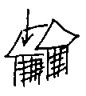
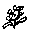
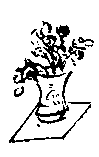
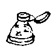

一月一日 〔豊島区西巣鴨一ノ三二七七巣鴨拘置所の宮本顕治宛 四谷区西信濃町慶応義塾大学病院内い号の下より（封書）〕
一月一日 第一信。
あけましてお目出とう。今年もまたいい一年を暮しましょうね。
ずっと順調で熱もきのうきょうは朝五・九分位、夜六・八どまりの有様です。このようになおりかかって来ると傷口の大小が決定的に影響して、一寸足らずの傷であるありがた味がよくわかります。傷そのものの不便さはもう殆ど感じません。ただ腹帯をたっぷりかたくまいているのでおなかがかたくって、曲りかがみに大不便です。上体を一寸捩るような形はまだ妙に筋がつれて出来ませんがベッドから下りたり上ったりすっかり自分の力でやれます。きょうから少々歩き初めです。一日に三四度往復十間位のところを歩くようになりました。これで三四日して入浴出来るようになって、もっと足がしっかりしたら全快ですね。傷が大きいと、表面だけ癒ったようで内部はよくついていないことがあり、退院後に又深いところで苦情が生じたりする危険があるそうですがこう小さい傷だと、内からちゃんとまとまり易いから大助り。
今は椅子にかけ、小テーブルに向ってこの手紙を書いて居るところです。咲枝がお年玉にこしらえてくれた黄色いミカンのようなドテラを着て、きのう稲子さんがもって来てくれた綺麗な綺麗なチューリップの植込みを眺めつつ。しかもこのテーブル（枕頭台から引出すようになったの）の上にはお供えが一つあってね、丸く二つ重った形を、そして、上のところに、ちょいと松竹梅の飾りをつけた形を
先生たちは元旦でも出て来て、明日入浴してよいということになりました。初めて普通の御飯をおひるにたべて、実に外科の仕事は、バイキンさえ入らず、体質異状がないと早いものですね。
あなたの名、私の名、新しい筆で大晦日の夜お祝箸の袋の上にかいて、先ずあなたのから食べ
明日壺井さん夫妻が見えるそうです。そして四日には繁治さんが久しぶりでそちらにゆく由です。
目白はおひささんが二十六日にかえりました。二十八日までという約束で行ったのですが、急なことだし、他のことともちがうので速達出してかえって来て貰いました。寿江子がとまっています。但三ヵ日の間は寿江子林町でワアワア云いたいらしいので、本間さんのチャコちゃんと云う女の子、高等科二年、をたのんで滞在して貰う手筈にきめました。自分は閑散な正月であるわけですがはたの連中に何とか正月らしくしてやるために、やはりそれぞれ心くばりがあるものです。
手塚さんのところ二十八日だったか女の赤ちゃんが生れました。八百匁以上でよかったが、生れるとき赤坊が廻転して出て来るとき自然にへその緒が解ける方向にまわるべきところ、逆回転だったのでカン
中野さんのところはまだ正月が半分しか来ないようですって。お産が一月かですから、それが無事終了までは宿題を夫婦でかかえているようなもの故本当にほっとはしないのでしょう。ふた子でも生めばいいのに。ふたごは面白くて、可愛いでしょう、私たちは皆ふたごって面白くて好きです。勿論どっちも丈夫な場合だけれども。独特にうれしいところがあるにきまっているから。
体全体のつかれかたも追々ましになって居るから御安心下さい。きのう坂井夫妻見えたとき私にゆっくりかまえるようにとのおことづけありがとう。私は全くゆっくりかまえて居ります。ただ外科の進みかたは内科と全然ちがったテムポをもっているだけです。
でも本当にこうやってのんきなこと話して生きていて、妙ね。何日ごろになるか、初めてお目にかかるとき私は手をとってほしい気持です。お辞儀をして、さアユリは死なずに来てよと、そういう気持です。〔中略〕この間入院する前は、二階の勉強机でない方に、ベッドとの間においてある椅子にかけて、いくつもの手紙かきながら、もしかしたら死ぬときになっていたのかと考えた。だって、私としたら珍しく万端すんでいて、あなたにあんなに連作の手紙もかき、心持はしーんとしてしまって
明日入浴出来たら
二十八日にちゃんとお顔を見てつたえることが出来なかったので気になっていますが、そちらの元旦はいかがな工合でしょう。臥ていて、余り安らかなおだやかな、底によろこびの流れているような心持のとき、きっとやさしい親切な心で思われているのだと感じます。本年の正月は、計らずいろいろの大掃除があって、又珍しい新らしさがあります。年々の正月を思いかえすと何と多彩でしょう。歴史が何と色つよくかがやいているでしょう。この二三日すこし気分がしゃんとしてものをよみたい気も起って来て居ります、ではお話し初めをこれでおしまい。呉々も御元気に。
一月三日 〔巣鴨拘置所の顕治宛 慶応大学病院より（封書）〕
一月二日 第二信
きょうから雨か雪という天気予報でしたが、今は空が晴れて、僅かな白雲が東の方に見えます。きょうは、午前十時頃、初めて入浴しました、実にいい心持。傷口は軟膏と絆創膏を貼って。しかも、これは私があぶながってむき出しではこわがるので、おまじないのようにつけてくれたものの由です。むき出しで入浴してもういいのですって。
出て来てから一時間ばかり眠り、先生が見えて、手当をするとき鏡をとって眺めたら、おなかのよこに薄赤く十字がついていて、この下のところにごく小さい穴が見えました。それは表面だけでもう深さはないとのこと。黄色い薬のついたガーゼをあててバンソー膏をつけて上から湿布してあるだけです。熱は朝五・九。入浴直後六・八、

ふらふら読書の道すがらアメリア・イヤハートの「最後の飛行」をよみました。一九三二年頃単独で大西洋横断飛行をしたり、多くの輝かしいレコードをつくっていた彼女が太平洋を横切って世界一周飛行の途中、ニューギニアのレイと赤道直下の小島ハウランド島の間、彼女自身によって「全コース二万七千
リンディーの夫人のアンがやはり本をかく由。今度のは「聴け！ 風を」という題の由。女性の生活と広い意味での文学は、こういう方面にもひろがって行っているのですね。
私は飛行機は駄目です。パリとロンドンとの間を
文学的な形にはまとまっていませんが、三八年の九月のモスク
 から三人の婦人飛行家（モスクと南露の方を無着陸飛行したレコード保持者たち）がバイカルのこちらのコムソモーリスカヤ辺へ無着陸飛行を試み、もうすこしのところでガソリンが切れ、不時着に迫られたが機首を突込む危険が見えたので一人の婦人飛行士にパラシュートで飛下る命令が下った。彼女はそれを実行した、機体は
から三人の婦人飛行家（モスクと南露の方を無着陸飛行したレコード保持者たち）がバイカルのこちらのコムソモーリスカヤ辺へ無着陸飛行を試み、もうすこしのところでガソリンが切れ、不時着に迫られたが機首を突込む危険が見えたので一人の婦人飛行士にパラシュートで飛下る命令が下った。彼女はそれを実行した、機体は日本では自動車をやれる女のひとさえごくまだ
一月三日
きょうは久しぶりで髪を洗って貰って、小豆島産のオリーブ油をつけて、非常にさっぱりしたところです。十二月は中旬にならないうち病気になってしまって、ちっとも髪など洗うときがなかったから、全く爽かです。
考えて見ると、私は十年目位にひどい病気をして居ります。一九一八年、二八年、三八年。そして、それがいつも年の暮ごろから正月にかけて。奇妙です。その上、一つの病気の後に生活が或変化をうけて来ている。今度の後のことはまだわからないけれども。今度の病気のやりかたは以前のどれに比べても結果はプラスだけだから、生活に変りが生じたとしてもやはりプラスだけだろうという気も致します。二八年から九年にかけて肝臓炎をやったときは、内面的に大きいプラスを獲たが肝臓は半死になってのこったのですものね。今度のように生涯の禍根を断ったというのではなかった。
体の調子は良好で、この前の手紙に書いたひどい疲労感はごく微かになりました、ただ、夜夢を見るの。これは私としては大変珍しいことで注意をひきます。何か不安という程ではないがアンイージーな夢を見る。そこで心付いて、もうすこし傷が丈夫になったら眠る間腹帯はとることにしようと思います。しっかりしまっている、そのため何か圧迫感があり実際圧迫されていて夢を見るのでしょうと思う。夢はとりとめなくて、昨夜見た夢はどこかアメリカの植民地で、ポプラーの大変奇麗な緑したたる並木道があり、そこを通りぬけてポクポク埃っぽい道へ歩いて出たら、むこうから人力車が来る。それが日本と支那の人力車のあいのこの形をして、白粉をつけた娘が三人も一台にのっていて、友禅の衣類をつけていて、歩いている私ともう一人どこかの女を、大層軽蔑するように
鴎外の、「妻への手紙」というのをよんで、
『戦没学生の手紙』は、この本に日本訳されていない部分だけロマン・ローランによって紹介されているそうです。やっぱり一つ一つ特殊な境遇に生きた二十三四歳の若々しい心の姿があって、それが多くの幻にとらわれているにしろ、一律の観念に支配されて物を云っているにしろ、哀れに印象にのこるものをもっています。最後に私の心に生じた疑問は次のようなものです。人間が非人間な非合理な生活の条件に耐える力は実に根づよいが、それを正気で耐え得る人間というものも亦何と尠いことであろう。大抵が、何かの観念に逃げこむ。それで耐える。そのために、非合理な条件を改善する或は根絶させる力がそらされて、減じられてしまう。キリスト教の伝統のある精神の動きかたは、そのことをつよく感じさせますね。現代の神話もそのことをつよく感じさせます。
歩くのがまだ十分ゆかず。又本気な読書もすこし重い。それで、いろいろふらふら読書をしている有様です。
明日は売店が開かれてエハガキを買えます。早速お送りいたします。又あしたの予定は、すこし建物の内を散歩することです。二階の大廊下はからりとしていて心持がよいから。今私のいるい 号の上の部屋（真上ではありません）で父が亡くなりました。この病院は父がプランしたので、おれは慶応で死ぬ、と云っていた、そのとおりであったわけです。尤も自分が病人となって見たらいろいろ苦情が出てこの次建てるときはもっともっとよくすると盛に云っていた由。こちらの建物は旧館で、新館の方はもっと帝国ホテル流で私は気に入って居りません。こちらは白壁で、部屋もゆったりとってあって、その代り室内に洗面の設備などはありません。
ずっと風邪もおひきになりませんか、読書の材料は本当に相当なものですね。ヴァルガのは二冊でしょう？ インドの本はいつか見て目についていた本です。明日繁治さんがゆきます。そして、七日か八日には寿江子がゆきます。私は七日ごろ家へかえると思いますが、外出はすこしおくれるから十五日ごろおめにかかれることになるのではないかしら。殆ど一ヵ月ぶりね。顔だけ見てはどこも変っていなくてきっとおかしな気がなさることでしょうね。
一月四日 〔巣鴨拘置所の顕治宛 慶応大学病院より（絵はがき三枚 （一）［＃「（一）」は縦中横］同病院正門、（二）［＃「（二）」は縦中横］同病棟大廊下、（三）［＃「（三）」は縦中横］同全景）〕
（一）［＃「（一）」は縦中横］この門が信濃町に面した正門。つき当りの自動車のとまっているところが病棟の正面玄関です。この玄関を入ると、子供の群像が一つ立っていて、その正面後のドアからい号に入る。左手に（ドアの手前のホール）二階へ上る階段があって、そこからい号の上へあがるようになって居ます。上ってゆくと、休憩室のようなホールに出て、その窓がこのエハガキの正面に（二階）三つ並んだ大窓となって見えます。もといたのはい号の左側。エハガキの左側の植込に面した側。今は右側。内庭に面して居ます。
（二）［＃「（二）」は縦中横］ほ、だの、と、だのという字の札が見えるでしょう？ これはずっと奥の耳鼻などの病棟。逆にずっと玄関の方へ出てゆくと、一番はじめに、い、があるわけです。内科は、は、です。※［＃丸い（○の中に「い」）、16-2］は急な場合、科によらず入れるところ。ですから小児科もとなり合わせで、少なからずやかましいようなこともあります。きのう（三日）はじめて午後すこし歩いて二階の休憩室まで行って見たら、ラジオをやかましくやっていて、閉口してにげかえりました。おしるしの初雪でしたこと。
（三）［＃「（三）」は縦中横］手前の木立は外苑ですね。大きく見える玄関は外来の玄関で、その左奥に信濃町に面して、私たちの入口があるがはっきりしないこと。外苑から出て省線の上にかかっている橋をわたった左側の白い一かたまりは別館でしょう。別館とこちらの建物とは長い地下道でつながれて居ます。別館から又はなれて見える一つが食糧研究所の建物でしょう。こうして見ると随分ギッシリとして大きいことね。校舎、研究室皆あるから。そして、信濃町の通りのソバや洋食やすしや、皆この一ブロックのおかげで御繁昌というわけです。（（三）までで終り）
一月六日 〔巣鴨拘置所の顕治宛 慶応大学病院より（封書）〕
一月六日 第三信
明るい午後。風がきついらしいけれども、実に実に青い空。東京の正月はじめの空の色も澄んでいますが、モスク
の一月の白雪の色、日光の燦き、黒く濃く色とりどりの家の屋根から立ちのぼっている白樺薪の煙など、いつもよく思い出します。冬らしい冬の光景として。その後いかがでしょう、やっぱり風邪もひかず御元気ですか。四日に繁治さん行きましたか？ かえりにもしやよって呉れるかと待っていたら来ず。きのう五日故栄さんでも来ると思ったが来ず。本日午後二時近くですが、まだ来ず。待ちながら文庫の下らない恋物語（ドイツのロマンチシスムの見本のようなもの）を三つもよんでしまった。どうしたのかしら。行かなかったのかしら。行かなくて、わるいと思ってひっこんでいるのかしら。どうしたのだろうと考えながら、これを書き出しました。きのうは、もし何かおことづてがあればと思って待っていたのだけれども。
もし行かなければ、次々への手紙でだけ、私の順調な恢復の模様を知って頂いているわけね。三日前から、毎朝入浴して、手当（ガーゼの湿布をつけること）し直して、一時間ほど眠って、おひるたべて、すこし休んで本を読むという調子です。熱は六度から六・六です。大変きっちりとして来て、入浴から上ったすぐ後六・八位が頂上です。傷は二センチほどにちぢみました。木村博士笑って曰ク「こんな小さい傷口で虫様突起をとったなんてうそだという人があるといけないから、一遍出たのを見ておおきなさい」その位です。そして、傷の下にあいている小さい穴も大分肉が上って来て、浸潤もごくすこしガーゼについて来るだけになりました。今度は全く驚くべき好成績です。木村先生も大いに御満足で、今日は、その大きいおなかの小さいきれいな傷の記念写真をとりました。外科医にも制作的情熱は盛でしてね、先生は忙しいのにわざわざ室へ来て、小さい
体の疲れもいろいろにやって見て、大分直りました。七日ごろ退院と思って居りましたが、まだ疲れ易いし、そとを歩きたいという欲望全くないし、するから、十日までいて、浸潤もすっかり乾いてからかえることに今日きめました。折角かくの如き大成功だのに、文字通り針の穴から妙な失敗をしてはくやしゅうございますから。悠々構えろというあなたの標語をここでこそと守るわけです。家へかえっても何処へも行かないだろうと思います。というのは、国府津へ行ったって目白より入浴が不自由だったり食事が自分の負担になるし（としよりの女一人留守していて、そのひとは頭がよくて、私が一人行くと、自分が体が変になって休むの）さりとて温泉へ出かけるのも進まず。去年行った熱川は行きたいが、バスが一時間以上ですから無理だし、熱海、湯河原は気に合わずですから。かえって、又例の十時就眠を実行すれば結構だと思って居ります。それに病院を出るようになれば、私のための恢復薬は特別品があるのだから、東京なんか離れるよりその薬をよくよく眺めて、聴いた方がずっと利くこと確実です。今でさえ、そう思っている次第です、ああこの病院は万事到れりだが肝心の薬一つが欠けている、と。しかも、その薬こそ私を生かしも殺しもする力をもっているのに気付かないとは何とうかつでしょう！
島田では隆ちゃんの出立ちが迫っていて、さぞおとりこみでしょう、この間お母さんからスタンドや何かのお礼とお見舞の手紙頂きました。お母さんのスタンドは日本の手提行燈の形の、白絹を黒塗のわくに張ったもので、よくお似合いになるだろうと思います。お気に入ったそうです。この頃はあなたのところからもよく手紙を呉れると書いてありました。お母さん、私がおなか痛がったり、お餅をたべたいのに食べられないと残念がったりしていたのをよく御承知ですから、手術したことをびっくりなさりながら、やっぱり、後がさっぱりして却って安心と云って下さいました。後がさっぱりのうれしさは、今にもうすこしして平気に歩くようになったとき俄然真価を発揮すると思います。
私はリンゴぜめよ。誰彼が見舞に来て呉れ、何か土産をと考えると、汁の食べられる果物リンゴと思いつきが一致するらしいのです。青森のリンゴ、赤いの青いの、ゴールデン・デリシャス、レッド・デリシャスと、リンゴの行商に出たい位です。あなたの工合のおわるかった時分、私自身何か何かと考えよくリンゴと考え、又リンゴ召上れなどと書いたでしょう？ それを思い出して苦笑ものです。リンゴは閉口して、ミカンをたべて居ります。ついでに食事をかくと、もう普通で、朝おみそ汁御飯一杯半、何か野菜の煮たの。ひるは、トーストに紅茶と何か一寸一皿。夜、おつゆ、魚か肉、野菜、御飯二杯。その位で、間にはカステラ一つ位。間食はしない方です。体重はすこし減ったかどうかです。顔もきっと御覧になると、どこも細くはなっていないよ、と仰云るのでしょう。今はまだ脚の力がないの。でも、ベッドの上下、折りかがみ等楽に致します。まだ横向きに臥られません、どっかが心持わるくつるのです。右へも左へも本当の横向きは出来ない。仰向いて例の二つ手をかつぐ形で眠ります。夢はまだ見ます。いやね、昨夜の夢は、小さい小さい耳掻きがいくつもいくつもうんとあって、私はその一つ一つの小さい耳掻きの凹みにつまっている何かのごみをとらなければならなかったの。面倒くさくなって、理屈をこねているの、いろんな発明があるのにこんな下らないことに人間の手間を無駄にしているなんて、非理性的だ、と云って。
非理性的なんかというのは、ひる間考えていた言葉なのです。非常に自分が薬欠乏を感じて、渇いて、求めて求めて
一月九日 〔巣鴨拘置所の顕治宛 慶応大学病院より（封書）〕
一月九日 第四信
六日づけの第一信、きのう着。本当にありがとう。化物退治が成功したうれしさが、あのお手紙に響いているよろこびで倍々になりました。我々の頭の上は、天気晴朗であろうとも波浪は決して低からずと予想される時期に向って、腹中の妖怪を退散させたことは全く満足です。しかもこんな好結果で。経済的な点からもよい時期でしたし。
きのうから、もうすっかり漿液の浸潤もなくなりました。きょうはどうかしら。まだ交換がないから、わからないが。今は小さな細長い消毒ガーゼをあてて、上から絆創膏を十文字に貼りつけ。
ここまで書いたら朝の廻診になりました。木村先生入って来て、バンソー膏をはがす。そのとき皆が、一寸どうかしらという表情を沈黙のうちに示す。すっかり乾いて居ました。「もうすっかりきれいじゃないか、もういい」そして、私が歩くとき胃の下の方がつれて、すこし胸がわるいようになりますけれどと云ったら、「横づなでしめたらいいでしょうな」すると、外科の婦長をしている大層しっかりものの森田さんという看護婦が「木綿を二つに折ってしっかり巻いておおきになると一ヵ月ぐらいでお馴れなさいますよ、寒いと傷がピリピリ痛いときがありますから真綿でもお当てになってね」とのことでした。では明日かえったらそのようにしましょう。木村先生は制作品にお名残の一
それからお風呂。あったまって、かえって来て、横になってボーッとしていたら案外早く寿江子がかえって来ました。ひどいひどい風の由。では又きょうも外出初は中止です。一生懸命に喋ってパタリと落ちて、両方で大笑いをなすったって？ 本のこと、その他わかりました。ありがとう。それに、私の外出について寿江子は大変監督権を与えられたように得意になって、主観的にいいつもりでも云々だとか、第三者が見て云々だとか、口真似をしました。十五日ごろ出かけたいと
六日のお手紙は様々の心持、様々の想像される情景がのっていて、くりかえし、くりかえしよみました。隆ちゃんの手紙、全く、一遍よんだだけでは置けない手紙です。私の方へも病気の見舞と挨拶とをかね、同じような勇壮さ同じようなやさしさ、何とも云えぬ素朴さで満ちたいい手紙をくれました。その手紙をよんだとき、あなたの方へもこういう手紙あげたかしら。空が自分の美しい輝きを知らずに輝いているような美しさと、その美しさが環境の表現しかとっていないところ、しかもそれを透して本来の光が見えることなど感動をもって考えていました。なかなか心を動かされました。稲ちゃんが来たので、この手紙一寸見て、とよませた。そんな心持でした。だからお手紙見て、実に同感であったし、こういう気持で愛情を抱いている兄や何かとの生活のつながりということについても浅からぬ思いを抱きました。乗馬隊ですってね。あなたは馬におのりになったそうですが隆ちゃんたちのれるのでしょうか。馬もきっと、あのひとになら優しい動物の心でなつくでしょうね。
富ちゃん、島田で手つだうこと初耳でした。克子さん、二十五日ごろ御結婚です。よろこんで新生活を待っている手紙が来ました。私たちのお祝は針箱です。いいのが買えましたって。針箱というものは情のこもったもので、妻にも母にも暖いものです、鏡台よりも。そうでしょう？ 女が鏡台の前であれこれしているの、面白いが、時に薄情で女の無智から来る主我性や動物性があらわれる。針箱は活動的で一家の清潔の
京大に入っていらしたときの話。短いなかによく情景が浮き上って、あの部分は短篇のようでした。『白堊紀』の中の短篇が
うちへかえるのはうれしいと思います。ここはうるさいの。物音が。大した重症がないからだそうですが。二十三四日ごろ、それから正月に入って二三日、疲労が出ていたとき物音人声
クリスティーの『奉天三十年』二冊お送りして見ましょう、そう云えば『闘える使徒』の新版まだ出ないらしい。あれとこの奉天三十年とは二つの照し合わす鏡のように、支那の五六十年間を語って居ります。奉天三十年の方がもっと歴史の各場面をはっきりと。この著者は伝道医師故、それとしての小鏡も手にもたれているが、読者はその鏡が、その持ち手にどういうものとして主観的に見られていたかということも亦判断出来て、ぎごちない訳ではあるが、よめます。
この十日ばかりの間によんだものでは、これと、シュトルムの短篇とがマア印象にのこります。スタンダールの「カストロの尼」も一度よんでおいてわるくはないものでしたが。スタンダールの「赤と黒」や恋愛論は十年間に十何冊とか売れたぎりだったそうですね。「パルムの僧院」は一日十五時間ずつ労作した由。
小橋市長の発案で、今度は都会文学というもののグループをつくって、東京の情操にうるおいを与えるそうです。顔ぶれは秋声、和郎、武麟、丹羽文雄、横光利一、もう一人二人。林芙美子、深尾須磨子諸女史はイタリー、ドイツを旅行に出かける由。ドイツの本当の心にふれて来るそうです。
一時長篇が流行しはじめて、忽ちある方向へ流されて行ってしまって今日に及んでいるので、本年は、純文学の甦生は第二義的野心作を並べる長篇よりも、寧ろ地味にフリーランサーとして書かれる短篇のうちにその可能がふくまれていると考えられて来ているらしい様子です。有馬農相の写真をつけた農民文学叢書も、今度は急に表紙を代えなくてはならなくて大変でしょう。
林町では太郎かぜ引。咲枝がすこし体の調子が変と云って居りますが、これは或はやがてお目出度になるかもしれず、まだはっきりしないらしいが。
あなたからの私の世話をしてくれる皆によろしくをよくつたえたので、お手紙が来ると、冗談に、よろしくがあるかしらなどと云って渡してくれます。あなたはここでも、廊下を歩いたりいろいろしていらっしゃるわけです。
和英の辞典はコンサイズよりもすこし大きくて目のつかれないひきいいのが林町にあったから、それと同じのを入れましょう。新法学全集は文楽堂に云いつけます。お金もうおありになりますまい。一二日中に送ります。ではこれで病院での手紙はおしまい。私が、黄色いドテラの片肩をぬいで書いているので榊原さん曰ク「そんなにおあつうございますか」
一月十二日 〔巣鴨拘置所の顕治宛 豊島区目白三ノ三五七〇より（封書）〕
一月九日夜 第五信
今、夜の七時半。榊原さんはここの寄宿の方へ遊びに行って九時にかえって来るところ。私はフォンターネという十九世紀のドイツのリアリスト作家の「迷路」という小説を読み終って、さてとあたりを見まわしたが、お喋りがしたくなって。このフォンターネという作家は、訳者によってリアリストと云われているが、リアリスムは、ドイツではこういう身分にさからったことをすれば、結局不幸になる、という良識を、菊池寛のように恋愛その他の生活法にあてはめてゆく態度に限られていたのでしょうか。ドイツのリアリスムというものに興味を覚えます。ドイツの文学史は知らないけれども。ゲーテ賞を（ノーベル賞なんかナチの文学者は受けるに及ばん。ゲーテ賞をやる、ということで）貰ったカロッサにしろ、医者として或点大変リアリスティックですが、いざとなると、永井潜先生に近づき科学と宗教的なものとをまぜ合わせてしまっている。フランスが文学に於て示したリアリスムの力づよい歴史的な功績と比べて面白い。
今この部屋のスティームの上に、私の腹帯が乾してあり、その上にお正月用にお送りしたと同じ手拭がほしてあります。この手拭はスフ三分混紡で、今にこれでも珍しいものとなるわけですが、使って御覧になりましたか？ ちっともさっぱり水が切れません。スフは赤ちゃんの皮膚を刺戟してただらすので、この頃お母さんになる人たちは、古いものでも木綿をきせたいと大努力です。私の腹帯にしろ、
どこかで鳥が
あしたの晩は三週間ぶりで、我が家の机の前に坐れます。そして、こういう万年筆ではないペンで字が書けます。この万年筆のこと、いつかお話ししたことがあるでしょうか、母のかたみだということを。パリで母の誕生日十月十日の記念に父が買ったものです。大切にビロードのケースに入れて、あの殆ど盲目に近かった眼で、勘九分でいつもいろいろ書いていたその万年筆です。先が細くて、いちいちインクをつかったりペンをかえたり出来にくい場合の役に立って居ります。ウォータアマンです。
こういうまとまりのない文章の伴奏として、キーとあいてひとりでに閉る扉の音。パタパタいう草履のおと、何か金物のぶつかる音、廊下に反響して言葉は分らず笑声だけ高い二三人の女の喋り。どこかの咳等があります。病院は今ごろから九時ごろまでいつもなかなかざわつきます。全体がざわめきの反響に包まれている。あしたもうかえると思ってこちらもきっと落付かないからでしょう。やかましさが実に耳につくこと。
十二日
さて、久しぶりで例のテーブルの前。九日づけのお手紙、昨晩茶の間の夕飯が初まろうというときに着きました。どうもありがとう。それについてのことより先に十日の退院の日からのことを書きます。
十日はいい塩梅に風も大してなかったので大助り。午後二時ごろまでに世話になった先生がたに挨拶して自動車にのって榊原さん、寿江子とで家へかえりました。いろんな挨拶や何かでつかれはしたがおなかの方は大丈夫でした。熱も出ず。大体私ぐらいきれいに癒った傷ですっかり完成までいれば、もう全く理想的である由。決してせっかち退院ではなかったのだからどうぞ呉々御安心下さい。
かえって茶の間でお茶をのんでいたら、林町からお祝にお魚を一折送ってよこしました。あっちは、今、咲枝も太郎もかぜ引で食堂にひきこもっていて来られない由。我が家にかえって、いつか下手な図でお知らせした私のおきまりの場処にどっこいしょと腰をおろすと、面白いものね。気分がすっかり変って、病院にいた間の、ひとまかせな気がなくなって、シャンとして来ます。
夜はもらった鯛をチリにして御馳走したが、私はつかれていて本当の食味はなかった。家がさむくて「アイスクリーム・ホーム」と云う名がつきました。病院は六十八度から七〇度であったから、うちへかえってすぐ二階の火のないところに臥たら〇度で、頭がしまっていたいようでした。それから火を入れ、甘いがつめたいアイスクリームを段々あっためて、きょうはもう我が家の温度に馴れて、平気。暖い二階で十度です。華氏五〇度。きのうのお手紙に
十日の夜は久しぶりの家でほんとにくつろいだ気分でしたが、やや寝苦しかった。きのうは午後一寸（二時間ほど）横になってあと茶の間にいた、座椅子にもたれて。国男さんがひる頃来て、お祝総代ということで喋って行きました。そのときほんのお祝のしるしと云って仰々しい紅白の紙包をさし出した。お金が入っているらしい様子で、上に御慶祥と書いてあります。ふーん、この頃はこんな字をつかうのかしらと思って、これはどういう意味なの？ と訊いたら、その通りだからさというわけ。御軽少の音にあてたのです。大笑いしてしまった。正直に訊いてよかったと。だって、私は真正直にこんな字もつかうかと真似したら大笑いのところでした。
きょうは、只今寿江子がそちらに出かけ。榊原さんとおひささんは、日本橋の方へ、おひささんのお年玉の呉服ものを買いに出かけました。なかなか、恩賞はあまねしでなければならないので、私は大変よ。おひささん、寿江子（これはお正月のとき羽織
いよいよ九日づけのお手紙について。これは妙ね、どうして、小石川と吉祥寺とのスタンプが押してあるのでしょう。珍しいこと。十日の午後四―八が小石川で十一日の前〇―八時が吉祥寺。吉祥寺と云えばあの吉祥寺でしょう？ あっちへ廻ったの？ 本当に珍しいこと。
先ず相当の冬らしさの中で、風邪もおひきにならないのは見上げたものです。私がそちらへ早く行きたがっていることと、それを行かせることをあやぶむ気持とは面白いわね、どうも危いという方に些か
隆治さん九日出発とは存じませんでした。本当にどうだったでしょう、午後四時にはついていたでしょうが。あとで退院したおしらせを島田へ書きますから伺います。
二十五六日ごろの様子を心配していて下すったこと、それをちゃんと知らせなかったこと、御免なさい。あれはね、わたしがどの意味でも慾張ったのではなくて、へばっていて、寿江子に行ってくれとたのんだり容態を書きとらせたりするところまで気が働らかなかったのです。二十四日には、とにかくどんなに心づかいしていて下さるかと思ってあの手紙を書きましたが、二十五日は疲れが出てぐったりしていて一日うつらうつらしていた。夜傷口が痛むようで、二十六日は食事のときだけ起き上るようにと云われて起きるが、ぐったりしてやっとだった。脈の数も多く。二十六日ごろ傷が或は化膿するかもしれないと云う状態になって、二十七日は大変不安でした。ところが二十八日に、ガーゼにひどい浸潤があったので、きっと化膿したと思って糸を切って、さぐり調べたら化膿ではなく、肉も上って来ていて浸潤は漿液と判明。大いに皆御機嫌がよくなって、寿江子はその安心ニュースをもって出かけた次第でした。
二十九日にはすっかり下熱して、初めて六度。三十日には初めて椅子にかけて食事をし、そちらへの手紙も書いたという風でした。
こちらでは、私がのびてしまうと万事ばねがのびて
世話してくれた人たちへのあなたからのよろしくは十分つたえました。〔中略〕
中途でお客があって（主役は当年二つになる女の子です泰子という。私が名づけ親なの。）又二階へ戻って来たが出かけた連中はまだ戻って来ない。
子供の話になりますが、てっちゃんのところの娘、これはやす子ではなく康子とした由、生れるとき難産であったために
いずれにせよまだあしたあさっては出かけられないわけですがどうぞ呉々もお大切に。〔中略〕そろそろ風のないひる頃ゆっくり外を歩きます。のりものになどは乗らず。家のぐるりの散歩に。風呂は毎晩入っています。一つの望みは夜もうすこし楽に眠ることです。まだ何だか寝苦しい。夢を見たり不安だったり、熱はもう先のようにとらないでいいでしょう？ 赤沈などひどかったわけですね、絶えず腹内に炎症があったのですもの。くされものを無理して持っていてあんなに疲れたのだと思います。
では風邪をおひきにならないように重ねてお願い申します。
［自注１］松本夫人――松本清子、眼科医。
一月十六日 〔巣鴨拘置所の顕治宛 目白より（封書）〕
一月十五日 第六信
きょうは珍しく風のない好い日ですね。きょううちのお正月です。元日にいなかったから。小豆粥をこしらえて、おめでとうと云って寿江子、バラさん（榊原のバラ）、ひさ、私とでたべました。そこへ十三日づけのお手紙着。ゆうべ床に入ってから九日頂いたから十一日はどこかで、十三日は私の方へ来たろうかしらと盛に慾ばっていたところでした。
ユリは盲腸に注射したり、とあるのでひとりで笑ってしまった。全く盲腸ではなやまされつづけていたわけですが、おなかのなかのことだからよく判らないで、大抵の人が一度やって切らずに癒すとそのまま吸収してしまっているというので、そのつもりでいて注射したのは、恐らく実際は盲腸のせいで、疲労し易かったりいろいろしたのに対して補強薬のようなモクソールを注射していたわけです。盲腸に注射というと、まるであの尻尾めがけて注射しているようで滑稽ですね。私のは吸収性でなかったから苦しかったのでしょう。
こうして家にいると、目にもとまらないようなこまかい日常の動作のうちに、傷あとなど案外早くましになるのでおどろきます。すこしでもどうかという時期を病院で辛棒していた甲斐があって、かえって五日目ですが動作が楽になって来たし、つれも大分気にならなくなりました。もう切ったところへ手を当てずに歩けます。家の生活は微妙なものだとしみじみ感じます。病院にいてはない細々した立居、のびかがみ、ねじり、無意識のうちにしているそういう微細な運動で馴れるのですね。だからこれを逆な場合として見れば、或条件では、そういう数えることも出来ない動作で、病気をわるくしていることもあるのです。本当にこれは面白いところです。そして、よく医者が御婦人は特に御夫人は必要が生じたら決心して入院すれば二ヵ月かかる病が一ヵ月でなおる、という所以でしょう。おまけに病気をすれば、どうしたって旦那さんが病気しているより細君が臥ている方が気がひけるわけですから。
早くよくなったことにしたくて芸当など致しませんから、決して決して御心配なく。私は大体そういうことは出来ないたちだから大丈夫です。食べるものだって。御心配頂くのも可笑しくて且つ大いに満足ですが、これも大丈夫よ。
私の今年は、やっと十七日ぐらいからはじまるという感じです。病気は去年のうちにつづきになって入ってしまっている。そして、思い出すと、ああ苦しかったナ、と思う。沁々そう思って思い出します。麻睡薬がさめかかって来て、傷をいじられていた間の、あの独特なひっぱったり圧迫したりの感覚を思い出すと、あのとき通り唸りたくなる。医療的な経験でさえこうなのですものね。金属性の関節のついた、手のひらや指の代りに鉤のついた道具を眺める人々が、思い出す思い出はどうでしょう。
本のこと、「女一人大地をゆく」は新本がないのです。古がなかなかない。私のは線だらけ。そのためにおくれている次第です。「使徒」は十二月初旬に新版が出るというので注文中のところ、「母」や「大地」ほど売れないからと見えてまだ出さない。そのためにおくれました。旧版のサラが見つかりましたから一両日中にお送りいたします。タイムズの地名人名はこれもまだです。十二月十八日と云っていて、二十日すぎと云っていて、まだ出ない。
和英はどの道買うわけです。和英はただ単語ばっかり並べたのはつまるまいと思います。慣用語の表現なんかが見て面白いし又実際ためになるし。そのためにはやっぱり、余り手軽なのでは眺める興味も減りますから。林町で備えている井上の和英の大型のがよいと思っていたら絶版の由。すこし歩くようになったら出かけてしらべましょう、見ないとどうもたしかでないから。
徳さんのお年玉である支那語の本二冊お送りいたしました。発音がわからなくても読めてしまいそうな本でした。それからいつぞやカタログを注文した勤労者図書館の目録が到着しました。どっさり本が出て居ますね。小説の翻訳も沢山あります。評論集もある。すこし書き抜きしてすぐお送りいたします。地図のついている新年号の雑誌のこと、これも私が出ないと駄目だからもう少々お待ち下さい。十七日の出初式が無事
体温表十二月に入って一つも書きませんでしたろうか、そうだったかしら。あのダラダラ風邪のときなんか書かなかったでしょうか。――きっと面倒だったのでしょうね。そうすると一ヵ月分ね。もうこの調子が既に或気分を表していてすみませんが、実はこの間大笑いよ、あなたへの手紙で本年からはもう体温表は御かんべんと書いたばっかりに、寿江子の伝言で体温表のことがつたえられたから。こうやって手帖を見ると、七日ごろまで普通で八日には六・八分で臥床。かぜがはじまっています。十二月は病気月だったから、別の紙に書いて見ましょう。しかし、これからの分は本当にもういいでしょう、平熱つづきだのに毎日計っているのは却って健康でないようで妙ですから。ね。
寿江子さんがおききして来た用件はそれぞれその通りにいたしました。手紙はどちらへも書きましたが、御本人はまだ見えません。
腹巻は、これから大いに珍重しなければなりません。毛のものはすべて。あれも（お送りしたのも）7.00 ぐらいであったのに 10.00 になっている。そちらで洗わず、うちで洗ってよくもたせましょう。
まるでちがう話ですが、この間から話そうと思って忘れていたこと。丁度二十八九日でしたろうか、寿江子が病院へ来て、一寸改った顔つきで、こんなものが来たけど、とにかく持って来た、と一つの袋を出しました。それはしっかりした日本紙の
きのうここまで書いたら背中がゾーゾーして頭が筋っぽくなって来たので、あわてて床に入って一晩じゅうずっと床にいました。夜すこし熱っぽかったが、きょうは大丈夫。出初式がすまないうちは気が気でありません、本当に。風邪をひき易いのは全くね。きのう島田から多賀ちゃんが手紙よこして雪が降って心持よいと云って居ります。小豆島からのたよりにもまだら雪が降りましたって。こちらは凍てついた粉っぽい土になっていてせめて、雨でも降ればよいのに。あなたがおかきになった速達は八日につきました由、大変よろこんでいられたそうです、お母さんも。電報はやはり後についたそうです。すぐ広島へ送った由。ところで克子さんが二十五日に結婚します。どうか新しい生活を祝い励して手紙をおやり下さい。あのひとは善良な正直な辛棒づよいいい娘さんですが、すこしくよくよして、じき生きるの死ぬのというし、世間並の常識にとらわれすぎているところがあります。そのことについても落付いて気をひろくもつよう、よく云ってやって下さい。私もかきますが。出羽さんという家では全くよく辛棒したそうです。
白水社でロジェ・マルタン・デュ・ガールという作家が十四年間かかって書いた「チボー家の人々」という小説山内義雄訳を送って呉れます、十四冊の予定。第二冊まで。千九百十四年に到るフランスの社会を描こうとしたものだそうです。この何々家の人々というのは外国文学には決して例がないわけではないけれども、例えばロマン・ローランの「ジャン・クリストフ」など、実に立派であるけれども、クリストフによって一人の天才の生きる道を語っていて、時代そのものを描く（人を通して）というところに焦点はおかれませんでした。ヨーロッパ文学の歴史で大戦というものは大きいエポークをなしているが、大戦後の文学の受けている影響が二様であることは極めて興味があり又教えるところ深いと思います。一つの現象は、ジェイムス・ジョイスの流派です。大戦によってこなごなにされた伝統、過去の思索の体系。その破片の鋭い切り口に刹那を反映し、潜在意識にすがりついて行った文学。こういうどちらかと云えば現象的な文学の姿に対して、そのような文学を生む社会の心理そのものを凝視しつつ、社会心理に注意を向けて行って、箇的な主人公のこれまでの扱いかたから社会の層のタイプとしての人物を見て、その矛盾、相剋、進展をリアリスティックに描いて行こうとする努力が現れている文学――このデュ・ガールのような。そして結局は後者が文学の成長の胚子を守るものですが、このデュ・ガールの人間の歴史性（箇人に現わされている歴史性）のつかみかたと、丁度今デュアメルが執筆しつつある「パスキール・クロニクル」というおそろしき大長篇（パスキル博士というのを中心にした年代記）の中での人間のつかみかたとどうちがうか、大変知りたいと思います、やはりこれも一九一四年という年代を問題としています。デュアメルは社会の其々の層のタイプとして人間をとり出さず、人間とはこういういきさつで動きつつこんな波をつくるという風に見ているのではないかしら。フランス文学にあらわれているこういう真面目な収穫は、今日の
『タイムズ』の文芸附録の特輯、世界の文学を見ると、フランスでこういうものが着々と書かれてゆき、ドイツでは極めて
おや、もう八枚です。ではこれで中止。明日おめにかかります。
十二月分計温表
起床 計温午後四時頃 就床 計温
一 日 六・四〇 六・三 十時 六・三
二 日 七時 六・五 十時五十分 六・四
三 日 六・四〇 六・三 十時三十分 六・三
四 日 七・一五 六・三 十時 六・三
五 日 六・四五 六・四この日はひどく暖すぎた十時四十分位？ 六・二
六 日 七時 六・六風邪ぎみ 九時半 六・五
七 日 七時 六・四 〃 十時 六・四
八 日 六・三〇 六・八 臥床七・三 七・五
九 日 一日臥床。
六・七 六・八 七・六 七・四
十 日 六・七 七・四 七・四 七・五
十一 日 六・五 六・四 七・三 七・三
十二 日 六・五 六・五 七・〇 七・一
十三 日 六・六 六・八 七・〇 七・
十四 日 八時。車でそちらへ一寸行った日
六・四后から床につく六・六 六・八 六・八
十五 日 床に入っていて手紙の時だけおきた
六・五 六・五 七・〇 七・
十六 日 六・四 六・六 七・二 七・二
十七 日 六・四 六・五 六・七 六・七
十八 日 ひさの姉死去急にかえる
六・六 六・四 六・四 六・四
十九 日 久々の出〓
七時 六・四 六・五 六・五（十時就眠）
二十 日 六時四十分 六・二 六・四 九時半
夜十二時すぎ苦しくて目がさめ 七・五
二十一日 朝七・五、林町へ電話午後入院、手術、后七・八（？）
二十二日―二十八日迄。病院でカルテへかいてよく判らず、六・八位から七・一、七・二の間。
二十九日初めて六・六。三十日以後朝五・九夕方六・六位にきまった。
一月十八日 〔巣鴨拘置所の顕治宛 目白より（はがき 速達）〕
十八日
今日はすっかり景色がかわって外を歩けないのが残念な屋根屋根の眺めです。さきほど弁護士のことについてのおことづけは確にわかりましたから、一筆速達いたします。親切という風に思う程でもありませんのですから。いろいろは二十一日におめにかかりまして。
一月二十日 〔巣鴨拘置所の顕治宛 目白より（封書）〕
一月二十日 第七信
十八日づけのお手紙をありがとう。二十一日に行ってシクラメンの大きい賑やかな鉢を二十三日のために入れようと思っていたところ、福寿草が咲きかけでは可哀想故、おっしゃるとおりに致しましょう。その代り今寿江子がこれをかいているまわりで大いに美術家を発揮して居ります。光子さんがいた間にもとの家の一寸見える二階の南側のスケッチをして貰ったら、何となししまりのないのが出来て感じがないのでお送しないでいた。寿江子を動員して見たら、マチスのコムポジションに似たようながら面白いのが出来そうだからやって貰っているところです。どんなのが出来るかしら。前にお送りした室内風景ね、あれの南側の面になる分です。
さて、養生のこと、勉強のこと、事務的処理のこと、ありがとう。体に力のないというようなのは一目でやはりおわかりになるのね。大抵のひとは、私の血色がよいし、活気も一通りあるのでだけ判断する。自分では血色や何かにだまされてはいず、力のない感じの方で生活を計っているから御安心下さい。気分はおだやかで、追々夢も減って来て居ますが、この力の充実しない感じは微妙で、ちっとも戸外へ出たくない。十七日に家から出たぎり。冬はこういう内部的な肉体の恢復というのはおそうございますね。傷のところは大層工合よく肉がもりあがって来ていますが。今の私の体の感じは面白いところがあります。肉体の奥ふかい全体にまだ
私の場合について云うと、十二月のダラダラ風邪や今度の切腹やその後のこういうやや弱っている状態は、内部的には様々のプラスとなっているのは興味あることだと考えて居ります。あのダラダラ風邪の間に、去年のうちのいろいろな気持の底がカタリと落ちてどこかシーンとした気持になっていたところへ、切腹で、おちた底の上で引つづき静かな持続的な省察が各面に動いていて、決してわるい状態でないと思われます。真面目な勉学ということの立体的な意義も人間生活の長い長い歴史の光とてらし合わせて、益
感じられて来て居ます。私はきっと、今までよりすこし大人らしい勤勉さがわかって来たのでしょう。ですから勉強はつづけます。事務的に必要なことをよく処理しつつ、落付いて勉強します。書けることを、書くべきようにかきつつ。書くことについてやたらにせき立った気では居りません。今年は去年一杯の苦しかったいろいろのことから学んだ点もあり、体の中からくされもののなくなったこともあって、大分様子がちがった気分で、自律的勉強、書きものの出来る気持です。おなかの中がいつも不安な一点があって、いつもそれを二十五六日ごろの御心配かけたことについては、本当にすみませんでした。これからは（マア度々あっては閉口ですが）気をつけましょう。ボーとしていて、しかも妙に鉢のことなんか気がついて、妙だった。新法学全集は、早速全集見本を見ましょう。この間実物を見たらすっかり装幀の出来た本だったと思ったのですが。何か間違ったのだろうかしら。達治さんの『世界知識』は届いて居ます。事務的にことを処理するコツが今日のことを明日にのばさないところに在るのは実際です。大体その心がけでやってゆくつもり。つもりを一層具体的にいたしましょう。
この三十日が父の三年祭です。（神道）そして母の五年にも当る。何も特別なことはしないつもりの由。林町で神官をよんで式をして、それから青山へお詣りにゆくでしょう。この式や墓参には私も出るつもりです。寿江子もこれをすまして伊豆へゆくと云ってまだこちらに居ます。伊豆と云えば、「生活の探求」は「正月の騒ぎがすんでから」伊豆の温泉へ川端、深田等々氏と出かけて、出京、中央公論社の用事をすませて両国の某という料理店へ車を駆る、というような日記をかいて居ます。作家の日記というものはなかなか感想をそそる。稲ちゃんは、『新潮』の口絵の写真にそえた文章で、この数年間自分は写真をとるとき笑ってしまう癖がついているが今日は笑っていない。これからは又元にかえって写真機の前で笑わなくなるだろうと思う。ただ目だけは子供のようにハッキリあいていたい、と書いている。これなども実にいろいろ感じられる言葉ですね。成長、自分の力で成長してゆこうとする努力の、そのときどきの姿がまざまざとうつっている。楽でなさが私などには
明日出かけるのをたのしみにしているのですが、あしたの晩は眠れるかしら。十七日の夜はね、ああ何と眼の中がいい心持に楽になったのだろうと感じて、幾条も光の
いよいよ寿江子の絵が出来上りました。本人は失敗失敗というが、それでもこの室のこの隅からの感じはわかる。これに補足として光子さんの細部的なスケッチが大に役立ちますね。寿江子は室内のあの安楽椅子辺から描き、光子さんのは丁度、私のねまきの干してある浅い手すりのところへ出て、ひろく外の景色を描いていて。光子さんの方の絵で見ると右手の煙突の先にこんな形に屋根の見えるところがあるでしょう。これがもとの家の屋根に当ります。寿江子の方のでは右手のギリギリのところに濃くこの形で屋根の遠望があらわされているところです。元この家にいたころ、更に奥の大きい屋敷は建っていず、何とかいう人の花園でした。左手に黄色っぽく洋館がある。それも花園の一部でした。二枚とも御覧下さい。今に、この六畳から出た廊下の北窓からの眺望や物干の眺めをおめにかけます。これから私はすこしスケッチをやって見ます。今も寿江子に云って笑ったの「だってくやしいよ、一枚描かそうと思うと、御機嫌とってやってさ。字が書けないと同じようだもの」しかも、ちょいちょいとやはり字でない形で見て欲しいときがあるのですから。この二枚を切手貼ってむき出しに送るか、さもなくばよごれないようにして送ろうかとつおいつの末、すこしおそくなってもよごさずに届く方法にきめました。
島田からお手紙で、富雄さんが手つだうことはお断りになったそうですね。運転手が、却って気兼ねだからというからとのことです。仲仕もおいていらっしゃる由。夜の仕事はやめて安全第一にやっていらっしゃる由、そちらにもそのようなおたよりがありましたでしょう。野原では春になって土地を処分なさる由。林町のうちは水道が凍って風呂がたてられず、目白へ風呂を貰いに来る由。大笑いをしてしまいました。きっと今に「今何時でしょうって目白へききに来るんだろう」。だって林町は家じゅう電気時計で、停電すればそれっきり。目白のはボンボン時計ですから。周囲の一般のレベルをぬきにして一つの家の中だけやったって、不便のときは、極度に不便になる。こういう悲喜劇があるから、私は石炭が質を低下させられ
一月二十四日 〔巣鴨拘置所の顕治宛 目白より（封書）〕
一月二十四日 第八信
お早う。けさはいかがお目醒めでした？ ゆうべはよくおよりましたか？ いいお天気ね。すこし風があるけれども。きのうはユリの薬のきけ工合をきいて下すって本当にありがとう。何と味のふかい、全身的に作用するこの薬でしょう。大事な大事なくすり。
昨夜は刻々を待つような独特な気持で二階のスタンドのところでいたら、急に雨の音がして来た。そちらでもきこえたでしょう、六時頃。そしたら、実にまざまざとその夜の雨に濡れたところへ電燈をうけて光っている洋傘と、その下の顔と、すこし外套の前にかかって光っている雨粒とが見えました。玄関のところへ私が出ていて、濡れた？ ときき、その黒い外套のぬがれるのを傍に立って見ている、手を出してぬぐのを手つだいたいけれども、極りがわるいようでわざと手を出さないで。現に玄関でその光景があるように鮮やかでした。きっと、あなたもこの雨の音を聴いて、やっぱり傘をさして出てゆくような心持になっていらっしゃるのだろう。そう思いました。
雨の音は暫く胸の中へ降るように響いていたが、御飯をすました時分にはもうやんでいた。雨もうやんだのとひさに訊いたら、大きなみぞれでしたと云った。
ゆうべは夕飯後茶の間にいて、縫いものをしていました。私たちの八年目の記念、私が死なないで虫退治出来た記念、そんな心持でそちらでよく着られてもう着物にはならない大島と、どてらであった
電燈の下で、例の私の場所に坐って長いこと黙って縫っていた。。そろそろ私はひき上げようとする時分、寿江子が、何かたべたくなって云い出した。「何をたべたいのさ」と私がそう云う。「お姉様何がいいの」。私のたべたいものはきまっているわけでしょう、私はあのブッテルブロードがたべたい。どんな味がしたか、本当はよくわからず、たべたことだけは忘られない、あのブッテルブロードがたべたい。「ね、何がいいのよ、お姉様は」縫いながら「私が一番たべたいものは今、買って来てくれる人がないから、駄目さ」「ふーん」そんなことを云っているところへバラさんがかえって来て、結局紅茶一杯のんで、私は二階へあがりました。
すぐ寝床へ入ってしまった。
けさは、熟睡したいい心持でおきました。
これはゆうべ日記の欄外を見ていて発見したのですが、八年毎に週日（ウィーク・デェイ）は同じになるが、旧暦は同じではないのね。二十三日は今年は旧暦の十二月四日。三日月、四日月のわけです。床に入る前、雨戸をあけて物干のところへ出て見たら、そんなにひどく寒くもなくて、大きい奇麗な星が一杯きらめいていました。
すこし体が弱いところがあって、しかも病気のあと新しい命が流れているところがあって、今の私は、大層面白い工合です。もっと病気が内科的にひどくて長かったら、快復期のこの感じは、おそらく激しく新鮮でしょうね。
――○――
ここへ一人の女客あり。
そのひとの話で、本年の秋ぐらいになったら、西巣鴨に一つ家があるようになるかもしれない話が出ました。大塚の終点からすぐのところの由、西巣鴨何丁目でしょう。その人の親類で、老夫人とその子息の未亡人（子供四人）が二棟に住んでいて、おばあさんが夏に子息の三回忌をすましたら田舎へひき上げると、そこの家があく。その家のおもやをなしているところに若い未亡人と子供らがいるが（銀行員だった人）ポツンとそこにいるよりは実家が渋谷にあるからその近くに住んだ方がよいということになりそうで、そうなると平家で四間ぐらいの家と二階で四間ぐらいの家が、表は別で、内ではかけ橋でつづいているところが、あくわけなのです。
秋から寿江子が東京に落付くについて林町はどうしてもいやだというし、ここへこのままは住めないし（ピアノがうるさくて）心配していたところでした。一人きりはなして妙な生活になるといけないから。もしそこが五十円ぐらいでかして貰えれば寿江子も自分の家賃は出して、食事など共通にして二人でやってゆけるかもしれず、大いに期待して居ります。共同に台所や何かやって、女中さんなしでやれれば、実にうれしいと思います。この家に、私が全く一人というのでは万一のときこの間のような思いをしなければならず、又寿江一人もよくない。そうかと云ってお互の条件が音については反対なのだから、こんな家は理想的です。或は六十円でも（家賃が）二人でやってゆけば却っていいかもしれない。あの辺はこことちがって周囲が
寿江子は私の癒った祝に今面白いことをやって居ります。いずれおめにかけるものです。
余りうれしいこと口へ出すと消えそうな気がするそうです。ひさの試験は受かるかどうかわからないが、受かるようにしてやって、うかれば本年の冬はいないものと考えなければならず、あとのひとのこともなかなかむずかしくて閉口していたところですし。そういう形で寿江子と家が持てれば相当の恒久性があるわけです。私が旅行したりする間も安心だし。出来るとうれしいと思います。家なんて妙なものね、もしこの話が実現すれば、空想として描いていたような好条件の形が出現するわけです。前かけのまま何でもなく一寸出られるような周囲でなくては一人ではやれるものでない、面倒くさくて。ホクホクしてもう手どりにでもしたようによろこぶのも早計ですから、私ももう笑われないうちひかえましょう。もうたったひとこと、本当に出来たらいいとお思いになるでしょう？一昨日だったか稲ちゃんと栄さんとが来て、二月十三日には本当に私の誕生日やるかと念を押し、のばしたなんて云っちゃ駄目ですよ、とニヤニヤしながら云いました。何をしてくれるのでしょう。二十三日にしようかと思いましたが、体がしゃんとしないからのばしたのですが。たのしみになりました。これぞというもくろみであの人たちが何かしてくれるのは初めてです。私はこの調子から推してあなたからは相当のものをねだってもいいらしいと思われますがいかがでしょう。何をねだらして下さるでしょう。余りゆっくりではないことよ。どうぞお考えおき下さい。かぜ気味をお大事に。病気をわるくしないおてがらをおくりものだと云われたら困る、謂わばそれにこしたものはないのだから、では又。
一月二十五日 〔巣鴨拘置所の顕治宛 目白より（封書）〕
一月二十五日 第九信
二十三日に手紙を書いて下すったのね、ありがとう。その前日あたりかと思っていたところでした。手紙を一行一行よみ進むうち、すぐ立って出かけたいようになりました。あなたはよく、あの懐しい懐しい物語［自注２］をおぼえていらしたこと。小さな泉とそこの活溌な住人雄々しいきれいな小人のはなしは、いつになっても、どのような話しかたで話されても、本来の愛らしさ、献身、よろこばしさの失われることのない物語です。私は沢山のヴァリエーション、かえ話を知って居ます。覚えていらして？ 激しい待ちもうけの裡で眠っていた泉が、初めて活々とした小人の魔法で段々目ざめ、やがて美しい虹をかけながら湧き立って来たとき、何とも云えない呻り声で、びっくりした小人が見まわしたら、泉守りの仙女が草の中に失神しかけていたというところ。素朴な仙女がよく描かれていて、私たちは好意をもって笑いましたね。
おいしいものについての御注意もありがとう。全くおいしいものにも様々あり。
体温表のこと。それよりも、消燈・起床をやかましく気をつけた方が合理的のように思われます、今の状態では。どうでしょう。だって熱は五・九ぐらいから六・六の間にきまっていて、それをとるのは、私には何だか只形式のようです。私は種々のよくない習慣をもっているかもしれないけれども、一つほめられていいことは床について横になってからは、決して本をよまないということです。床に入ってからは、いつも仕事のこと、考えたり、親しい物語を描いていたりなかなか活動的で、収穫も少くありません。だから燈なんかいらないの。消燈したって心の中はときによっては光彩陸離の有様です。そういう動的状態でないときは、父の二代目で、ベッドへ入る、スタンドを消す、もうあとは前後不覚。いずれにせよ十時消燈という原則は守りますし守っても居ります。どうか御安心下さい。ほかの連中にかかわりなく、やって居りますから。
いつぞやの連作手紙についての批評ありがとう。芸術家が、もし真の現実と人間生活の諸関係、価値の比をとらえたいと希うなら、規模が大であればあるほど無私でなければならないということが、益
痛切にわかって来ます。条件的な進歩性ということもよくわかる。これらの大切な諸点については、この間うちの手紙にもかいたように、つづいた病気が微妙に内的にも作用して、心理的に変化したところがあります。ただ、こういう肉体の事情の下で或時期――恢復期の敏感さ、感受性のするどさという感性的なものではなしに。歴史的正負を正しく設定するということは、核の核と思えます。それが出来る能力があれば、すべての小主観性やその日暮しの中での世俗的目安の腰据えなどけし飛んでしまうのだから。いろいろ臥ていた間にもそういうことを考えていて、自身の脱皮について、自身へのきびしさについて考えていたところへかえって来て「はたらく一家」直の小説をよんで、粛然としてしまった。自分など、稲ちゃんなど、本当に沈潜して真面目に真面目に沈潜してめのつんだ小説をかかなければならないと思って。何年かの間絶えず一作家の低下力となっていたものが勝利を占めて、作品のかげで悪魔的舌を突出しているのに、身についているとか何とかで、人間も四十になって云々とか自得しているのは、もう箇人的な好悪を絶しています。こと終れり的です。芸術家、人間の成長の過程における正負というものは、極めて複雑でダイナミックであり、私はそのことについてもいろいろ自分の生活から発見します。正負の健全な掌握ということには、精神力の、運動神経の溌溂さが大事ですからね。自分たちの生活がいいものでなければならないと思うことと、いいものであるということとは別であるし、同時に、エッセンスに漬けた標本みたいないい生活なんてあるものではないのだし。なかなか興味深いところです。考えて見れば去年は苦しい一年でしたが、本気で暮したおかげで、私の皮はどこか一ところにしろピリといって、今はたのしみなところがある。いつからか文学の仕事にふれて、私はよくもう一歩のところが云々と云っていたでしょう？ 二年ぐらい前から。覚えていらっしゃるでしょうか。本能のようなものが、おぼろげに何か感じていたのですね、考えて見れば。角度が（掘り下げてゆく）その頃つかめなかった。前へ前へそういう風だった。前へではなくて沈潜の方向が必要であったわけでした。生活の内容に文学上の技術が追いつかないように感じてそのことを手紙でかいたこともありましたが、ああいうのは、やはり正当に見ていませんでしたね。文学的技術は完全ではないが、そう片言でもないので、生活の内容を
きょうは曇りました。火鉢なしでこれをかいているとテーブルの木肌がひやりとします。テーブルの上には友達がくれた桜草の鉢と紫スミレとがあってあとはキチンと片づいて居ります。そろそろ勉強の気分で。
中野さんのところの赤ちゃんは二十七日が生れる予定日だそうですが、重治さんはまだ一本田です。お父さんを金沢の病院に入れるためにいろいろやっているそうです、病気は老年との関係でしょうが、手術を必要とする摂護腺肥大で癌のおそれある由。泉子さんは大塚の病院で生むことにしてあるそうですから安心です。おそい初産ですから注意がいります。
あなたの風邪、どうぞ無事終了のように。こちらから、ただそういう表現でしかあらわせないから。毛糸のシャツ着ていらっしゃいましたが、あれは今召したらもうすこし寒気がゆるむまで脱いではひきかえしますね、きっと。二月も四日ごろ立春でしょう。三月に入るといいこと、早く。空気の肌ざわりは二月下旬でもうちがいますものね。バラは何色でしたろう。フリージア、珍しくいい匂いでしょう？ さっぱりしたいい匂いかぐと眼の中が
［自注２］懐しい物語――ながい年月の間には、いくつもこういう詩集がやりとりされた。書いたものと書かれたものとの間にだけ発行された詩集。
一月二十九日 〔巣鴨拘置所の顕治宛 目白より（封書）〕
一月二十九日 第十信
二十七日づけお手紙をありがとう。昨日栄さんが、二十五日にあっちへおかきになった手紙見せてくれて、全く通俗化した一作家が「成長」という小説をかいているのには一笑したという意味のところ、思わず大笑いしました。あれも愉快なお手紙でした。
力がついて来たこと、はっきりわかりますか？ もう大分予後の弱々しさが神経からもなくなって来て居ります。二十七日には往きは目白の往来で拾って乗りましたが、かえりは大通りまで歩いて、バスと電車でかえりました、初めての試み。埃が余りひどくなければ、寒さそのものはもうこわくありません。永い間、バスなどにのっていて、ドスンとはねると、あ、と脇腹をおさえたい心持でいたから、この頃、すこしドスンとして、神経だけ習慣ではっとするが、おなかの中はちっとも痛くないので不思議な位です。本当に今年はいいだろうと楽しみです。腹の中から不断に毒素を発していたものがないというのはきっと大したちがいだろうと思われます。今のところまだそれほどにもないが。傷のあとなど劬っているから。傷そのものは小さい七八分のすこし赤みがかっている十字で、この頃は肉が凹んでいたのも殆どなおり、仰向にねたり、おふろに入っているときなどすっかりすべすべと平らになりました。傷の上の方に何かまだしこりがあって、それを全くちらしたら完成です。
きのうは電報ですこしおどろきました。記録料など出来上れば当然こちらへ請求するものだからそちらへ請求するわけないのに、どうしたことかと思ってすぐ電話かけてきいて見たらば、旅行中でわかりません。今日かえる由。そちらへ求めて来たのではないでしょう？ 出来上れば勿論すぐ支払います。ただ、出来たらすぐ支払えとおっしゃるわけだったの？ それなら電報はおうちにならなかったでしょうね、よくわからない。今夜でも又電話して見ましょう。
二十三日は本当にありがとう。二十五日につきました。返事もう今ごろ見ていらっしゃるのでしょうと思います。ゆきちがいに。この手紙（二十七日づけ）は私の返事見てからでしょうか？ そうではなさそうでもあります。たまでなくても折々が大変結構です。健康上非常に有効です。精神は休められ新たな活気とよろこびに満たされて血液循環がよくなります。
さて、交響楽的生活の美しさ、豊富さ、消えぬ輝きについて。そこには全く、最も充実した、精神の力づよい生きものとしての人間の自然さが荘厳な天真爛漫のうちに開花されていると感じます。その美しさ、微妙さで感動から胸をしめられ涙を流すときもあり、全身をもって呼ぶことがあるが、本来の透明さ、よろこびに曇りはなく、涙そのものにしろ、たっぷりと暖い雨の奇麗さをもっています。それも一つの交響楽的
リエーションです。あなたが、不合理に体をわるくするなどとは考えていないよと仰云るように、私もそんなこと思っていなかった。
連作手紙について、ありがとう。ここにとりあげられている点は興味ある点です。日本のいりくんだ生活のなげる様々の影は一様でないから、今日という一日のうちに、女大学式なもの、それから羽ばたき出ようとするもの、更に種々の程度で頭だけ、或は胸ぐらいまで或はやっと片脚のところ位迄、第二段目の歴史性から成長しかかっている者が、いりくんでいるし、一人の人間のうちに三つの歴史の時代が実に雑多な形でぶちこまれてもいる。女の生活においてこの三時代の錯綜の形は実に独特であって、この点をはっきり描き出す作家果しているやと思う位です。新しい生活を目ざしている女の生活でも、より高いモラルの創造、到達を日常生活で貫徹しているという場合はごく少いのは事実です。あっちやこっちが古いいろんなものにひっぱられる。客観的に、現実生活の諸関係のうちにある旧いものがひっぱっているから、相当に引きのつよい性格でも、決して図面で計ったようにくっきりとした一本の線を、でくまひくまなしにスーと押し出せず、皆えっちらおっちらと先ずこっちを出し、さて次にこっちを出しとやってゆく。そうやってゆく根気がつづくか、息が切れるかというところが、かね合いのようである。
私の特長となっていた傾向として、第二段目から次への成長の路が、古いものの投影ではっきり見られなかったということ（名のことの場合など）実に、今明瞭に自身批判され得ます。それから又より高い規準にてらしての節度あるモラルの必要ということも。周囲の客観的な条件へのはっきりした目、そして処理、自分の生活で一番大切なのは何か、それとの関係においてどう評価されるべきことかという見きわめ、それらが明瞭につかまれていれば、自分の人のよさなんかに我知らず甘えなければ、無用の混乱は生じないわけです。この点でも相当学んだと思います。それから、前に退院したときのマイナス的状態のことも、今は主観的な気持をぬいて見られるから、ここに云われていることをその通りだと思います。
いつでもそうであるけれども、今は、一人の人間が手ばなしだったり小主観にいい気になっていたりしては、迚もまともに生きられない時代です。文学のありようからにしろそのことは犇々と来る。作家として謙遜に、人間らしい健全性を希うことからがすでに全面の摩擦にさらされる時期です。ユリが、私という歴史的主語について、非常に考えぶかくなり、疑問を抱き、自身を嘗てはゆたかに、つよくあらしめたが、その時期は去って、これからは引とめ材としか役立たないと腹から感じるようになったことは、総ざらい会話の何よりの宝です。木の芽に、先のとがった一点があって、成長がそこを中心として見えるように人間の成長の真のきっかけというのは、平面的なものでなく、集約的であって、核がある。原形質のようなものを突くか、そこをはずれているかで、刺戟の効果は違う。そのようですね、ユリは、その点で「私」をつかまえたこと、つかまえるようにしていただけたこと、それを心からよろこんで居ります。これはこれから先、相当の期間つづく中心的点で、しっかりとらえてはなさぬロック・クライミングの足がかりとしてゆけば、きっと眼界はひろがり、身は高きに近づけるでしょう。自分を撫でまわすことをやめてきつく云えば、節度ある規準への敏感さのゆるみ、客観的条件の不十分な把握、真の自主性のずりなんかは、いずれも、「私」の変化した現象形態だと思っています。あなたは知っていらっしゃるでしょう？ 日本の過去の文学は、その文章のなかにヨーロッパの文章のような「私」という主語をもちませんでした。そのことに大なる正負がある。日露戦争ごろから、日本の文章に私という主語があらわれはじめ、それは十分に成熟しないうちに、私の固執は、後退的な結果を来すような時代になって、而もその期間は極めて短かい。そのために、今日の文学の素地は、まだ主語を自覚さえしないところと、既に後退性に方向されていることを認め得ないで私に固執した小芸術に跼んでいるところとあり、更に現実では、主語（集合的な）を抹殺してしまおうとする不健全なものに抗して、目前の文学性が、それらの私の固執者によって全く個人的ゆがみの中でありながらも守られつつあるというような複雑さです。丈夫な樫の木のように、歴史の年輪を重ねて、真の健全性のうちに歴史的な主語を高めるということは、嵐のような精神史の一部です。羽音の荒い飛翔です。
あなたは一目でよく私を御覧になるから、こういう変化――「私はあなたに従順である」という意識のようなものに変化が生じたこと、感じていらっしゃるかしら。よく云い現わせないほどデリケートな内部的な感覚なのですが。うち傾けた心持、判断、行動、それだけがあって、ああ私はこんなに心を傾けている云々、という、そういう自覚みたいなもの、枠みたいなものが総ざらいの間に段々まわりから落ちてしまっている、そういう感じの違いかた。感じとしては非常に直接だから、きっとおわかりになるわね。この気持の裡には、よろこびがあるのよ。
午後三時ごろ速達でうつしものが届きました。して見るとお金の請求がそちらへ行ったのかしら。
きょうは、林町の方へひさを手つだいにやったので夕飯は寿江子と二人。林町、家が古くなって土台があやしくなって来たのを機会に、玄関を入って西洋間へ入るところをすっかり直して明るいホールのようにし、食堂の床は板にして椅子にすることにし、土蔵や洗面所の方もすっかり手入れしました。まだ半分で、明日二階で式をするためにはいろいろ一先ず形をつけなければならないので人手不足の由。私が十四五歳の頃からそこにいて初めての小説やその次の作品や丁度あの『一つの芽生』という本に入っている位までの作品をかいた茶室風の部屋も、これで未練なく消えてしまったわけです。寿江子はちょいちょいフランスの詩などを読んで、それに曲をかいています。二階から夜下へおりて行って、お茶をのみながらそんなのを読むと、文章で云えば小品文のおけいこですが、単純で未熟だが、やっぱり興味があって特別な心持がします。プーシュキンの詩が、その北方的なものが一番ぴったりすると云っている。寿江子が、例えばストコフスキーという人の指揮ぶりの非本質性を本能的に見ぬいたり、ストラビンスキーという、日本の現代作家80［＃「80」は縦中横］パーセントがその亜流であるような在フランス作曲家の非音楽性を見ぬいたりするところは、健康な資質で貴重だが、その健全の可能が、どのように伸びるか。そこには又おのずから私とちがうもちものもあって、一般音楽会のレベルの、文学と比べられぬ低さとの関係もあって、なかなかむずかしいことです。
今夜はこれから届いたものをよみはじめます。
明日、林町へゆく前に一寸まわりたいけれども、儀式だの青山へ行くことだのでもし疲れそうならばやめて、予定どおり三十一日におめにかかります。大衆小説のようと云っていらしたのもよみ終るでしょう。
二月になったら二日おきぐらいにきめて又御出勤をはじめます。それから一日おきにして、遂に再び毎日という工合に。勉強や執筆などは、やはりこっちをきちんとやった上での組合わせとしてやりましょう。
かぜの方はいかがですか、やっぱりずっと順にようございますか、お大事に。私はこの頃やっと夢が殆どない平常に戻りました。腹帯は、眠っている間はしないことにして居ます。色のついている夢は、視神経が眠りきらないときに起るのですってね。成程とすっかり合点がゆきました。私たちのように視覚の活動がはげしいものは、過敏な折もあって、色付の天然色夢を見るわけですね。何も気違いが見るというのではないわけです。誕生日に下さるものお考えがつきましたか？ 本年は、本当に万年筆を買って頂きましょうか、私の愛用ヒンクスウェルズの金Ｇはもう入らないのです。だからこんなに減って頭のなくなったのでもつかっている次第です。万年筆の先は堅くて弾力がなくて手くびがつかれます、そうではありませんでしたか？ 万年筆でも買っておいた方がいいのかしらと本気で思案中です。割合暖い夕方ですね。又明後日に。
一月三十一日 〔巣鴨拘置所の顕治宛 目白より（自宅茶の間の水彩画の絵はがき）〕
よごれるかと思うと惜しいけれども。これが茶の間。おなじみの長火鉢。おなじみの茶ダンス。奥の棚の上の青い葉は、琉球の「虎の尾」、うしろの絵は『冬を越す蕾』の扉絵です。
右手のガラス障子の上の欄間には光子さんの描いたレンブラント風の色調の女の肖像がかかっていて、茶ダンスのこっちは、やっぱりおなじみのタンス。上に小さい鏡（譜面台を直したの、動坂頃もあった）くしなど。これでも随分「見たような」感じが増しますね。我々の生活の插画の第四図と申すところ。
二月三日 〔巣鴨拘置所の顕治宛 目白より（封書）〕
二月二日 第十一信
この三四日は余り風もなくておだやかな日和つづきですね。外がいい心持です。それに夜の美しいこと！ ゆうべ栄さんの小説をよみ終って、栄さんを送って門のところへ出たら十時ごろで、月と星とが一点の雲のない空に燦いていて、天の飾りという感じでした。この辺は住宅地でネオンの光や何かで夜空が濁らされていないから、夜空は澄んで居ります。そこからこういう星や月御覧でしょうか。
やっと言葉をつづけるような瞬間。顔にさしよせられる花束はつよい芳しさと魅する力とをもって何と喰われてしまいたい刹那でしょう。
きのうは、西巣鴨一の三〇四六というところへ貸家を見に出かけました。辻町のところに広告が出ていて、同番地に、二階６、下８、4.5、６、２という家と、六、三という小さい家とがあるらしいので、小さい方へ寿江をつめこめばうるさくなくていいとも考えて出かけたら、どうかしてそこがなかなかわからないで別の家を二つ見てかえってしまいました。番地が大変とんで、ごたごたして居るのですね。そして、その附近はそこに近いが却って不便で、他との交通の工合もわるい。近いくせに、いざというとき自動車がひろえないからここからのようにいそいで十分で馳けつけるという芸当が出来ず。
大塚の方へ家が出来るかもしれないというのは秋からのことです。只今のところ、寿江子は五日か六日に熱川へ又行って暮し、五月ごろ私が御一周忌で島田へ行く間、出て来て留守番をし、又あっちへかえって九月に出て来て、それからすっかりこちらに落付くつもりの由です。いろいろのいきさつもあったしするから、実際的な仕事の修業をやるのもいいと思いますが、やっぱりしんから好きであるし、女で作曲をちゃんとやれる人というのも出ていないし、大決心でやるつもりらしいのを見ると私もやっぱりたすけてやりとうございます。寿江子はああいう性質だから、三年一つことにかかれば大体めどが見えるから力がないとわかったら、見きわめをつけてすっかり方向をかえると今から云って居ます。そういうところ、はっきりしているからまあやって見ること、本気にやって見ることはいいと思い、私たちの生活に近くいてやろうというところには、全くこれまでと大ちがいの腰のすえかたがあるわけです。これまでは、生活に（父のなくなった後、彼女にとっては急変した条件での生活に）腰が落付かず、私たちの生活の意味はわかるが、近くにいてその調子に合わせること（部分的にでさえ）はのぞんでいなかったのだから。成長というか自分の発見というか、そういうことは例えば面白い一つの例として、ヴェトウヴェンの芸術についての意見で、二三年寿江子は、そのことで私と意見がちがいました。彼の芸術はもう歴史的な価値しかないと云う風に云い、私は、何を生意気云ってるのさ、誰の口真似かい、と云っていた。この頃やっと、そういう評価から脱して、文学的な人生的な芸術家の生活からの問題でなし、音そのものの問題として、ヴェトウヴェンがしんから音をとらえそれを駆使していることを理解し又芸術の性格において自分の学ぶべきものを最も豊かに蔵していると感じている。現代音楽についても、やっと私が同感出来るところまでやって来ました。音楽の性格は寿江子と緑郎とは実にちがうのです。緑郎は近代フランス音楽をよい学生的習作としての作品のうちで多分にうけついでいるし、寿江子は北方的で、単純で、メロディアスというよりもリズミカルで、すこし機械的なところがある。私が寿江子の音楽的創造性について一つの疑問を抱いているのは、寿江子の頭の機械性というとすこし表現がかちすぎるが、例えばドイツ語の文法を文法だけ勉強出来たり、代数の式をいくらでもうつして退屈しなかったり、そういうところがあること、及び、外面的な勝気のあることです。小さく速い頭のよさがあるところ、目さきを（通俗がかって）よく見るところ、それらは大きい芸術の素質とは反対のものです。外面的な勝気などというものは、もし本当に音楽がわかり、愛せばやがて消える消えざるを得ないものですが。
心ひそかな私の空想を許せば、自分たち姉妹が、やはり芸術的生涯を
ゆうべ、一寸面白かった。栄さんの小説を茶の間でよんでいた。寿江子もそばにいて、私の注意する箇処を見ていて、あとで文学と音楽と随分ちがうと思った、と云う。それはそうだろう、どこをそう思ったときいたら、一つの小説として見て、私のさすところはものの感じかた描き出しかたの点で、作曲で見れば音から音へのうつりかえかたというようなもののようだが、音楽をかくのは、感じかたそのもので書くのだから、ああいう感じかたがどうこうという問題があれば土台かけないことになるんじゃないかと云っていた。私は興味を感じ、「小説だって土台は感じかたで、事柄が小説ではない。事柄に何を感じているか、それが小説たらしめる精髄だが、そういう本ものの小説以前のものは、ことを描いているだけが多い」「事でもかける、そこがちがう。ことはまるで音楽にはないのだから……」そういう話もなかなか面白いの。鑑子さんとは決して出来ない点にふれて喋っている。寿江子だって大人ですものね、考えて見れば。達ちゃ
達ちゃんの話、大変こころにつたわりますね。どうかしら。実現されるかしら。兄弟の心、兄の気持というもの。三人は仲よい兄弟たちであると感じます。その感じの裡には、そして、一語で云いつくされないものがこもっています。明日は、寿江子のことで林町へ行かなければなりませんから、神田へまわって送るものとりそろえ発送しましょう。三人の兄弟の上にも歴史は実にひろく深く、まわって居ることを考えます。
そちらにゆく袋の中に「チボー家の人々」というのを入れてよんでいます。長篇の或書かたとして研究的によんで居ります。ノーベル賞をとったのは、どのようなところの評価であるか全部よまないうちはわからないけれども、着実で同時に動的な構成、周密な立体的描写法など、ジイドの「贋金つくり」などのまがいもの的頭でっち上げ風なのとちがい、リアリスティックな筆致においても、一朝一夕のはんぱ仕事ではないことを感じます。全部で十巻ある予定です。一九一四年夏というのが最後の三冊を占めるのですがどこまで訳出し得るでしょうか。様々の点で勉強になる小説です。
さて、十三日には何を下さるのでしょう。きょうユリに、何が欲しいかいとおききになったのね。どういう言葉で答え得るでしょう。
三日。
きょうは曇って又寒そうな日になりました。
きょうは寿江子の財政整理のために林町へ行ってやります。兄妹は、そういうことをこれまでさし向いでやって、両方世の中知らず、主観的で感情的にばかりなっていたから。財政上の手腕は私は御存知のとおり皆無に等しいが、立てるべきもの、二次的なものとの差別のわかるところで、マア何かの足しになるのです。
原さんが赤ちゃんを生んだの（で、）というより生んだのを見て、大変赤坊を生みたく感じました。面白いものね、この間割合ひどい病気して、そのために感覚的にそういう感じがわかるようになって来て、そのアッペタイトのようなものはああ仕事したいという欲望に結びついて、何か活気ある情感を漲らします。感情や感覚の成長、感性の精神力への融合の多様さや豊富さ。私たちの精神がつよい生命力をもっていて、足りなさの感じからでなく、溢れようとするものの側から、一層のゆたかさとして、私がそういう感じをも体得するようになり、女としてたっぷりさを増して来ているということは、何と微妙でしょう。おかれている事情の裡で、なおこのように充ち満ち得るということ。これは私たちの生活の独自な収穫だと思います。私という琴に更に一筋の絃がふえたような工合。その手ざわりと音色とはいかがですか。
六日の月曜日に。どうか風邪をお大事に。きょうあたりから又ひとしきり寒さが立ちかえるかもしれませんね、
二月四日 〔巣鴨拘置所の顕治宛 目白より（封書）〕
二月四日 第十二信
きのうは、林町へ出かけるついでに、大塚病院の原さんを見舞って、神田の本やへよるつもりでそろそろ仕度しかけていたところへ電報でした。丁度二時というところ。それではどうせ出るのだから私巣鴨へまわるから、寿江子原さんのところへまわるようにと云って出たわけでした。髪が苅りたてでしたね、弁護士は七日までにどうしても仕上げなければならぬ書きものがあるとかで、八日にはゆく由です。この手紙より早く月曜お話しいたしますが。
あれから電車で東京堂へ。もう十二月から出来たら出来たらと云っているタイムズの支那地名人名字典、まだ出版しませんで、と東京堂の番頭君恐縮していました。まさか紙がないというのでもないのだろうのに。改補がおくれているのでしょうね。本当におまち遠さま。それから新法学全集又改めてしらべて見ました。三十何冊か出ているのですが、そして、仰云るとおり仮装幀なのですが、日本評論社で分冊を出していないので、もし御注文の刑法、民法、法理学をあつめようとすれば、三十何冊かをとってその中から集めて綴りなおすということになる次第です。日本評論で分冊を出す気があるのかないのか。いずれ出すのでしょうがいかがしましょう。聖戦短歌集、改造社版と書物展望と二ところから出て居り、改造の方は大部分歌のグループに属しているような専門的教養のある人々の作ですし、書物展望版の方は小さくてもち運びも便利です。一応目をお通しになってと思ってきょう送りました。改造版の方もお送りして見ましょうか。私は昨夜ふと、もしかしたら、お母さんのお心ゆかせにいいかしらとも思いました。けれども、いずれにせよ顛倒した世界でうたわれているのが多いことは、やはり学生の手紙と同じ哀れをそそります。『第八路軍従軍記』と井上の和英中辞典もお送りしました。和英、たけのぶのは大きすぎ、井上のは例えば「イタヅラ」という字をローマ字でひくとすぐ「徒に」の「いたづら」が出て来る、ほかのは悪戯（いたづら）が第一に出る、そういうちがい（日本語感のうちの漢文的要素）がありますが、文例ではやはり井上の方がよく選び出して居ります。だから井上にしました。印刷はどうもよくないけれども。
達ちゃんへのものは明日出来上ります。早く送ってやった方がいいと仰云る心持、私の心持として分ります。
五時すぎ林町へ着。（寿江子と）台所のところを改造中で、大工、国男夫婦どたばたやっているところでした。太郎が大きい料理台の上にのっかって歌をうたったり口笛をふいたりしていて。おそい夕飯がすんで、そのうち太郎が母さんの膝へ
皆それでもきげんよく協議会を終了。それからお茶をのんで車でかえったのは、お約束の十時をすでにずっと越していた刻限です。昨晩は本当にいい月夜で、遠い家々の赤い灯。建てかけの家の屋根の
かえって、茶の間に入ったら私の場所にお手紙がおいてある。おや、御褒美があった！ と云ったら、私が巣鴨へ出たあと程なく来たのですって。寿江子曰ク「よっぽど持ってこうかと思ったけれど、かえっておたのしみの方がいいと思って、どうせ落付かないから」と。ありがとう。大変かたまって届いたのですね。三つもいちどきとは。しかもあの三つは、たっぷりしているものたちだから。「煙突ぶらし奇譚」まで覚えていらしたのは、本当にあの一連りの詩物語が、どんなにまざまざとした詳細を生きているかということですね。これらの其々味い深い小題をもつ詩譚は、一つ一つとあなたのお手紙によって思い出させられ、一層の面白さ、可愛さを増します。
花もお気に入ってうれしいと思います。バラもそちらで開いて満足です。どんなのが行くか分らないのですもの。開き切らずに蕾のバラが行ったとはしゃれている、そして、次第次第に咲きみちたというのは。
梅というのは、紅梅であったのが、初めてわかりました。それも好いこと。私は紅梅がすきです、濃い、こっくりした紅色の梅。だが私はもっとおそくしか咲かないものと思っていたので、この間『文芸』へやった日記の原稿にもうすこしで「寒の紅梅」としそうになったが、まだ咲くまいと思ってただの梅にしてしまいました、おしかったこと。もし梅を植える庭があれば、私たちは紅梅を一本きっと忘れなかったでしょう。
連信に対しては、非常に深い関心をもって下すって有難く思い、又そのような深い根づよい関心の底にあるより深甚な愛、人生への愛というものを感動をもってうけとります。我々のこの愛すべき生活の日々に、悠々として而もたゆみない成長を見て行こうとする努力を自身に期待し、又期待されるということは、厳粛なよろこびです。勉学のこと、文学の仕事のこと、そして折にふれて美しさきわまりない詩譚を話すこと。我々のところにある生活の刻々が、最も全的に、充実的に満たされることを希う心持は益
深められて来ていて、今では、おそらくあなたの胸のそのあたりにそのような深さできょうは節分です。立春。八百屋や何かで
ああ、そういえば夕刊にこういう話が出ていました。アメリカから日本語勉強に来た学生曰ク（アメリカ人よ）「日本語はむずかしいですね、てるてる坊主の歌の中に、てるてる坊主、てる坊主、あした天気になーれ、とあります、なーれというのは何でしょうか。教科書にないです」成程と思ってね。なーれは、なれの調子だとはすぐわからないのだと、笑いつつ同情してしまった、すべての外国語の困難性について。
十三日のために。私が好きなだけとることの出来る二つのもののほかに、どうぞお考え下さい。サア目をあいてと云われる迄目をつぶって待って居たいと思います。よくて、もうつぶりました。耳もおさえてしまいました。何が出るでしょう！
月曜日に。冷える晩になって来ました、どうぞお大切に。きょうはすっかり早寝です。
二月八日 〔巣鴨拘置所の顕治宛 目白より（封書）〕
二月八日 第十三信
きょうはこんな紙。こういうのに細かい字を書くと読みにくくていけませんが、ほかのが切れたので。
けさ、二月六日づけのお手紙。どうもありがとう。二月一日に書いて下すって、すぐそれから六日の分になるわけでしょうね。日光は暖いが、まだ屋根屋根や道路の日かげのところに雪が凍っているので風はなかなかつめとうございますね。五日の晩、大きい牡丹雪が降り出した景色は好くて、寿江子と二人で北窓から並んで首を出し、
さて、私のおなかのひきつりの件。ひきつりはこのごろ大分ましになったのです。はじめ内部がひきつって嘔気を催したりした位でしたが、それはやんで、次には歩くとどことなく不快につれていやでした。その感じも殆どなくなったら、昼間おきているとどうもなくて、夜床に入ると夜半そのために目がさめる位脚からおなかにかけてつれて痛みました。その頃（先月の二十日前後）は夜楽にねるために腹帯をとっていた時分です。そこで、又腹帯をすること（眠る間も）にして、その代り一工夫して、これまでの一丈二尺もあるのをやめて、短いのにうすく真綿を入れて広幅のままおなかをまき、夜中もそれをややゆるめにして眠ることをはじめたら、段々効果があらわれて、おなかの工合がましになりました。つれがなくなったし、おなか全体の内部が落付いて、腫れぼったい感じや不安感がなくなって、おなかも幾分ちぢみました。こわい気持なしに、ずーっとおなかをへこますことも出来るようになりました。この四五日の状態です。半年かかるというのは、直接つれのことではなく云ったつもりでした。半年かかると、傷をいたわり、腹もちが何となく気がかりということを、すっかり忘れ得るそうだということを云ったつもりでした。やっぱり手術のとき、腸をひっぱったりいろいろやるから、何だか腹の中がもめた感じで、毛細管が鬱血してでもいるような腹もちのわるさであったわけです。この四五日おなかがしまって来たことがはっきり分って、大変快適です。私の体は神経質なところのあるたちだそうです。そのために、そういういろんな点がきついのだそうです。今そちらへは行きだけ拾って居ります。調子がいいところで気をつけようと思って。でももう十日には行きも歩きましょう。その計画です。今月一杯間をおいて出かけ、来月は冷えることもずっと減りますから従前どおりに段々戻るつもりです。
家のこと。さがして見ましょう。九月ごろ空くようになるだろうという家は、特に寿江子が一緒に暮すために好条件であったので、私一人のためには、家主が友人の親戚に当るという便利しかないわけです。尤も、これがなかなか大事ですが。実際借りるとなると。女主人のところは二の足をふみ、又その他等々で厄介な場合が多いが。寿江子はいろいろ話し合いの結果、一緒に暮すのはしばらく保留。寿江子は林町の離れに生活するという計画に決定しました。もしお久君がいなくなった後、二人でやって行く場合、寿江子の体の工合が果して二人でやってゆけるだけ丈夫になっているかどうかわからず、この秋から一年も林町の離れでやって見れば大体疲労の程度もわかるから、それからにしたいというわけです。私もごく毎日を無駄なく暮したいのに、寿江子のむくれ面で気をつかうのはいやですから、それもよかろうということにしました。ですから家は私とひさとの暮しを条件として探すわけです。
エハガキ、面白いでしょう？ 絵はいいところがありますね、一目瞭然で。今、あの茶の間の外の小庭の眺めをかいています。それと門のところの眺めと。その二枚が揃うと、随分われらの家が視覚化されるわけです。手紙の中で語られる様々の情景が、はっきりしたそれぞれの場面となって、道具立てをもってそちらにも浮立ちます。私はそれを大変たのしみにしています。ハハム、ユリがここで
私の手紙は二日（十一信）四日（十二信）という工合です。
○富雄さんから返事がけさ来ました。自動車の方は技術として身につけておいて決してわるいことはないが、小母さんが危険をおそれるのと、ガソリン統制が新たに営業を許可しない方針となっていること、ガソリン払底で木炭自動車を購入しなければならず、それにも厖大な費用がかかるので、却って工場へ入って月給をいくらでもとる方が生活の不安が少いからその方にしようと思うという話です。工場の方へは履歴書を出した由。今、家賃が二十円程入るそうです。それで三人の食費はあるそうです。（何と東京とちがうでしょう！）それにいくらか月給をとることが出来れば嫁さんをとって生活も出来るから、とのことです。島田で雇った運転手が、下松で電信工夫をひっかけてしまい、下松の病院に入れてあるそうです。それやこれやで、小母さんもすっかりおじけついてしまったのでしょう。お母さんもまたそれの善後処理や何かさぞ一人でお働きでしょう。一月二十七日のことだそうです。早速お見舞のハガキ出しました。
富雄さん、猶よくあなたの御意見も伺いたいと云って居ります。
○用件を統一的に片づけるという点についての御注意。書いて
○おことづけの弁護士のことすこしわかりました、十日に。おめにかかって申します。
十三日の欲しいものについて。私の上げたいものは、たっぷりとそちらからも頂く二つのもののほかには、あのエハガキ連作でした。十三日迄に完成してさしあげます。つつましく、而もごく欲しいものとしてはヒンクスのペン先。これはまだ文房堂にあれば二グロス位買います。使ってしまうものではあるが、私たちの生活にあっては、極めて勤勉な倦むことを知らぬ役割をもって居るものですから。こういう気持は面白いこと。余り欲しいものがはっきりしているので、却って思いつかないようなところ。たべてしまいたいようなだけというところ。あなたも非常にねだられたくていらっしゃるでしょう。みんなみんなユリにやりたいとお思いになるでしょう？
それがつまりはおくりものね。私はそのおくりものの裡に顔をうずめます。
では又。十日に。こういう紙は余白が多くて惜しいこと。
二月十五日 〔巣鴨拘置所の顕治宛 目白より（封書）〕
二月十一日の夕方 第十四信
今五時すこし過たところで、寿江子がおひささんを対手に台処でおかずごしらえをして居ります。私は二階の机のところで、大変珍しそうな顔つきをして、幾分口をとんがらして、しきりにいじっていたものがあるのですが、おわかりになるでしょうか？ これを書いているところのものです。万年筆。きのうあれからかえりに文房堂へまわりました。お話していたペン先を買うために。ところが、ついこの間は一グロス 3.80 であったのが 4.50 になって居ります。二年足らず以前には 2.30 位でしたのに。すっかりびっくりしてしまった。たった二箱で大抵の私の高価な買物の頂点になってしまうのですもの。ともかく二箱買っていろいろペンについて話していたら、まだオノトがあるということです。もし今にペン先がないようになったら、慌てるのは余り商売柄心がけがわるいから、ええと大決心をして到頭オノトを一本買いました。万年筆の中でオノトが一番ペン先が軟かなのですってね。十三日にお目にかけます。ごく見かけはあたり前のエボナイトのですが、ペン先の工合はこの字を御覧になってもわかるように割合弾力があるでしょう？ その点では調子がようございます。オノトは元あなたが使っていらしたのではなかったかしら。これはペンを引こましてインクを入れたり、小さい金具を動かしてインクを吸上げるのでもなく軸をひっぱり出してギューと押すのですね、ひねくりまわしていたのはその操作のためなのでしたが、何だか馴れないの。ペキリと折りそうでこわくて。その上、私はインクをつけながら書くのが好きでもあるから今はインクを入れてないままつけて書いているところです。本当の書き初めを。金のベルトも何もないので軸が軽いし地味だしどうもありがとう。やっぱりペンになりました。先にもペンという話があったことがあったから実現してようございます。この字はやっぱりヒンクスのＧですが鉄の方です。もう一つアルミのようなのがあって、それだと字がちっとものびないの。この鉄のでもひっかかります。小さい字のためには苦情がありませんが、原稿紙へ、しっかりと明瞭な字を書こうとするとひっかかる。
万年筆の歴史を考えるといろいろに面白い。私が生れてはじめての万年筆をもったのは、多分女学校の二三年ぐらいのとき、こわれたと云って父の呉れたものがはじまりでした。金のベルト飾りがついていて、今思えばウォータアマンでした。私は珍しくてうれしくて、それを学校へもって行って作文のときだけつかいました。ところどころにポタリとインクのしみをこしらえながら、それでもうれしかった。次の万年筆は、初めて自分が原稿料というものを貰ったとき、文房堂でやはりウォータアマンを買いました。それはいかにもその頃の女の子の年にふさわしく小型のを。そしたら使うに余り便利でなくて、長い間持ってはいたがどうしてしまったかしら。原稿なんか一度も書きませんでした。それから、いつかも話した母の記念品。それからこれ。
きっとこれは長くよく役に立つでしょう。ガラスのあなたのお下りのペン皿にのせられつつ。そして、沢山の沢山のアンポン的物語とそうではない物語とを告げるでしょう。ときには魔法の小人のおはなしをも。
文房堂では同じとき、鉄製のどっしりしたブックエンド一対をも買いました。これは栄さん夫妻へのおくりものです。ター坊の思い出の日があのひとたちの十五年目の結婚記念日の由です。祝うようなんじゃないと云い、それもそうですが、ともかく十五年は一区切りだから、その本立てをあげます、私たちからとして。二つがあってはじめてそのものとして役立つというところがブックエンドを選んだ所以です。
原さんはもう退院して赤ちゃんと世田ヶ谷へかえりました。
この頃、日本映画の製作が
わけのわからないものになってゆく。そういう相互的な関係を生じて居ります。シナリオ・ライタアが真面目に求めようと欲しているところは察しられますが、自身独立にシナリオとして生み出す力がかけている。そのことも文学との関係も、実に歴史的な相貌と云うべきです。明日は十二日。あさっての朝は出かけてこのペンをお見せし、さすがのあなたもへるほどにお祝をねだるつもりで、大いにたのしみです。
十三日にお気がつくかしら。私は髪のかきかたをすこしばかり変えたのですが。あんまりキューとひきつめていていやなので、殆ど元のとおりですが、左の方をすこしわけるようにしてかきつけることにしたのです。そしたらまんまるい顔がすこしたてに長めになり柔かみもつきよくなりました。これもお祝のひとつかしら。
こんど島田へ行っても、もうお母さんが、何とかもうすこしゆるめて結えないかしらと仰云らなくてもすむわけです。書きながらクスリとしているの、だってあなたはきっと一目で何だかユリの顔だちが変ったようだとお思いになるにちがいないが、それが櫛の一つ二つの使いかたの変化だとは、きっとお気付にならないでしょうから。きっとこの手紙をおよみになってから、フーンそう云えばすこし変ったかなぐらいのところでしょう？ つまりあなたがおかきになるようにかきつけるわけです、はじめ横に、それからずっと上の方へ。秘密はたったそれだけ。
さっきハガキが来て絵かきの光子さん夫婦、三月四日立ってアメリカへゆくそうです。アメリカでも見ないより（博物館等ボストンなど）ましでしょう。が、率直に云わせると淳さんコンマーシャライズしないかと些か心配です。絵のモーティブが私にはわからないようなものをもサロンの飾りとしてかいているから。子供はお祖母さんにあずけて。お約束の十日までの計温を。
二月一日――十日。
起床 計温 消燈
一日 七時半 六°［＃「六°」は縦中横］ 十時
二日 七・一五 六・三 十時半
三日 八（目をさましてから三十分ぐらい）六・一 十一時十五分位
四日 七・二五 六 九・三〇
五日 八（〃 ） 五・九 十時四十分
六日 七時十分 五・八 九・四〇
七日 八（〃 ） 六（これは夜十一時会からかえって）十一時
八日 八 六強 十時
九日 八 五・九 十時四十分
十日 七時二十分 五・九 十時五十分
◎こうやって手帖を出して写すと、一つの希望を生じます。いつかは、これを書かないでもいいという位になりたい、と。
二月十三日午後三時今、おひささんがお客様のための皿小鉢を洗っています。私は指図をしておいて一寸二階へ上って来たところ。さっきシャツのボタンをつけ小包にこしらえながら、もうすこしで声を出して笑いそうな気持でした。今もそう。きょうは、あの万年筆を見て頂こうと思うのが一杯でそのほかいろんな云う筈だった文句を一つも云わずに来てしまったのが如何にもおかしい。何だかあなたも笑えるような御様子でしたね。ユリのとんまなような、一心なような、滑稽ぶりを見やぶられたらしいと思います。
きょうは、皆が私に御褒美をくれるのですって。心からの御褒美をくれるのだそうです。大変にうれしいと思います。こういうことをされるのは初めてだから、私のためにみんながどこか私の知らないところでいろいろ相談して、呉れる人たちもよろこび勇んで、きょうを楽しみにしていて、サア、と呉れる御褒美は本当にたのしみです。虫退治も功徳を伴ったと笑えます。何をくれるのでしょう？ 見当がおつきになりますか？ 何でしょう。これこそその場にならなければわかりっこなしです。二人であけて見ましょうね。何か物ですって。
二月十五日
全く思いがけないおくりものでしたね。私は簡単に自分の誕生日と考えていたら。はじめ坂井さん、てっちゃんが来て、七時になってもほかの連中は現れない。もうおなかがすき切ってしまって、ポツポツおなべをいじっていたら、戸塚、昭和通、重治さんと一隊が入って来て、部屋の隅に長い丸い棒のようにまいたものを立てました。おや、とすぐなかみがわかったがそれでも私は意味は分らなかった。ずっとあとになってわかって、さてその絨毯をひろげて、うれしさが急にあふれた如くでした。お金は三十三円ぐらいで、そのうちで今絨毯を見つけようというのだから重治さんも大分苦心した模様です。ついに三越で見つけた由。掘り出しものです。そういえば、いつか家具部を歩いていたとき目にとまった色の調子だがねだんを見ようともしなかったものです。日本の家とよくつり合う、東洋風のうす茶、碧、黄、白の配色で本当にきれいです。三畳ぐらいの大さ。寿江子がスケッチ、エハガキにしてくれます。本当にうれしいわね。でもどこに敷きましょう。二階は椅子とベッドで畳はやっと一畳ぶん空いているきり。茶の間はおひささんが火をこぼし水をこぼす可能があるから惜しい。結局四畳半でしょうか。もし新しく家が見つかって、そこに八畳の室があって、勉強机とベッドとの間にそれをのばして、その上にねころがったり出来たら本当にうれしいこと。私たちはよく毛布を畳んでカーペットをこしらえましたね。そしてその真中に机をおいて。この絨毯の上には、あのお婆さんのくれた卓をおくとすっかり調和します。ふかふかとしたところに坐布団をおいて。私たちがこのカーペットの暖かさにつつまれて、というお祝の心であると云われました。皆は初めっから上機嫌で、十二時半ごろまで賑やかでした。この家はじまって以来の賑やかさでした。
〔七枚目右端欄外に〕
┌────┐
│お笑い草│
└────┘
結婚第一年 綿婚 八年 ゴム婚 二十五年 銀
〃 五年 木婚 九年 楊婚 三十年 真珠
六年 糖婚 十年 錫 四
七年 絨婚 （間をとばして）五十年 金婚
二十年 陶婚 七十五年 ダイアモンド
┌────────────┐
│ 生れ月の宝石 │
├────────────┤
│十月 オパールかトルコ石│
│二月 紫水晶 │
├────────────┤
│ │
└────────────┘
きのうは、あれからかえって、お礼の手紙を書き、夕飯は林町へゆきました。咲枝が十八日にお祝いをします、お目出度の。その日にあっちこっちの会が重って行けない。（三宅やす子の七周忌、ペンクラブの会、柳瀬さんの結婚と中のの赤ん坊を祝う会）それで、ひさが休日をとったのでお湯に入ってかえって来ました。
さて、十日づけのお手紙をありがとう。十四日朝着。割合かたまりますね。八日に書いたが今頃着いたでしょうか。私が十一月に書いた手紙の中での希望について、丁寧にふれて下さってありがたく思いました。おっしゃる通りもうわかっては居りました。云わば眼を見ただけでも分るというようなものでもあります。それでも、ちゃんと、私の心に在った当時の重量を察してこうしてとりあげて下さることは大変にうれしい。こういう慎重さというものはお互の生活の中では大切な働きをしていると信じます。こういう慎重さによって私は自分の気持に対して責任を感じ、またあなたのお気持に対する自分の責任をもはっきりと知るのですから。いろいろな点から私はこの頃一層深くあなたという方の実に活々とした心持の抑揚やリズムや溢れるニュアンスを理解し、美しい巖にうつ波、とびちる飛沫、現れて消える虹の眺めに飽かぬ思いです。幸にして、私もいくらかはあなたにとってより興味あるものに成長しつつあるでしょうか。
この間、生活というものは背水の陣をしいてしまわなければ落付けるものでない、とおっしゃったこと。耳と心にのこり、面白く
人生における背水の陣の意味を一たび理解しそれに耐えるものは、追々成長の異った段階で、一層新しい発見をするから面白いものです。
合理的な生活を希っている道の上に不合理として現れて来る例えば手伝いのことなど。今日では不合理性が、見つけるにむずかしいというような末の現象からしてさえ実にはっきりして居ります。しかも私の日々にあっては不合理の根底が深甚であってね。客間というようなものをおかないという生活の条件がやはりここにも反映しています、大きい因子として、ね。誰か私のほかに人がいる、その点で。こういう避けがたい私の必要と、Ｓのお嬢さん的偸安とが結びつくことは警戒しなければならないのは確です。私の生活にも関係している点と仰云るのはよくわかります。人間の気持のずるさでＳをだしにしたり、Ｓにだしにつかわせたりしては何にもならぬこともわかります。実際に生活しはじめるのは当分先のことですが。
シャツのことなど、それは本当に、うまく気候にしたがってお着になるのがあたり前です。そのことで特別に弱くなっていらっしゃるなどという考えかたは決してしないのですから。本年は平均より七度近くさむいのよ。私は今年はじめて昼間も綿の入ったどてらを着て机に向って居ります、その位ですもの。
では又明日。雪が降りやんで雀が囀って居ます。赤い花実にむかってする雀の
二月十六日（消印） 〔巣鴨拘置所の顕治宛 目白より（自宅の玄関付近の絵はがき）〕
描いてくれた当人は、失敗失敗と云って居りますが、これだって判る、と出す次第です。左手の垣沿いの小道が少しひろいように見えること。前が生垣つづきの一間ぐらいの小路。左手のつき当りに家があ〔一〜二字不明〕裏の上り屋敷の駅のところの欅の梢が見え、雪の夜など電車のスパークが見えます。貨車が通ると家じゅうゆすぶれます。有斐閣注文しました。
二月十六日（消印） 〔巣鴨拘置所の顕治宛 目白より（絨毯の絵はがき）〕
これが十三日の絨毯です。夜描いたので全体すこし色がきつめですが、大体こんな感じです。三畳しきです。おなじみの箪笥の前で椅子にかけてのスケッチです。これは私が寿江子の弟子になって壁だのタンスだの障子の棧だのの色をぬり、ぬるときはおとなしく、これでいい？ ときいて注文を出すときはえらそうな声を出すと大笑いをしながら描いたもの。
二月十七日 〔巣鴨拘置所の顕治宛 目白より（封書）〕
二月十七日 第十五信
十四日づけのお手紙をありがとう。きのう頂きました。かえってすぐ返事を書こうと思っていたのですが、そちらへ行ったら十四日のときの受けたものと余りちがった印象だったので、たった間一日のうちにどうしてそういう激しいちがいが生じているのだか
きのうすぐ書かないと云ったら、きょう、いやな顔をなすったけれども放っておいた意味とは全く反対の、そういうわけ。
正直なところ、今もやっぱり私には、あなたがあれ程の顔をなさるのが、何か唐突なのですが。私のやりかたに原因がないというのではなく。確かにそうであっても、でも。びっくりしているようなこの気持わかっていただけるでしょうか。ただ対照から、そうつよく感じるのでしょうか。どうお思いになるかしら。
家のことは、お話したように省線の便利はあった方がよいという附随的な条件なのですから、そちらへ歩いて通えるということが条件第一条です。寿江子が一緒に暮さないのだから、ひさと二人の生活を考えて見つけるわけです。きのうはあれからまっすぐ家へかえり、途中で買った地図をしらべていましたが、気持が落付かないので出かけて、そのぐるりを相当歩いて見ました。札は一つもなかった。そちらの裏手の東横とでもいうあたりには大きい雑木林があるの初めて見ました。真中に四間通りが一本通っていて、やがては住宅地になるのでしょうが、きのうは雪が落葉の上にあって独特の眺めでした。護国寺の方から市電が池袋までのびるところで、いかにも新開地らしく、古い餌差町という停留場の棒が立っていたりして居ります。こっち側と池袋の駅よりの方歩きました。自分で大体の当りをつけておかないと、ひさを見させるにも具体的でないから。明日は土曜日ですから或は又何か見当らないものでもないかもしれません。この頃は、もう裏から電車とバスで出かけて居ます。行きの時間には相当もまれる、それももう大丈夫ですから（歩ける距離に見つけるまで、）
勉強の方は、入院前よみかけていたものプルードン批判をよみつづけて居ります。書く方は、『文芸春秋』が小説をのせるようにして見たいと云っているので、それを今ねっているところです。短篇ですが去年の秋ごろから心にとまっている題材です。お手紙に云われている創造力の源泉の問題は、私の場合ではやっぱり生活の掘り下げかた、生活への沈潜度の問題、その条件としての私の夾雑物への目のつけかたというようなものとむすびついていると思います。ここには非常に興味があり且つ微妙な問題があるので、多難な時代の中で成長してゆこうとする芸術家の努力の様々の段階のプラス・マイナス層が現れていると思います。いつかの連信の中であったか、或は他の手紙の中であったかに、一寸ふれたと思いますが、条件に対する抵抗力というか独自性の自覚（歴史にふれての）というようなものを、外へ向って押すように感じていた時代（これは表現は変化しているが期間としては相当長いように思います、一九三〇年頃から昨年ぐらいまで）その範囲で、「
この点については現代文学史的な含蓄があるのです、私一ヶのことではなく。沈潜を、正当な発育の方向に向ってやって行かず、（外部の歪ませる条件と自分の内の歪むまいとする希望、にもかかわらず歪みに吸いよせられる条件として
この前のお手紙に、到達されている省察の上に立って生活と文学との実際でそれを具体化してゆくためにはなかなかの辛苦がいるだろうと云われていたのは全く本当だと思います。具体化してゆくためには一つ一つと営々と書かれて行かなければならず、そのことでは本年は考えるだけ苦しくつきつめるだけのところから出て来ていて、書く時が来ていると感じます。家が歩いてゆけるところに見つかったら、そのことからもいいと思います。「自分でも認識出来ない負的習性」というものは実に出没自在の厄介ものであるわけであり、「私」の問題も片面ではその最たるものでしょう。例えば表をきっちりつけないこととか、事務的にしゃんとしないこととかをもそのうちに数えられているわけですが。そして、その事自体より複雑な不快をあなたに与える心理的な性質をももっていると思われます。私はこの頃は自分の負性ということについては偏見なしに考えられるようになって来ているし、傷つけられる心持もなしに批評の言葉をもきこうという傾向です。環境的市民的性質のマイナスの作用のことも、謂わばこの頃身に即したものとして見ることが出来、その点も、自分の善意を肯定してその点から自分はとりのけとしておいて、そういうものを歴史性において見るという態度からは育って来ていると信じます。そして、真の成長のためには、現段階で自分のプラスにたよるのではなく、負性に対する敏感さが欠くべからざるものであるのもわかる。「雑沓」が真に描かれるにはこの一点が何か真髄的に重大なものであった。そういうものがそれだけ重大だと分ったのが、昨年夏以後の苦しさのおかげであるというところに、又見のがせない意味があるわけです。
表のこときょうはサボタージュしたねと云われてしまいましたが、十七日にはじめてそちらへ行ったとき、もういいでしょうというようなことを云っていて、それから又あとに、熱は十日まででよいがと云われ、じゃ二月一日からちゃんとつけて、というようなことだったと思います。あなたがああいう目をなさると、駄目よ。私はとたんに叱られる子供にかえったような工合になって、困った気ばかりするから。あなたが、ちゃんとしない、そのことの奥にあることへの気持で仰云るのは判るのですが。ああいう目にいきなり息をつめてしまうのだって、やっぱり私の負性の一つかとも思ってしまいます（半分本気。半分冗談）でも、勿論これは、あなたが私に向ってはどんな顔をなすったって、目をなすったって、いずれもよし、という土台に立ってのことですから、どうぞそのおつもりで。私も段々えらくなってたった一遍でもいいからああいうコワイコワイ目をしてあなたを見て平気でいて見たい（！）
一婦人作家というのは、「
――○――
十時に消燈がどうしてもおくれることについて。どうして、どうしてもなのか納得ゆかないと仰云った。いつも決してゆかないのとはちがうのよ。どうしてもという表現は、あらゆる努力にかかわらず、ではなくて、何と云っても、或はやむを得ず、そういう範囲での内容です。私のいろいろのことに対する要求のお気持から、どうして、どうしてもなのかと仰云るのは分るが、そういうものからすこし間隔をおいて、毎日の暮しの中にはいりこんで来るあれこれ、子供や全くの病人ではない生活のあれこれというものの実際の面から御覧になれば、とりあげて一々の例を並べ立てるまでもないこととしてわかっていらっしゃるのです。そう思うわ。その日の風まかせにフラフラ暮していて、問いつめられると、窮してどうしてもねなどというわけではないのだから。私は自分の生活ぶりの全面的感銘からあなたに一日も早くそういう点に到るまでの心づかいを、注意を不要と感じさせたいと思います。
一日の割当ては、大体午前中に面会と、その他の用事をすませ、午後から夜勉強の時間に当ててゆくつもりです。ものを書くことで面会を休んだりはしないでやってゆく決心です。二つのものが一つしかよしんば書けないとしても、それはそれでよいと思って居ります。私にとってのねうちは、ちがうのだから。去年は毎日の出勤に全くなれていなかったことや内部的に整理されないものが少くなかったことや、体に虫をくっつけていたことやらで、毎日、出てゆくこととその後の印象の噛みかえしと、手紙とで過ぎた如くでした。が、それはやはりそれとして、実に収穫がありました。本年は一歩前進です。出かけて、そして書いて行きます。
――○――
きょうは、よくお話しするバラさん（榊原）が来たので、あのひとは大塚から西巣鴨にかけての地理をよく知っているので、一緒に来て貰って、西巣鴨二、三丁目を随分隈なく歩きました。そして、何と皆それぞれ納っているのだろうとかこちました。そちらの向い側です、バスの通りを挾んで。それから、今度はそちら側にうつって、ずーっと池袋駅に出る迄の裏をさがしましたが、これもナシ。工場といかがわしきカフェーがちゃんぽんに
○さっき徳さんより来信。十九日（日）のばして二十日の分は、用事のためとばすと云ってよこしました。冨山房の辞典のために荀子、老子というようなものを調べているらしい模様です。
○十四日には、あわただしく手紙をかかせ、十六日には御飯のお邪魔になって御免なさい。この間うちは外の暖くなるのを待つ心持で出かけていたので。十四日には前日
虫が退治られて、きのうも二時間余、きょうも二時間近く歩きまわって足がくたびれただけというのは実におどろくべきことです。よこはらが苦しく、すこしどっさり歩くとおなかじゅう苦しくなったときの気持と比べると。気がつかれる程度のちがいは相当です。
二月ちゅうは毎日ではなくと考えて居りましたが、もう毎日にします。
○有斐閣の本、代金引かえで送るよう注文したから明日あたり着くでしょう。
○いまごろは待ちどおしくて而してこわい手紙がその辺のポストに入っているでしょうか。鉄の赤ポストは公園の鉄サクやマンホールのふたなどとともになくなります。瀬戸もののポストになります。街の燈柱もコンクリートになるのでしょう。『片上伸全集』は興味があると思いますがいかがでしょう、私には心ひかれるものがあります、手紙が収められているそうですから。では明日。
二月十九日 〔巣鴨拘置所の顕治宛 目白より（封書）〕
二月十九日 第十六信
又ひどい風になったこと。二階は縁側なしだからしきりにガラス戸ががたついて居ます。
きのうはあれからかえったら、玄関に男下駄とインバネスとがあり、誰かと思ったら、いつか手紙に書いたことのある甲府のひと、盛に鶏の毛をむしっている。柳瀬さん中野さんの祝いに出席するために、八年目の葡萄酒と山鳩二羽と、私へは鶏をもって来て呉れたのだそうです。とりをつくるの、実は見ているのがいやなの。とりやへやるからと云ったら、肉をかえられるといけないとこしらえてくれました。汗をかいて。そのうち栄さん来。栄さんの芥川賞候補は候補にとどまり、貰ったのは中里恒子という人です。稲子さんが新潮賞の候補にあがったそうですが、こっちは「子供の四季」や「風の中の子供」をかいた坪田譲治と「鶯」その他農民文学をかいている伊藤永之介に行きました。こう並べるといかにもその常識性が新潮らしいでしょう。文学的文壇的常識というよりも、市民的常識が匂う。えらいと云われている人には先ず頭を下げて向ってゆく風な。千円ふいになったと大笑いしました。柳瀬中野のお祝いの会はいかにもその人々らしい会でした。久しぶりにいろんな人の顔を見ました。千田さんのイルマさんが子供をお母さんに見せに八年ぶりで一寸ベルリンにかえってゆくそうです、八ヵ月の予定で。八年の年月は、実に昨今では内容的だから、さぞいろいろの感想の深いことだろうと思います。かえって話をきかせて貰うのがたのしみです。イルマさんだけ行くのです。いろんな人からあなたへのよろしく、よろしく、お体をお大切に、ということでした。
きのうは、会へ行く電車のなかでも、テーブルに向っても、折々朝のうちの匂いたかい花束が近々と顔に迫って来て、むせぶようになりました。私は花の香には実に感じ易いから、あんまり芳しいと気が遠くなりかかります。
きのうは、前便で話していたように会だらけの日でした。けれども私たちは中野さんにも骨を折らしてお祝を貰ったから、中野さんたちの会だけにしようとしていたら、三宅やす子さんの会に是非来て呉れるようにというので、それからエイワンへ稲ちゃんと二人でまわりました。ＡＩはイギリス人の細君とはじめた、初めは小じんまりとしたところでした。父たちぐらいの人々がそのイギリス風をひいきにして段々盛になって、この頃では新築して株主をこしらえたりしています。この会はそれぞれ面白かった、というのは、テーブルスピイチをする女の人が皆相当の年で、それぞれの職業で一家をなしているためその特長があらわれて。例えば村岡花子というラジオの子供の時間にいつも話しているラジオの小母さんは、実に自他の宣伝上手でまるでラジオで話す通りのアクセント、発音、変な無感覚性（きき手に対する）で話すの。実に
稲ちゃんのところでは達枝ちゃんが今日三越のホールでおどりのおさらいがある由です。
今これを書きかけて思ったことですが、私たちは一つところに暮していないために、一緒に暮しているより一日の沢山の時間をお互のために（内容として）つかって居ます。本当にそう思う。こうして書き出して、私は決してもう書くことがなくなったと感じたことはないのですもの。あなおそろし。三時間ぐらいはいつも、です。これからは毎日すこしずつお話をしてゆくことにしましょうかしら。
『片上伸全集』のことね、私は文学史的な意味からも買おうと思います。谷崎精二氏が編輯に当っている由です。この人の些かの良心によって手紙も入れられたらしい様子です。内容見本お目にかけましょうね。私も知らないから。
それから三円のこと。思いつきになりましたか？ 和英どうでしょう、一寸ほかに名案が浮びませんが。
私の考えている小説は今日の母の心持です。いろいろうけている感銘があります。それが書きたい。心持の内側からね。健全さというものの生活的な地味な苦痛をしのんでいる本質について。華やかな時代のヒロインならざるものの生活を貫いている真実について。おととしの冬ごろに小説としては一番おしまいになった短篇で、若い良人をもっている若い妻の心持を、時代的な一般の不安の面から書いたことがありましたが。小さくても、主題ではなまけていない小説をかきたいと思って居ります。
本年に入ってからは、この間お話したようなわけで、すこしずつかけてゆくらしく、『文芸』の日記（キューリ夫人の「科学はものに関しているのであって人に関しない」と云っている言葉への疑問、それを深めかねているエヴの作家としてのプラスマイナスなどにもふれ）十枚。『三田新聞』の、日本映画とその観客とのこと、所謂文芸映画のふくんでいる文学としての問題、映画としての問題、田舎へ送られる映画の種類の文化的質の問題、見るものの人間的自主的な判断の必要など七枚。『婦公』の若い婦人におくる言葉一枚、というような工合です。去年は三田と法政の新聞に五枚、七枚ぐらい書いて未曾有の稿料レコード総計七円也。夏水道の水が実にとろとろしか出ない。実にそれではこまる、やってゆけない。だが、たとえ一筋でも出るからには、水道局は全く水を止めたというこごとは受けないでしょう。市民諸君が水をつかいすぎるから云々、と。今度市で、一定戸数に対する一定数の井戸を掘ることにきめました。防火・断水対策として。この家は、一つ井戸がありますがそれは今使いません。しかし裏の家主さんのところにあります。
家、きのう、正門の前の自動電話の横を入って一寸歩いて見ましたが、全然駄目ね。きょうこれからおひささんを出して見ましょう。下駄の鼻緒を切らして、直してもらってからよくそこで下駄を直すお爺さんがついそちらの門前にいます。そこでもきいたらないらしい。すぐふさがる。六、二ぐらいの家である由、あの界隈は。西巣鴨二丁目という辺はきっとバタやさんが多く甚しいくねくね小路で空巣もあるらしく、何かききたいと思って格子に手をかけてもスラリとあく家はありませんでした、二軒ばかりできいたが。空いている家かと思ってきいたとき。空巣では私たちも笑う思い出がありますね。動坂の家で。あなたの大島だけぜひ出させろと私がねじこんだというようなゴシップつきの。そして、その一味の婆さんが一緒に弁当をたべるとき、きっと私に向っていただきます、とあいさつをしたという世にも滑稽な話。滑稽でも空巣とのそういうようなめぐり合いは恐縮です。
さて、一月中の表を思い出してつける、これはほんとの大体で今これをかくというのも気がさすようなものですが。手帖を見ると、成程一月に入ってからは計温書いていないで、二十九日ごろから又つけて居ります。
○一月一日から退院する一月十日まで。朝七時半。消燈九・三〇。熱は平均朝五・九ぐらいから六・二三分（六分どまり）でした。
○退院後は、朝さむいし、起ききりにならず暮したので、朝九時ごろ夜は十時ごろ消燈していたと思います。熱はもういいことにして頂こうと思ってとらず。
十七日、初めて面会に出かけました。二十一日にゆき、二十三日にゆき、二十七日にゆき、三十一日に行って居りますね。十七日ごろからもう昼間床につくことはしなくなっていたと思います。それでも朝は床の中にぐずついていた。やっぱり九時前後でしたろう。宵っぱりをしていたとも思わない。二十九日六・三、三十日六・四、三十一日六であった。手帖にそう書いてある。二月一日からは気をつけてつけてあり起床についても平常に復しかけて居ります。
○これからは朝を七時にくり上げ、追々又六時に戻しましょう。この朝おき宵ねについてはまことに遅々たる有様ですが、昨今では、夜おそくなるのは段々実際上困るようになって来ているから、これでもあなたの勘忍袋の効果はあらわれているわけです。初めのうちは正直な話、ほんとうに誰のためにやっているのかとあなたに大笑いされそうにやっとこやっとこであったが。私だって、きっとひどいお婆さんになれば宵ねがすきで寝ていたくても寝ていられないと朝おきるのだろうと思うと可笑しい。そっちだけ大婆さんになる法はないでしょうか。
ああ、この間白揚社からブックレビューをしてくれと云ってバッハオーフェンの母権論という本を送ってよこしました。どこかの先生で坊さんらしい人が翻訳しているのです。母権論の序文を。長い訳者序をつけて。神代の神話にからめ、女は働いていさえすれば隷属はないというようなことや、母たる感情の本源性を強調して。これはこの頃の一つの風潮です。母と子とがこの社会での現実の関係ではなくて心霊的結合であるかのように。女において最高の感情を母性感におき、同時に大飛躍で女の勤労性の強さをぬき出して讚美する風。実際上この二つのものの間にある様々のものにふれずに。
病気をする前に、新しい興味で勉強しなおしていた本は、バッハオーフェンの先駆的な意味を十分に明らかにしていたのでそのブックレビューは、今日を生きている女としての現実に科学的なよい意味でのアカデミックな裏づけをもって書くことが出来てうれしかった。プルードンへの批評にしろ、五千円範囲の住宅建築には今度の増税もかからないというような点と結びあっていてやはり面白いこと。
○十日ずつでよんだ本の頁数をノートをするということ。きっと面白いでしょうね、些か中学生風であるが。仕事をどの位したかということが、様々の形でわかって。あなたは大変に大変に狡いわね、忽然として今そう思いました。私のすこし子供らしいところをつかんで、そういう表にすれば欲ばってやるとお思いになるのでしょう？ 一日だってブランクを出すのは心苦しいと思うとお思いになるのでしょう？ くやしいこと。私はそれには、やっぱりかかってしまうでしょうから。但小説をかいているときは一日に何枚としか記入しないでもいいこと、これはきっちりお約束。一枚だって半枚だって一行だって、実際あることですものね。では又明日に。
二月二十一日 〔巣鴨拘置所の顕治宛 目白より（封書）〕
二月二十一日 第十七信
雪が雨に変ってすっかり寒い天気になってしまいました。今そちらの門のところ、道普請（下水工事か何か）あげくで、ひどい泥濘と云ったら全くお話のほかです。
早速ですが枕のこと、ききましたらやはりスポンジは入りません。空気枕だけの由。年中御旅行中とは恐縮ですね。どうしましょう、それを買いましょうか。
昨日は、かえって暫くしたら婦公の婦人記者来。いろいろ話していて、女の作家のところへ行くのが一番気骨が折れます。なかなか作品の話などついうっかりは出来ませんし、云々。盛に云っているので可笑しくなってしまった。そのひとは私を思想家というものとしているらしいのです。そしてそれは思想家や宗教家の方という形で並ぶものであって、大変包括力があるのですって（！）大笑いをしてしまった。お役所につとめていて、記者になったひとの由でした。
四時すぎごろ重いブックエンドもって栄さんのところへゆき、つれ立っておっかさん［自注３］のところへ出かけました。偶然半丁ほどのところへ越して来ていたのでびっくりしました。六畳の部屋をかりて壁に服をかけ、隅に譜面台などあり。清潔に小じんまりしている。そこへお母さんが相変らずの小づくりながら、つやのいい元気な姿で坐っていて、てっちゃんもいました。マア雨が降るのによう来て下さいました。そして、息子の三年目の洗濯ものを来た日に親類へ皆負って行ってすっかり洗ってやり、次の日二人で家さがしをしてここを見つけた由。来るとき、秋田のどことかとどことかとへよって九日間の切符ギリギリについたとか、汽車の食堂でパンをたべる話そして何里も来る間ゆっくら休んでいる話。三人で、あっちのバター、燻製の鮭、美味いつけものなど御馳走になりました。花をもって行ったのを写真の横に飾り、おじぎをしたら、おっかさんの実に気持のいい生活の気分と一緒に、涙が出るようでした。本当に生活のひとふしずつを愛してたのしんで、丈夫でよく働いて、つけものの話や息子の着物をさしこに刺した話や牧場で牛乳でジャガイモを煮る話や、そんな話をしているのに爽やかで気が和んで本当に新鮮です。栄さんと二人でびっくりしてしまった。悧巧なひと、しっかりもの、情のふかい人、いろいろ傑作はありますが、ここにも一つの傑作ありという感でした。そして生活する地方というものは何と面白いでしょう。一日に一遍はパンにバタをつけたのとリンゴとソーセージぐらい、牛乳とたべるのですって。そして牧場で、ホワイトソースをこしらえかたを教えてやったら、十年やっている（牧場を）のにはじめてだって、草苅に手伝いに来た人はコンナどんぶりに六杯もたべました、美味い美味いってね。あっちに暮しているのは、親戚も多く皆から来てくれ来てくれと云われ、本当に楽しくて豊富でいいのでしょう。この息子がもっとしっかりしていると申し分はないのだけれども。四月の初旬までいるそうです。四月に旭川の技師の細君になっている娘が（妹娘。）赤ちゃんを生むのでその手つだいのためにかえるのだそうです。すこし暇が出来たら何かよろこばせることを考えるつもりです。
達ちゃんの手紙、お話したようにあなたのお手紙を見ての分です。もう楊柳の芽がふくらんで来たそうです。正月九日迄大同で十日から動き出し、内蒙、黄河畔、陜西省境をまわって七日に一ヵ月ぶりで帰り、当分休養の由です。丁度そこへ手紙や荷物がつくことになればようございました。隆ちゃんはあっちへ度々たよりをよこすそうです。そして軍隊の空気にもなれたので楽になったと安心するよう云ってよこすよし。風邪一つけが一つとしなかったと書いてあります。
咲枝の兄の俊夫が（明治生命につとめている）一年半ぶりでこの間無事にかえりました。そして社報に日記抄を出しています。ずっと日記をつけたらしい。日ごろ妹たちにも大人並には思えないような風に見られていたのに。主観は単純であるが、こまかに様々の様子をかいていて、文章は独特に新鮮で、誇張、修飾を知らない味にあふれて居ます。水上瀧太郎にほめられたと云って大よろこびの由。阿部章蔵はあすこの親分です。文章をかくのが面白くなって来ているそうです。このひとは子供の時代の病気のため不幸な生理事情があって、家庭生活もこれまでは悲惨めいていましたが、その妻になっている人は（初め経済的条件だけ目あてだったのが）今度はしんから心配したし、そういう点も何か変化を生じたらしいそうです。いろいろのことがある。
○私はそちらへ通いながらでも、仕事をしてゆくことが出来る自信がつきました。事務的なこともちゃんと整理しておけば心配もないし、そちらに行って待つ間落付いた気持で、頭の中にあるつづきを考えていられるようになりました。これは大変にうれしい。それに、
そちらに通う時間について考えていて下すってありがとう。大体三十分―四十分です片道。家から上り屋敷まで歩き（二丁）そこから池袋まで電車。それからバス。バスからそこの四角の二辺をぐるりと歩く。八時二十分ぐらいに出て、そちらへ九時三四分前。それから九時三十分か四十分まで待って、パチパチと話して、それからかえり。前後二時間―三時間です。十一時ごろはかえれます。
この家は、鉄道の柵の方から自動車が横通りまで入り、門から横通りまでは一丁ぐらい。その点は便利です。表の大通りまで三丁位で、そこからもひろえる、この間うちやっていたように。勿論朝八時すぎにはなかなかありませんが。どうしても歩くしか方法がないところとなると或場合は却って不便です。ここからは、先頃のようにおなか押えているときでも行けたが。あれが歩くきりだったら出られませんでしたね。きっと。目白タクシーというのが表通りにあって呼ぶと角まで入ったから。
寿江子は雪景色見物かたがたこの天気に又家さがしです。きょう、表のぬかるみがひどくて下駄の上までかぶるので裏へぬけて見ました。ああいう家々！ もしどこかに火事が出たら人はどこへ逃げるのでしょう！ 一人やっと通れる小路をはさんでつまった小家。ああいう家も、猶家作であるというのはおどろかれます。この日の出という町で小学校の子供が生活の苦しさから自殺しました。
今年は、去年の夏以来のおかげで出勤にもやや馴れ、気持もゆとりが出来、又沈み重ったところもあっていろいろたのしみです。体も丈夫になって、毎日出て行って、ちゃんと仕事が収穫されてゆけば、私たちの生活も、相当に勤労ゆたかである訳でしょう。私は益
はっきり、自分の作家としての生きかたを考えて、そうやって仕事してゆくのこそ自分の条件なのだとわかって来たから、ほかの形で仕事してゆく条件など毛頭考えません。――仕事の間（そちらへ行くのやめるとか何とかの意味）お早うと云って、仕事の話もするようになれると思うと愉快です。そうしたら勲章を胸にかけてさし上げましょうね。そのように、手をゆるめず、育てたのは謂わば貴方のお手柄だと思いますから。従来の習慣、これは林町的と云うよりは文学というものの従来のありようとの関係で、私は体を動かすことと机に落付くこととの調和を見つけることが実に下手でした。文学の勤労的でない性質の反映で。その点も進歩すれば、収穫もしたがって豊かになりまさって来るわけです。文学の生活的土台もこういう風に微妙且つ具体的ですから一朝一夕ではないわけです。片上全集と一緒に婦人の法律をお送りします、明日ぐらい。
ああ寿江子がかえって来た、鼻の先を赤くして。鬼子母神のあたりや先を歩いて見たそうですが、大きい化ものやしきのようなのが一つ売又貸と木札を出していた由。
さてお約束の表、十日より二十日までの分。
起床 消燈
十 日 七・二〇 一〇・五〇
十一日 七・四〇 一一・〇〇
十二日 八・〇〇 一〇・四〇
十三日 七・二〇 一時半（ホーラ、目玉がギロリ、でしょう？ これは何しろジュータンでしたから）
十四日 九・三〇 九・四〇
十五日 七・四〇 一〇・一〇
十六日 七・三〇 一〇・三〇
十七日 七・一五 一〇・〇〇
十八日 七・〇〇 一一・四〇
十九日 八・〇〇 九・四〇
二十日 七・一〇 九・三〇
仕事や読書の表はこれから。この間によんだもの、例のプルードン批判。小説ではデュ・ガールの『チボー家の人々』二冊。そしてこのブックレビューを三枚。ジイドの「贋金つくり」と並べているが、その質のちがいについて。映画について（『三田新聞』七枚）、『婦公』「最初の問い」一枚。そして小説についてこね中。
ほんとうに冷えること。おなかにこたえないでしょうか、シャツがあってよかったと思います。
きのう栄さんのところで、アメリカの通俗的な『ライフ』というグラフを見てアメリカ、スウィス、ロシアの雪だるま、と云っても巨大な芸術的なものの写真を見て実に面白うございました。アルプス附近は線が変に澄んで居り、ロシアの人形はいかにも雪国の重厚さ。アメリカのはイヴと蛇というような、あたじけないのでした。ではお風邪をお大切に。
［自注３］おっかさん――小林多喜二の母。
二月二十三日 〔巣鴨拘置所の顕治宛 目白より（封書）〕
二月二十三日 第十八信
二十一日づけのお手紙をありがとう。蜜入りの特製牛乳の御褒美呉々もありがとう。あの製法にもなかなかなみなみならぬこつがあるわけですから、それを御馳走してやろうと思って下さったのはうれしいと思います。
表のむらなことは、おっしゃる通りですが、この頃又すこし進歩してね、表をつけなければならないのにムラだという結果からの小乗的注意からぬけ出て、一日を一杯に内容的に暮そうとすると、どうしても早ねも早おきもせざるを得ないことが、会得されて来ました。其故今後は従来よりも本質的な自覚で改良されてゆきましょう。やっぱり体のため、というようなことからだけではモーティヴが強いようで強くない。仕事を割当てて見て、その必然が身につく方がたしかだし実質的です。ユーゴーまで！ 実に笑ってしまった。だってね、ユーゴーが六時、十時と壁上にかいておいたのは何故か御存じ？ あれは、決してそれが実行されず、何しろ当時のパルテノンで、徹夜して当時の文人が集ったから、それへの武装的布告だったのですもの。ユーゴーもまさかにその銘がここでこのように語られていようとは思いもよらないでしょうね。何と面白いでしょう。パンテオンのユーゴーの墓は立派でした。
読書のこと、きょう話に出た通り、何か仕事をしている間は、と云ったらきりがないということは本当です。それではいけないと思います。それに、出勤との関係で、急にキューキュー仕事をするということより、一日に少しずつ割当ててやってゆく方法をとらなければ仕事としても長つづきはしないことが明白になりましたから、来月からはキチンと実行して見ましょう。本月中は御容赦。
この頃は虫も退治され、栄養も心身ともによく薬も実に活力の源となるききかたをしているので、きっちりとして、而も収穫的に暮してゆこうとする努力がたのしさを伴っています。小説をかくにしろ、夜昼ないようにくいついて短時間に書くのではなく毎日毎日一定数だけ（五枚か三枚）書きためてゆく愉しさ。よっぽど昔、一番はじめの小説を、女学校に通いながら書いていた頃のような書生っぽさ、そんなものが甦ります。そういうようにして小説も書けてゆくというところに、小説そのものとしての新しい意味もあり、書く意味も生活的に深いわけです。私は、前便で書いたように、若いときからすぐ専門的生活に入って、その旧習にしんでいたから、或時期以後、生活の形が変り、動的要素が殖えて来たら、そういう面が不馴れで、精一杯のところで、そういう生活全体をひっくるめて掌握して仕事をどしどししてゆくという実力が欠けていた、今ごろ、はっきり其がわかります。文学の上の仕事ぶりそのものに一般的にある旧態（世の中一般のことよ）は、私の身にもついているのですから。現在、私たちの生活の条件が、私の心にある自然な要求に結びついて、こうして徐々に徐々に私の生活能力を高めつつあるということは、つきぬ味があります。遂にそこに到達しかけているということのうちにこめられているあなたの御心づくしと努力と忍耐とを、ありがたいと思わざるを得ません。今年は花も実もある暮しが出来そうですね。去年のうちに相当耕された土地に、本年はやさしい肥料がいかにもたっぷりという感じで。そして、それがどんなに必要だったでしょう。どんなによく作用しているでしょう。どんなに、それなしには伸びられぬという種類のものでしょう。その程度の深さ、おわかりになるかしら。楽々として、而もたゆみなく努力してゆくことにある愉しさ。それでなければ仕事など出来ない、単なるむこうっ張りや力こぶを入れた態勢では。いろいろのことから次第に奥ゆきのあるところまで生活がたぐられてゆき、それに準じて足どりも進むところは興味つきぬものがあります。二人の生活が血行よく循環して、現実的に豊富化されてゆくこと。歴史における意味についての理解から来る全面的な肯定が、初歩の時代に（生活の）ややロマンティックな光彩を添え、それはそれとしてやはり当時における真実であったのが、追々成熟して来て、結ばれかたは一層ときがたいものとなり、生活の成果も現実的に強固の度を増して来るという推移は、実に実に味が深い。一つ一つの段階がふっきれてゆくには時間がいるものですね。よい薬をたっぷりと体にしまして、私はあなたの数々のグッド・ウィッシェズに応え、枝ぶりよい花や、つやのよい実を生んでゆきたい。はい、これが一つ。それから、はい、これが一つ。そういう工合にね。よろこんで下さるでしょう。そして、どんなにホーラ御覧と、おっしゃるでしょう。どんなにそう云われても私のよろこびも大きいから、きわめて気よく、一緒になって、本当ねえ、と感服をおしみません。
小説は、ふかく生活にふれたものにしたくて本気です。どうかおまじないを。小さくても、私としてはこれまでと全くちがった条件（生活の）で書いているのだし、気持も或掃除後のことだから、作家の勉強のマイルストーンとしては決してどうでもよいものではない、そう思って居ります。生涯には外見上目立たなくても本質的にそういう作品があるものだと思われます。例えば、「一本の花」。あれは「伸子」からおのずと出て、然しまだ当のない成長の欲望が語られて居るように。
武麟は、純文学が生活からおくれてしまうかもしれない、と云っていて、そのことを直ぐ彼らしき文学の方向に暗示しているが、純文学を最も健全な意味で文学らしき文学と解釈すれば、作家の生活能力如何が、これからの多岐な社会生活の中で最後に決定条件となるものだということが益
考えられます。そして、それは、明かに光治良氏のように妻君の金もちや、丸山義二君のように、二百円もらって温泉で農民小説をかく生活能力ともちがったものであるのだから。母親がね、小さいときから赤ちゃんを抱いているため、段々腕の力がまして、相当重い赤ちゃんも比かく的疲れず抱くということ。屡
思いますが、このことのうちにある自然の微妙な美しさ。さて、今私は可哀そうなビッコタンです。けさ、上り屋敷の駅で電車にのろうとしたら右足のふくらはぎがどこかプキンとしたら、筋がちがったと見えまるで痛くて、今はヨードを塗り湿布をして小さい象やの怪我姿のようです。でも大したことはないでしょう。明日もゆきます。きょう御注文の三笠の目録も『科学知識』、もありました。『東京堂月報』、とりあえず、家に来ているのをお送りしておきます。和露は近日中に出かけてしらべましょう。
『科学知識』は予約しましょうか、毎号それぞれよむところがあり私もお下りをやはり興味もちますから。
『都』に、フランス文学と、アナーキスティックな思想の擡頭ということを書いている人がある。これはまとめて読んできっと又感想があろうと思いますが、いろいろ実にわかりますね。あすこの雑多性、それの時代的
片上さんの第一巻（全部で三巻）一寸頁をくって見て、いろいろ感じ深うございます。文章が何と肉体的でしょう。今、こういう風にしんから身をなげかけて書いている評論家、こういう人間情熱が揺れているようなものをかく人はいません。皆とりすまし、自分を六分か七分出し、あたりの兼合を気にしている。昔『生の要求と文学』とかいう本があって、私の最初の本の棚にあったのを覚えて居ります。ともかくこの人としての声の幅一杯に出そうと努力している。そこに読者をうつものがあります。第一巻の序に、種々の理由から全労作は収められなかったとことわられて居りますが。今日の最も良質の情熱は、沈潜の形をとっているのも興味ある点です。
岩波の新書に武者の『人生論』あり、大して売れる由。どこでそうなのかと研究心を刺戟され、一寸よんだら一分ばかり常識をふみ出していて、しかもそれも亦よし式で方向がないこと、（読者を苦しませる）あらゆる読者がそこから自責とは反対の、自己肯定をひっぱり出すモメントに満ち、それを苦労なくオーヨーに云い切っているところで、売れるらしい様子です。武者式鎮痛膏ね。ではきょうはこれで。
三月三日 〔巣鴨拘置所の顕治宛 目白より（封書）〕
三月二日 第十九信
どーっと二階をかけ下りて行って、すんだ！ と、ぺしゃんとあなたの前に座りたい。正にそのところです。今、四十何枚めだかを（まだ数えない）書き終ったばかりです。（終）と書いた紙をわきへどけて、これをひっぱり出したところ。
よく底まで沈んだ気持で一貫してかけて、うれしいと思います。力がこもって。川の水が流れるとき底の石粒に一つ一つさわってゆけるときいい心持でしょうね、そういう心持で書けました。
ここにはお茂登というおっかさんがいます。情のふかい、けなげな母親です。子供が出征して、寂しさで生活についても消極的な気分になるけれども、やがて子供の可愛ゆさで気をとり直し、子供のためにしゃんとして働いて生きて行こうという気になる母の心。そういう心持は、そとのこととして私を日頃感動させているばかりでなく、私の女としての骨髄をも走っている感情です。傷みを知らぬ気づよさ（一面の鈍さ）でなく、深く傷み、やがてその傷みから立ち直る生活の力。決して決して、肉厚なペンキ絵のようなヒロイズムではありません。惻々たるものです。小さいがテーマは
私がこんなによろこんで話すのは、こんなに底に触った心持で書け、そのような心持で書ける生活の心持がたっぷりとあること、それがうれしく、あなたにも、それはよかったと云って頂きたいから。そして、少しずつ毎日書いて、そっちへの往復の道々もずーっと考えつづけて、書いたというのも第一のうれしさです。私はもうこれからは、いつもそうして書いてゆく決心なのですから。第一回が、自分としては腰をおろして、調和の感じで試みられてうれしい。私のそういう心持を考えていて下すって、励して下すって、本当にありがとう。（きっと云いたいことも、マアあとにしようと思っていらしったのではないかしら。いつぞやのようなお目玉を拝見すると、私は小説どころではないのですものね、全く）先ず御礼を。あらあらかしこ。それにつけても思うのは、薬のききめです。何というよい効果でしょう。これは最も厳粛な意味で考えられ、この間の晩は去年の苦しかったこと、その退治。そして薬のみつかったよろこびを考えて涙をこぼしました。そのような薬にありつけるかどうかということは、つまりは諸原因についての態度がはっきりしての上のことですから。まだ亢奮していて、それが自分にわかります、一寸休憩。
さて、きょうは三日。三月三日、おひな様の日です。
けさは、機嫌よくよろこんで下すって、全くの御褒美でした。ありがとう。こういう風にして追々いろいろと長くつづく仕事もしてゆけると楽しみです。土台私は、決して夜ばかり好きとか、夜の方がよくかけるとかいうのではないのよ、その点では昔から、静かで明るい昼間を実に愛して、仕事して来ているのですから。どうぞ御安心下さい。
あれから大阪ビルへ行ったら、その廊下で先達って一寸お話していた大井という弁護士の事務所を見かけました。
大阪ビルから電車で三省堂へゆき、そこで和英コンサイズを二冊買って、速達に出せるように包んで貰い、松田という人の和露も見ました。この和露は殆ど只一冊の信用出来るものだそうで、専門家も八杉氏のロワとこれとを並用している由です。二冊
和露は買いましょうか？ あってよい本であることは確であるし。八円です。片上全集の内容目録は東京堂にもおいてない。おかしいことね。そして第一巻はありますが。すこし手間がかかりますが、とりよせて見ましょう。どうかおまち下さい。
神田から十二月以来初めて戸塚へゆきました。実にこんなことは珍しい！ おひな様でね、たあ坊に、小さい肴屋さんとおそばやさんの人形が買ってあるのを届けに。どうせ夫婦は忙しいにきまっていると思って行ったらやっぱり案の定。三時頃一緒に（稲ちゃんと）出て私はかえりました。春めいた日和でしたから、のーとした気で歩きました。
そちらもすこしずつ外の空気に当れるようにおなりになればさぞいいでしょう。でも三月は一番よくない。誰でもそうでしょう？ 私は春は好きでありません、変に目がコクコクして、のぼせて。八重桜が咲きつづいているのを眺めたりすると、まことに重くて。どうかそろりそろりと願います。三月に入って、空気のゆるみがまざまざと皮膚に感じられるくつろぎは、私も実感をもって理解しました。わずかの、然し何という大きい違いでしょう。こちらの皮膚ものびるように思われます。
二十八日づけのお手紙、きのうの朝来て、御褒美がそこに来たようでした。お目玉については、甘受しなければならない場合がこれからも生じるだろうとは予想されます。けれども次第に私の生活ぶりが秩序立って来るにつれて、そのお目玉は首をちぢめる程度に迄内容的に変化するでしょうし、そのための努力は、既に、或程度の収
「えぐいところ」の有無の問題。覚えているというより、思い出しました。文学上のそういうものは、非常に複雑であって、なかなか意味ふかくあるし、云われている通り綜合的な強靭性から生じることです。「えぐさ」は、世俗には清澄性と反対にだけ云われるけれども、芸術の場合は清澄そのものに一通りならぬえぐさが根本になければならぬところに妙味があります。やさしさにしても芳醇さにしても流露感についても。亜流の芸術家は、この本質なるえぐさを見ずに、やさしさなり素朴性なりを云々するから、さもなければ、俗的えぐさと置きかえて、えぐさで仕事師的に喰い下ることを強味のように考え誤ってもいます。Ａの如き文学・思想の海のどのあたりに糸をたれればどのように魚がくいつくかということを、おくめんなく狙うことに於てえぐさを発揮するが如く。本当のえぐさに到達することは達人への道ですから。そして、えぐさが単音でないこと（「小祝の一家」は単音よ）、和音であること、折れども折れざる線であって、ポキリとした短い棒ではないこと。このことも亦意味ふかいものですね。今日に到って、秋声、正宗、浩二等の作家が、和郎よりもましであるというところ、和郎がものわかりよすぎる理由、等しく、正当な意味でのえぐさの濃淡にも関係して居ります。えぐさは私の成長の過程では現在、例の私、私に対する自身へのえぐい眼から第一歩をふみ出すべき種類のものであり、より確乎たる理性の緻密さの故に流動ゆたかになる感性の追求に向けられるべきであり、沈みこみの息のつづき工合に向けられるべきであると思われます。鋭い観察というような眼はしの問題には非ず。――そうお思いになるでしょう。生活をこね切らぬ、という状態は微妙なものですね。本人が、何とか自分の心で胡魔化しているより、現実に露出するものは、作家にあっては、実に大きい。今度書いた小説は小さいが、それらのことを私自身にいろいろ書いている間も考えさせたし、考えて気持があるところへ来て初めてかけたものでもあるし、私としては記念的な作品です。題は「その年」。
生活を創造してゆくよろこびを体得すれば、と書かれていましたが、ここにもやはり新鮮にうつものがあります。これまで常に、中絶した作品について、注意して下すっていた。しかも私はもとは、一旦かきはじめた作品を中途でやめたことは一度もなかった。必ずまとめて来ている。それが30［＃「30」は縦中横］年以後にはいくつかあって、当時自分としては、これまでなかったこと故、時間的な側からしか理由を見ることが出来ずにいました。今は、その理由も、時間的な外部の条件と合わせつつ、はっきりわかる。何か薄弱な、意識せざる抗弁的にきこえたというのは、その程度をぬけている心持にとってさもありなんと思われ、いくらか情けなくもきけたでしょうし（そのわからなさ、わからないという状態が語っている弱さ低さ）、そういう点でも、随分忍耐をもっていて下すったわけです。私は今会得されて来ているいくつかの点は確保して、手をゆるめず、仕事をしてゆきたい心持です。そうすると忽ち因果はめぐって、早ね早おきせざるを得ないというのは、何という天の配剤でしょう（！）
きょうは大層早く床に入り休みます。そして御褒美の一つとして、詩集の中から、愛する小騎士物語をとり出します。雄々しい小騎士が、泉のほとりで一日一夜のうちにめぐりあった六度の冒険の物語。覚えていらっしゃるでしょう？ この物語の魅力は、えらばれた者である小騎士が、自身の威力を未だ知らず、死して死せざる命の力に深く驚歎する美しい発見にあると思います。深い深い命への讚歎が流れ響いています。ありふれたドンキホーテの物語でないところ何と面白いでしょう。愛らしき小騎士に祝福を。
さて、お約束の表をつけます。
二月二十一日から三月二日迄
起床 消燈
二十一日 七・〇〇 十時
二十二日 七・三〇（小説かきはじめる）一〇・二〇
二十三日 七・一〇 一〇・三〇
二十四日 六・四〇 一〇・四〇
二十五日 七・〇〇 一一・〇〇
二十六日 七・四〇 九・五〇
二十七日 六・五〇 一〇・三五
二十八日 七・〇〇 一一・一〇
三月一日 七・四〇 一一・三〇
二日 八・〇〇 一〇・四五頃
――○――
でくまひくまについて云えばやはり、浮きつ沈みつ反落線を彷徨して居ります。でも勘弁ね。（つきものがつくと頭が冴えるというか。）
これからのプランは、この線を平らにすることと、本よみとをやりつつ、次の書くものをおなかのなかでこねる仕事です。或は間もなく伝記にとりかかろうかとも考えて居ります。
朝そちらにゆき十一時ごろはかえる。決して、それだけの時間や何かで計り知れぬ印象をうけますから、この間うち、ものをかくとき印象から脱するためにもかえって早昼をたべてすこしずつ、三十分ぐらい眠りました。そういうのです、ひどい集注でしょう、五分、十分が。つづければ一日そのうちに生活しつづけます。去年の後半はそのようでした、勿論それだけの必要があり必然でしたが。印象はその方向で放散されないから、内部へ吸収を待つから。ではおやすみなさい。今夜はのうのうと眠ります。では明日に。
三月八日 〔巣鴨拘置所の顕治宛 目白より（封書）〕
三月八日 第二十信
今机のあたりに匂っているこの薄紅梅の香いを封じてあげたいこと。外は風がつよい日ですが、しずかな朝の室内に心持よく匂っています。この二枝は、日曜日に寿江子が哀れな
犢は、けさ熱川へ出発いたしました。おひささんをつけてやりました。ひさは今夜かえります。久しくあけていた家へ行って、布団ほしたり炭買ったり米買ったりするのにポツンと一人では何だか可哀そうだったから。正直に一人ゆくと思うとね。だものでつけてやった次第です。この頃は犢の生活も私に対してフランクになって、フランクになれるように整理されて来て何よりです。体の方も糖も大分ましで、私が病院にいた間あの位動けたからこの次かえる時分には又よくなって居りましょう。寿江子は熱川からかえるとノミにくわれたあとだらけになって、日にやけて、来ます。借りている家の納屋にひどいノミがいるのですって。そのわきを通るのにくわれる由。又ひどいのでしょう。六月に私が島田へゆくとき留守番にかえって来るプランです。
さて、三月四日づけのお手紙をありがとう。きのうついたこと、申した通り。今度はそちらから下さる手紙の番号よく永つづきして覚えていらっしゃること。いつぞやも番号つけて下さり、でも程なくなくなってしまったことがありました。私の方は日記につけておくのだけれども。
ところで、あなたはいい本をおよみになったことね、本当に！「朝起のすすめ」！ 何とよく役にお立てになるでしょう！ あなたがこの位引用なさる本はこれまであったでしょうか
 （このニヤニヤ顔）しかし、真面目に、十分の睡眠を失わない早ね早おきは、そのはじめと終りが体にいいばかりでなく、そういう一日は、当然一日の使いかたをしゃんとするから大いによろしいということになり、私は勿論、本気で心がけて居ります。その点は御安心下さい。けさも実に大笑いしました。寿江子が、いろいろ私に気をつけろと云って、「私から申上げるのは恐縮ですが、どうぞ益早ね早おきを遊せ」と云ったから。其那挨拶をさせるだけでも大したことだと大笑いでした。おそらく犢の生涯に初めての挨拶ではないかしら。あなたの鼓舞激励、（プラス叱
（このニヤニヤ顔）しかし、真面目に、十分の睡眠を失わない早ね早おきは、そのはじめと終りが体にいいばかりでなく、そういう一日は、当然一日の使いかたをしゃんとするから大いによろしいということになり、私は勿論、本気で心がけて居ります。その点は御安心下さい。けさも実に大笑いしました。寿江子が、いろいろ私に気をつけろと云って、「私から申上げるのは恐縮ですが、どうぞ益早ね早おきを遊せ」と云ったから。其那挨拶をさせるだけでも大したことだと大笑いでした。おそらく犢の生涯に初めての挨拶ではないかしら。あなたの鼓舞激励、（プラス叱 も少々）遂に犢に及ぶ有様です。夜になると、私がキューキュー云って、おそくなるまいとしているのも彼女を感激させたのかもしれません。そのキューキューぶりはお目にかけたいと思います。朝は大したことないわけですが、夜のキューキュー加減と云ったら。
も少々）遂に犢に及ぶ有様です。夜になると、私がキューキュー云って、おそくなるまいとしているのも彼女を感激させたのかもしれません。そのキューキューぶりはお目にかけたいと思います。朝は大したことないわけですが、夜のキューキュー加減と云ったら。御褒美はありがとう。折角の特製牛乳のこと故、ワイングラス一杯では足りません。あれは小さいものですもの。数杯のんだときにでも、私たちはたっぷり大きいコップでのむ習慣でした。大抵の疲れや風邪ぐらいはあれで癒ります。
詩譚、うれしかった。物語のこまかい節は不思議と覚えていて、題のはっきりしないときは妙な工合です、教えて下すってありがとう。二人の番兵たちの名はピム、パムでした。
生活というものが、ジグザグの線で進み、しかもまことにエッチラオッチラであること。それは実に痛感します。一寸手をゆるめれば、一方が小休み的状態から居眠り的な程度に陥ったりしてしまう。エッチラオッチラにしろ、足の運びのように、一方ずつが、ともかく前へと運び出されつつ相互に動いているときはましですが。自分が、どのような資質をもっているかということについての探求や自覚は、どうも女は男のひとよりも、社会の歴史のためや環境的なものによって、ぼんやりして居りますね。そう思われる。男が生存のために、最も低俗な水準からであるとしても、俺のとり
私などは、所謂文壇的野心など全くなくて小説をかきはじめそのような事情が自然発生的であったと共に、それから後の長い期間が模索の方向の健全さにおいても、破壊と建て直しのやりかたにおいても、本質的には自然の命じるまま、というところがありました。あなたが、余程先、手紙のなかでユリのよさや健康性が相当つよくてもそれは内在的なものとしての範囲から出ない場合が多いと、文学のことにふれて云っていらしたことがある、その点だと思います。だから、自分にわかるところまでは実にわかっても、わからないことに到ると平然と自信をもってわからないでいる式の撞着が、おのずから生じることが多かったわけです。内在的本質ということについても、あのときは字は分っていたし、返事に、わかったこととして答えていたかもしれませんが、このお手紙に云われている通り、案外ほんとに合点の行っているのは昨今のことかもしれないとも思います。この頃の生活は私のこね直しというか、芸術の成長の上でもう一段追っ立てる上からも、私にとっては、実に一つ一つを含味反芻する経験（内的に）の日々であって、枠のとれた肉体で（この枠のこと、前にかいた手紙にありますが、覚えていらっしゃるかしら）現実へ入ってゆく感じです。
私たちの生活というものに腰がきまって来る、そのきまりのなまはんじゃくさが減少するにつれて、ぐるりが見え来るし、じりっとした工合が変って来て、ものを書く心持も亦えぐさが本ものに近づいてゆく。あなたがこわい顔をもして私のまわりからいろんなケチくさいつきものをぐんぐんこわさせていらしたことの価値も、今にして十分わかります。よく、自発的にやらないということについて、きつく仰云ったし、これからもきっと云われるでしょうが、自発的にやらないところがあるのは即ちその意味がわかっていない、或はそのことの真意の在りどころがつかめていないので、（私はわかってもやらないという気質ではないから）私の場合には幸、あなたの云いつけは
一人の資質が三様四様の才能の最高最良な開花を見せることなど現実には稀有でしょうね。私は、終局においては賢明である目前の愚、或は鈍と、たゆまざる根で、やってゆく。そして何がどこまでゆくか一杯のところで生涯が終って、一杯ギリギリまでやったと自身で思えれば、よろこびとします。素直であり、素直であるがために現実が客観的現実のありようにおいて見えざるを得ず、それが見える以上見えないことにはならないという、そういう力が、芸術の背柱をなすわけですが、そこまで身ぐるみ成るのは大事業ですね。掃除がすっかりすんだというような固定的なものでないことはわかります。あの掃除では、ゴミはこれ程たまるものかと感歎したのですもの。掃除のあと、スーとして寒いようになった程ですもの。そこへその肌にあたる空気の工合におどろいたのですもの。真の愉しさ、生活のよろこばしい共感が、高まるための相互の献身と努力にしかないと云うことは、明らかなのだと思っていて、先頃はそういう努力がないとか足りないとか云うことがあり得ざることといきばって、そのことにだけ執していたから、哀れにも腹立たしき次第でした。そういう折のあなたが私を御覧になる独特の表情を思い出すと、切なかったことも思い出し、涙が滲むようだけれど、ひとりでに笑えもします。実にあなたは表情的なのを、その程度を、御自分で知っていらっしゃるでしょうか。唇一つの工合で私はもうハアとなってへこたれることがあるのを。こわい、こわいこわさ。そして全くそのこわさの深さに深くあり豊富に溢れるその反対のもの。この机の上の瓶から紅梅の小枝を折ってあなたの胸に插しながら、ききたいと思います。あなたはどうしてそういう方？ ね、どうしてそういう方でしょう！
毎日の暮しかたについてのプラン。どういうのが一番実現に近く能率的でもあるでしょう。ものを書くには、直接よまず、動かずこねる時間という時間もスケジュールの中には大切にとられねばならず。今のところは、一寸書いたように、十一時ごろまでにかえり、早ひるをたべて、書くものがあるときは一寸休んでから書きはじめるという方法をとっていました。用事で出かけるときは、なるたけそちらからのかえりに方向をまとめておいて廻ること。そのようにしています。日曜はうちにいたい心持です。動坂で私が散歩したいと云いあなたはうちにいようと仰云ったああいう些細なことも、今わかるようなものです。余り自由学園式割当て生活で、それを守るための生活みたいなのは愚の骨頂だし。
そちらに往復の乗物では（大体のりものではよまず。どうも揺れながら子供のうちからものをよんで乱視になったらしいから）読まず。そちらで三四十分（最小限待つ）その間によみたい小説類をよむことにして居ります。かえってから午後の時間四五時間本気の読みもの。夜はこね時間。それが場合によって夜と昼と入れちがうこともあるわけです。それに私には手紙をかくために三四時間いる。きょうなんかでも。その位かかります。案外と思うようにかかります。こして見ると、栄さんと喋る時間、戸塚へ一寸よる時間がないようでしょう？ 実際としてはそれがいりますし。勿論それは月に二三度ですが、この頃では。そして、なるたけ昼間にしてしまいました。夜だとついのびてしまうから。勉強の時間がそれでも削られる場合が生じるでしょうね。すこしずつしか読書が捗らないと叱られそうで気がひけます。なるたけうまくやって見ますが。私の速力をずっとおとしてよむから。おちざるを得ない相手でもあり。表のむらや何か、又どうぞ辛棒して見て下さい。むらがあっても絶えずというところからはじめたいと思いますから。本月一杯は読書を中心にして、来月は他に仕事が迫らなかったら、例の伝記をつづけてかきはじめ、それに必要な哲学の本を並行によんでゆくようにしたいと思います。五月にかかるでしょう終るには。六月の島田はどのようになるか未定ですが、あなたのお考えとそのときの事情でもしすこし永くいるようでしたら一つ訳したい小説があります、ゴールスワージの。女の生活を彼らしい正義感で扱ったものですが。それを集注的にやろうかと考え中です。どうかして読む方と書く方ぶつからずくみ合わせたい。出勤はもう問題でありません、御飯ですもの。
家も、心がけているがなかなかです。本当に歩く距離でなくても十五分ぐらいだといいと思います。尤もこの頃は大分馴れて、大して苦でもないけれど。
おひささんの結婚話もまとまりそうですがいつ頃までうちにいられるか、代りがあるかないか。ない方が多く、そうとすれば、又考えようがあるわけです。それは又もうすこし先のこと。
すっかりおなかがすいてしまいました。では珍しくすこし余白をのこしておしまい。その位空いてしまったの。
四日の手紙もう着きましたろうか。南江堂と金原たのみましたが、本やの名から本がきまって、そちらの状態についてどうなのかしらと考えられます。お大切に。体の工合どうでいらっしゃるということはやっぱりよく知りたいのです。
三月十一日 〔巣鴨拘置所の顕治宛 目白より（封書）〕
三月十一日 第二十一信
九日づけのお手紙をありがとう。くりかえしてよみ、心からの good wishes を感じ、ありがたく思います。作品のことについてここにふれられていること、そして又お会いしたとき云われた点、いろいろ深い興味と現実の諸問題をふくんで居て、反芻の味と必要とがあると思われます。
主題のことにふれては、全くそう思います。そのことは自然その題材に向ったときに面したことでしたが、私の心持のやまれぬ動きからどうしても書きたくてね。昨年後半からこの頃にかけての私の内的な状態では、この題材や主題のように、心をつかんでいるもの、書きたさに溢れる心持のものを先ず書いてゆくことの必要さを感じていたので、ほかにふり向けなかった。こういう心理は面白いものであると思います。底の粒々に一つずつふれてゆくように、この作品を書いてしまわなければ、自分の心の新しいありようが自身にたしかめられないというか、沈みたいと思うと石を抱くような、というか何かそういう必然の欲求が、こういう全く心臓に響いているものをつかませたわけです。だから自分では久しぶりに好きな心持で考えることの出来る作品です。これとして、やはり一つ、小さい一歩の前へ出た（自分の感覚ではシンと沈潜した）作品だと思います。だから此がのってものらなくても、これからすこしましな作品を生んでゆける創作の生理が感覚されたようなところがある次第です。
現実の可能の範囲をよく知ることは、作品の主題の健全さのためにも大切であることは明かで、そのために、十分の自覚をもつことは出来ないながら芸術の勘でそのことを感じている範囲の作家でも、或文学的苦境を感じているのが今日でしょう。あなたがここの点の多難性を芸術の本質と現実のありようとの関係に立って明らかに観て、ユリの勉強のむずかしさを考えて下さるのは、本当にうれしい。（当然であるけれども、あなたからすれば）ここいらのところに多くの複雑なものがこもっていて、云って見れば百鬼夜行の出発点ともなっているのですから。消してしまおうとするものによって消されてしまっては仕方がない。存在しようとする。その努力や摸索が見当をすこし違えると、「あらがね」以後のその作者になったりいろいろに
私には段々あなたの繰返し繰返しおっしゃる自律性というものの真意にしろ真価にしろ、いくらかずつ現実の内容ではっきりして来るようです。こういう状態を想像して下さい。たとえば睡い朝、かすかに、そして途切れ途切れに物音がきこえて来て、それが追々急に近くきこえるかと思うとフット又遠くなり、だが益
明瞭になって来る、そういう過程。これらのことはみんな「その年」という作品にも絡んでいて、私たちの会話に肉体があるという現実性とも結びついていて、生活と文学とに於て、グーッと私をひっぱりつつあるのです。表現が下手ですが、おわかりになるかしら。いろんなことが、やっと心臓までしみて来かかっている、そういう感じ。吸取紙のようで可笑しい云い方ですけれども。自分で深く感じて来ていることですから信吉や何かの中絶が頭脳的所産であったために切れたということも十分わかります。「伸子」「一本の花」「赤い貨車」（これは当時の過渡性がよく出ている、私の）それらは、皆ハートから書かれている。自然発生的にね。それから一時期、沈み切らないで、今生活を創造するよろこび、それは決して単独では知ることが出来ない。樹々の枝さえ風が吹かなければあのようには揺れることが出来ないし、花粉でさえとぶことは出来ません。詩集のふるえるような美しさへの傾倒、それについての物語が、生活に一層の質実な潜精力を加えることは、まことにおどろくべき微妙さであると痛感します。
寿江子の体のこといろいろありがとう。ユリの薬も。非常に親切に調剤されて居ります。こまやかに作用します。神経の持久力のために、その鎮静のために。こういう薬が丁度適薬として発見されるに到った私の条件もうれしさの一つです。
さて、きょうは、あれから家へかえって一休みして、おひるを食べてどうしてもこの間から分らずにいる辞書をつきとめる決心をしました。又傘をさして研究社へゆきました。そして受付の女の子にたのんで、九月から本月までの雑誌を皆出して貰って、そこのテーブルで調べにかかりました。そしたら、あった。思わず雑誌を手でたたいて、笑ってしまった。九月よ。それでも大満足です、遂に見つけたから（あなたは又ソーラ、そうだと思ったという顔でしょう？ 目に見える）その結果は次のようです。
英和では
岩波版、斎藤、熟語本位英和中辞典。
千頁前後のポケット型のものとしては、竹原、スタンダード英和辞典（大修館）。岩波版英和辞典。
和英千頁前後のポケット型のものとしては、竹原、スタンダード英和辞典（大修館）。岩波版英和辞典。
宝文館 竹原のスタンダード和英大辞典
研究社 大和英辞典
日英社 斎藤の和英大辞典
「ポケット型で役に立つようなのは無い」とありました。研究社 大和英辞典
日英社 斎藤の和英大辞典
竹原の大辞典というのを持っていたことがありますが、これは新聞から本から実際につかわれている文例を引っぱって来てあって、実に大辞典でした。面白くもあった。
それから別の号でしたが、引用文のための辞典で、エヴリーマンス・ライブラリーの内二冊で出ている「引用文と諺の字引」Dictionary of quotations & proverbs. というのの紹介があった。ハムレットの to be or not to be なんかや、英語の花より団子式のものがあつめてあるのでしょう。これも特長のあるもののわけです。どれにしましょうか？ お考えおき下さい。
あのスナップショットは三月で終りですね。研究社の斜向いが栗林氏の住居。よって見たら、きょうそちらへ行ったとのこと。これはおめにかかって。
今はひどい雨風です。外に西日よけに吊ってある
表、三日から十日まででは一週間ですが、区切りのために。
起床 消燈 頁
三日 七・〇〇 九・四五
四日 六・四〇 一一・三〇 戸池さん達の日
五日（日）八・〇〇 一〇・〇〇
六日 七・〇〇 九・五〇 一二頁
七日 六・三五 九・三〇 一五頁
八日 七・〇〇 一〇・〇〇 一八頁
九日 七・三〇 一〇・一五 二〇頁
十日 七・〇〇 一〇・三〇 二〇頁
勉強の血肉性も身についてわかって来つつある。猫の舌にザラザラがあってよく骨までしゃぶります、ああいう読書力がありたいと思います。一日をごく充実して使いこなせるようになったらさぞいいでしょうね。この点まだまだ私はなまくらだと思う。稲ちゃんは心のこなごなに苦しいようなときでも、ウーウー云いながら、そのときの心持とかかわりないものを書く。去年見ていてびっくりしました。ポツンとした終りの手紙ですが、これで一まとめ。あしたはどんな日曜でしょうね。お客のないように。
三月十二日 〔巣鴨拘置所の顕治宛 目白より（封書）〕
三月十二日 第二十二信
今、后すぎの二時半。ひどい風がややしずまって、何とあたりはしずかでしょう。おひる迄相当勉強して、パンをたべに下り、ひさは出かけているのでひとりで、今度は小説をよみながらたべ終り、今年はじめて縁側のところへ座布団を出してすこし又よんでいました。八つ手の葉や青木の葉が昨日の雨に洗われてきれいな色をして居り、土は春の雨のあとらしく柔かくふくらんで、静かで、あなたも、あしたはユリが来ると思いつつ、こんな空気を感じていらっしゃるのかと思ったら、たまらなくお喋りがしたくなって来ました。そう沢山喋らなくても堪能するのです。ちょっと顔をこちらへ向けて頂戴。そして、そう、それでいいの、もう。
「ロダンの言葉」、お読みになったでしょうか。彼の作品の「手」覚えていらっしゃるでしょうか。「手」の面白さを高村光太郎などもなかなか云う美術家ですが、手は全く興味ふかい。生活が何と手に映るでしょうね。手が又何と生活の感情を語るでしょう。些細な癖にしろ。いろいろな場合の手。字ではこんなに単純な四本の線である手やその指の活々とした感覚。心と肉体とに近く近くと云う表情で置かれる手。優しく大きく口の上におかれた手。平俗な詩人ではなかなかその趣を描きかねるばかりです。彫刻で、ロダン位人間の情熱の明暗、生命の音楽を描き出し得た人は実にないと思う。それを見ていると言葉なんか飛んでしまって、非常に深い激しい情感の中へひき入れられてしまうような作品がいくつかあります。「考える人」や「青銅時代」や「バルザック」「カレーの市民」などと異った芸術の味で。ああいう巨大な芸術の才能が自由自在に動きまわり足音をとどろかせ得た環境を考えます。けさよんでいた本の中に歴史的成長と民族の関係が描かれていて、それは芸術家にもあてはまり大層興味がありました。読んでいるうちに、農民文学についての本もわかり面白かった。ポーランドの作家の「農民」など、この頃チープ・エディションになって第一書房から出たりしています。アイルランドの農民の生活も世界的に特長をもっているらしいが、この間死んだイェーツなどそういう面からは注目していないようですね。アイルランドとして主張し提出している。イェーツなど大変（グレゴリー夫人とともに）夢幻的詩人のようにだけ思われているが、アイルランドのためには生涯絶えざる仕事をもっていたし、「虫の生活」のチャペックね、あの人なども死ぬ間際までチェッコのために実に立派な努力をしつづけ悲劇的に終っているようです。チャペックの細君は女優でアメリカへ行って暮すことを考えていたらしいが、チャペックはチェコにいられないがチェコ以外のところに住もうとは思えないという心持であったらしい。アメリカに対する楽天的期待を抱けなかったところはさすがに諷刺詩人としてのチャペックの現実性です。けれども、チェコにいられなければいられるところで一番よく生きて行こうという心持、歴史の将来を見る目をそらさない勇気を失ったらしいところも亦、「虫の生活」のチャペックらしいと思われます。芸術家の生活に吹きよせているものはどこでもなかなか快き東風とはちがったものです。
面白いことが目につきます。それは音楽について人々が何か一寸これまでとちがった態度を示していて、林〓氏が何か書いたり宍戸儀一氏が何とか云ったり。世界を流れる言葉としての音楽が、小道具として登場した形です。作曲家の道もえっちらおっちらですね。寿江子など一生にどの位までやれるか。寿江子はまだ主観的で、自分の音の骨ぐみしかなくて（小さい一綴りの）、迚も迚も、それで物語るというところまでは大遼遠です。それでも、すてたものではなく、音楽の勉強生活が、生活である以上いろいろの台所的な用事ぬきの生活なんかある筈ないし、そんなのは不健全だと思うと云っていた。これ位のことでも現代日本の水準の音楽家の心持とは全く異種なのです、一般はその位低い。柳兼子はアルトで、宗悦の妻君で、決して関屋敏子ではない部で、その気位たるやおそろしいが、云うことには、「もう三四年も経って御覧なさい、演奏会以外に歌おうなんて気、まるでなくなっちゃうから」と、いとも楽しげに云った由。これは云われた人の直話です。そういう気分。寿江子は熱川で音楽史と世界歴史をすこし勉強して来る由。寿江子にはそういう真面目なところと私がおしゃく的と云って本気でおこる無智とが交り合っている有様です。女俊寛で、炭やき爺さんと山歩きして、きっと又のみにくわれたあとだらけでかえって来るでしょう。秋までには丈夫にしてやりたいと思います。それでも、もしかしたら一二年は郊外で生活した方がいいのかもしれない。勉強に出る日は一週に何度（三度ぐらい）ときめて。そうしてすっかり安全なように直してしまうつもりのようです。そうすれば私とは暮せない。私はここよりもそこから遠いところへ移ろうとは考えないから。それにピアノ！ フー。実にフー。自分がひくときは勝手なものですが。私は下手だから平気だ、と思っています。
戸塚のター坊が小学の一年に入ります。お祝いに靴。それからもう二人女友達が結婚します。それにもお祝。そのひとたちは社交的な意味でなしに私たちから祝われたいの。又おひささんに私は昨夜も冗談云って笑ったのだけれども、おひささんの良人になるひとから私はよっぽどありがたがられていいと。そうでしょう？ 例えば、どんなに御亭主の云いつけは守るべきか、という実地教訓を身をもって示しているのですもの、そして、そのためにおひささんだって居睡り時間が減ったのですものね。
今夜、ねずみ退治をやります。いやな鼠！ 私たちは退治なんかきらいだから、いい加減にすればいいのに。人参をかじり、夜中目がさめるほど戸棚をかじる。ポチは鼠をおどかす役に立たず。
梅の花の匂いはいやではないが、つよすぎました。二十三日には鉢でいいかしら。それともまだ満員でしょうか。
貸家のなさ。きょうの朝日の裏の広告など、売地、売家が一杯で貸家三四軒です。
○今そろそろ五時になろうとするところ。豆腐屋のラッパの音がします。ヘッセの「青春は美し」という小説をよんでいます。訳者からおくられて。この作者の作品もロマンティストとして或美しさはもっているが、どうも。ペシコフなども若い時代随分当途のない旅をしたけれども、そして十分ロマンティックであったが、ヘッセのようにそのような旅そのものが目的でなかったから随分ちがいます。
きょうは暖いことね。珍しく足袋をぬいでいます。今年はじめて。暮に茶の間の畳新しくしたことお話したでしょうか。いい正月をしようと思って、心祝に茶の間の畳を新しくして二日目か三日目に盲腸を出してしまった。新しい畳は素足に快くふれます。
私たちの白藤の樹ね。あれをちゃんと手入れして美しい花を咲かせたいと思います。今では野生にかえっていて、ほんの一房まるでちょこんとした花をもっただけでした。林町で、庭の隅っこにいる。樹としては大きくなりました。この庭には入らないでしょう。来週は四日も休日になります、つづけて。日月火水と。四月にも二日つづくお休みが一二度あるらしい。この頃は小学生のよう。お休みの日がつづくと、その間に宿題どっさりやろうといきごみます。土曜日から本もって帖面もって、国府津へ行こうかしら。そしたらお客は来ず随分よくばれる。国府津にはもうあの重いような春の風が吹いているでしょうか。これは今フット思いついたことです、プランというほどのことでなし。実行には又留守番だの何だののことがありますから。こう書いているうちに行きそうもない気がして来てしまった。国府津のバスもこの頃はきっと間をおくでしょうし、ハイアも、もう五十銭ではないかもしれませんね。目白新橋間のバスはずっと豊島園の方まで延長しているのですが、このごろいくつか止らないところが出来ました。鬼子母神の近くの高田本町というのはとばしてしまいました。国府津へ行ったりする費用で、私は一枚そちらへゆくとき着る春らしい着物をこしらえましょう、どうもその方がいいらしい。春らしい、生活の心持のいくらか映った色の着物を。瞳も春の色を映していいでしょう？ そちらへゆくときこそ、私は一番おしゃれしていいわけですもの。おしゃれ（！）のこと思うと私はふき出してしまう、茶外套の頃を思い出して。女の心持で云ったら一番おしゃれしそうなとき、ちっともそんなこと思わなかった。そんなこと思わないほど心持が一杯であったし、あの時分の一般の気分もそうであったし、面白いものね。このことや思わせぶりがなかったいろいろのモメントを考えて、いつもよろこばしくいい心持です。仕合わせを感じます。仕合わせというものの清潔さを感じます。そして、今、花の一茎もかざしたい、その心持も、やはり同じ自然さの一つの開花でしょう。あなたに自分の好きなものを着せるうれしさ。眺めるたのしさ。自分のために一寸おしゃれした気になって大いにはりきっているのを御覧になるおかしさ。
ロスチャイルドという古い映画ですが、イギリスの名優がやっていて、傑作でしたが、ロスチャイルドがいつも事務所に出かけるとき妻がボタンホールへ小さい一輪の花をさしておくります。市場などで、ちょいちょいその花の匂いをかいで、気の休まりを得ている。丁度ナポレオンに金を出す出さぬで
大分お喋りをいたしましたね。
栄さんがお母さんの七年忌でかえっています。繁さんが久しぶりで先刻よりました。七十円という服をきてへこたれています。この頃は紳士方は大変です、月給がふっとぶような服代になってしまった。いろんな詩の話が出ました。細君が日向の小石のような暖くて乾いてさっぱりした小説をかいていると、刺戟されて、詩のことをも十年計画で考えて、なかなか面白い。四十以後に傑出した作品を出している日本の詩人のないことなど話題にのぼりました。詩人気質の過去の根の浅さについても。
国男が、開成山の小学校の図書館へ父と母との記念のために本を寄附しようとして居ります。ここの図書には姓名を冠した文庫があって、殆どそれだけでなり立っている様子です。科学の本、生物学のわかり易い本、その他が第二次ので殖えるでしょう。出版年鑑等役立って居ります。昔、父が五十代ぐらいだったとき、開成山に一緒にいたことがあって、そのとき家の近くの大きい池のぐるりにある競馬場の柵に二人でもたれながら話していたとき、父は自分の父の記念のために高い高い塔を立てるというようなことを、実に空想的に話したことがありました。私は何だかすこしきまりわるいような気分で、うす笑いしながらきいていた姿を思い出します。私はよくそういう心持の思い出をもって居ります。父は本当に空想と知れたことを自身知りながらその中に入ってつくって話してゆくのが好きであった。私には何だかそのつくり方の色どりや道順に、当時の感覚で云うと純芸術でないものがあるようでバツがわるかった、あの心持。それも面白く思い出されます。さあ、もうこれでおしまい。折々はこういうお喋りもおきき下さい。きのう話し足りなかったのね、きっと（手紙でのこと）
三月十八日 〔巣鴨拘置所の顕治宛 目白より（封書）〕
三月十五日 第二十三信
机の上の瓶の紅梅は、もう散りかけたので下のタンスの上にもってゆき、今はおひささんが夜店で買って来た菜種の花。よみせの薄暗がりで買っただけあって到って貧弱な茎や葉をしていて。
初歩の経済について、古い好人物大工のウエストンさんの説の誤りを正してやっている文章［自注４］。実に面白くよんで居ります。チンダルの「アルプス紀行」は、科学者が科学について書く文章の実に立派な典型であって、ファブルなど誤りの甚しい一例と感じましたが、こういう種類の文章の見本として文学的にさえ面白い。手に入っていること、底の底までわかっていること、情熱をもってつかんでいること、あらゆる現実の解明の見事さは、それなしには文章の輪廓の鮮明ささえもない。芥川龍之介の文章は作文です。嘘ではない。しかし彼の力がとらえ得る狭さをスタイルの確固さでかためようという努力がつよくみられる意味で作文的です、少くとも。文学の永生の一要素はスタイルであると彼はいい、メリメを愛した。しかし面白いわね、彼が今日および明日よまれるとして、それは彼の生涯の歴史的な矛盾の姿がよませているのだから。この場合、スタイルさえもその矛盾の一様相として現れている。
こういう筆致の生きている文学史が書きたい、今日の文学史が。ひどくそういう欲望を刺戟します。小説も書きたいと思わせる。この筆者の親友［自注５］の筆致はこうしてみると含んでいる何かがすこしちがいます。親友も実に卓抜であるが、こんなにはわたしを自身の仕事へかり立てない。これは興味がある点です。特にこの文章は大工のウエストン爺さんにわかりよいと同じに私にわかりよいからでもあるのでしょうが。
この本の中にこういう忘れられない一句がありました。「時間は人間発展の室である」
よく、という意味）。〔中略〕何と私たちは尻重でしょうね（この複数は、あなたと私というより、私程度の誰彼のこと）人間よりも動物らしいでしょう。生活にあるはっきりとした美しさというようなものの味い。非常に高い程度の簡明さ。それは決して単純ではない。亜流的文学は、この頂点を目ざさず、紛糾の現象的追っかけに首をつっこんだきりです。はっきりとした美しさの現れるためには欠くべからざる集注力、統一力、ひっぱる力。えぐさもまたその一つとして含まれていると思われます。そういう情熱の湧き得る人生の源泉はどこにあるかということ。ここの究明に至ると、そこにある新鮮さは不死鳥的なものがあります。
ね、私の宿題の表も些か形式からその本質へすすみつつありますね。
○達ちゃんから手紙が来ました。私の書いたのへの返事。丈夫にしているそうです。慰問袋着のも翌日。北京官話と
○ロンドンの本やセッカア・アンド・ワーブルグ Secker & Warburg からカタログが来ました。又写してからお目にかけましょう。欲しいのがあります。
○英和は岩波のを昨日買ってお送りしました。三省堂のコンサイズよりもよいと思います。ポケット型です。
そちらにゆかない日は、ついこうして話したくなります。煙草をのむ人なら一寸一服というときに。二人いれば、私がきっとお茶でもいれてもって行きそうな時、そのころあいに。そしてこういう話のとき、字まで雑談的なの、おかしいこと。こういう字は、自分のためのノートか、こういう手紙にしかない字。クシャクシャとして、絶えるところがないようで。こんな細かい字は本当にほかへは書きませんものね。
十七日。
（さて、この頃十番以内［自注６］になるためには相当の馴れを要します。）
十四日づけのお手紙をありがとう。十六日着。小説のことはいろいろと経験になって大変有益でした［自注７］。一面にはあんなに書きたくて、心こめて書いたものだったから、反対の効果であったりしなくてよかったというようなところもあります。主題の性質についての話、それから以前からジャーナリズムとの角度について云っていらしたこと、それらが極めて具体的に納得されました。そのことでは多くのものを得ました。習慣でジャーナリズムを一義のように考えるといっていらしたことね、その点も複雑な現実性でわかり、これまでその限界というものは十分に見つつ、書いてゆく気持ではやっぱり一番自分にのぞましいものにとりついているところ、その辺デリケートで、あなたがいっていらした真意もどちらかというと一面的に理解していたようなところがあります。〔中略〕一つ二つならず会得したことがあって（書いて生活してゆかねばならぬものとして）生活的にも興味があります。文学の問題としてみると、際物でない作品に対する要求は自然の勢としてつよいのであるが、その要求の表現が、非現実な夢幻的な方向に向ったりしがちであることも、現実の語りかたの条件の反映として強く現れています。今に鏡花でも再登場するかもしれず。露伴までかえっているのだから。
勉強は十二日以来相当量進捗して居ります。今経済に関する初歩。三つの不可分の要素はわかります。そして、今日のトピックに沈潜するためにも、文学の展望の上にも尽きぬ源泉として活気の基になることもわかります。（十五日の雑談でも語っていますが）。勉強などというものは、ある程度深入りすると一層味が出てもう自分から離さなくなる、そこが面白い。そしてそこまでゆくのが一努力というところも。〔中略〕こっちの側をよくもりたてて、五円よりはすこし、よけい収入もあるように計ってやってゆきましょう。増上慢の語。これは古い言葉ね。おばあさんが、ほんとにまア増上慢だよとか何とか云っていたのを思い出します。女の科学や芸術の分野における悲劇ということは実によくわかります。低さから生じる。ちやほやしてスポイルするのも低さなら、頭を出すのもぐるりの低さから、そして自身の裡に十分その低さと同質のものがあることを自覚しないところ、「えらい」ように自分を思うところ、そこに悲劇の胚種があります。〔中略〕
男の生活の低さ、その一段下の低さ。そういうものは本当に一朝一夕に解決されないもので、実に歴史の根気づよさがいると思われます。本年は私はどこか心の底に絶えぬよろこびがあります。それは自分がすこしずつ、すこしずつ点滴的だが変って来つつあることを感じていますから。そして、じっと考えればこれは私たちの生涯にとって一つの大切な転機をなしつつあるのだと思います。去年から今年にかけてね。このことは考えるたびに一種のおどろきの感情を伴います。自分がむけてくるという感覚。これは何という感じでしょう。いくつかの山や谷を通ったことです。或期間は、全くあなたが、自分の足をただ受け身にだけ動している私を押して坂をおのぼりにもなったのだから、本当にすまなかったし、今は表現以上のありがたさです。そして忘られないのは、栄さんへの手紙で書いていらしたこと。点の辛さは女の成長に限界をおいていないからだという一句。あれが私を電撃したときの心持。窒息的な女房的なものの中に自分から入っていることを知ったびっくり工合。（自分に直接宛てて書かれているものから、それをよろこびとしてつかみ出さずにることのおどろき、ね）あすこいらが悪い状態のクライマックスをなします。私たちの生活の中に決して二度とくりかえすまいと思う圧感でした。今になってあの時分のこと考えると、クリシスというもの（ひろい生活的な意味で）の性質がわかります。ああいう風に風化作用的にも浸み込む、或は出る、のね。日参のおかげで、その期間があれだけで転換の機会が来たと思います。私の盲腸炎はそんなことからいっても何だか実に毒袋がふっきれた感じね。毒々しかったと思う。
伝記については、云われているその点にこそ私の文学的人生的興味の焦点があるのです。日本の文学の歴史の推移との連帯で。それではじめて日本の作家が世界的な作家の評伝をかく意味が生じるわけですから、私たちの生活というものがぎゅっとよくまとまって、能率もましてくればうれしいと思います。もとのリリシズムの一層たかめられた実質での私たちの生活というもの。そのことを考えます。
林町では国男、一ヵ月ほど北支辺へ旅行にゆく由です。仕事をあちらにひろげないではやり切れぬ由です。何しろ水道新設ができなくては建築をやるものはないわけですから。咲は、いろいろ微妙な妻としての立場から心配して居ります。行ったきりずるずるになられては。変なおみやげをもってきては、等。事務所がつぶれたって咲としては御亭主を確保したいのが当然ですから、国によくその点話しました。わかっているといっている。で、私は思わず自分の分っているのがどんなに分っていなかったかを考えて笑い出したし、安心もなりません。国の顔をみると、もちろん仕事についての関心もある。しかしそうでない興味もうごいた顔です。おかみさんは直覚が鋭いから。うんと金をつかってどういうものをみてくるか。咲は六ヵ月のぽんぽで、国ちゃんがとけたら迎えに行くと云ったってもうその時は動けないし、といって居ります。まあ大丈夫でしょうが、今度は。行ってかえる間は。あっちに出張所でもできるようになると深刻な問題を生じます。そうなったら大いに考えなければなりません。こんな形に世相が出るのですね。
達ちゃんの本のこと。字引は高野辰之編（と称する）よいのでありました。
この頃日向は風がないと暖かね。きのうは荒々しい天候でゴッホの春の嵐の絵が思い出されました。黒い密雲と射しとおす日光の条。往来で、オート三輪のフロントガラスがキラリと閃いたりして。やがて青葉。そういえば、土管おきばのよこの
［自注４］ウエストンさんの説の誤りを正してやっている文章――マルクスの著作。
［自注５］この筆者の親友――エンゲルス。
［自注６］十番以内――面会順の番号。
［自注７］小説のことはいろいろと経験になって大変有益でした――「その年」は文芸春秋のために書いたが、内務省検閲課の内閲で赤線ばかりひかれて、発表されなかった。反戦的傾向の故をもって。
［自注５］この筆者の親友――エンゲルス。
［自注６］十番以内――面会順の番号。
［自注７］小説のことはいろいろと経験になって大変有益でした――「その年」は文芸春秋のために書いたが、内務省検閲課の内閲で赤線ばかりひかれて、発表されなかった。反戦的傾向の故をもって。
三月十九日 〔巣鴨拘置所の顕治宛 目白より（封書）〕
三月十八日 第二十四信
手紙がかたまらずに着くと思うとうれしいこと。
「発見」ということについてこの序文（第二巻への［自注８］）の中になかなか面白いことが云われて居ります。酸素のことですが。十八世紀には酸素がまだ知られていないので、物の燃えるのは、燃素という仮定的物体が燃焼体から分離されるからと考えられていたのですってね。十八世紀末にプリーストレーという科学者が燃素ともはなれて、一つの空気より純粋の気体を発見し、又誰かが発見したが、二人ながら従来の燃素的観念にとらわれていて「彼等が何を説明したのかということさえ気づかずに、単にそれを説明しただけであった」ところが、パリの一科学者が燃素が分離したりするのではなくて、新しいこの光素（酸素）が燃焼体と化合するものであることを発見し、真の発見者となった。と。そして「燃焼的形態において逆立ちしていた全科学をばここにはじめて直立せしめた」と。経済関係の基本的な点にふれて云われるが、どうもこの燃素的観念というものは、ひとごとならず笑えるところあり。文学における現実の発見とは何であるか。作家の内的構成がどんなに主観的範囲に限られて在ったかということを思います。自分の生活でだけ解決していることを、社会的に解決したように思ったり、現実の発見ということは文学を直立せしめるものであり、其故なまくらな足では立たせられぬというところでしょう。面白い。十四日の手紙で、文学の対象は（芸術家の対象と書かれています）無限に広いと云っていらっしゃる言葉。翫味百遍。この短い言葉のなかに、どれだけの鼓舞がこもっているでしょう。それから、私の二十三信にもかきましたが、ジャーナリズムとの角度のこと。私はひとりクスクス笑っているのです。だって、これも発見の一つでね。あなたという方の発見の一つの面をなすので。私は非常に単純ね。甘やかしていえば一本気とも云えるかもしれないが、そういうお鼻薬は廃止にしたから、やっぱりこういうところに、苦労知らず（ジャーナリズムとの交渉で）のところがあるのだと思う次第です。なかなか興味がある、発見というものは。私は幸だと思います、こういう発見をも世渡りの術的には発見しないでゆくから、（或は、おかげさまで）。
こういう点について考えると回想がずーっと元へまで戻って一つの場合が浮びました。それは私たちが一緒に生活するようになったとき『婦人公論』で何かその感想をかけと云ったでしょう、そのとき私が三四枚真正面から書いて、戻してよこしたことがあったの覚えていらっしゃるかしら。あのことを思い出します。そしてああいう風にしか書かなかったことを。――今ならきっと、読む女の人の生活を考え、客観的に諸関係を考え、書けたでしょうね。自分より、ひとのためにね。そんなこともよく考えてみると面白い。〔中略〕
ねえ、ここにこういうことがあります。「我々は自分で理解するという主たる目的の」ために二冊の厚い八折判の哲学の原稿を書いたということ。――自分で理解するためにそれだけの労をおしまなかった人たち。その労作がこのようにも人類生活に役立つということ。こういう展開のうちに花開いている個性と歴史。自分そのもののひろく複雑豊富な内容。この文字はこれまでその本の解説にもついていてよんだのですが、新しくうけとるものがあります。私は自分で理解するためにどれだけ努力がされているでしょう。
これについて又もう一つ面白いことがある。人間の内容のレベルということについて。一定以上の内容の到達をとげている人は、坐臥の間に、それ以下の人間がウンスウンスと机にかじりついている間にしか行わないことを行い得るということ。そういう練達のこと。休む時間に高等数学をしたときいて私はびっくりするけれども、休む時間に私が小説をよむといったら、本をよむのが休みかとおどろく人もあると思えば、人間の段々とは長いものですね。でも本当に、私は自分で理解するためにどれだけのことをしているでしょう。文学においても。再び文学のプログラムのことが浮ぶ。これは他の誰彼にわかっていないように私にも分っていない。正しく今日までの過程も跡づけられていない有様です。かえって踏みかためられた小道には雑草といら草とが茂っているままです。
この二巻の選集［自注９］をあなたから頂いたのは一昨年のことでした。私たちの満五年の記念に。なかなかこまかい編輯です。ダイナミックな編輯ぶりです、科学の三つの源泉を、より深い勉強へと導く形において。
十九日。きょうは朝大変寒くて水道が凍りました。乞食が来ておむすびを呉れというので梅干入れてやった。この頃こういうのは珍しい。金をくれと大抵いいます。
日曜だから、けさは、こうやっていると安心するだろう、といっていらしたそういう工合のなかで暫くじっとして、雀の声をきいて居りました。月曜日にゆけるようにしておいて本当によかったこと。なかなか先見の明がおありだと思いました。四日なんかもたない、そう思いました。
この前の日曜の私の手紙、ロダンの手のことを書いた手紙、もう着いている頃でしょう。土曜にそのお話はなかったけれども。おひささん、結婚をする相手の人がいやというのでもない、しかし勉強もやりたい気がするというので全く落付かず。きょうもその二つのことで出かけるとか出かけないとか、朝飯もたべずきょろついています。生活というものを型にはめて、おかみさんになればもうあり来りのおかみさん生活ばかりをするように考え、勉強するといえば御亭主なんかと思う。それがそもそも古臭いので、相手がちゃんとした人で、いずれ一緒になっていい人と思うならば、ぐずぐずせず一緒になって、相談して、一年ぐらい勉強やれるように生活を組み立ててゆくのが本当だということを私はいうのですが。一生一緒に暮すのだから一年待てない訳はないというのは変で、一生一緒に暮すなら、一年ぐらいの暮し方を相談してやれない法はない、という考えかたでなければ。けれどもおひささんをみて、自発的な愛情からでなしに結婚に入ろうとする若い女の人たちの心理がよく思いやられます。男の方には、様々の理由から結婚は内容的にリアルであって、或はリアルすぎる位ですが、ああいう若い、感情遊戯などですれていない娘にとって、結婚はきわめて抽象的な内容で、しかも形ではごくリアリスティックに迫って来るので、たじろぐところが生じるのですね。私としてもいい経験となります。おひささんはごくフランクに相談するから。きょう、勉強のことも打ち合わせかたがた相手の人に会おうとして、いるところへ電話かけたら（八時前）留守。勤め先へかけたら休み、だそうですとがっかりしています。何だか、普通大森辺の工場につとめている二十八九の男の生活としてピンとくるものが私にはあるが、おひささんはどう考えているかしらと思って居ります。私は黙っている。しっかりした人という定評があるのだそうですが、ボロを出さないという形でのしっかり工合では、とも思われます。普通の男の普通らしさとして一緒になれば、故障になるようなものでもないかもしれず。わきでみていると気になります。
さて、これから一勉強。きょうから過去の経済に関する学問への批評［自注10］にうつります。
この本は厖大な一系列の仕事が多年にわたってどのような一貫性で遂行されてゆくかということについて、実に興味ふかくまじめなおどろきを感じさせます。そしてますます前の方にかいたこと、即ち自分自身に理解するために、努力しつくす力、紛糾の間から現実の真のありようを示そうとする努力というものが偉大な仕事の無私な源泉となっているか、云わばそれなしでは目先のパタパタではとてもやり遂げ得るものではないことが痛切に感じられます。文学作品の大きいものにしても全くおなじであり、ブランデスだって十九世紀の文芸思潮に関するあれだけの仕事は、その日暮しでしたのではなかったこと明白です。更にそのように無私で強力なバネを内部にもち得るということそのものが、どんなに強力な現実把握上で行われるかということも語っています。
専門的に云えば、私は極めて皮相的な一読者でしかないことを認めざるを得ない。宝が宝としての価値の十分さでわからない。何故ならそれだけの準備がないから。しかし現実の問題としてははっきりわかります。そこが学者でないありがたさ。面白いわね。
このような突こみ、綜合性、様々に示唆的です。心にある文学的覚書（その中で文学のプログラムをわかってゆきたいと考えている）の核へ種々のヒントが吸いよせられてゆく。この前書いたものを継続して、而も文学の諸相をもっとも歴史の土台に深く掘りさげてかき、その過程でプログラムについても理解してゆきたい、そう思っているので。一年に一つずつそういうものを百枚か二百枚かいて、一より二へと深めひろげて行ったらずいぶん面白いものでしょう。子供っぽい正義派的フンガイなんかよりもね。
法律より経済の方が面白いということ、わかる気がします。
さあここでめぐり会った。亀井氏を筆頭とするロマンチストたちが盛に引っぱりまわして、ごみだらけにしていた一句が。（芸術に関する）例のギリシア神話のことです。「困難はギリシア芸術及び史詩（ホーマー）が或る社会的発達形態と結びついていることを理解することにあるのではない。困難は、それらが今も尚われらに芸術的享楽を与え、且つ或点では規範として又及びがたい規範として通るのを何と解するかにある。」ここを引用し、「人類が最も麗しく展開されている人類の社会的少年時代が、二度と還らぬ段階として何故永遠の魅力を発揮してはならぬというのか？」「彼等の芸術が吾々の上に持つ魅力は、それを生い立たせている未発達な社会段階と矛盾するものではない。魅力はむしろ後者の結果であり、未熟な社会的諸条件――その下にあの芸術が成り立ち、その下にのみ成り立ち得たところの――が、二度と再び帰らぬことと、はなれがたく結ばれている」等を引用して、全く逆に使った。そして、「大人は二度と子供には成れぬ」という意味の深さ、更に「子供の純真は彼をよろこばせ、彼は更にその真実をより高き平面に復生産しようと努めないだろうか」と云われていることの文学における現実の意味はまるでかくしておいたこと。
「あらゆる神話は想像において、想像によって、自然力を征服し、支配し、かたちづくる。だからそれは自然力に対する現実の支配が生ずると共に消滅する」というのも何と面白いでしょうね。
――○――
菜の花の色はこの紙に押してつかないかしら。駄目ね、花粉がつくだけで、しかもすぐとんでしまいました。長くなるからこれでおやめにいたしましょう。きょうは寒いこと。それなのに大潮の由。潮干狩、この寒さでやる人もあるかしら。虹ヶ浜に潮干狩があるのでしょうね、やっぱり。では又。
［自注８］第二巻への――マルクス『資本論』第二巻序文。
［自注９］この二巻の選集――ナウカ社版『マルクス・エンゲルス二巻選集』。
［自注10］過去の経済に関する学問への批評――マルクス「経済学批判」。
［自注９］この二巻の選集――ナウカ社版『マルクス・エンゲルス二巻選集』。
［自注10］過去の経済に関する学問への批評――マルクス「経済学批判」。
三月二十二日 〔巣鴨拘置所の顕治宛 目白より（封書）〕
三月二十一日 第二十五信
けさ、十八日に書いて下すった手紙つきました（十六信）。何と膝をつき合わせ、私を総体でしっかり見て、云っていて下さるでしょう。僕はリアリストの筆調で書いているというところまで読んだら、胸が一杯になって、ひとりでに涙が出て来ました。どうしても泣けるところがある。ありがとう。ありがとう。私は、この頃自分たちの生活というものに深く腰をおろしいろいろ考え、しんとした心持で暮しているから、これらのことはみんな身にこたえてわかることが出来ます。私の真の成長の可能、私たちの生活からこそ花咲き得る筈の、まともなものを培おうとするあなたの真情がうって来、又、これまでの自分の何年間かの、一生懸命だと思っていた気持の様々の遺憾なところがいくらかずつなり見えて来ている折からなので、本当に乾いた眼で空々しく読むなど出来ない。涙は、私のむけたような心の上に落ちます。
ユリには、この人生に、揉まれるなりに揉まれつつそこからぬけて行くようなところより、頭を下げ、体をかため、それに直線的にぶつかって、それをやぶって前へ行こうとするようなところがあり、而も、ときにそれが体当りでなくて、体当りの気でだけいるときがあるのだと思います。『乳房』の序文の言葉は、一つの責任の感じもあって、そのようなものとしてまとめてゆきたい（「雑沓」について、ね）という希望をこめて書いたのでしたが。しかし、文学において、責任のある感じというその感じかたのポイントがいろいろなわけですから、やはりそこに甘えた、非現実的な自己評価がなかったとは、今の私の心持から、云えません。十年間に、作家として殆ど文学史的な意味での十分な仕事がないということは、身を刻まれる思いがします。今これを知ることは、だが、いいことです。何故なら、十年間のいろいろな経験が、身につかぬものはふるい落され、身にしみついたものはのこって、今は、その発酵の時期ですから。少くとも私の作家としての成長の過程から見て。そして、生活の具体的な諸事情から見ても。
外に向っての勝気ということについて、前便かで書いて下すっていましたが、これも実に微妙であって、私は、おかみさん的の勝気はない。けれども、或方向、正しいと思われる文学の存在権とでもいうようなものをかばう心持においては勝気でしょうと思う。その場合、知らず知らず自分の正義の肯定と絡み、その絡みかたにおいて一方の低さから主観的になり、その主観に回帰性が加って、じりじりと心にくい込むものとは反対の形をとって現れて来る。そういういきさつ。その裡には、やはり、私の昔の生活の雰囲気から来ているもの、会ではひとが、中央に私を坐らせる、そういうようなもの、種々が影響しているわけです。
昨今感じられているこの沈潜性が、あぶなげのない実力として身に具るのは、これからの勉強次第ということは実にわかります。日々の勉強、自分への切りこみ、自分を益
広く高いもののうちに同化さすこと、その日々が、実力となってゆくのでしょう。だから今私は、毎日そちらへゆくこと、勉強すること、それしか考えていません。私たちということは、私たちの生活の初めから何千度か云われているが、その実質がやや真に迫ってつかまれて来たのは、これも近頃という感じがして、私はここにも新しくおどろきをもって感じ直しているものがあります。ずっと、自分がしゃんと生活し、仕事してゆくこと、それが私たちの生活の証であると考え、そのことは元より誤っていないが、現実の場合では、私と二重やきつけとなっていたし、五のものを七に力んでいたところもある。これは責任感のことについてふれた、ああいう心理と共通なものをも含んでいると思われます。こういうような心持、これまでこういう形では見ていませんでしたね。私たちという心持も、この頃ではぐっと内に自分たちの間に向っています。妻としてのいくらかの生長です。日々の生活の細部が別々に運行していると、こういう自然に、皮膚からそうなってゆくようなことも（尤も、今ふれている内容は只それだけで解決されるより以上のものでもありますが）根気のよい追究がいるのですね。こういう時期が経過すると、細部まで質において一致して来る。それがわかります。そうでしょう？ この頃それがわかりかかっている。だから、毎日ゆくこと、単
去年の暮書いた連信から後、すっかり掘りかえされてむき出た泥の間の礫や瓦のかけを、片はじからすこしずつとりすて中。目下そういう工合。土の黒い色が段々あらわれて来るよろこびを感じつつ。その上に降る涙も、従って、涙そのものの滋養をもっているようです。
いつか余程以前、私が暮の形のことをいろいろ云っていたとき形態の問題ではないと云っていらしたこと、それが自分でわかります。生活というものの本質が、形態だけでない、と云い得るには、非常にはっきりとして自律のある態度が前提されるわけです。そして又有機的な微妙さで、おのずから形態もそれに準ずる。
ジャーナリスムとの接触のこと。消す、消されるのこと。あの手紙の中で云っていたことは、生活の経済上の必要の点から云って居りました。限度を知ることは元より。真の労作を築いてゆくことにしか、全面に自分を成長させるものはない。その限度を明瞭にした上で、かける一杯のところで、人間らしいものをかき、経済の必要もなるたけみたして行かなければならない、という意味のつもりでした。所謂外見的な
この頃は、友達たちの生活をいろいろ眺めても、実に箇別性がくっきりとして来て居ます。まあ大抵夫婦一組ずつと見て、その一組がそれぞれの過去現在のあらゆる持ちものをもって、それぞれの足の下の小道をつけつつ生活している、その姿が、実にくっきりして来て居ります。どんなに或る一組は他の一組ではないかということが痛感されます。この中では私たちの生活というもの、その独自性もやはり深く考えられ、自分たちの小道についても深く思う。よその根にどんなに近くよって見たところで、自分の花は咲かない。自分の根の養いとするのでなければ。このあたりのこともなかなか面白いものです、人間生活というものの。
きのうは、昼すぎ家を出て、ター坊のお母さんをつれて、てっちゃんのところへ行きました、およばれ。てっちゃんが世帯をもって初めてです。赤ちゃん大きくなっている。卯女ちゃん［自注11］の両親だの、良ちゃんのお母さんが弟息子をつれて来て、皆それぞれ親子のつどいでした。てっちゃんの家のあたりは去年ぐらいまでは前が畑でよかったらしいが、今は住宅地に売ろうとしているところで、急速にぐるりが変って来かかっています。豪徳寺というお寺を散歩しました。ここに井伊直弼の墓があります。又招き猫という、縁起の猫の本尊（由来不明）があって、花柳界などこの頃大層な儲りかたにつれ、お猫様繁昌で紫のまくがはってあったりするのを見ました。坊主が自動車に重りあってのって、どこかへ（お彼岸だから）出かけてゆきました。そんなものをも見て珍しく散歩し、夕飯をたべ、かえりました。ター坊のおっかさんの話、本当に真率でいい心持だし面白い。本当は東京にいたいのですって。しかしもし万一のとき心配だからと云って、他の子供たちがきかない由。
島田からお手紙が来ました。お元気で、働いているものもいい若者たちだそうです。甘党だから何かと思っているとありますから、何かお送りしましょう。隆ちゃん五六月頃には渡支の予定だそうです。六月には、皆留守だから御法事も大したことはせず、達ちゃんが秋にでもかえれば（只そうお思いなのか、何かよりどころがあるのか不明です）すぐお嫁さんもたせなければならず、その折は私にぜひ来て貰わなければならないから、この六月には来ないでいいということです。達ちゃんのことはそれとして、私は、皆がいないのだから猶一寸でも行ってあげたい気持です。達ちゃんが手紙で、『文芸』に「早春日記」（私の題は「寒の梅」、もう一人のと集めてそういう題）が出ているので懐しく、雑誌送ってくれと云ってよこした由。あちらにないそうですからこっちから送りましょう。
丸善の本注文しました。研究社へきいたら出版と同時に送ったという返事でした。まだつかないでしょうか。何でも十二日ごろ発送したそうですが。払込は二月十六日にして居ります。あの英和どうでしょう。わるくありませんでしょう？
家のこと、暮しのこと。寿江子の方へも手紙かいておきました。今に返事よこすでしょう。そしたら又よく考えて、御相談いたします。護国寺のところから、音羽へ曲らないでずっと雑司ヶ谷へぬけて日の出の裏を通って池袋へ出る市電が四月一日から開通します。日の出の三丁目あたりからそちらの横へ出られるわけで、団子坂方面からは一直線、のりかえなしとなりました。ひさは、友達を代りに見つけられそうです。大いに助ります。けれども、全体的な経済の点から、家のこと、考えなければならず。もし、本郷に動くとして、その電車が通るようになったの、何とうれしいでしょう。あれへのりこれへのりしないですんで。時間はすこしかかるでしょうが。これもまだ未定ですけれども。今度そちらからのかえり、林町までずっと行って見て時間を調べましょう。
お約束の表 三月十日――二十日迄。
起床 消燈 頁
十一日 六・三〇 一〇・二〇 十五
十二日 七・三〇 一〇・一〇 四〇
十三日 六・四五 九・一〇 四二
十四日 六・三〇 一一・〇〇 四六
十五日 七・三〇（水）一〇・四〇 五七
十六日 六・四〇 九・四〇 二〇
十七日 六・三〇 一〇・〇〇 一五
十八日 六・五〇 一〇・三〇 三四
十九日 七・〇〇（日）一〇・五〇 五一
二十日 六・三〇 一一・〇〇 二四
この頃本について感じることは、一つの本を、何冊も持つの、どういうのかと思っていたら、それが手元にあるなしばかりでなく、違ったときに又よむときやはり別の本がいいということがわかり面白く思います、その時々で引っぱり出して来るところが変化し進みもするので。それから、前に読み終っているものが、他に一歩出たため、又ひろい展望で思いかえされてよみかえしたくなるというようなこと。
又曇って来ましたね。久しぶりの外気。風邪をお大切に、呉々。
［自注11］卯女ちゃん――中野重治の娘。
三月二十六日 〔巣鴨拘置所の顕治宛 目白より（封書）〕
＊二十四信という番号、とんで居りませんか？
三月二十六日 第二十六信
実に何とも云えずにやついて部屋掃除をやりました。たっぷり屋の御亭主というものは、と考えながら。読書のこと百頁が勉強にふさわしく、二百頁がんばれると（！）三十頁というのは、一方に書きものをもっての話と（！）にやつかざるを得ません。だって、私はまだ
しかし、この頃は、ここに云われているように、文章に拘泥せず、全体をつかんで読んでゆくこつは些か身につけました。そして、丁度英語で読むときのように、全体としてわからせてゆくという方法で。今の私のもっている科学的素養では、いくらねちねちやったってわかる限度がきまっていて、今は今の網ですくえるだけ掬って、そう思ってよんで居ります。そして、こんな面白い本はきっと又何年か経って又よみかえすと又よくわかるようになっているだろうし、そのときは今引っぱっている棒がうるさくて又別の本が欲しいだろう、そう思います。暮頃よんでいたのは多く一とおりはもとよんだものでして、やっぱりその感じでした。科学としての面白さは次第にわかって来つつあります、特に文学的になるのです手紙だと、どうしても。そうでしょう？ 自分の身についたものが多ければ多いほど、その方面の本は速く、深くよめる。だから、文学的なものをよむ力とこういうものをよむ力とを比べて見れば、経済についての知識がどんなに低いかということはおのずから明瞭です。しかし実を云えば、こういうものがこれだけ面白いとはこれまで思えませんでした。どうか当分は蝸牛の歩みよしおそくとも、というところで、御辛棒下さい。私が急に一日に百頁もよんだと云えば、それはうそなのだから。何しろ、W-G-W というような式には初めて出会うのですから。そしてこんなものは云って見ればアルファベットでしょう？ そこからえっちらおっちら歩いているのですから。グランマーとはよく仰云ったこと。こういう文法が一通りわかれば、随分多くの他のことがわかりやすくなるのでしょう。貨幣が主に説明されているところなど実に面白い。人間生活として面白い、バルザック風な。グラッドストーンというお爺さんは、なかなか洒落たことを申したのですね、「人間は恋で馬鹿になるよりも、貨幣の理論ではもっと馬鹿になる」と。この老政治家の夫人は賢夫人で、議会に重大な演説のある日、馬車に同乗して、ドアでひどく指をつめ痛み甚しかったが良人には一言も訴えなかったという一つ話があります。議会へ、そもそも同乗して行くというところ。日本の幾多の賢夫人たちはその良妻ぶりを示すそのような機会を決して持たないわけですね。
自身の仕事についてのこと。又生活についてのこと。いろいろ考えます。主観的ないい意志というようなものも、一定条件の限度とともにもあり得るものだということもこの頃ははっきりわかって来ました。而も条件的なものへの敏感さを失って、いい意志というものの中に入ってしまっていれば、結局において自身については一種の盲目であるということも。人間の成長のジグザグの線というものは実に複雑きわまりないと思います。そのものとして大なるプラスの本質をもっているものでも、関係如何によっては、結果としてマイナスに出る場合もあり。外的な時間のことや、おかれた不自由さが、作家の内的豊富さを加えることは、私にもわかって居たと思います。時間がなくて未熟だというようなことよりも、これだけとぎれた間でこれだけ行けばややましだ、という点を自分で見て、大所高所を目安としての未熟さを身に引そえて感じないようなところに、未熟さが現れていたのだと思われます。云わば未熟さが手がこんでいたと思う。
それにしても、あなたは本当に、何という方でしょう。自分の妻であるということでは決して一人の作家たるものを甘やかさない、一層甘やかさない、その弱点をも最も具体的につかんでいる批評家として在る、ということは、何と感動的でしょう。その長所をも、一作家として同じ程度に掴ませることが出来ないとしたら、それは何と悲しいことでしょう。（これは決して、あの手紙、この手紙の部分について云ったりしているのではありません。この頃私はあなたに対して
家のこともね、やはり全体とのこととして考えて居ります。目先のことだけで、林町へひっこんだような暮しかた、何だか虫が好かないのです。元の杢阿彌と笑っていらしったこと、それほどでないにしろね。あっちを根城にしておいてそちらの近くに部屋を見つけることが一番いいと思います、そういう生活の形のときを予想していたのに、市内では、家は一つという風にきめて考えていたのは可笑しいと思うけれども。素人の二階は困ります。実に気がつまる。アパートを見つけたいと思って居ります。勿論今こうやっているようには行かなくて、様々の不便や何かあるでしょう。アパートにいる友人（ミケランジェロをくれた女のひと）が云っていたが両隣に夫婦者のひとたちがいたら迚も暮せぬそうです。ケンカすればするでやかましい。睦しければ睦しいでやかましい。そんな壁だって。物を書くような人が、いい加減のアパートでは結局落付けず皆家をもってしまう。それもわかります。私たちの条件では最も家庭的な生活をしようと思うと、見たところ及び日常も、家庭的という旧来の形はこわれなければならないというのは面白いこと。私たちというものの内に向った心持がなければ、仕事に向ってもそういう気持がなければ、アパートなんて、迚も駄目でしょう。私は独りっきりで一日じゅう口をきかないような暮しは苦しいの。ですから、人間の間にはさまったようなところで暮す方が、一人ならいいと思います。素人の二階なんかだと、下のおかみさんとの交渉が、私が女だけに厄介です、口を利くと何か対手の興味は身の上話的になるし。アパートには又それとしての不便がある。でも、あっちを根城としておけばやれないこともないでしょう。勤人の多いアパートが同じならよい。学生の多いところはこまります。どうせいれば誰かということは分る。一つ構えの中でのお客が多かったりしては。生活というものは生きているから、居るところに生活があるわけですから、あっちこっちせず、そちらに大部分暮すにはそれだけの条件が入用ですから、よくしらべましょう、（ひさが来月に入ってかえって来たら）そういう生活をやって見るということには興味があります。人々の中での生活というところが。机だの何だの鍵のかかるのにしなければなりません。親かぎでいくらでもいないとき開けて入れるのですから。誰が入るか、それも分らない。そこがいやね。一人はだからいやね。一つの家なら其だけはないが。空巣のほか。一番いやなのはこのことと手紙のこと。
毛糸足袋のこと、底が切れた話。切れてよかったこと。去年まるで底がいたんでいないのを見て、その底を撫でつつ、ああと考えたことを思い出します。切れたというのはうれしい報知です。春は、皆工合がはっきりしません。一年のうち、この頃から八重桜のぼってりと咲く時分私は一番苦しい時です。食慾も一体に低下します。どうか呉々お大事に。
私の薬のききめは、精神状態まで更新させるようです、きっと本当にそういうききめもあるわけですね。そちらにそれ位きく薬がおありになるでしょうか。いくらか利くのはあるでしょう、けれども。薬のききめが高まればよいと思います、綜合的なものだから。
きのうは、お話していたように島田へ手紙かきました。甘いものは、お母さん、中村やの支那まんじゅうをお思いなのでしょうと考えついたので、お送りします。あれは大気に入りですから。達ちゃんへは、先のとき第二回のとき『抗日支那の解剖』を送りました。この間私が云っていたのは尾崎秀実の『今日の支那批判』というような本です。インフレーション問題だけ何冊かシリーズにしたのが出かけています、興味があるが達ちゃんはどうでしょう、一度お見になりませんか。隆ちゃんに会いたいことも、島田へかきました。寿江子はノミの工合は不明ですが、子供たちを相手に暮している様です、あちらにいると夜九時に眠ります。東京へかえって来ると眠れなくなる由、寝ないのではなくて。それを、私でさえ寝ないと云って怒ると、この間は悄気て居りました。
ポチがね、さきほど死にました。目白の駅のプラットフォームから犬猫病院の札が出ているの、覚えていらっしゃるでしょうか。一昨日の午後そこへつれて行って入院させて、きのうも見にゆきましたが。よほどひどい毒物をたべたのだそうです。ワンワも可哀そうに。捨てられて、やっとうちで飼われて、毎朝私が出るとき走ってお伴して来ていたのに。何を一体たべたのでしょう。アンポンだもので命をおとしてしまった。ワンワの入院料は一日一円五十銭也。獣医さんというのは動物が好きでなるのでしょうね。
十二月の二十三日の朝、ポチがおなかを空かせて私の手をかむ。御飯がちっともなかったので、台所に跼んでいて御飯たいてたべさせてやったりした（盲腸になった朝）。犬も可愛いものです。
もう近々届くでしょうが、セッカーの目録の中にアレクセーイェフの「罠かけのデルス」という本の広告があります。それと同じのに「ケンヤ山を仰ぎつつ」というのもある。「罠かけデルス」は訳してもいい本と思い、それならほかの読みようはないでしょうし、注文します。いつか書いたゴールスワージの小説。ヨーロッパ大戦の時のことで、あれこれだと骨折った甲斐がなくなるから。それに小説でない方が、ものをかく人間には却ってよいし、語学の点から云っても。
この間、何かの雑誌の五行言のようなところに、矢内原氏が「現代は波瀾きわまりない時代であるからこそ、自分は一層永遠なるものに心を向けようと思う」という意味の言葉を云ったのを志壮なるものとしてあげていました。そのとき、永遠なるものとは何であろうという気が閃きました。感心している人は文句に魅せられたのでしょうが。歴史性は、絶えず変ってゆくそこに歴史性があるというような本質でつかまれた上で見ると、云った人の
三月三十日 〔巣鴨拘置所の顕治宛 目白より（封書）〕
三月三十日 第二十七信
きょうは何と
さて、うちのこと、てっちゃんのことづて、きいて下さいましたろう？ あれから怪しき者も現れず、炭俵も安全ですから御安心下さい。ひささんは今夜かえります。こういう思いをするにつけて、本当にそちらの近くに堅いいくらか静かなアパートがあればよいと思います。最も実質的に考えて生活を合理化することは、真面目に計画されるべきことであると段々わかってきます。〔中略〕
いつか、去年のうちであったと思いますが、あなたが、生活のやり方について、無理して家を一つもつなんていうことを考えず間借でも何でもしてやって行くのが本当だから、と仰云ったことがあるのを覚えていらっしゃるでしょうか。そのとき、私は、それはそうだが、とわかってもどこか情けないような気がしました。そういう心持はなくなって来ています。新しい周囲が生じるのもよい、そういう興味もあります。生活がぐっと単純化することから違って来る気分もあり、そのことがどう自分に摂取されるだろうかという期待もあります。四月十日頃になると、移動がはじまるから家に留守番が来たらアパートしらべにとりかかります。
二十七日づけのお手紙、ありがとう。くりかえしよみ、例えば家のことなどについて自分の心持に生じている変化について考え、この数ヵ月のうちに（去年から）こき落された贅物のこと、或程度まで贅物がなくなって、そのレベルではじめてああ、と心から納得されるものの生じていることを深く感じます。
勝気さのこと、非常に私の生活にあっては、いろいろの混りものがあり得るわけです。ここにとりあげられているペニイのことね、あれなんか私はアラそうかしらの程度で、そうお？ というように、半分冗談の種に云っていた自分の心持でした。それがあなたにこういう場合の例としてあげられることとして、印象を与えているということ。そういうことについても考えます。私の小さい我を粉砕し、又その現象的なあらわれであるそんな勝気さについても爆撃を加えて、よりひろく高い視野にひっぱり出そうとして下さること、ありがたいと思います。〔中略〕
私はこの前の前の手紙（二十二日）で、自分のよい勝気さと俗っぽいものとの混り合いについての反省にふれていたと思います。勝気というもののあぶなさは、現実に無内容であっても、その自覚感情としては在り得るという点です。自負と同じでね。
去年から今年にかけて、目に止るほどの程度でなくても、質の点で、実に私は多くの衣がえをしたし、かえるべき衣について知ることが出来たと思います。そして又去年から今年にかけて作家としての私がおかれている事情の中で、普通のひとならば、一応その事情への
考えます。成長ということは烈しいことであって、決して私は成長したいと思いますという、その気持で終るものではない。その心持ちはわかっている式でも、現実の成長はない。益今の時期の内容的充実についての関心がよびさまされます。ジャーナリズムの限界は作家の接触のしかたではないということ、これもよくわかります。特に終りの部分は、意味ふかい言葉であると思います。
このごろ、やっと大部な著作の読書にとりかかって、感歎おくあたわず、です。涙ぐむほどの羨望です。純粋の羨望であって、腹の中では顫えるようです。小説においても、文芸評論においても、こういう態度に些か近づくことを得れば、本当に死んでもいい、そう思う。学問、最も人間的な学究というものの態度、鋭い分析と綜合との間で活き物である現象をとらえ、本質を明らかにしつつ再び活物としての在りようをその全関係と矛盾との間で描き出す力。そして、おどろきを新たにすることは、これらの精気溢るる筆が、対象をあくまで追究しつつ、決して、作家の頭にあるような読者を問題にしていず、念頭になく、筆端は常に内向的であることです。真の文学評論は、正にこういう性質のものでなければならないのですね。作品に即して、その世界の内外をあまねく眺め、よって来るところ赴く客観的なものなどが、煩いとなっていない学芸性。私の作品評などが、学問の基礎をもっていないということは、こういう点とてらし合わして見て、態度そのものが、子供のようなものだということがわかる。子供の怒りにしても尊重さるべきものがあります。しかしそれは大人になるからこそ価値があるのですから。学問的土台がない、ある、ということと深いものをもっている。古今の文芸評論を読破したという学問性だけは、学問性でない。それを読んだことなくても、学問性はあり得ます、正常な生活と文学とを語り、判読し得る。そういう学問性にまでめぐり合えないものが、卑俗な学問性に反撥して、現象主義になり、批評家はいらないと壮言する作家を生むし、一方、そう云われるのも事更わるくないというような批評家を生んでいる。
私にも、どうやら学問らしいものの面白さが、わかって来たことをおよろこび下さい。この著者のものはこの前の手紙にかいた本を入れて、四冊よんで、こんど五冊目にとりかかっているわけです。実に多くを教えます。自分のわかって行きかた、丁度鳶のようと思う。下に餌がある。鳶はぐるりぐるりと外から大きい輪を段々せばめて行って、最後にはその餌にさっと降りる。何だかボーとしている。すこしわかる。段々わかる。わかる、わかる、そしてテンポ（内容に近づく）が早まる。こういうテンポも人間の全体のリズムで面白いと思います。外を撫でて字をよむ。ところどころ一寸突入る。やがて全体やや沈んで、沈んで、こんどは内からよむようになる。まだ内からよむところまで到達はして居りませんが、この頃は、フト気がついて、あらと思う、内側からよんでいた自分に心づくのです。
こういう風な読書力がつけば、文学評論の古典もやがて読んでゆけるでしょう。億劫がらず。実にひどい読書力ね。何と女でしょう。たすきかけて、前かけかけて（ああ思い出した、ユリが、かえると云って前かけかける、と笑われたこと）一寸ぱたぱたやってフーとすぐぐったりとしてしまうような。
私はどんなつまらない小説でも小説でさえあれば、あとからあとからよんであきない、というそういう風な本好きではないのです。又、随筆的境地でもない。だから本当の読書力がつかないと、妙なことになります。
おかあさんからお手紙が来ました。隆ちゃん案外に早く五月初旬渡支ではないかとの由です。四月二日に面会にいらして様子知らして下さるそうです。本年は二回に入営させ、一回（隆ちゃん）は一月。二回分は五月初旬の由。一回分はいられませんから。そうしたら私は五月のとりつきか四月下旬に行かなければなりませんでしょうね。六月六日までの間に一度かえることになりましょうか、居っきりでしょうか。考えておいて下さいまし。行ってかえり、又行く。それも大変です。けれど。
四月一日から島田村が周南町と改名になります。
おかあさんのこの頃のお手紙によって、うちのこともその他順立てようと考えます。もし四月下旬に行って六月六日をすますまでいるとすれば、適当なアパートが見つからなくても、荷物だけ林町へやり、もしおひささんが保姆学校へうちから通うのなら林町から通わせてもよいとも考えて居ります。おひささんもかえって見なければわからず、島田からのお手紙も来なければわからないわけですが。おひささんの学校は四月十三日からはじまり、婚礼はそれよりあとになるでしょう。学校が大森に近いと云って、そっちへ行って同棲してしまうこともこまるだろうから、うちから通ってよいということにしてあるのです。それでもこっちに生活の目標があるので今度は早くかえって来ること！ この前の秋などかえろうかかえるまいかと実にひっぱっていたのに。
おかあさん、私が行きたいと云ってあげ、もう馴れたから特別の心づかいは真平だからと云ってあげたらおよろこびです。あなたもそう云っていらっしゃる（行けと）というのならなおうれしいことです。土地の名がかわるようにあちらの生活、一年見ないうちに随分変化したことでしょう。野原の土地は坪二十五円以上となり、
寿夫［自注12］さん、本を売っ払って行くというから、私欲しい本だけゆずりうけます。只でよこして貰ってもわるいから。
スノウの細君［自注13］が西北地方旅行会見記をかいて居ります。スノウ夫人とは云わず、別な名（旧姓）でやっているらしい。訳もむずかしかったでしょう（『改造』四月）。スメドレイの従軍記と全くちがって、事務的に（マタ・オヴ・ファクト的に）数字や人名など表記して居ります。〔中略〕チュテーのおくさん、えらい女武者であるそうですが、女の問題に答えて私は彼女たちの仲間でありませんと云っているところ。知りませんと。なかなか面白い、いろいろの要素がわかって。複雑な波ですね。
一平さん［自注14］、かの子の追悼をあちこちにかき、様々に思わせます。新婚の頃、友人をひっぱって来て二日二晩のみあかして、となりの室にいるかの子に食うものがあるかないか考えても見ず、のまずくわずで彼女はサービスしていたと。そういうところから彼の発明の童女性が生れ、それが、ああいう形に発展したこと。妻に死なれ、悲しんで炬燵にねていたら弟子が先生は職人のような顔をしてねていたと云い、かの女いないと忽ちこう成り下る自分云々。美しさより、溺情より、何だか病的なものがあって。
さて、又例の表、きょう三十日できょうの分は完成しないわけですがそれだけ別にも及ばないから。
起床 消燈 頁
二十一日 八・〇〇 一一・〇〇 一五
二十二日 八・〇〇 一〇・三〇 三〇
二十三日 六・二〇 一〇・四〇 二〇
二十四日 六・三〇 九・三〇 一五
二十五日 六・四〇 一〇・三〇 四八
二十六日（日）七・三〇 九・四〇 七一
二十七日 六・四〇 九・二〇 三〇
二十八日 六・三〇 九・三〇 三一
二十九日 七・三〇 一〇・三〇 三〇
三十日 七・〇〇
ここで一つ面白半分、吝嗇漢となって三月分の頁をかぞえあげます（まだきょうとあしたがのこっているが 668 頁。きょうのを入れて 700 としていて、30 でわる。この算術の答 23.3―切りなしのしっぽ。フム。親方の御感想はいかがですか。大したことありませんね。番町皿やしきで侍女お菊は、一枚二枚と皿をかぞえて、やがて化けて出ます。おユリはどんなおばけになることやら。そちらへばけ出そうと思います。どうぞ私のおばけが通れるだけ窓をひろくあけておいて下さい。呉々もお願い。
あなたが大変元気そうで、ときょう徳さんが申しました、くりかえして。手袋、足袋、もう入らぬ由です。ではあさってこそ。
［自注12］寿夫――池田寿夫。
［自注13］スノウの細君――ニム・ウェルズ。
［自注14］一平さん――岡本一平。
［自注13］スノウの細君――ニム・ウェルズ。
［自注14］一平さん――岡本一平。
四月三日 〔巣鴨拘置所の顕治宛 目白より（封書）〕
四月二日 第二十八信
きのうの日づけのお手紙。これはレコードの早さです、そう思って終りへ来たら、まあこれはきのう私が出かける前におかきになったのですね。早い手紙ね、おきぬけの。
一日から八時になって、八時半から四十分の間に第一の呼び出しがあります。まだ肱の力のつよい女軍が相当ですが。池袋の方へ市電が通じたら、池袋辻町のバスが大層すいて朝のキューというような圧し合いがなくなりました。池袋の方はまだ試乗しませんが、表門のすぐわきへ出られて便利の様子です。
このお手紙で云われている必然的未熟さの征服のことは、文学の現実、生活の現実のなかでは、実に意味ふかく複雑な形態をとります。今日の文学のありようを見ると農民文学、生産主義文学、生活派文学、いずれもテーマ小説であって、現実に向っては意識無意識のイージーさに立って居ます。そしてこの分野で左になぎ右に斬りすてやっている猛者連は、殆どかつて左翼的と云われた作家たちであって、未熟さであったもの（歴史性において）はそのまま低さとして在るなりに、処世の法が絡んで、文学の上では今日の歴史の低い文学の面を表現するものとなってしまった。そして、現在では、そのテーマ小説の俗っぽさに対抗するものとして、変な境地小説（芸者・老人等、子供を扱ったり）が現れている。つまり、その裏が出ているわけでしょう。
人間の成長には常に一面の未熟さが伴って、怠慢は、自身に対する測量柱が、自身にプラスと思われる面へだけ立てられたときに生じます。これはいろいろ面白いと思います。
昨年、非常に突入った内部的なありようがとりあげられるようになった細かい動機について考えて見ると。勿論、あなたは以前から、いろいろとユリの成長について、上にかぶさって来る或はひきずっている様々のものを見ていらしたし、それについてふれて来て下さっていましたが、去年は、私が自身の生活事情が変化したことから、それを凌ぐ、或は受けとめる内心の要求として、自分の作家的な経歴というようなものや何かにつよく執したと思います。へこまない、ということを、そういう面の強調で表現し、自分自身の力としたと思う。それが、あなたには、私の変な硬化の危険として、おどろくように映ったと思われます。そこで、これまでより一層、明瞭、強固な表現で多くの注意が与えられ、攻城法が用いられ、暮の私の連信まで到達しました。この心理のいきさつは実にくりかえし、考えるねうちがあると思う。私として、自分の抵抗力を、そういう形での言葉の響をきくことでさがしたということ（我知らず）のうちには、そのときは心付かなかった自身への甘えがあり、本質的にはやはりその境遇に負けていたのであり、言葉で何とくりかえしても要するに、只空気をふるわすだけで消えることであり、実にあぶなかった。あなたは時に、私の髪をつかんで引っぱるぐらいだったのです、あの頃。この前の手紙にもかいたと思いますが、去年あなたが、ああ正攻的であったのは、何という深いよろこびでしょう（相すみませんが、今日沁々とわかるところの。あの頃は苦しい、苦しいと思った。）私たちの生活のうちの忘れることの出来ない一節であると思います。私の最大の、そして相当身についている弱点は、この甘さです。この頃は、この甘さの百面態がいくらかずつ見えて来ました。自身に甘えるところがあって、現実が現実として見えることは決してない。作品がそうです。その世界に甘え、その世界を見る自身に甘えたら、決してリアルには描けない。おたばこ一服になる。おたばこ一服ではまさかにないが、私の長い作品について、云っていらしたことね、（傑れた作品にするには云々と。生活の態度について）あれは本当です。はっきり本当と思います、あいさつとしてではなく。私はこの前後のことを考えると悲しいようです。だって、私は何故自分でそれだけのことを自身について発見して行けなかったろうか、と。そして、そういう力のなかった場合（あなたからの数々の気付き）、自分はどんなになったろうかと。これは考えると全く泣けるほどです。芸術家として生活人としての成長というものの、おそろしさ。ね。一寸正当な眼くばりをおとすと、忽ちスーと、おし流された揚句に眺めれば、陸はあすこであったかというようなものであり。
戸塚夫婦の生活には、こういうものが、形をかえて去年秋現れたと思います。パニック的なものの中から、やはりあっちはあっちとしての成長を見せています。無駄にころびはしなかったと思って見られます。そこにも実に云えない努力があるのですが。（二人の）其々のタイプ、其々の伝統、それによってころんだり鼻面をひんむいたりして、進む。一歩なりとも進めれば幸と致さなければなりますまい。自身の努力というものが現実にあるとしてもそれに甘えれば、努力の成果そのものの本質の価値が逆転し逆作用するところ、何と活々とした人間の生活でしょうね。
低い丘しか歩いたことのない人間がやや山らしい山を一つのぼったことで、フーと息ついて、いや実に俺は山を征服したというような弱さ。そういう弱さや小ささの面から見ると、実に人間はその大多数が虫のようでもある。武者の人生観などこんな面と、例えばミケランジェロなんか見較べて、人間は見ようによっては実に力よわいものだが、又他の一面から見ると、実に偉大だ。それに驚くばかりだ。などという人間一般論を出すわけでしょう。
『ミケルアンジェロ』、そういう本でしたか、あと送って下さい。表のこと、すこし信用がまして来て嬉しい。自分のプランから脱れたとき――つまり黒丸の日だけ云ってあげるの？ 何だか妙です。黒丸の日だけ起床、消燈、頁とかくの？
今夜おばあちゃんのお客。いろいろの心持でこれから仕度にかかります。もしかしたらこの家で御飯にひとをよんだりするおしまいかもしれないから。あっちこっちスケッチしてよかったこと。私たちのこの家を深く愛します。
アパートでこまるのは生活が露出してしまうことです。これがどうなるか、一番の要点で一番マイナスの条件だから。この点本当に慎重です。あとのことはサバサバするだろうと思えます。
ひさは四月一杯いられるかと思ったら、名古屋の姉が出産しこもち肥立ちがよくなかったらそちらへ行くことになっているのですって。浮足が立っているから。アパートは豊島区内にさがしたいと考えています、かわって、初めてのところへなど行くと、つまらぬ好奇心や詮索でこまるから。何しろ有名人ですからね。お察し下さい。来年六月できれるわけです。
市場へ（目白の角の）買物に出てかえって来かけたらポツポツおちて来て、今は本降りになりました。池さんあしたの夜も雨が降ったりしたらきっとあのひとらしく感傷することでしょう。御せんべつに旅中読む本をあげようと思います、『ミケルアンジェロ』にしましょう。それと、「メチニコフ伝」。これは夫人が所謂文学的に書いていますが。（そうらしい、一寸立ちよみ）
食べもののことについて書くの、いろいろの心持ですすまず、食べさせたくて口の中が苦くなるからいつも書かないのですが。きょうはとしよりのお献立に、春らしく蕗だの花菜（油菜の花の蕾のついたの）、うど、コリフラワーなどにとりの肉のたたいたのをおだんごにしたのをなべにします。それと
（アネモネのつもり）。
三日
今、妙な服装でこれを書いて居ります。黒い着物に黒い帯、その上に黄色いどてらを羽織って。向いのうちの三宅さんというお役人の家で、十九歳になる三男が盲腸炎をこじらしてねんてんを起し昨日没しました。可哀そうに。おなかが痛いと云っていて、ちゃんとした手当せず、ダラダラのうち手おくれになった様子です。おじぎして来て、二時にお葬式ということ故角まで見送ろうと思って。
昨夜は、それでもお婆さん御満足でした。戸塚では締切り間に合わず、やっと旦那さんだけ。この紳士がたは年よりを中心に話すなどという心がけがなくて、てんでの話題でてんでに喋って私は気がつかれましたが、又それも考えようでね。ああ、こんな風に、あれも喋っていたんだなと思い出され、私が心配したほどわるくはなかったかもしれません。おみやげに小さい袋にハンケチ二つ入れたのあげました。刺繍のしてあるきれいな布地があったのでバラさんが袋にしてくれたのを。秋また来るそうです。もう二三日でかえる由。かえる迄にもし天気がちゃんとしたら上野か溜池三宅坂の桜を見せにつれて行こうかと思って居ります。
今夜、池さん、送りにゆくのはやめました。却って迷惑らしいから。この頃はそういうのが一つのモードなの。光子さん夫婦にしろ。私には送ってくれなくてお志は十分というようなところ。この頃何と人の生活の移動が多いでしょう。生れる。入学する。職業が代る、その他。元の友人の中で何人か重役が出来ているのだから大したものです、小・信、井・卓その他。
きのうおかあさん、隆ちゃんに面会なすったわけですが、どうでしたろうね。お手紙が待たれる次第です。五月に入って隆ちゃん行くようでしたら、やはりつづけていた方がよいでしょうね。この間のお手紙には、来てくれるなら本当にうれしいから、さしくって、ゆっくり出来るだけ永くいるようにして来いと仰云ってでしたが。私はこんなに丸いのだから半分ずつにして結構なのに残念ね。
〔欄外に〕一ヵ月ばかりのうちに同じこの紙が十銭もあがりました。
島田の生活はまるで変化ですから、私にとっていろいろ楽しくもあり、ためにもなり、見ることの範囲もひろがります、ああいう小さい町の家の女の生活というものは、島田ではじめて経験するのですから。北の地方とはそれに全然ちがうし。文化の古くからひらけているところと北方との相異はきつくて、東北ではあの位の町で、女はあんなにいい身なりをしません。ずっと富の程度がちがいます。諸形式もちがう。野原の家があって、あなたの少年時代は本当にようございましたね。島田のあの町の気分の中では、納まれず、或はじっくり育てなかったとはっきり感じられます。あすこは、何となし詰っている、そしてうのめたかのめです世俗的に。
盲腸を切ってから、（この頃）夜床に入ったとき、それから朝目がさめたとき、体じゅうをずーっとのばして脚をそろえ、踵に力を入れて実にいい心持に全身のびをいたします、何年ぶりでしょう。こんなに力一杯ののびの出来るの。いつもこれまで右膝を立てたり、左脚でバスの中で立ったり、迚もこんなのびは出来なかった。仰向いて、しんからのびて、横向いて、しんからのびて、裸虫のようにうねって、そういうとき、我々の詩集の頁が音をたてて翻るようです。いろいろな活字を見せながら。詩譚をきかせて下さい。ピム、パムからよろしく、随分あなたに帽子をなおして頂きたい様子です。では明日。
四月五日 〔巣鴨拘置所の顕治宛 目白より（封書）〕
四月四日 第二十九信
きょうは、やっとぽっちりだけれども薬のおかげで、かぜの気分はましになりましたが、少なからず悲観して居るところです。かえりに新しい電車の方へ出たら、不図気がのって、それを横切って、「アパート」という案内で見ていたアパートをさがし当てて二つ見ました。雑司ヶ谷より。お話にならないので悲観しているところです。あと大塚よりに見るしかない。池袋よりは女と云えば女給さんその他コンキューで、保安のおとくいでしょうから。ほんの一時の好奇心か、その辺を歩きまわる足がかりの為かならばだけれども、そこに落付いて勉強もし仕事もしようというのには迚も駄目でした。同潤会のなどは、随分ちがいますね。久世山だって。この辺のは、アパートというものがよく分らないうちに建った古いものらしい。
五日
思いがけないものが降りました。かぜもひくわけ。四月に入ってからの雪とは珍らしい。かぜはましで、喉も食塩水でよくうがいした為痛みとれ、鼻の中のカサカサもメンソレータムでましです。夜なかに干いてしまって困りますが。
片上全集第二巻が来たので、金原の医書より早くお送りしました。私には深い感興と共感とが感じられました。
味いつきず。そういう点で、人間が美しさの頂点を知っているということは、非常なことであると感じます。生の横溢が、生を飛躍しそうな感覚にまで誘う、そういう刹那に迄到達する美しさを感じ合う心と肉体というもの。
きょう、あれを読んだら様々の思いで、新たに、結び合うテムペラメントの必然の一つを感じました。
そしてね、一つの内緒話がしたくなった。女にとってね、私のような女にとってね、そういう深い深いともなり（共鳴）を得ているということはどんなことを意味するか、どのような経験であるかということについて。
あなたは抱月と須磨子の生涯を覚えていらっしゃるかしら。何故、須磨子は抱月のいなくなった後、生きていられなくなったでしょう。何故一年後にもう生きていない気になったでしょう。大変古いことで、世の中の人は物語として記憶しているだけでしょうが、私は、あなたの病気が本当にわるかったとき、時間の問題として語られたとき、自分のうちに生じた一つの激しい感情から、その疑問を、最もなまなましく自身に向けて感じました。逆に云えば、感情の頂点に於て、直観において、いきなり、一掴みにわかって、だが私たちとしては、それを全体との関係のうちにおき直して見なければならなかったというわけです。
丁度その前後に、あなたはユリの旧作をいくつか読み返しなさいました。そして手紙の一つの中で、私のもって生れているいくつかの点にふれて、どんな困難をも凌いで行けるだろうということを云っていらした。実にくい入るように感じることがあった、けれどもあの時分には今書いているようには書くことが出来ず、通じるもののあったことさえ苦しくて、あなたの体が、ああ、やっと！ と私の
私たちが今日見合うよろこびの裡には何と多くのものがこもっていることでしょう。それだからこそ、うれしさは何と透明でしょう。
ここまで書いたら不図思い出したのですが、私が虫退治したとき、切開後、肝心の一週間の経過をはっきりあなたにお知らせしなかったことを、あとで叱られましたね。くりかえし叱られたわね。ああいうとき、ああ仰云るのね。ああ、ああ。わかった。改めて、謹んで、ありがたく叱られ直していい気です。可笑しいこと。あのときは、叱られてると思っていたりして。そんな点で、ユリのバカと少しは癇癪もおこったのでしょう？
ここからインクをつけて書いているインク壺。初めて小説を書いたとき父のくれたインク壺。茶色。
きょう、お母さんからハガキが来ました。二日に面会なさったところ四月九日に第一期の検閲が終って、それからはいつ出動命令がかかるかしれず、発表にはならないが近日かもしれぬ由です。明日御相談いたしますが、私は心配で気がせいて来ました。十日一杯まで『中央公論』と『帝大新聞』の原稿があるのです。それをすまして、十二日頃島田へ行こうかと思いますがどうでしょう。そして、早いうちに隆ちゃんに会いとうございます。切迫するとむずかしくなるから。そして、五月六日にもしお母さんの御都合さえよかったら一ヵ月早めの御法事をして頂いて、八日ごろかえろうと思います。
うちは、ひさが居ますから寿江子と二人で留守して貰います。そ
猶、自分でもよく考えあなたにも助け舟願いますが、アパートを見て、大いに一考を要すと考え中です。そちらへ往復の時間だけいくらかつまっても、かえって落付けなければ能率が下ってつまらない。林町と二つに生活の分裂することは研究がいります。一週をわけて、土日月の朝まで林町にいるとしあと火水木金とアパートにいる、そう仮定して、アパートで暮す暮しかたの反動として林町でお客攻めもつらいし又所謂家庭的な雰囲気が恋しすぎるのもこまります。書いているもの、よんでいるもの、あっちこっち動かすのも困る。
経済的の点から云っての問題とすれば、どんなに倹約してもここの私たちの家にいたいと感じました。直接、衣食住費は大したことないのです、うちは臨時費がかさむのです、いつも。ひさのあと、ひさの友達が来てもいいことになっていて、アパートがやれそうならそれは気が軽くサバサバするだろうと思うが、おめかけさんだの何だのと、女並みのつき合いをして、しなければいにくい空気故、それほどの興味もないところもあり。菊富士はあれでも下宿やでしたから、すこし又ちがっているわけです。なかなかむずかしい。さりとて林町へだけいるならば、やはり私の生活は全く別箇にやらねば、建ちゆきませんし。
この家、今この家賃で決してもうない。借すものもない。だからうっかりこの家を引はらってしまえない実際です。仕方なく林町へ、というのはいやです。一年に三―四百枚小説をのせることが出来れば経済的にはどうやらなり立つのですから。ほんとに考えてしまう。あっちへいってもこっちへ来ても、生活のパタパタからやっては三日ぐらいいて又あっちというの、本当に考えものに思われます。機械的にそうやらねばならぬものとしてやって見たところで、意味ないし。
――○――
同じ筆者の翻訳でも、訳をする人の文章に対する感覚の敏感さによって何というちがいでしょう、与えるものの。あの本の初めの部分は文庫で、これは名文です、底まで味いをつくして訳しているから全く感動すべき動的な思索の美が流れています。あとの部分は別の人ので、その人は理屈を辿っていて、文章の美まで到っていない、ためにやや晦渋で、活きた美を失っている、残念です、でもつづけて居ますから大丈夫。そちらはこの天候で風邪お大切に、咳出ませんか、明日ね、
四月六日 〔巣鴨拘置所の顕治宛 目白より（封書）〕
四月六日 第三十信
四日づけのお手紙けさ、ありがとう。この頃は起きる方が新聞や郵便の配達より早いことがあります。きょうも。手紙見ておいでよと云って、丁度出がけにうけとりました。
先ず金原の本。このお手紙のと合わせ（追加注文したから）届けて来たらすぐお送りします。きょう云っていらした小説では、和田の「沃土」と伊藤永之介「鶯」など農民文学の双壁［＃「双壁」はママ］ということになって居りますから送りましょう。「鶯」はないから買って。生活派という文学を徳永直の「はたらく一家」が代表している観あり。受けみ反映の典型。
本のこと。きょうは家へかえっても思い出して、ふき出してしまいました。本当すぎて笑えてしまうということもあります。あれはそれね。私は手紙で、わかるとか、わかったとか盛に書いてくれるが、とお笑いになったように、きっと書きすぎてしまうでしょう。（あなたの仰云ったことは本当としての話です、勿論）きっと、わかるということをわからせたいと心配しているのね、こんなこともつまらないこせつきのようでもあります。今になおります。よむ方が益
はかどれば、益こせこせ、ね一寸見て、一寸見てとうるさい子供式のことはなくなります。経済年表はたのんであります。哲学辞典はありますが。経済学史のことありがとう。大部なものの前によんだのにも一部分は出て居りました。文学評論の古典は、アリストテレスとは思いませんでした。あれはもう古典をそう考えていた時代、岩波のホンヤクでよんで（！）しまいました。
いつだったか徳さんか誰か、あなたの物覚えのよいのをフーと云って話していたことがありますが、大掃除以前のきわめつけをとり出されたのは、全く汗顔です、意地わるい方ね。恐縮な顔は自分でも滑稽であるが又腹立たしいところもあります。まさか、今悦に入ったりしてはいやしないでしょう？ 悦に入っているなどと思ってお書きにもなっていないでしょう。
素朴な合理主義をより成長させるための努力。いろいろ勉強して、文学においても発展成長させたいと思います。素朴な合理主義へは、誰しも一応ゆくのです。そこいらまでは自然発生的に辿りつくが、現実の諸事情の間で、いつしか弱い基力となり、文学においても様々の形体で、主観的な道義性ならまだわかるが、道義性さえ失ったあるがままの姿に安住する姿、陸続です。私にあっての危険は（文学上にも）土台そういうのはこまるため、それに反撥して、しかも基底はちょぼちょぼであるためやはり大きい目で見れば主観的なもので強ばって、ひとも発展させず、自分もめきめき成長するという工合ではなくなるところです。（いつか勝気のことにふれたと同じようですが）そういう点実に面白い、こわいものです。このいきさつを科学的につかまない、そのような機会にめぐり合えないまま、卑俗な意味の物わかりだけよくなってしまうような人の例がある。
ペニイのことから
非文学的文学の横行の自然な半面として、純文学がこの頃はずっと浸
〔欄外に〕こんな飾りをつけていて［＃便箋右上に花飾り付きのページ数］、不図昔の人間がゴジック文字をこしらえた気持思いやりました。ああいう気持、こういう気持のおもしろさ。
自分の主観的な一生懸命さでさえ、成長を阻むものとなり得るということは、一応も二応もわかって居て、岡目八目的にはわかっていたが、我身にひきそえて、この頃は自分たちの生活の本来的なよいものでさえも、それをよいように活かさなければ、わるいものにさえも転化して作用すると思って居ります。推進力というようなことをも複雑に考えます。所謂いいもの、いいこと、だけがよい方への推進力であるときまってはいない。あなたにとって、あなたの讚歌をくりかえすオームや、我々にとって我々のよろこびを死ぬほどの単調さでくりかえすちく音機もいらないわけですから。円滑性ということについても考えます。いろいろな場合の。これもなかなか目が離せぬ代物と考えられます。同感でしょう？ いいものから来ているものもある、だが、ペニイの従妹めいたものもあるのではないか。包括性としてあるのか、どうか。ね、私には幸、便宜的な社交性、功利的な社交性というようなものはすくない方だけれども。俗人気質は全く通暁してよいものだが（作家として）自身の俗人性は、これ又本ものの作品の基調と両立しないものです。文学上のこの点は少しこまかに考えると面白うございますね。久米正雄は文学者というものは一般の大衆より一歩先を歩いていなければならないが、決して二歩三歩先を歩いてもならない、というような彼らしきことを云って、その例として漱石、ゲーテ、トルストイ等あげていました。（よほど前）凡人らしさで衆凡との共感が保てるというわけです。共感ということがここではもっと詮索を要しましょう。もろともに泥濘をこがなければ（現象的に）ならないというのでは、直さんです。泥濘のあるのが現実で、そこをごたごたやっているのが現実だ、そうい直れるものではないわけですから。いつぞやの手紙でふれた小説と神のような心の話ね。考えて見ると文学もジタバタですね。作者の眼のひろさ、高さ、複雑さは、何かこれまで共感のひろさ、複雑さといくらか別なもの、判断力ぐらいの範囲で云われていた傾きがあり、従って共感というと現実主義に傾いて、自分にも対象にも溺れる甘える結果を来している。日本の純文学が私小説となり、今境地小説として出ているのとこのこととは、なかなか深い因縁がつながって居りますね。
ああ、豊富な人間になりたいわね。豊富な人間になりたがる人間ではなくて、豊富な人間そのものになりたいわね。私にとって大切なのは、自分の努力で、現実に、今よりはもっと豊富になり得る余地があるということを常に知っていることです。
様々の大小の題材にまともに当ってゆくことで、私の生きている内容を試し、しらべ、自分にわからせてゆくつもりです。もとより
『朝日』夕刊に「宮本武蔵」が出ていて（社では夕刊を、むさしという。ニュースらしきニュースないからの由）もう二刀つかうようになったむさしが、愚庵とかいう禅坊主に一喝くらって、昨夜はむさしがその機縁を失うまいとして坊さんのとまる宿の軒下にねてくっついてゆくというところが書かれていました。ロマンチシズムもあり来りのものですが、機縁をのがさぬ心構えということはものを書く人間が、生活の間でハッと心に来たその機縁にあくまで執して、そこからたぐってたぐって一つの作品を書いてゆくのにやや通じるものがありますね。事柄があったって小説はかけない。そこが面白いところね。文才では事柄まではかけるが。
きのうの手紙で、うちのこと、大分ピーピー申しましたが、つづけて頻りに考えて居ります。林町の空気ともう一つの空気の間にちがいが大きすぎる。そこをあっち、こっちとうつること考えると肌にしっくりしません。もっと平押しにゆかないか、そう考えて居ります。そういう形はないかと。林町にしろ、家賃はいるのです、些少にしろ。寿江子が留守番に来たらきいて見ようと昨夜思いついた一つのプラン。寿江子ピアノのひけるアパートはないから弱っていました。郊外に暮すということがこの辺でいいなら、ここの家へ寿江子ピアノと来て共同的な経済にして、私は別にそちらに部屋をもってゆけば、客のこと、手紙のこと、その他が順調にゆき、私は変にバランスのちがった二つの間を動く感じではなく、いいのではないかと思いつきました。林町の裏、しめておく。仕事の用で来た人も用を通ぜず不便なところへ来て無駄足をする。それは困ります。表と一緒のは、いろいろこまります。生活が混るから。一寸こちらへ来て部屋にかえることも
どうも自然の工合で、私と寿江子が近よる傾きが、寿江や私が林町とかたまる傾よりつよい。其々ちがったものによってのところもあるが。どうも、このどうもと体の工合がいぐるしいのが、なかなか実質的なので弱ります。
仰云っていた本調べました。注文したもの支那四冊、スペイン二冊。その他には
China Can Win! by Wang Ming.「支那は勝つ」
All China Union「全支同盟」
China & The U. S. A. Earl Browder.「支那とアメリカ」
When Japan goes to War「日本戦うとき」
The Chinese Soviet. V. A. Yakkontoff.「支那ソヴェート」
この位です。スペイン問題は現実が変転して、今日を語るものはないわけです。この次の号にわかるでしょう。急に思いついたことですがペンギン叢書のカタログが日本にあるかしら。丸善でペンギンブックは大量扱っていますが、なかに或は興味のおありになるのがあるかも（小さい可能性）しれません。こんどよく見ましょう。
いつかの二冊の本は、三月二十四日予約申込ズミです。念のために。薬のこと心にかけて下すってありがとう。あれも統制ですものね。一滴一滴大切に大切にのみこみますから、まるきり切れるような不注意は致しません。
四月八日夜 〔巣鴨拘置所の顕治宛 目白より（封書）〕
四月八日 第三十一信
けさ云っていらした手紙、もう来るか来るかと思って待っているのにまだ来ません。さっき一寸外へ出てかえって来たところへ配達夫が何か四角くて白いもの入れて行くところだったので思わずにっこりして、うなずいて挨拶してやったけれど、出して見たら本やからの手紙。古書即売！
三日から後、五日（二十九信）六日三十信と書きました。きょうは可笑しいことでさっき出ました。家のこと。私の女学校のとき習った国語の先生で或女のひと『源氏物語の女性』という本を出している人が、見えて娘さんの結婚の話が出て、それにつれ私の家の話が出ました。ここをどくのであったら、家主に話して娘夫婦を入れてほしいと。ところがもう先約ズミで、Ｓ子さん一家が、赤ちゃん御入来で、うちがせまいから、後へ是非ということです。では、もしかしたら、今Ｓ子さん一家のいるところへ若夫婦ならどうだろう、では赤ちゃんの様子ききがてら行って見ましょうということになり、Ｓさんの家へ出かけました。上り屋敷のすぐ横。
行って見たら下八畳、二。上六畳。どっちも縁側つきで、隣りとくっついていて、（門ナシ）同じような家が四軒ずつ向いあっていて、すこしはうるさいかもしれないが淋しくない、いいしっかりした家でした。道々歩きながら話というものは何と面白く展開するでしょうと笑いました。だって私が林町へきめればＳ子さん一家うごき、Ｓ子さんたち動けば新郎新婦に家が出来る。ぐるぐるまわり工合が。
この頃、随分うちのことでは考えて居ります。きょう云っていらした相対的なものだからということは本当です。それにユリは自分のライフワーク的な労働について益
考えて来て居ります。そういう点からも、仰云るようにした方が一番いいのかしれませんね。私たちには私たち独特の生活があるわけであり、それを生活の形の上でもはっきりつかむだけ、十分内的にもつかむことが結局そういう仕事をさせるかさせないかにもかかって来る。主要な目標のためには生活をダイナミックに支配出来る必要があり、又自然そうなっても来る。家のことは単純にうちのことではなくていろいろ自分たちの生活の実質について考えさせます。ああ考え、そしてこう考える自分の心持を、そういう心持として又考えます。例えば三日の手紙におばあさんを招く仕度をしていることをかき、私はこの私たちの家を愛します、とあなたに向って云うとき、私は涙をこぼしたの。わかるところもあるでしょう？ しかしそこには何か凡庸なものもあります。それもわかるでしょう？ そういう工合。生活の必要につれてどんどん家を掌握する気分よりも、一般が家を固定の方向に、巣ごもり風に、感受して行く空気なので、沈潜と定着との間、微妙なものがあります。大局から見ると更に面白いものですね。地盤がずりかかっているとき、地震のとき、人は自分のつかまっている木の幹に、ここを先途としがみついて行くように。今度の家のことは、思うにこれまで私たちが持った家から家、例えば動坂から信濃町へのうつりかたとは、ずっと内容的に深化して居り、それにふれて動く感情も複雑です。しかし、こんなにしてこねくって一つの家というものを八方からからんでゆく心持は後まで思い出すようなものでしょう。
家さがしの様々な心持。様々の情景。なかなか人生的です。これだから、家さがしや転宅したことのない人々の心持なんて、
この頃の心持、腰をおとして、ついてゆくに価すると思います。何だかあっちこっちから、これまで見馴れない芽がふいているようで。何かが新しく見える、変にくっきりと。むけた心、そのむけたあとに生えて来かかる肉芽。人間の成長の現実のありようは何と其々その人々、その夫婦たちの足の下にふみつけられてゆくその道以外にはないでしょう。
この間の本には、文学運動の過程について。第三階級勃興当時の文学様式、その他文学方法論の問題、明治以後の文学思潮、文壇の風俗主義的傾向を排す等三十三篇、ヴォルガの船旅、ヤドローヴォ村の一日その他に書翰、年譜です。
松山へ行ったら何とかいう川へ行こう、松山には少年時代の苦しい思い出しかないというようなの。その同じ年の秋に書いたやや長い返事二つ。その手紙のおくり主の手紙はもとよりわかりませんが返事から察して、その二十歳か二十一歳であったひとの思索力について考えました。そこには何か刻々に生成してゆく精神の敏感さが燃えている様が反映して居り、自分の二十歳ごろとくらべ、人生への翹望が情感的な爆発（翹望それなりで）をする女の燃えかた、燃えたい勢でたきつけの見わけのつきかねるようなのと、それが思索的な追求となって発現する典型とを、今日にまで及んでいるものとのつながりで、深い愛着をもって見較べました。歳月のへだたった今日に、微笑をもって回想されるというような点もあることがわかりました。
夜になったがまだ待ち人は（手紙のことよ）来ず。あしたの朝になったらば郵便や、早くもって来い、駈けてもってこい。雨にぬらさずもって来い。
きょうは計らず非常にやさしい絃のピシカート（指頭奏法）で桜坊色の小さな丸帽子の主題が演奏されるのをききました。今猶耳についている。
四月十二日 〔巣鴨拘置所の顕治宛 目白より（封書）〕
四月十二日 第三十一信
きょうの暖かさ！ もう桜がちりはじめました。このあたりにはよその庭に桜が割合にあって花見いたします。上落合の家ね、あすこの二階から見えるところに八重桜の大木があって、重々しく圧迫するような八重の花房を見たのを思い出します、あの時分の手紙にそんなこと書いたことがあったでしょう？ 花の下蔭という光線のやさしい照りはえについては、徳山でのお花見で初めてその実感を得たことも。本当にあれは奇麗と感じられました、五年の間春はああいう花を見て大きくおなりになったわけね。
さて、四月六日づけのお手紙、九日に頂き、返事きょう書くという珍しいことになりました。あの手紙に云われている歴史性のない抽象の人間性がない話、あれはいろいろ面白い（最も豊富な語義での）。全くよく人は本質的には何々だが、とか、それは原則的には云々だが、とそこに現実に出ているものについて十分突こまず、現象を仮象のように語る自他幻想癖をもって居りますね。一般の人々の内部にあるそういう癖の根は実に深い。決してカントを崇拝しなくても、そういう点では夥しいカントの門徒がいるわけです。こういう考えの癖が、癖として、身についたものの力でちゃんと見ぬけるということは、現実をどう見るか、それが即ちちゃんと見える上からのことだから。
自分の長所を理解さすことが出来たら、と私が書いたりする気持、それは論理上、短所はしかじか。では長所は、なんという風に対比させて考えたり数えたりしているわけでもないのです。然し、お手紙で面白く感じました。やっぱり、ともかく私は長所という一つの観念を短所と対するものとしての従来の習慣なりにしたがって、深く考えず表現したのですから。そして、それにはそれだけの何かがあるわけですから。言葉は生きていますからね。ちょろりとある尻尾は出している。面白く思う。今の私の心持は、その発端にあっては大分鼻づらをこすりつけられ的であった勉強のおかげで、世界の大さ、立派さ、業績と称し得るものは（少くとも人類としての規模で）いかなるものであるか大分身にしみて来て居りますから、自分の長所とか短所とかいう風での自身のみかたや扱いかたで自分にかかずらう感情はありません。「閲歴」をふりかえって何かそこからみみずの糞のような気休めでもさがしたい程貧弱な気分でもありません。子供っぽい興がりから、すこし大人のよろこびというか、面白さの味がわかりかかって来ているようで、近頃は大いに心たのしいところがあるのです。ですから点のからさも、からさとしては感じません。からさに対置されるものを甘さとすれば、土台そっちから問題にしないことにしているわけですから。私について、二人で、こうだろう？ そう思い、事実そうだろう？ と語られ、それが会得されて、うなずき、そうね、そうなのね、と話す、そのような調子（これは会話で或場合言葉の表面と逆の内容を語るほど雄弁なものである、その調子として）として考えられます。わかったことによって自分が悲しいと思うとか思わないかは、その調子をかえるものではありませんから。自分がこうと希望して、その希望の正しいことも分っていて、そう行っていないとわかって、悲しくないものはないわけですもの。悲しみは人間を（そのつもりでいれば）馬鹿にはしますまい。幸福と称されるものの凡俗さが人間を、いつともしらず虚脱させるようには。
睦は、遙か彼方云々は、一寸お話した通り。一般の危険しかも最も自覚され難い危険の一つとしての感想でした。その意味で、ひとごとでないというのは実際であると思います、あれを書いた気持も其故ですから。
去年の夏からユリが強ばったというのでもなく、去年の諸事情が、私に自分の経て来た道というものをおのずから顧みさせ、目前の事情に耐えようとして、その過去の道の必然であったこと、意味のあったことを自身に確め、認める傾きになり、そういう傾向の折から、客観的な評価や省察のモメントが与えられたという関係を、動的に内的に見て、私としては、折も折からというべき適切な時期に適切な打開であり、それは、倍の効果で作用したと感じて居るのです。些かなりともプラスであるからこそ生じた事情であるとして、真にそれを内容づけるものであったという風にうけています。それをもって守りとするべきようなものがあると、固定的に考えなくても、心理の傾きとしてね。あるところまで高いところへ出て見ないと低いところの景色が見えない。それは生活上の様々なことでも云えて、興味つきぬところです。
感想、一つの方（『中公』）は花圃の書いた明治初年時代の追想の鏡にうつし出されている当時代の開化の姿の中にある矛盾や樋口一葉という人の、そういう貴婦人連の間にあっての境遇、芸術への反映というようなことと、先頃没した岡本かの子の人と作品とがその人の顔を見たときどうしても一つものとなってぴったり感じに来ない、その感じの妙なことについて。かの女の書く世界には、かの女らしい曲線、色、匂、重み、いろいろあるのだけれども、その人を見ると書くものがある空間をもってその人のまわりに立っている感じ。あれは妙でした。その人から生れたものにそういう妙な感じがあり得るでしょうか（そう表現はしなかったが）。これは稲ちゃんもはっきり感じています。其のことの中に、最後の書かれなかった小説がある感です。童女、童女と云ってね、その御主人が。もし大人の女の童女性というような言葉の好みを許すとして、そういうものが存在するとすれば、それは彼女の夥しい、客観的になり立っていない幻想的な、デカダンスな、非人生的な作品の間にだんだん小さく遠のいて、丸く、白く、なおこっちを見ているように思われる、そういう彼女の哀れさです。勿論こんなことまでには云い及びませんが。『帝大新聞』には、文学とは何であろうかということがこの頃改めて人々の心のうちに問われている、そのことについて。農業、工業、技術の文学的説明が文学でないということが感じられていることについて。『文芸春秋』へは、つなぎにというので一寸した思い出のようなもの。
島田行の仕度はすっかり完了。さっきチッキにして送り出して、明日の私の出立ちは、小さい手提カバン一つです。それに膝かけとクッション。お土産は、お母さんに春のスカーフ。これは紗のような黒い地に黒いつや糸で、こまかい花の出た品のよいの、先、私がそちらへかけて行っている紺のを御覧になってほめていらしたから。私のより上等です、長くお使えなるように。多賀子にもレースのスカーフ。働いている男連には皮のバンドか何かがいいとのこと故それ。野原の小母さまに下駄。河村の細君にも。冨美ちゃんにくつ下。それに、のり。お土産で目のくり玉がむけました。去年より同じようなもので例えば二十円のものが三十円になって居ります。隆ちゃんは、現地教育としてゆくのだから後から送ることは出来ても、行くときは何も持てぬ由です。明日御相談いたしますが、お金でもあげましょうか。
あっちでは主として読む勉強をヘビーかけつつ、書くものについてねって来るつもりです。（本もって行きます）
おくれた手紙で、しかも落付かなげに書いていて御免なさい。いろいろの買い物や家の用事のことやでつかれてしまった。
寿江昨晩参りました。林町から親子三人昨夕飯に珍しく来て、隆ちゃんへのおせんべつよこしました。徳さんがわざわざその間に来てくれてやはり隆ちゃんへ。隆ちゃんの写真お送りいたします。それからお注文の『実用医事法規』を。夜になって先刻届けて来ましたから。では行って参りますから、御機嫌よくね、呉々お大切に。眠い眠いの。下の台所でバケツを誰かがひっくりかえしてガランガランやっている。私はもって行くための縮刷の詩集をこれからとり出して枕許において寝ます。では明朝。
四月十七日 〔巣鴨拘置所の顕治宛 山口県熊毛郡周南町上島田より（封書）〕
四月十七日 第三十
さて、きょう、やっと二階に落付いてこれを書きはじめます。十三日には、午後一時半のサクラで出立。相変らず例の如く寿江子、栄さん送って来てくれ、後から思いがけなく、太郎その両親が現れました。太郎幼稚園がえり。アッコオバチャン送りにゆくかときいたら行くと云ったということで両親ついて来た。
特急は御承知の通り定員で切符を売って居りますから立つ人はありませんが、その代り一つも空いたというところがない。二人ずつ、つまりぎっちり四人向いあって、相当です。私のとなりに来合わせる人は、私を苦しめるだけでなく自身もよけいキュークツ故笑ってしまう。大陸との交通繁くて、こむこと！ すぐ隣の席に女がいて私はチンタウに二十七年います、私は奉天に何年。あたい、あたいと云って特別に響く声を出して、我もの顔でした。
やはり盲腸のくされのなくなったのは有難いもので、大してそれでもつかれず。すこし体を休めたかったので広島からは二等にしました。ずっと真直かけたっきりで脚が切なかった、けれども、これは結局二等も同じです。やっぱり二人つまればなかなか楽でない。今のようにどうしたって一人でいられないように混むときには、三等もその点は同じという結論を得ました。
途中はずっと東海道の花見をいたしました。サクラのニッポンというわけね、全く。実に咲いている。そして奇麗です。市内の桜のように灰色のよごれた幕ではない。夜になって、退屈になったとき、朝着いて一度よんだきりであった手紙出して、ゆっくり、ゆっくり、字と字との間をくぐったり、字にもたれて一寸ぼーとしたりしながら永いことかかってよみました。そして、何だか独特な豊富さで旅の心を味いました。自分の名の呼ばれている、その字に声が響いていて、その声の響から全身が感じられて、近くに近くにあることを感じる夜半の汽車の中。
目前や周囲にくらべず、より高くと成長してゆける目安から考えるということは本当のことであるし、又本気で自分の生きかた、仕事に面したとき、云って見れば人類の古典と自身とが一つの直線の上にある感じで、ぐるりの同時代的相貌は煩わさなくなって来る。自身が古典として生き得るという直接の意味ではなく、芸術がいくらか分っているものは、恐らく誰でも、題材に向いテーマに心とられたとき、同時代の誰彼が、ああかいている、こうかいている、は消えてしまうでしょう。
低いものと比べるという形で危険は現れないのです。こっちがましというような形では出ない。比べる気も持たず、そこまで自分を低く見ていず、しかもそれが、十分客観的に自他ともに見得ない（プラスが正しくプラスとされ、負の面はそれとしてこれ又正しく示されるとい
十四日の朝ついて、十五日は一日茶の間にいて、昨十六日、日曜日面会いたしました。実にようございました。隆ちゃんは二十一日に立つことが、その前の晩の点呼のとききまったのだそうでした。電報うとうかと思っていたが、どうせきょう来るというのだから、びっくりさせる迄もないと思って出さざったと云って笑って居りました。去年会ったときよりは大分肥って大きくしっかりして、すっかり馴れた風です。班のものが皆可愛がってくれる由。ねえ、わかるでしょう？ 可愛がらずに居れないところが隆ちゃんにある、当然だと思いました。只おとなしいなんかという受動的なのではないから。やることバリバリやっちゃる、そういうまけん気と、一種独自なやさしさ、おとなしさが伴っていて、本当に私だってかわいいと思うのですもの。昨日は最後の外出で、六時まででした。曇り天気で、お母さんと私とはどんな土砂降りになってもいいように雨合羽を着て、下駄に雨傘といういで立ち。広島の相生橋というところで降りて、桜の咲いている一寸した土堤から下へおりて連隊へゆき暫く待っているとすっかり外出の服装で、長い劒を吊った隆ちゃんが出て来ました。昨夜から一等兵になった由、星二つついている。十時すぎでしたから、ずっと西練兵を突切って歩いて、福屋デパートへ行って、先ずクレオソート丸やその他の薬品を買い、六階の食堂でおひるを三人でたべました。隆ちゃんは西洋料理はきらい。白いお米の御飯よろこんでたべました、あちら麦ばかり故。どうもお花見だし日曜日だし、広島の狭苦しい通りは縁日のような人出で、ゆっくり歩けもしない。すこし静かなところと云ったら隆ちゃんが比治山公園というのへ案内してくれました。ここも折からお花見の大した人出でしたが、山がひろいので、騒々しくはない。そこの林の間の亭に腰かけて、お母さんは隆ちゃんに東京からの御餞別をおやりになり、私たちのもやり、隆ちゃんがこれ迄働いた給料の貯蓄分として、いつぞやお送りした額の倍だけ定期にして証書を見せておやりになりました。私共三人がそんなことをして、隆ちゃんがいろいろ軍隊生活の話をしてきかせてくれたりしているわきには、サラリーマンの親子づれが竹の皮を開いてお弁当をたべたりしているという光景です。暫くしてぶらぶら山の高みへ上ったら、そこは大変。ぎっちりのお花見。のんだくれて歌をうたっている。すぐ下りて、ずっと広島市街の見晴せるところへ来て、みよし野という茶屋のはり出しに休んでお菓子をたべ、そこでしばらく話し。私は三人でどこか落付いたところへ休みたいと思い、宿やか何かへ行こうかと思ったが土地の様子も分らずそうやって、話して、それからズックの物入れ、空気枕など買うために又福やへ戻りました。（広島ではメーターの基本が60［＃「60」は縦中横］銭ね。東京の倍です。東京は30［＃「30」は縦中横］からはじまる。）そこで買物が不足。空気枕なし。本通りという人ごみをごたごた歩いて、森永で又休んで、もうそのときは四時。五時すぎにかえって風呂にも入った方がよいというので、四時半頃西練兵のところで電車にのる私たち、かえる隆ちゃんと
お母さんは面会で
ゆっくり会えて、本当によかった。隆ちゃんはほんによう早うに来て貰ってすまんかったと云ってよろこんでいてくれて、うれしゅうございました。十六日に私がゆくというお手紙ね、そちらの。丁度十六日につきました由、よませて貰いました。よく分らないが北支の方面のようです。二十日に又会いにお母さんと御一緒にゆきます。二十一日の宇品はそれこそ人波の押しを私の気の押しでは支え切れないから、却ってあぶなくていけないから行かず。Ｋという運転手がゆきます。
達ちゃんも無事。近々坂田部隊というのと合一して大作戦がある予定の由。お母さんのところへ来る手紙、こまかに隆ちゃんに持たせてやるもののこと、自動車の車体検査についての注意等、大変はっきりと明晰に書いて来て、すっかり大人らしくなって感じられます。水のせいか何かで歯が三本虫くいになっている由、それを直すに送金してほしい由、きょう飛行便でお金と隆ちゃん出発の知らせお出しになりました。
この手紙は、表通りに近い方の部屋で書いています。上ったばかりのところには、Ｋというのが、自分の机をキチンとおいて、その机の下にトランクをチャンと入れて、机の上にアザリアの桃色の花を飾って居ります。だから私はこっちの部屋。でも正直なところすこし寂しいの。私のいたところ、いるつもりのところにひとがいるから。でも、うちとすればこのＫが几帳面によくやっているからというところがあって、お母さんも丁寧に口を利いていらっしゃいますし、そうやって置いていいのです。夜は下の部屋に、お母さん、多賀ちゃん、私、眠ります。こんなことでも私が早おきになっているのでどんなに楽かしれません。早ねを皆と一緒にして、大抵同じ頃起きられますから。案外のところに功徳がありました。これで私が早くおきられないと、自分でも辛かったでしょうから。このＫという人の性質はその机のありぶりを見ても分るようなところがあって、なかなかの努力家、まけん気。もう一人いる広瀬という仲士はすこしぬけさんと云われますが、気はよい男です。トラックの方はこの二人がきっちりやっていて、毎日25［＃「25」は縦中横］〜30［＃「30」は縦中横］ずつ仕事している由です。先月は 600 位の由。ですから、お母さんもこの頃はすこし気がのんびりとしていらっしゃるわけで何よりです。
それについてね、お母さん御上京のプランがあるのです。今ならば二人がトラックはやっている。多賀ちゃんも落付いている。二人の息子を出してしまって、お母さんはあなたの顔が御覧になりたいのです。この頃は毎日でも面会が出来るそうだから、前後十日ぐらいの予定で行って七日ほど毎日ちいとあてでも会うたらさぞよかろう、というわけです。秋に行こうと仰云いましたが、秋はいろいろそちらの用も
御法事をすましてから行こう（くり上げて）というお話もありましたが、私はどうしても御法事はちゃんと六月になさる方をおすすめして、とにかく出ていらして見て、あなたともよくお話しになってから、又六月に私が行くなりどうなりおきめになればよい、ということにきめました。初めて私たちの家へいらっしゃるわけですから、大いにのんびりおさせ申したいと私は今から忙しい気です。去年の秋野原のお母さんが計らぬことで先鞭をおつけになったから、お母さんも顕さんの家は御覧になりたいでしょう。今は皆が気がしまって居ります。その折お留守はなさりやすいからいい機会でしょう。
野原の土地 320 坪が25［＃「25」は縦中横］ずつで売れ、兼重の 4300 をかえした由。外に 150 坪とかそれ以上とかがあって、それは30［＃「30」は縦中横］ならいつでも売れる由。家屋とその敷地はたっぷりあまって居るわけです。富ちゃんのお嫁の件。あの方はその家へ見合いのつもりで行ったら、どうしたわけか大変じだらくな姿でその女が出て来て、「男を男と思わんようなの」がひどく気にさわって勿論オジャン。これはそれで結構です。堅い農家の娘さんを貰うためにこちらのお母さんもお気づかいです、本人もその気だからようございましょう。
あの奥の座敷のすぐとなりの売った地面に製材所が建ちかかっている由。前の鶏舎に朝鮮の人がうんとつまって住んでいる由。台所、事務所のあたりを人にかして、そこには別の一家が住んでいる由。野原もひどい変りようと想像されます。春の魚であるめばるもそんなものを釣っているよりは「稼いだ金で魚買うた方がやすくつく」そうで、めばる売りも来ません。東京の生活の気分と全然ちがう。一体この辺が、何か、目前の金の出入りに気をとられ、何か気分が変っている。躍進地帯ですから。じっくりした気がかけている。人と人との間の空気にそれが及ぼして居ります。ガソリン、タイヤ等、うちは出征家族ですから特別の便宜があって不自由して居りませんそうです。トラックの仕事はありすぎる位の由です。
岩本さんの返事あり次第、私はなるたけ早くお母さんをおつれしてかえりたいと思って居ます。おちついて本をよむということも出来ず、何かそちらの机が恋しい。二十一日に隆ちゃんが出発したら四五日に立ちとうございます。お母さん東京にいらっしゃるならばゆっくりいて頂いていいから。早くかえったって同じですから。（私がこちらを）
私は大変、大変、かわきです。かえって、一週間もおひとり占めにされては決してしわいことを云うのではないけれども、辛いところもある。どうぞよろしく願います。風邪はまだすっかりはよくなりませんが大丈夫ですから御心配なく。
きのうは随分ひどく歩いて疲れて、きょうは顔まで
あなたはずっと調子同じでいらっしゃるでしょうか。十五日に書いて下さいましたろうか？ 隆ちゃんにはおことづけよくつたえました。達ちゃんがお母さん宛の手紙のなかで、子どものうちからあなたと離れて暮すことが多かったが、当地へ来てから初めて兄さんの頼りになることが身にしみてわかった、博識であることに敬服したというようなことがありました。これは実に大きい収穫であり、博識云々はともかく、頼りになるという感じは人間生活の通り一遍のことでは（相互的に）会得されないものですから、私はまことに感深くよみました。そこには、達ちゃんとしての生活に対する心持の成長が語られているわけですから。私はうれしいと感じてよみました。これまで
お母さんも二人いよいよ出しておやりになって、心配ではあるが希望も十分もっていらっしゃるから何よりです。きのうのかえりの汽車の中では、私も何とも云えない心持になって、もしやお母さん涙をおこぼしになりはしまいかと気づかいましたが、窓のところに肱をかけて、何か小声で歌をうたっていらっしゃいました、軍歌の切れを。そしたら私の方が、唇が震えて来るようでした。東京へ行ってあなたに会って来よう、そういうお気持、十分十分わかるでしょう？ 写真でない
では二十一日ごろ又書きます。二十日に会っての様子も。呉々お大切に。風邪をひき易い暖かさですから。これから寿江子に手紙かいて、お母さんをお迎えする仕度をさせます。
四月二十日 〔巣鴨拘置所の顕治宛 広島駅より（はがき）〕
四月二十日午後七時十五分すぎ。（細かくは明日手紙で。）
今隆ちゃんに一番しまいの面会をすまして広島駅にかえってきたところ。徳山行が八時二十分なので、お母さんは駅の待合室にお待ち頂き、一寸郵便局へ来てこれを出します。今日こちら降ったりやんだりの天気でしたが、十時ごろ連隊にゆき、買物不足分を補充して三時すぎから六時までゆっくりと話し、隆ちゃんもお母様も大満足で何よりでした。あなたからの電報か何か待ち心のようでしたが、こちらの電報御覧になったかしら。
四月二十一日 〔巣鴨拘置所の顕治宛 山口県島田より（封書）〕
四月二十一日 第三十三信
さて、きょうは沢山書くことがある日です。この手紙のつく前二十四日に寿江子があらましの様子申しあげましたろうが、十八日づけのこのお手紙、速達で二十日につきましたがそれはもう夜でね、母上と広島に行っていた留守。十時二十分かにかえって来て拝見した次第です。したがってこのお手紙について隆ちゃんに話すことは出来ませんでしたが、おことづけはよくしましたし遺憾はないと思います。
十七日にあの手紙書いてから野原へゆきました。六時半のバスで。あの手紙書いているとき叔母さんがいらしてね。去年までの習慣で私はまだ二階で寝ているだろうと思って下に喋っていらしたのですって。そこへ私が下りて行ったというわけ。それから二時すぎおかえり迄つき合っていて、夕刻バスで行きました。この頃はガソリンがないから野原まで直通バスは一日一回です。
もとからある家の蔵と二階ね、おわかりになるでしょう？ あすこをつけて大工に土地を売ったというのは昨年のこと。本年に入って、その大工氏は大いに営利に志し、元、風呂のあった側一杯に大きい二階つきの製材所を建築中です。機械をおくコンクリートの座などが、まだ壁のない建物の間に見えました。ここで機械鋸を使い出したらあのシューキューシューシャリという音、さぞやさぞでしょうね。国府津の家の裏に一軒あるの覚えていらっしゃるかしら。あそこ位はなれていても随分きこえるのですから。
野原の家の洋間の事務所、そのとなりの部屋、それにつづく大きい二室、それは小倉の方から来た夫婦に子供三人家族に \15 でかしてある。いや応なく泣きこまれた由、あの辺貸家というものがないので。これは徳山の何かの店が出張店を出すためその弟家族をよびよせた由。小肥りのまことに博識（！）の奥さんが、膝おしすすめて喋ろうとされるのにはさすがのおユリも降参しました。台所は共同にしていらっしゃる。野原の家の有様は大体そんな工合。大して落付かないというのでもないが、土地の空気は落付かず。あすこに建つものは特殊な性質のもので自給自足のものです。下うけ工場というようなもので外部が拡大することもないし、官舎の数だってきまっているし室積が消費面に当るし、野原は一定のところまでで地価にしろ、すべて飽和する。これは比較的早く飽和するにきまっているし住宅地とすれば、これ迄より条件はよくないわけです。危険の増大から。だから見果てぬ夢は見ないことと富ちゃんにも話したことです。地価なんかについてね。\25 になって売れたらあとの 150 坪かは \50 にもなったらと思うらしいから。それは笑い話ですものね。都会風になるのかというように思えたが、あの壁を見たらすっかりわかりました。そういう風になるのではありませんね。農家は農作をやめて（土地を買収されたから）小金のあるのは、それで商売でも初めようとしているらしいが、ああいうところは大規模の購買組合をもっているのだからその点も大したことはないでしょう。裏の山をきりひらいて官舎が建つ由。
富ちゃんは、朝、この間うちは五時半、夜は八時すぎという働き（トロの数をしらべ、トロへ土の盛りようをカントクする、
一つ儲けて、家をとりかえすには株しかない。株がええ、そう叔父さんから云い出して株をやるようにさせられた由。元来富ちゃん気が小さく、つまりいくらかしまって安心している金がないと気が落付かなくなるそういう風なのですね。だから今度の整理がうまく行ったのも、あのひととしたらいいわけでしょう。それで、心祝のわけで私が去年の秋富ちゃんのゴタゴタのとき送って上げた旅費20［＃「20」は縦中横］かえして下さいました。返して頂くつもりはなかったが、そういう一区切りのときであちらもそれで心持よいのであるから、では、と頂きました。私の方は大助り。隆ちゃんにいろいろ買ってやって底ぬけでしたから。隆ちゃんは、ああいう人で、何んでも、ハアもう何もいりません、と云ってばかりいるのだから。
野原では、私は富ちゃんと叔母さまに何を云ったとお思いになりますか？ 予算生活をせよという、全く柄にないことを云ったのですが、それは、あすこには必要なの。これまで定収がなくてその場その場。入れば何でもする、そういう気分でやられて来ているから初めて定収があって、それをきっちりつかってやってゆくことを学ばなければ、結局又「あるだけみたしてハヤないようになった」ということになりますからね。お嫁さんが来たら叔母さまにはどういうようにして上げた方が一家が円満にゆくかという具体案も話してきました。そしたら叔母さまがよろこんでね、こんなにいろいろ心つけて貰ってどうして恩をかえそうやら、いまに富雄が儲けたら、一つうんとお礼をすると仰云ったので、そら又儲けたら、が出たと又本当にすこし気持をわるくして申しました。その癖は根本から改める必要があると。何を富雄さんが儲けられましょう。ねえ。儲けられないのがあたり前です。稼ぐ、そして生活してゆく。それと儲けるとはちがう、全く。富ちゃんだっていやな顔をした。この儲けるというのは、どうも島田も野原も一つの癖で、よくない。儲けにゃ、儲けて貰わにゃ。深い考えもないが何ぞというとこれが出る。そして、やはり出るのは出るだけのことがあるというわけですね、現実に。
十八日は、いつぞや私左の脚がつれてびっこ引いていましたろう？ 又あのようになってしまって歩けず一日野原の家にいました。十六日に広島で非常に歩いたもので。
十九日の午後一時半のバスでかえりました。その朝お墓参りいたし、あのあたりを感じふかく眺め、お辞儀いたしました。菫の花が草の間に美しく咲いているし、れんげの花も一杯咲いている。やがて壁の内に入ってしまうところです。
かえって来たら、こちらのうちに、おはぎができている。多賀神社の祭祝の由。それを御馳走になり、一番奥の、田を見渡す部屋の円食卓のところで帳簿をひっくりかえし（多賀子）そろばんをはじき（母上）私ペンを握って大仕事がはじまり。周南町になったので、特別税（所得）の申告があるのです。いろいろ商売のことがわかり、例えばタバコは〇・九の利率とか、塩は一カマス平均20［＃「20」は縦中横］銭、肥料5／100以下の利益とか、なかなかためになりました。トラックの方のこともやっと分りました。金は大きく運転するが、又維持にもなかなかかかるものですね。それらをすっかり書きこみ、控えをとり、それから肥料配給申告書をつくり、これもなかなか面白く思いました。八月から配給実施で申告しないものはオミットになります。第二期というのが八月―十二月、三つに分けて四ヵ月ごとにするのでしょうか。これも様式をちゃんと写しをとったから来年は御不自由ありません。これ迄そういう記入は皆達ちゃんや他の人がやっていて大分弱っていらした折からようございました。米穀の方は実施は八月ごろからでしょうといっていらっしゃいます。どういうことになるのか不明です。まだそのお話はでませんでした。昨夜あたり、肥料を扱う店がかたまって、産業組合と対抗するより合をどこかでするからと迎えに来た由。丁度留守でよかったといっていらっしゃる。そういう対抗が、事情の本質をかえないものだし、見当ちがいなことはよくお分りですからその点安心です。只、肥料が固定して（種目）高価になるから農家は困るでしょう、そういっていらっしゃる。肥料など大抵のところでいいことに考えていらっしゃいます。
二十日は、朝六時五十五分で出て、広島の連隊へゆき、十時半まで三十分ぐらい話し、私共買物、昼食に出て、三時―六時半頃までゆっくり話しました。営庭の草の上に坐って、折々雨が通ると傘をひろげて話しました。写真やがなかなか繁昌でその人群の間を写真機をかついで働いている。私たちも草の上に新聞をしいて坐っているままのところを撮らせました。出来たらお目にかけます。三人ともう一人、もとの家の（島田）馬車をひいていたりした高村という人の一人息子が第一乙だったのが召集され、去年五月から入って今隆ちゃんの隊で教育召集（一ヵ月）の教育掛をやっているという人と四人でとりました。（三人は縁起をかつぐから）
薬や何かやはり少しは持ってゆけるということが十六日に会ってわかったので、早速クレオソート丸その他消毒石鹸まであるので、「班でこんだけ用意せちょるものはない云いよります」という状態になりました。すこし咳をしていますが元気だし、平静でちっともいつもとちがったことないし安心です。お母さん二十一日に宇品へいらっしゃりたいらしいが、あぶないし、隆ちゃんもきっといらっしゃらないという約束をおさせ申しました。広島は新緑でね。西練兵場のあたりの緑は実に美しい色です。六時に夕飯のラッパがなり、まだいてもよかったらしいけれども、隆ちゃん入浴しなければならないし、御飯もたべなければいけないからというわけで六時半ごろ営門を出ました。第一中隊の建物というのはずっと奥で、営門の方へ私たち歩きながら、広場を突切ってゆく隆ちゃんを見送っていて、あっちの角を曲ってしまうまでにこちら振向くかと思っていたら、私たちのいる門の方とは反対の馬場の方二度ばかりふりかえって、こっちは向かず行きました。そのふりかえりかた、ふりかえるときの肩の動かしかたなどあなたと実によく似ています。達ちゃんは一寸手を動かすときが似ている。そしてそれらはみんなつまりお父さんのおゆずりなのでしょうか、お母さんのお癖にはないから。面白いことね。写真でおわかりかどうか眼の形、ニュアンスではなく、形は、隆ちゃんの方があなたに余計似ています。お母さんの東京行を隆ちゃんもよろこんで、「ゆっくりあそーでおいでたがええ」と云っていました。気がお変りになって本当にいいでしょう。機会はいく度もあるかもしれないが、しかし常にその前髪をつかめですから、お出になったら出来るだけあとの思い出がたのしみでいらっしゃるようにして差しあげましょうね。そしたら来年六月頃私が又来る迄はもてましょう。それまでに達ちゃんが戻れば文句はなしですが。
寿江子に手紙出して、お母さんのおふとんのことや何かたのみました。よくやっておくときょう返事来ました。万事私どもの方も好い都合のときですから、御ゆっくり願いましょう。これはまだプランにもならない思いつきですが、四月二十九日（天長節）三十日（日曜日）とつづいてそちらもお休みになりますから、もしかお疲れでなかったら日光へおつれしようかと思います。電車で行けるのでしょう？ あっちへ行らしたことないでしょうし、この前野原の叔母さんが見えたときと同じ滞留の内容では、話の新局面――母の母たる局面がなくて、よくないだろうと思います。或はおかえりの折、熱海のそばの温泉へ一晩ぐらいおつれしてもいいかもしれないが。きっと日光はお気に入ると思います。一泊でね。伊豆山あたりへ一晩ゆくより話題となるでしょう。きょう、サロメチール買って、私の脚へよくすりこんだから、かえる迄にびっこは直さなければなりません。そして日光へでもおつれしましょう、と云っても私も知らないからたよりないようなものではあるが。
岩本の小母さんが二十四日に来られ、私たちは二十五日の夜こちらを立ち、広島で「桜」にのりかえ（午後［＃「午後」はママ］一時何分か）二十六日の午後四時四十分東京着です。何とかして二十六日の早朝つきたいと私一流のよくばりから考えたのですが、靖国神社の特別大祭のバスがどっさり出て、汽車は大いに混むので、やはり座席の数はきまっているのにした方がよいと思い、そちらは二十七日で仕方ないことになりました。なるたけ二人一緒に会えるようにいたします、そちらでもどうぞよろしく、朝のうち参りますから。
徳山のお花見は丁度私のゆく一日前、お母さんは河村の細君とお出かけになった由です。ショールはよくお似合だし大層お気に入りで、もう二日のばしたらお花見にかけられたと云っていらっしゃいました。ずっと降ったりやんだりの天気で、きのうもコート着て助かりました。山崎さんの伯父さまにはお目にかかる折はないでしょう。達ちゃんはあっちからいくつか写真を送ってよこしています。そちらには一つも送りませんか、何か面変りして見えます、いかつうなったと云っていらっしゃる。
きょうは隆ちゃんの宇品出発故、おひるにめばるの焼いたのを御飯と共にかげ膳になさいました。お天気がぱりっとしないでいけないこと。二時―四時に出発の由。多賀ちゃんは「タイア」を買いに櫛ヶ浜へゆきました。八十八円七十銭（一本）の由。それが二本かえた。夏迄大丈夫とのことです。なかなか品不足ですから。それに買うための証明書のようなものの扱いかたも一々警察（経済検察官）を経、それがこういう田舎では駐在ですからね。出征家族であるためガソリンもタイアも優先で、何不自由ありません。
私の早寝早おきは大丈夫で、午前二時半までくり上りました。（広島へ出かける日。そしたらね、汽車の時刻を午前と午後とお間違えになったので、三時三十分とかのつもりで駅へ出たら、灯をつけた夜汽車が入って来て改札のところでびっくりまなこを見はっているうち出てしまって、おじゃん。三時十三分だったのです、午前ならば。大笑いしてしまった。以来六時五十五分と決定）
今日まで本は全くよめませんでした。これから二十四日迄すこしつめてよみます。かえると今度は半月は多忙ですから。おひささんはおかみさんになるのにこまごまとしたお客様の料理を知らないでとこぼしていたから（うちのは常に美味でも書生流故）こんどは一つお母様のために私も腕をふるい、おひさ君の花嫁学校にも役立てましょう。おひささんはバカね、もうそろりそろりと私に当てます。私を見習ったというのでしょうか、良人についてはいつも自分の心に在る心持で語るという。しかし、小さいことだが一寸相手の人という者の確りさの種類について感じた言葉がある。おひささんが私のところで経験した生活は（そういう生活は）長所もあるが欠点もある、その欠点を田舎へかえって直して来い、と申しました由。おひささんには申しませんが、私は、生意気だと、思う。田舎の大きい家の二男坊らしい目安があるのです。だから欠点云々という。私はおひささんに「旦那さんにそう云っておくれ。おひささんが自分で持っている欠点を、私たちのうちの欠点と思って貰っちゃとんだ迷惑だって。」おかしいでしょう。いかにもおかみさんのようなことをユリもいうとお思いなさって苦笑なさるでしょう。でも、それはそうだわ、私の心持から云えばね。おひささんはナイーヴですから、対手のそういうクラーク気質を素直に反映するのです。おひささんも、そういう御亭主に鍛えられれば半年か一年して変って来ることでしょう。対手の確りさ、その工合も、それで
さあもうそろそろおしまいになりましょう。うちの裏の白い「いちはつの花」が一輪今朝咲きました。鶏の卵は一日に七つか八つ生みます。麦は今年はきれいにのびていて、広島の方は穂がでて居りますが、こちらはまだ。河村さんのうちの横に山羊がいて、それが年よりの男のような声でメエエエと鳴くが、一種妙な淋しさというか、退屈さというかがある声の響ですきでありません。動物の声のくせに、いやに人間っぽいところがある。いやな心持。（本当よ）気の違ったすこし年よりの男が、言葉で何か云えないで、声ばかり出しているようで。上島田の町並はちっとも変りません。周南町とはなっても。もう一度こちらへ手紙頂けるでしょうか。
くれぐれもお大事に。私のかぜは大丈夫です、けれども非常に御持薬を欲します。
四月二十三日 〔巣鴨拘置所の顕治宛 山口県島田より（封書）〕
四月二十一日夜 第三十四信
今下へ近所の細君で指圧療法をする人が来ました。それで一寸失礼をして二階へにげ出し。大変挨拶が長くてこちらの言葉で云うと、ハア持てん、から。
去年来ていた間の手紙に、タマという猫が登場しましたが覚えていらっしゃるかしら。もう八年いる由です。そのお玉夫人が今年は六匹仔を産みました。去年は飼いようが下手ですっかりおびえさせてしまったので始末にこまり、遂にカナリヤ箱に入れて遠くへすてに行ったので、本年は手なずけてそれぞれ養子にやろうというわけです。今カナリヤ箱に仔が六匹入っていて、ときどきお玉夫人を入れてやる。店のところに出ていて、人にも馴れ且つもらい手を見つけようというわけです。よく手まめに母猫を出したり入れたりする、誰彼が。生きものを飼うのはこういう人手がなくては駄目ですね。戸塚の主人は、小鳥を九羽飼っています。それぞれの籠で。私にはそういう小まめさがない。あのひとは実際まめね。鳥の名はどれも相当美しいが。例えば瑠璃、きびたき、黒
こうして坐っていると、昼間のいやな山羊の声はしなくなって蛙がもう鳴き出して居ります。蛙の合唱期は永いものなのね、六月初旬は夜という夜が蛙の声で溢れるようですから。北海道へ旅行してアイヌ村の真暗な夜、
母が若い娘の頃、お風呂に入っていたらいきなり背中へピシャリと冷たいものがとびついたので、キャッと云ったらそれは青蛙だったという、いかにも明治初年の向島あたりらしい話もある。この向島の家は、築地の家の隠居所であった由。私が五つ六つで行った頃は裏に蓮池がありました。青みどろが浮いていた。ここは震災で滅茶になり、後とりがあるようなないような形で今は江井、ね、もと林町にいた、あれがアパートをやって居ります。
ハハア、私がここにいるのでＫという運転手遠慮して下へおりた。寝たいかもしれない。では、私もその細君を忍耐して下へ行こう。では又、ね。サロメチールつけたので、びっこ大分楽です。
二十二日
きょうは久しぶりではっきり晴天になりました。暖いこと。でも羽織をぬぐと風邪をひきかかるような工合。そちらの御工合はいかがですか。きょうは二十二日ね。三日、四日に岩本の小母さんが来られて、五日に立って、六日について、七日。七日。七日。
沢山歩いたりして疲れている故か眠いこと。この頃皆つかれて大抵九時半というと一斉消燈です。六時前もう、御免なさんしと云って来る人もある。朝、駅から電話がかかって、二十六日の「さくら」の場席がとれました。多賀ちゃんはお母さんの持っていらっしゃる襦袢を縫っている。私はさっき下で、お母さんがあなたへお土産とお買いになった純木綿の浴衣を裁って、二階へ来て久しぶりで海老茶色の本をひろげました。そして六十頁ばかり読んで、一寸一息入れたくなってこれをかきはじめたわけです。明日冨美ちゃんが来るでしょう。明後日は岩本の小母さんが見えるでしょう。二階にいられる時間がなさそうですね、私は笑われるかもしれないが慾ばりでこんな本よみかけ一冊、つづき一冊、二冊も持って来たの。一冊読了することさえ出来るかどうか。今ではこの本も親しさが加っていて、長い本をよむときの気持の持続性が生じていて、日常生活の気分と平面が同じになって来た感です。生活の内へ大分入って来て、そう
てっちゃん、やっぱりこんな本よんでいる話、していましたろうか。そう云えば、私の今日の手はすこし鉄さびやら蕗の渋やらがついています。うちの水はひどい鉄分で、アルミニュームのやかんにすっかり赤さびがついて湯の出がわるいわるいとお母さんが云っていらしたので、その中をすっかり洗いました。マアマアと皆びっくりした、よくこんなのでわかしたお湯をのんでいた、と。でも鉄は貧血症の薬だから、うちの人は皆貧血はしないでいいだろう、と大笑い。蕗はお母さんと、台所の腰かけで話しながらむいたの。わきの七輪ではタコがゆだっている。お湯からゆでると
『大阪朝日』へは『東京朝日』へ出る『中公』の
同じ『日本評論』に富沢有為男の「東洋」という小説の広告あり。題が多くを語っている、そのような作品でしょう。しかしこの題からバックの取材（日本人など扱う）を考え合わせ、日本の文学の複雑な内包的可能性というようなものについて考えます。日本の文学において見らるべき視野は、明かに地理的にもひろがって居り、それによって人的諸関係もひろがって来ている。日本の小説が東洋というような題をもちたがる気分が生じている。そのことの中に、現在は盲目性がその中軸となって居ること、ならざるを得ないような事情が、この新しい文学上の条件を非常に特殊なものにしている。非文学的な性質にしている。こういう時期がどのように経過するか、そして真のひろがりがどのように文学の上にもたらされるか、これは十分注意をもって観られるべきことです。川端康成や何か、作品の部分部分でそういう点ではごく小さく或る追随をしつつ全体としてはそういうものと対立するものとして純文学を云って居り、そういう読書人間の要求もありますが、純文学というものが川端の火の枕（「雪国」）でなければならないのではなく、又所謂生活派でも（これは自然主義の一転形ですから）なければならないというのでもない。真の文学の発展、成長が、地理的拡大だけではなり立たないという微妙な真理はここにも反映して居り、文学をもって生涯の仕事としているものにとっての云いつくせぬ遺憾があるわけですね。この点については、なかなか面白い問題がふくまれています。
二十三日
今朝は三時四十分に多賀ちゃんを起し、多賀ちゃんが御飯の仕度してから二人の男連をおこしました。私が目醒し時計。お母さんはおきなくてはならないと思うと、よくお眠れにならないのですって。だから又例によって私がおこし役。私の可笑しい特色ね、こんなに眠りん坊のくせに、大抵おきなければならないとき目をさますというのは。どういうのかしら。かけねもなく、あなたにほめて頂いたのもやっぱりこういう目醒まし役でしたね。それを思うと笑える。そしてその笑いは段々と優しいニュアンスを帯びて来ます。眠たさで、重く柔かになっている体や、いやいや青茶をのんでいらっしゃる手つきや。
達ちゃんからお母さんと私とへ手紙が来ました、十六日に出している。島田へ来たことをよろこんで居り、隆ちゃんにとっては何よりの餞別でどんなに意を強うしたかしれない、と書いてあります。母上の方へは、顕兄さんのお気持も十分わかります、深く感謝しています、と書いてありました。大同の人たちは一部（年かさの人々）が帰還するかもしれぬ由です、勿論はっきりは分らないけれども。若い達ちゃん達は後まわしですが、本年中には、と書いてある。辞典が大いに役に立つ由。誤字がすくなければそのおかげ、とありました。
達ちゃんは面白い。私宛に書くときより、お母さん宛に書く手紙、見違えるようにしっかりしていてゆき届いていて、なかなか急速な成長です。お母さんが三十年来商業に従っていて、後天的に商業をたのしむようになっているから、商業のために忙しいのは決して不満でないのを知っているから、お忙しくて却っていい。そういうようにも書いています。私へは、書くことが家事に即さないのといくらか、かたくなるのね。写真、あなたの方へは送ってよこしますか。東京へと思うと何か気おくれがする（写真）と書いてあるので笑いました。父上の御一周忌くり上げたらよいと達ちゃん申していますが、これは予定通り決してくり上げません。そういうことにきまって、お母さんもお上京になるのですから。よしんば又五日ぐらい私が来なければならなくても、やはり六月六日がようございますから。
これから達ちゃんと寿江子に手紙かきます。寿江子は今主婦代理故、二十六日の夕刻ついて、それから御飯の準備ではこまるから、今日献立を云ってやっておくのです。
野原小母さんお見えにならぬうち、と大急ぎなの。冨美ちゃんがついて来て、私が二階にいたのでは何に来たのかわからないと思うでしょうから。
きょうはひどい風。晴天。二十一日にお墓詣りいたしました。隆ちゃんが宇品を立つ二時二十分ごろ。きれいになっていて、ぐるりの林の中には山つつじの薄紫の花が満開です。山々はどこもつつじの花盛り。賑やかです。その花を折りとってお墓に飾りました。只道が実にけわしくてね。岩根とごしき山をのぼり、まるで「平家物語」よ。お母さんだってあぶなくいらっしゃる。山から雨のとき水がどうどう流れ下る、その溝や洗い出された岩が、つまり道ということにして使われているのですから。ですから年々ひどくなるのです。去年より又ずっと足場わるくなって居ります。
きっとこれが島田からは一番しまいの手紙でしょう。立つ前もう一度お墓詣りいたしましょう。きょうは二十三日。あと四日。一日がせわしくて短くて、そして無限に永い。こういう妙な日々。ではね。
四月二十九日 〔巣鴨拘置所の顕治宛 日光中禅寺湖歌ヶ浜のいづみや旅館より（男体山の絵はがき）〕
なかなか珍しい組み合わせで且つ珍しい小旅行です。只今湖畔の古風な宿の広縁で椅子にかけ小テーブルでこれをかいて居ります。きょうは一日ふらりふらりと歩いて、湖の静かな眺めがなかなかようございます、建築を二度見に来ようとは思わないが、自然はよい、又季節がちがったらどうだろうか、と思わせます。明日は湯元まで四五十分ドライヴしてお湯にも入り、高山の景色もお目にかけて夕刻かえります。山影が湖面に面白い変化を与えて居ます。
五月四日 〔巣鴨拘置所の顕治宛 目白より（封書）〕
四月二十三日 第三十五信
野原の小母さままだいらっしゃらない。二階で勉強していると、お母さんが上っていらして、これをお土産にどうだろうと、女のつかう胸からかける前かけをおひろげになった。純綿だが、と。ああこれは大変いい思いつきで皆よろこびます。咲枝、寿江、ひさ、みんな一枚ずつ頂くことになりました。一枚、1.30。東京に木綿のはなくて皆ほとほと閉口していますから。お母さんおみやげを心配なさるから、こちらの例のいりこ（これは決して東京では手に入りません）、ういろう（太郎と目白に下さる由）、それにこのかっぽう着。なかなかやっぱり気づかわれます。でもまあこれもいいでしょう。
おや？ 下でどうも賑やかになって来た。小母さまらしいこと。でも呼び出しがかかる迄ねばっていよう。ほら、上って来た、冨美公。きのうチブスの予防注射をしたら腕が痛くて熱が出て、けさ早くは出られなかった由。
御寿司の御馳走が出来るそうで台所は大活況を呈している。私は冨美子と喋りながら、縫いもの。あなたの寝間着。今にもっと暑くなって、その白地に格子のねまきが届いたらどうかよく覚えていらして、体のまわりを横に縫われている線を触って下さいまし。そこに沢山のおまじないがこめられて、あなたの体をぐるりととりまくようになっている（普通のうちあげですが）。由来昔から魔女が自分の愛する者をいつまでも自分のところにとめておきたいと思うとき、その人の体のまわりに輪を描くのがしきたりですからね。二つの腕でだって、やはり描くのは輪ではないの、ね。
顕兄さん、背骨がかゆうてよう眠れまい。これは私が背筋を縫っているときの多賀ちゃんの評です。
――○―― 二十四日
きのうは若い連中三時半におきて出た。目醒しが私。
きょうは四時半。やはりその目ざまし役も買っていたら、お母さんが十二時頃目をおさましになって、もう眠れないからいいということで責任をゆずり。三円七十銭（目ざまし時計の価）の役目終り。今夜帰京の荷づくりをします。午前中本よみということにして二階に上って来たところです。
◎冨美子の英語は三年になると、英語と手芸とどっちに重点をおくか生徒をその希望によって二つに分けるのですって。そして、英語には相当の理由、相当の学力がなければ編入させぬ由。冨美子の英語は甲の由。三年からは英語志望する由。二部へ入るのだし理由はあるわけですね。
◎只今寿江子からハガキ。十五日のつぎは二十一日にそちらへ行ったのですってね。二十四日（今日）行くかどうか書いてないので、二十四日行くものとして速達出したあなたへの伝言届かないうちに二十七日になっては困るので電報出しました。
五月四日 夜。
何と久しぶりでしょう！ 深いよろこびの心でこの紙に再び向います。二十三日に書き、二十四日に一寸書いたぎり、十日経ちました。今夕は母上、咲、国と歌舞伎座です。去月の十三日以来、初めて一人の夜。二人きりの夜。二通のお手紙にやっと返事をかくわけです。朝六時から夜九時半までのフール・デェイ・サーヴィス故
さて、二十五日の夜は八時二十五分に島田の駅を立ちました。広島で一時三十二分のサクラにのり、相当こんではいたが姫路でお母さんの隣の人が下車したので一人で二つの座席をおとれになりました。大阪の午前八時に私のとなりがあきました。大阪では克ちゃんがプラットフォームまで出ていて、お茶や弁当の世話をしてくれました。（四号車で前部なので、なかなかまわって来ないので）克ちゃん、出羽さんにいたときよりはすこしふっくりして、どこかまだ落付かないが幸福も感じているという若い細君ぶりでした。大して話もせず。お母さんはお土産のういろうをおわたしになりました。克ちゃん、あなたへよろしくとくりかえし申して居ました。
桜の花を眺めて往った東海道は、かえりは新緑。名古屋辺まで実に奇麗でした。静岡をすぎるともう
二十五日の夜は、何しろあした顕さんに会おうというのですからぐずぐずしてはいられない。お風呂にお入りになり御飯がすみ、九時には床に入りました。寿江子留守にはよくやってくれました。
二十六日は御承知の通り。私には、ああやってテーブルの上に組まれているあなたの手の眺めなど、何と珍しかったことでしょう。いい爪をしていらっしゃるのでうれしく思い、一つ一つの指の爪についている白い半月形をまじまじと眺めました。私は両方の親指のところに浅い半月形があるぎりですもの。ちっとも爪には条が立って居りませんようね。それも何よりです。
あれから私たちは、日本橋の方へ出ました。毎日のことは、一々お母さんのお話で伝えられて居るわけですね。本当に活動的で、うちにじっとしていらっしゃるということはありません。そちらのかえりずーっと引つづいて夕刻の七時八時近くまで次から次へとお動きになります。御丈夫ね。私の方が、折々フーとなって、ああ盲腸がなくなっていてよかったという位。私はデパートは苦手中の苦手なの。でも、お母さんはそういうところでも、やはり興味をもっておつかれにならず、又お疲れにならないで、ここにも入って見ようとお思いになる気持も分ります。買いものぶりもなかなか面白い。いろいろ細々したお土産や御自分の着物なども揃い、もうあとは岩本の小母さんへのお土産を明日上野の松坂屋辺で見ればいいことになりました。
日光は、大成功でした。こちら八時四十五分に出てね、日光着が一時すぎ。それからブラブラ歩いて東照宮など見て、バスで中禅寺に行きました。馬返しというところまで大形バスで、馬返しから湖畔までは普通の乗用がれんらくをする。ひどい人出。九段へ来た遺家族の人も大勢胸にリボンのしるしを下げて来ていました。お母さんは「ハア、とまらんといにましょうや」とおっしゃる。でもお社を見物で大分足が痛んだので湖畔へ出たら、お母さんもさすがに泊っていいお気持になり、又湖の眺めのいい宿がとれたので、早速一風呂二人一緒にあびて、一泊に決定。部屋は大したことがないが、眺望はようございました。只男体山を背負っている位置でしたから、対岸の米屋というのだったらきっともっと景色はよかったでしょう。二十九日に湯元の板屋に部屋をとるように電報して出かけたのでしたが、湯元は満員というわけで、万一雪のあるてっぺんまで一気にあがって、宿はない、かえりの車はない、下でもう宿は一杯というのではわるいので、急に湖辺に泊ってしまった。翌日湯元まで往復六里ドライヴしましたが、泊りはやはり湖畔でよかったと云っていらしたから私も満足です。
宿屋ではドイツの若い人が何人も泊り合わせ、歌をうたったりしているのもお母さんにはお珍しかった様です。
翌日は、戦場ヶ原や白樺林、楢の深山らしい雄大で凄い樹林をぬけて湯元へ登ったら、ここには雪が積っている。湖畔の桜は赤い蕾で日光では満開。湯元で雪のつもっているのを見たら（往来や山に）何とも云えない面白い、奇妙な、感じがして、一寸一言に表現出来ない心持でした。いい心持というのではないの。変な、世界が変ったような、異様な感情ね。盛夏アルプスなんか登って万年雪を見るとき、こういう感じがするのでしょうね。もっと大規模に。私はそうだとすれば、夏はやはり夏らしいのがすきだろうと思います。大変妙ですもの。すぐには馴れられない。
湯元でお母さんは御入浴。御飯。ここでは鯉の洗いと鯉こくを出しましたが、お母さんこれもやはり「旅にしあれば」召上った由。洗いに至っては、こうしても食べられるものかと感歎していらした。私はやはり北ですね。鯉はすきよ、洗いも。中禅寺へ二時半近く下りて来たら、お母さん、日光は一泊するのが実によいが一泊で十分とのことでした。食べ物の関係から。宿やなんか同じようですものね。たしかにそういうところもある。
華厳滝のそばから、話の種にケーブルカアにのろうということでしたが、大層な列を見てヘキエキして馬返しまで同じ自動車で下り、あと電車で駅。八時すぎ無事御帰館。
お母さんの話題は一きわ内容豊富に、おなりです。東宝で「忠臣蔵」を御覧になり、今夜歌舞伎を御覧になり、随分お話の種は粒揃いです。多賀ちゃん、毎日ハガキで家の様子知らして来るので、御安心です。
明日は不忍池を御覧になりたい由だから、そちらからずーっとまわって、もしかしたら林町へよって皆で写真を一つとるように手筈しようかと思います。写真は私、昔ヴェストなどいじったことがあった程度です。一枚は本式のがあってもようございましょう？ 記念に。芝居のかえり二人がお送りして来るから、うち合わせて見ましょう。
林町の連中もこの間うちへおよびしたときも、今夕も、わだかまりなくおもてなししているので何よりです。林町の家、謂わば初めてゆっくりお入りになったようなものでね。先のときは、一度目はフィクションの最中で、林町の母が動顛してヒステリーをおこしてしまっていてしゃんとお迎えしなかったし、二度目は国府津にいてお母さんは信濃町だけ。全体から云って、些かいとまある心で、御滞逗になったのは今度初めてと申せます。私の張りきりかたもわかるでしょう。初めてのとき、お母さんは「もうどこも見たくなんかない」と仰云る。それを私がひっぱり出してね。「東京へいらしたのによそを見もしないでおかえりになるなんて、そんな負けた気ではどうなりましょう」と無理やり江井でおつれした。そんな工合でしたもの。今度は本当に御自分も御自分の目で見ていらっしゃれて、うれしいし張りあいがあるし、共通の話の種が殖えてようございます。島田で、東京へ行こうと思うとおっしゃったとき、私は飾りなく云えば、さてと困ったの。実に困ったの。おいでになり、第一日第二日まだお気持がきまらず、それがわかりましたが、もう今日では、あなたのお心もよくのみこめたから、いっそせんない思いをさせることは云うまい、云うたとてどうなろうか、というところに落付いて、こんなに皆が大切にしてくれるのもあなたのおかげ、と思っていらっしゃる。大変結構です。御上京になって甲斐があったと申すものです。あなたのやさしい笑顔や、その上でお母さんがどんなに足をとどろかせなすっても、ゆったりと持ちこたえる気持の豊かさ（ゆたらかというのね、あっちでは）にふれて、しこっていたものがとけたようなお気持と見られます。よかったことね。二日のお手紙の、奥の手のお望み［自注15］というところ、大変ユーモラスに「ハアよう知っちょりやる」と笑っていらっしゃるという工合です。これらはすべて望み得る最上です。私の心くばり、いろいろのお伴、皆甲斐あった、本当にうれしゅうございます。あなたも気がおくつろぎでしょう。それにつけても母上の愛情の本能的な聰明さには深く敬意を感じます。あなたとさし向いでいらっしゃるお話の内容は存じませんが、全体としてね。可愛いものの求めているものが、勘でわかるというのは、やはりその愛が主我的でないからこそです。
私たちの生活の雰囲気、例えば、私が鏡台というようなものもなく書生流に暮している、そんな些細なことでも御自分で御覧になって、やはりようございます。二人で手をとって、東京の街や日光の杉の間を歩き、「私は一人二役だから、どうしてもお母さんには半分息子のようでしょう？」などと喋りもいたします。お母さんも何年も何年も前の召物をきていらっしゃる。私も。「私はこれでなかなか宮本家の家風には合ったお嫁ね」と大笑いしたり。冗談のようだが実際ですね。三つ指式であったら、私は自分が熊の仔にでもなったように工合わるくて迚ももちませんでしたろうから。仕合わせと思います、嫁さんとしても私はやっぱり仕合わせ者ね。
お母さんは改まると普通の標準的応対になっておしまいですが、話をくつろいで私となさるときびっくりするように表現的です。即物的です。例えば、お父さんが、挽回しようとして益
益積極におやりになる、「そのまぶしさちゅうたら、ハアどないな活動写真にもありません」こういう表現。実にヴィヴィッドでしょう。田舎の活動写真なるものの感覚を通して全生活が集約されて居ります。どんな文学の才能だって捏造不可能ですね。いろいろお母さんとお話していて、お父さんのことに及ぶと、お母さんがどの位お父さんの性格の真髄をつかんでいらしたか、そしていとしく思い愛していらしたか、まざまざとわかり、私に二重にわかって（お父さんの良人としての魅力とでも云うべきものが、極めてデリケートな点ですが）自分の胸に潮のさし迫る感じです。一昨日や昨日、私のかわきは激しくて、胸のふたがとれてしまって、風がじかに吹くようで本当に苦しかった。そしてやきもちをやきました。自分で笑いながら、目に涙をためながら。
夕刻、お母さんお出かけのすこし前軍事郵便着。隆ちゃんです。四月二十六日出。無事○○に上陸、直に宿舎に入り風呂に入り今手紙を書いています。お母様は東京へ御一緒ですかと、あなたによろしくをつたえて居ります。夜は寒い由。隆ちゃんも支那大陸の広さにおどろきの第一印象を語って居るのは面白い。日用品何でもあり、やすい（内地より）支那人苦力が沢山いて色は真黒です等。短いけれどもよくわかるたよりで、二十一日に出立して二十六日手紙書ければ順調に行けたというわけで何よりでした。宛名は
北支派遣沼田部隊気付及川支隊江藤隊
です。こういう字を見ると、達ちゃんとはちがって手紙や小包、時間がかかりそうに思われますね。早速手紙書きましょう。お母さんも芝居にお出かけの前一安心でようございました。
林町の二人お送りしてかえって来ました。菊五郎の「藤娘」なかなか見事であった由。特に音曲がよかったと、お母さんは素養がおありになるから大満足。明朝そちらのかえり写真（一家で）とる手筈になりましたから、追って御目にかけましょう。目白の家だといいのですが、太郎がはしかのなおりかけで外出出来ないから。
宇野浩二が『読売』に、「この頃は作家が片っぱしから流行作家になる、わるい心がけだ」と云っている由。全文よまないからわかりませんが、それだけのことさえ云う作家がすくないから目につきます。久坂栄二郎「神聖家族」という劇、役所のスイセン劇になったそうです。こういう題はパロディーの題ですが、作者ぐるみというのはやはり独特でしょうね。月曜日は九日ね。十日におめにかかります。もう袷におなりになりましたか？
［自注15］奥の手のお望み――転向せよ、という母の希望。
五月九日 〔巣鴨拘置所の顕治宛 目白より（封書）〕
五月九日 第三十六信
きょうの空は何と青いでしょう。その青空の下に青葉がいかにも爽やかです。ところがその青葉と青空との上に、王子あたりの見当に
さて、御気分はいかがでしょう。先日うちから気にかかって居り、土曜日のときには実に懸念でした。様々の気くばりやら何やらで本当に御苦労さまでした。私も随分へたばったけれども、そちらは又独特と思われますから。どうか当分大いに悠々と御休養下さい。今は体の苦しいときです。そして気候も大してよくありませんし、手紙なんかどうかお気の向いたとき一筆下されば結構ですから。友人たちにはよくわかるように話しておきましたから、その方も何の心配もありません。お話の電報出しました。あなたの仰云った通りの文言の下にお名を入れ、つづけて「ゴアンチャクニテアンシンツカレオタイセツニ ユリコ」として出しました。「アンチャク・ゴコウイシャス」という電報がそちらからかえったら来て居りましたから。
お母さん、しんから御満足でおかえりになったのは何よりでした。誰の目にもその満足ぶりは明らかであったようです。あなたのお心づかいも決して無駄ではなかったから、うれしいと思います。かえりの汽車の窓で、顔を赤くして涙をこぼしてはハンケチで拭いていらっしゃるのを見たらお可哀そうでした。丁度すぐとなりの窓で出征軍人が盛に「死んでかえれとはげまされ」と歌われているので、猶々感傷であったのです。御一緒にどこかまで行けばと思いましたが、特急でそれは出来ませんでした。でもそれは半分はうれしい涙、満足していなければ溢れぬ涙でしたから、きっともう今日あたりは、さぞやさぞ陽明門や何かのお話で賑やかなことでしょう。私たちは相当大役を果した感じですね。
昨日は大森の奥さんと落ち合ったので一緒に家へ来て本の送り出しをやって、それから雨降りの中を大日本印刷まで出かけ（『改造』の）お話していたテーマでは困ること話し、文学についての感想十五枚ぐらい来月に書くことにきめてかえりました。そしたら栄さんや稲ちゃん、お母さん一日ぐらいおのばしになるだろうと思ったと云って来ました。惜しかった。皆の忙しい時期でしたから。二十六日―七日は。栄さん、お母さんにあげるつもりだったと、いいセルの前かけをもって来てくれていました。島田へ送る由。皆いろいろ心くばりしてくれます、そして、呉々もあなたにお大切にということでした。
去月十三日以来、しず心なかったから、こうして机に向うのもうれしい。うんと本がよみたい。お母さんのおかげで、体の工合もどの程度もつか、相当もつことが確められたのでうれしく、盲腸切ったこと、早ね早おきのこと、やはり大した効果と感じます。そして更に、しんから頭をつかうのでない疲れは、肉体にも何と一時的疲労としてしか及ぼさないかということもおどろかれました。足でのつかれ、のりものでのつかれ、グーと朝までねて馬鹿のような単純な頭で、ケロリとしてしまう。書いているときそのつかれ、緊張、全くそれとはちがいます。
これから当分火・金であるとすれば、こうしましょうではないの。朝おきたら一寸した手紙、毎日（行く日はのかして）書こうと思います。ほんの一筆でも。そしたらそれらは毎日順について挨拶を送り、御機嫌伺いをするでしょう。朝出かける癖になったから私も淋しいから。それから勉強にとりかかるということにして。
書くものの下ごしらえしつつ、前からのつづきの読書又はじめます。先ず手紙かき、それからその本よみ。それから別の仕事。そういう順序でやってゆきます。
『都』の文芸欄の「大波小波」時々面白いものがあり、きょうは翻訳について書いたものがありました。『キュリー夫人伝』その他なかなか売れるその売れかたを日本作家の作品の売れかたとくらべて見ると、日本作家のものが木を見ているに対し、森を見んと欲する人間の心から買われている。人類的な面でものをとりあげている点で買われている。云々と。翻訳賞というようなものがあってもよいと云うことを云っているのですが。
今日真面目な文学らしい文学を求める心が一般に動いている、それとも相通じるものですが。真の文学の要求のつよさそのものが、他面にその生れ出ずることの困難性を語ってもいるわけです。ゆうべも稲ちゃんとそんな話になり、ロマンとこの頃、長篇小説という字にルビつけている、そういうロマンしか
五月四日づけのそちらのお手紙で、卯女ちゃんのこと、何か薬はあるまいかとのことですが、薬はないでしょうね。体質が神経質で不眠なのです。乳をのんで二時間ぐらい、普通の子供がぐっすり眠るとき目をあけたまんまボーとしていてうってもたたいても反応ない由。それが曲者の由。あとはすこし眠るとピクリとして泣き立てる由。医者にもよく相談しているし、牛乳もちゃんと調合されたものをのんでいて、今のところ薬というのもないのではないでしょうか。中野さんのところは全く大変です。夫婦が只さえ癇の高いところへそのわをかけた子供だから、うちじゅう三角の頂点につま立っているようです。よそから、ひとの入るすき間もないようです。気の毒だがどうも困ったものですね。親たちの大変な修行です。一つ心機一転したところをもってああいう子は抱擁的に見て行かなければ、今のように目っぱりこでとっくみ合っていたのではやり切れますまい。原さん、劇場の方のことも心にかかっているから余計おっ立て腰で目っぱりこになるのね。劇場で、もう給料は払えないと云って来た由。複雑な時代的なものがあります。いろいろの辛さ十分わかると思います。「原泉子を休ませる会」でお金が相当集った、そのことも今は却って原さんとすれば重荷となっているかもしれない。あれだけやったのだからと劇団内部の人々に印象づけてしまって、今日給料を払わないフリーランサーとしてしまうということも、マアああいう状態では仕方なかろうということになっては切ないでしょう。むずかしいものですね。時代は八方へ作用して居りますから。公私とも八方への目くばりがいる。質がどんどん変って行っていて、そのことでは文学の或ものの持続性とはおのずから異って居りますから。彼等に云わせれば、結局は芸の問題さと、いうでしょう。一面の事実ですが、そういうことで他の一面をずるくごまかしていることになるのでもあります。そして、そのごまかした点については自分自身へさえも、白ばっくれているというわけでしょう。
そちらへの夜具、奇麗なさっぱりした布買って縫わしにやっておいたら、かけ布団に裁ったと云って来た。大いにカンシャクを起して柳眉を逆立てました。
きょうは体の節々が痛いようです。
若葉のかげの白煙も大分、今は低くなりました。まだ低く漂って居ります、白く光って。
隆ちゃんの出るとき、芝生で皆でとった写真来ました。台紙に貼ってお目にかけます。隆ちゃんがあなたに似ているのに稲ちゃん、びっくりして居りました。
達ちゃんや隆ちゃんへの送るもの近日中に手配いたします。隆ちゃんへは支那語のやさしい便覧すぐ送りましょう。
土曜日、余り厚く着ていらっしゃるのですこしおどろき気味でした。寝汗おかきになってうすら冷たいの？ どうぞどうぞお大切に。ピム、パムはあなたの左右からお対手に
五月十日 〔巣鴨拘置所の顕治宛 目白より（封書）〕
五月十日 第三十七信
お早う。いかがなお目醒めですか。よく眠れましたか、私はぐっすり。体はまだ幾分きしむところがありますが。寝汗は出ませんでしたか。寝汗をかくと非常にだるいのだそうですね、背中がぬけるようなのだってね。寿江子の話です。きょうもいい天気らしい。
きのう二時間余つづいた青葉かげの白雲は板橋志村のセルロイド工場でした。志村はいつか手紙に書いた太古のタテ穴住居（穴居的）の遺跡の多いところです。見学したタテ穴の一つに火事の起ったらしいところがあって、そういう穴居人たちが火事でどんなにさわいだかいかにも興味深く感じて見たことも書きました。同じ地べたが、今日では同じ火事ながら大ちがいのわけですね。志村には東京で初めての女校長のいる小学校があります。江戸っ子でね、大層肥ったひとで賢い人ですが、この婦人は自分の経験と活動の方針について、自分一代はこれぞという大したことはしないように心がけている、由。女校長にこりさせない為の由です。初めてのがああだったと市の関係者や校長仲間の男らしさに抵触しないための心くばりです。代々幾人も女校長が出るためには、初代はそういう考えも必要なのね。間接ですがその話をきいてフームと思いました。アメリカなどだと、精一杯、男の同僚をしのぐだけの力量を発揮することが必要です、どういう部署にしろ。そうでないところなかなかの紆余曲折があります、特殊な。文学にだけはマアない。マアないと申すのは、やはりいろいろデリケイトであって、小説の場合と評論の場合とでは、どこか感情としてちがうところがありますから。そういう男らしさは文学の領域にも残存して居りますから。
九の日をすこし飛ばして貰うことについて徳さんにハガキ出したら返事が来て、お大事にということです。何か面白い翻訳をしているのですって。家は無事です、まずね、とあり。これもニュアンスのある表現です。うた子さん、劇務でつかれているのです。徳さんも就職のこといろいろ考えている様ですが、そう簡単にはありません。どこにでも口があるというのでは決してありませんから。誰でも欲しいのは一部分ですから。
『改造』へは、この間一寸一葉のことを書いたひきつづきの興味で明治開化期前後の女流作家の開化性（文学で金をとるようになった）と、文学作品そのものの内容の社会性とのいきさつについて、花圃や一葉やその他の人々のことを書いて見たいと思って居ります。楽しみなところがあります。明治文学史に一つもふれられていない点ですから。そして、このことは今日婦人作家のありようについてもいろいろ示唆するところがあり、些かはその点にもふれたい。それに、山田美妙とのいきさつによって自殺した田沢稲舟という婦人作家の社会からうけた儒教的な批判の性質、自然主義以前の馬琴的文学者の気分等も見てみたいと思います。一葉と桃水とのことにしろ、実に平凡です。一葉の若さ、教養の通俗性（それはひとりでに硯友社趣味に通じている）いろいろ考えさせます。その時代から野上彌生、俊子、千代と経て来た日本婦人作家の作品における世界のこと、生きかたのこと、やはり面白い。千代が、ああいう男性彷徨の後今日その文学性よりは元軍医総監とかいう父親の地位の方がより確実であるかに見える人を良人として納ったこと、やはり現代的です。今日は婦人作家が筆一本にかける自信をゆるがされている、経済的にもね。芸術的には勿論。文学にたずさわる名流夫人（今井邦子その他）の安固らしさにひかれる心持。一葉が若い生涯の晩年に到達した文学上の自信は、一歩あやまれば彼女の勝気さの故に到って卑俗な気位に近づく性質をもっていましたが、ああいう意気はお千代さんには決してない。男性彷徨の後、所謂風流な対手との生活に納まるのがこれまでであった、或は下らない対手と下らない市井生活にうずもれるのが（青鞜の諸氏のように）。今日は
歴史的に見ると、若い花圃が洋服着て「男女交際」をして、兄の法事のお金が入用だと小説かいて、大変もてはやされたということも、どんな小説だったかと内容とてらし合わせて見れば随分面白い。これは但し図書館仕事ですが。
「風と共に去りぬ」いかがでしたか。お読みになりましたか。「ミケルアンジェロ」ついでのときお送り下さい。
片山敏彦（ロマン・ロランの研究者）が『都』に書いていた感想の最後は、今日求められているのは精神の建設であるとして、アランの「負いがたきを負うのが精神である」という文句をひき、ヨーロッパでリルケや何かが再びよまれているのもその点にあると云って居り、現象主義以上のものを熱望している感情は、今日の数多い心の要求を反映して居ます。しかし、リルケがゴールであるところ、そこね。何故人間の叡智とでも云うようなものは、いろんな袋小路やあいまいなかげやに、身をよせたがるのでしょうね。複雑極まっての単純な光の、透明な美しさは、透明すぎるのでしょうか。生理的にまだそういう未開さが細胞にあるかと思うようです、折々は。限度が小さくて、低くすぎる。自分をつきはなして見れば勿論その埒外にいると云えたものではありませんけれども。願望としても、ね。
こういういろんなことを考えると、勉強したくなりますね。
きょうは、夜新交響楽団の音楽をききに寿江子と出かけます。
寿江子も今気候の故ですこし工合わるがって居ります。近日中に又熱川にかえるつもりで居ます。栄さんのところでミシンかりてこれから着るものを縫って、そしてかえる由です。寿江子もお母さんとは気の合うところあり。お母さんは、おかえりになって一日二日と日が経つ毎になつかしさがまします。本当にいいところがおありになる。縁側のところで達ちゃんの嫁さんの話が出たらそれにつれて、お母さんは私の膝にお手をおいてね、「あなたは家事向のことを一切心配せんと、仕事をずっとやりとげなさいませ、それで結構」とおっしゃった。御自分もそれをよろこぶ心持でね。お母さんも勉強には興味もっていらっしゃる。御自分の血統の中にあるものとして尊重していらっしゃる、これはありがたいことね。東の窓から朝日がさし込んで背中の方が明るい部屋です。ベッドの白いシーツが朝日を爽やかにうけています。きょう一日御機嫌よく。
〔欄外に〕◎そちらに出かけると、マア二時間費します。その時間だけ書きます。お母さんも本当に「熱い女」のお一人ですね。なかなかようございます。
五月十一日 〔巣鴨拘置所の顕治宛 目白より（封書）〕
五月十一日 第三十八信
ひどい風ですね、そして大変むし暑いこと。よくお眠りになりましたか。珍しく私は夢を見て、大きい家畜小舎と奇麗な芝生と川村女学院を見ました。川村女学院というのは本当は、目白の大通りにあるのですが、その夢では林の間の芝生の横にありました。可笑しいこと。そして、亡くなった母がそこからうちへかえる途中、よその家の鶏小舎の屋根にのぼってそこから狭くるしい垣の間へおりて、垣をお尻の方からくぐって来るのを一心に待っていました。格子ががらりとあいて、鶏小舎の主人が出て来たのに、私が何か云っている、つまり、あやしい者ではないというようなことを。
昨日は、手紙かいてから本を七十頁近く読み、隆ちゃんやその他先日来たまっていたところへ手紙をいくつもかき、夜音楽をききました。日本で初演のが一つ、フリュートのコンチェルトが一つ、あとヴェトーヴェンの第三（エロイカ）。久しぶりで面白うございました。第一のは、楽器の使いかたとして玄人らしいこったところがあるらしいけれども、音楽として語り溢れるところがなく、頭で作られていて、大変面白いようで面白くないもの。文学にもあります、こういうのは。フリュートは日本の人としては相当にやりますが、体力が不足です。第一、第二、第三と楽章が進むと第三に入り、めっきりへばりが見え、ヨタつき、息を吸う音が耳につくようになる。なかなか大変なものですね。ピアノにしろ、すべての器楽と声楽と、いつもこの全く生理的な体力の粘りのよわさが感じられ、食物のことやいろいろを考えます。神経の緊張でかっと一時に出す力ならあるのでしょうが。
フリュートのコンチェルトなんかというものは、私が新響をききはじめてこの数年の間、今度で二度目ぐらいです。そんなにたまにしかやりません。前のときから見ると、吹き手も上達しました、幅が出て。
おおひどい風だこと。ガラス戸が鳴って、ゴーと風の音がします。こんな風の中にあれはプロペラの音でしょうか。オートバイではないようです、
夜かえって見たら、島田からお手紙が来ておりました。久しぶりであなたの優しい温顔に接し、親切にうちのこともいろいろ相談してくれたので、上京したらはずみがついて元気になったと云っておよこしになりました。ようございました。私が何度か島田に行っていて、こまごましたお母さんのお暮しの好みを知ったのも好都合でした。例えば、すのものをあっちでは実によくあがる習慣やお風呂のことや。お風呂にでも、芝居などすこし改った気分で出かけなさる前にはお風呂にお入りになりたいことなど。小さいことですが、やはりそのつぼが合うことは快適ですから。酢のもの、私はすっぱいから余り自分ではたべません。そんなこともね。今度は私もたんのうして居ります。あなたも随分御苦労様でしたが、その心持は同じでいらっしゃると思います。あなたにも手紙書くがとあり、二人の息子に上京日記をこまかく知らしてやりますともあり、若々しいお手紙でした。
いつぞや月給二百五十とかで赴任した人からも手紙が来ました。あっちには
強大化しているそうです。私がシベリア鉄道での途中、一寸降りた長春の夜の町をぼんやり思い出しますが、今は特殊市という日本人だけの新設区があるのですって。住宅難で旅館暮し。勿論日本風。そこで
東京では十万戸の家が不足しているそうです。稲ちゃんたちの家がないわけですね。国ちゃんが離れをかす気になるわけですね、一畳 1.50―2.00 が今日の普通だそうです。離れ40［＃「40」は縦中横］で、借りてがおがむ由。おそろしいようなものです。尤も畳数にすればやすいわけですから、標準より。
寿夫さんも、専門の農業に腰を入れてとりかからざるを得なくなって結構です。科学的研究は未開拓だそうです。社会が複雑でしかもおくれた方法でやられているから。地方的に又民族的に、様々の微妙な錯綜があるそうです。
いつか「孤児マリイ」という小説御覧になりましたね、あの作者オオドゥウの「マリイの仕事場」というのが、又堀口さんの訳で出ました。
巻末に、「孤児マリイ」にふれて私の書いたブックレビューが長い全部のっけてある。孤児マリイの広告兼紹介の意味でしょう。これからよむところ。「光ほのか」よりはいいそうです、これはフランス語でよんだ網野菊さんの意見。「光ほのか」は、作者が所謂文学的に意識して、簡明に描き出せば十分面白いところを妙な心理描写、夢幻にしているから駄目でした。作家が、自分の持ち味を自覚しなければならず、しかも自覚された刹那既にそこからの脱皮が努められなければならないということは、容易でないことですね。常にそれは或螺旋形を描くものですから。短い直線で、あっちへぶつかりこっちへぶつかりというのではないから。根よく持続してしかもキリキリと巻き上らなければならない。主観のうちでは、精一杯ねじをしめて、巻き下げを試みることが、真の質的な巻き上りであるというところもありますし。
このこととくっつかないようで、私の心持では非常に何か関連のあることなのですが、お母さんが御上京になって、毎日手をつないで歩いて、私には初めて島田の家の人々というものの真髄が分ったところがあり、それはやはりこの世における一つの愛すべきものの発見で、ありがたいと思うところがあるのです。父上はじめ皆に共通である真率さ。あれは島田の宝です。いつかのお手紙で、お母さんから父上のお話もよく承るようにと仰云っていましたが、話は相当伺いました。箇々の場合の、ね。でも、それを一貫した気風とでも云うようなもの、精髄的なもの、つまりテーマは今度の
ひどい波瀾の世俗の波をかぶりつつ、一家が今日に到って見れば一つも暗くなく、歪んでいず、在り得るのは、結局皆がちっとも
わかることで、深く気の合うところがあることで、私のましなところが豊かにされてゆく、そういう人間関係はありがたいことね。隆ちゃんと皆がとった写真、この手紙と同時にお送りいたします。裏へ「弟隆治渡支記念写真」と書きましたから、どうぞ。左のひとは今何という名か一寸思い出せない。あの島田のうちのとなりの馬車をひいている物知り癖のひとの息子さんという人です。横になっていらっしゃるのに、さっぱりしない気温でよくないこと。風の音をきいていらっしゃる、眼
五月十四日 〔巣鴨拘置所の顕治宛 目白より（はがき）〕
梅雨のさきぶれのようなお天気です。御気分いかがでしょう。夜着只今出来て来ました。十九日の金曜日に持って参りますから、どうかそちらの方そのようお手配下さい。
私のくたびれ大分直りましたから御安心下さい。手紙は別に。
五月十四日
五月十五日 〔巣鴨拘置所の顕治宛 目白より（封書）〕
五月十三日 第三十九信
大分降ったら空気がかわって楽になりました、すこしつめたくもなって。御気分いかが？ きょうのような日は横になっていらしてもしのぎよいでしょうね。すこしずって頂きたいんだけれども。よくて？ 窮屈かしら。
さて、静かな声で、ゆっくり私たちは話しましょうね。
きのう一寸お話の出た、お母さんの特別土産の御注文のこと。すぐ私が思いつきませんでした、その程度であったのです、うちでのお話でも。それはもとより珍しく東京に出ていらっしゃるのですから、もしやという希望も
きっと島田からのお手紙がついて今頃は同じことがおわかりになっていると思います。
きのうと今日で「マリイの仕事場」を読み終りました。なかなか面白いし落着いた作品です。パリの女仕立屋の生涯と縫女の様々な生きかたと雰囲気とが、女仕立屋という仕事のひどさと一緒によく描かれて居ます。「光ほのか」これは最後の作らしいが、それよりずっとようございます。しかし訳者はこの小説をいました、でした調で書いて居り、仰云いましたと迄は行かないが、云われましたという風な敬語をつかって、マリイの人柄を出そうとしています。すこしこれが疑問です。甘いと思われる。含蓄というようなものは、人柄の篤さというようなものは、そういう云いまわしにはないと思われますし、原文に敬語がつかわれていたとも思われません。
女のやさしさ、或は心やさしい人というものを、敬語のつかい方で現わそうとするところ、何か今日の雰囲気と合わせて却って俗っぽい。女のひとの作品が、文化のより高い方へという意味で評価されるのではなくて、よりつみがないというようなところより文学専心というような面で見られている現在のありようとも、対応している訳者のジャーナリスティックな神経があるようで。
この小説は、パリのありふれた町のどこかを思い出させます。歩道に向って、下は雑貨屋というようなひろいガラス窓の店。その二階か三階かの羽目に、横長く黒地で金文字の何々裁縫店という看板が出ている。のぼってゆく階段は、下の店の入口とは別の横についていてね。歩道の向う側から見ると、型人形が立っていたり、ミシンを踏んでいる女の肩から上のところが見えたり。二三軒先に小さいカフエがあって、鉄脚の白い小テーブルと
アパートにしろ、パリの古いアパートは階段が暗くて狭くてぐるぐるまわっていて、何百年前に建ったときから日の目は見なかったというのがどっさりあります。
ソルボンヌのそばあたりには古い建物が非常に多くて、その便所が、水洗には改良されているが、コンクリートの踏石（レンガ位の大さ）が左右にあって、あとは流し口のついた凹みだけというのを見たことがありました。随分びっくりしたのを思い出す。パリの真中の、こういう長い長い歴史。コウカサスの山の中でやっぱりこれと同じ仕組みのを見ました。但こっちのは絶壁に向ったさしかけにこしらえられていて、こわかった。
親たちはペリエール並木道というところのアパートに滞在していてね、そこは、地下電車が真中を通っているが、その上は公園のような植込みになっていて、電車も車道もなく、従って道幅は大変ひろい。向う側のカフエの赤と白との日覆と青塗の植木の鉢とがやっと見えるような街でした。そこの表通りに面した五階か三階でした。台処の通用口は玄関とまるで関係なく建物の横手から全階に通じていて、雇人たちの住むのは建物の頂上の半屋根うらの一階ときまっている。（雇人なんかうちの連中にはなかったけれども）
日本の御飯を母がたべたがって折々私が台処をしました。カロリン米をたいて青豆を入れたりして。
そのアパートに近藤柏次郎という人がいました。どんな生活をしているのか分らなかったが、ピアノの名手であったそうです。この人は母堂が急死したら、家産を親戚に横領され、急に帰って来たが、その状態がわかったら、お嫁貰ったりしたのに芸者と死んでしまいました。ピアノで立派に生活出来たのに。パリパリで、妙になってしまったのでしょう。こういう、文化の素朴な伝統の中から、ああいう底なしの壺にうちこまれると、キリキリまいをしているうちに、ズルズルと沈んでゆく。非常にそういう例は多うございますね。多様さや外面の豊富さに目がくらんで、ちっとも評価がないから。そのよりどころがないから。学んで来るには、先ず、何が学ぶべきものであるかを見きわめなければなりませんものね。
――○――
うちに雨もりがします。風呂場と四畳半。これはきっとうちで屋根やでも呼ばなければ改良されないかもしれない、もう二度も大家さんの屋根やが来たのですが、瓦を買わないのよ、だから不足の分があってそのままだから、いつも洩るのです。家賃をあげない。そのこと
――○――
これから、一つの交友録をかきます。半島の人々との交友録。誰という人を中心としてかくことは出来ません。昔知っていた詩をかく龍済さんにしろ、今はどうなっているやら、あっちへかえるときから妙なこと云っていたから。特に半島の人々との交友という点に着目したりするところに或不自然があると思います。そんなことを書こうと思います。
それを書いたら本読み。もう少々で第一巻終り。分業というようなことでも大ざっぱに考えているだけであったのに、いろいろわかり面白うございます。それに又文学的と笑われるかもしれないが、この本の構成の立派さが実に屡
感歎をひきおこします。文学作品の構成というものは、つきつめると、一人の作者が、その現実の諸関係をどう見ているかということの反映であることが、こういう違った例で一層確められます。その展開の方法、掘り下げの方法、そして又再び発展してゆく動的な思索。偉いものですね。一口に云えない美しさ五月十五日
家のぐるりの若葉の緑が一層濃さをましました。同じこの界隈でも、私たちのこの一隅は特別に木立が多くて新緑の美しいのは目っけものです。
平林彪吾という名でものを書いていた松元実が先日急になくなりました。何かの中毒から。
きのうは、おきまりの読書も七十頁ほどやり、又、別の小説一冊よみ。一日読み暮し。小説というのは上田広の「建設戦記」というので、これまでのものとちがって、鉄道部隊の活動に即して何日間かの経験を書いたものです。汽車という一つのものが中心となっているところ、おのずから他の場合の小説を思いおこさせました。そして、様々の危急や苦難に対して、肉体と精神の力をつくしてそれを克服してゆく努力そのものの姿。それはそれだけとして見れば最善のモーティヴによる生命力の発揮の場合やはりそうであるから、深い感想をさそい、一片の感傷ならぬ永い哀れを感じさせました。いつぞやの書簡集（新書の）あの読後感に相通じます。作者はいろんな小説を読んで来ている人ですが、これを書きつつ、それらをどう思い出し思いくらべていたかと考えると、分らないところがのこります。作者の内面のありようについて、ね。そこに、文学の本質的なテーマがあるのだが。そこからさす光はない。
疲れ幾分ようございますか？ よくお眠りになるでしょうか。可笑しい夢を見て、東京市内遊覧でモスク
の博物館の前を通ってこんなに雑作なく遊覧なら来られるのにと思って自分をのせているパリの自動車運転手の黒い皮の丸帽を眺めました。思い出していたことがこんがらかったのね、可笑しいこと。まだやっと月曜日。どうか呉々もお大切に。五月二十日 〔巣鴨拘置所の顕治宛 目白より（封書）〕
五月十六日 第三十九信
きょうは珍しい小一時間をすごしました。庭で土いじりをして。きのう、栄さんのところへ一寸行って、東中野のところで萩を三株買って来ました、六七寸の芽の出たのを。白二本赤一本と。それを一昨年朝顔をからました濡縁の柱の横に植え、去年栄さんが上落合の記念と云って、元の家の門の入口にあった大きいアカーシアの樹の実が落ちて自然に生えた芽をくれた、それを鉢からおろして戸袋の前の日当りのよいところにうつし、そうしているうちにひさも出て来て、久しゅうほっぽりぱなしになっていた空の植木鉢のゴタゴタを片づけたり、ポチがこしらえた縁下の穴をうずめて平らにしたり、のめり出して芽立っている青木の枝をとりまとめたり。何と珍しいでしょう。大分きれいになりました。が、つくづく眺めて嘆じて曰く「よくよくつまらない庭だねえ。」情緒のない庭です。大家さんの気質が反映して居り、庭をいじったりしている暇のない私たちの生活も現れている。何とかもうすこし、奥ゆきをつけたいものだと眺めました。
私にもしそんな暇や金があれば楓の多い、小径のある庭をつくります。芝生に灌木の茂みがあって、その下に並んでねころぶによい静かなかげをつくります。冬になると、濃い濃い紅梅がチラリチラリと咲き出せば申し分はありません。ずっと昔、エチオピアに、今ロンドンにいる王が暮していた時分、日本人のクックが行っていて、その話に、エチオピアでは人のたけほどの紫の菖蒲が咲くのですって。その紫の花が咲き連っている間を、色の黒い高貴な面立ちの王が、黄金色の日傘をさして散歩されるのは、美しい眺めだったと話していたのを憶い出します。さぞ、と思われますね。その王様の娘さんはロンドンの或病院で看護婦として働いていられます。王妃はこの間、大層悲しそうにハンカチーフを手にしてロンドンから去ってどこかへ行きました。
栄さんの庭には、どくだみをいくらむしっても生える由。鶴さんたちの庭は変化なくこの頃は鳥かごの並ぶこと十三。『中公』から評論集が出る、その目次と原稿の一部を渡さねばならない、髭をそらなければならない、シャボンの泡をなすりつけながらお金とりに来た鳥やの爺さんを長火鉢の前に据えて、「ホーからケキョまでが短いね」と云っている。鶯のこと。「通せばいいと思うんですがね」「通すって何のことです」と私がきく。とやにつく六月―九月をしのげばよい、という意味とのこと。ほー。マアそんな工合です。中野さんのところの庭には、西洋間の前に藤棚があったのが去年の二百十日でふっとんで、それでもさすがは世田ヶ谷ですから牡丹だの何だのと名のつく芽があって、南一杯日もさす。手っちゃんのところはいい大きい沈丁花もあり、木蓮もあり、百合その他季節の花が植っているが、どうも植っているというのに止っている様子です。
御気分はいかが？ この頃は皆体の工合よくないと云っています。
十七日
きのうは、午後から評論家協会の催しで、駐日弁事処長とかいう仕事をしている人で趙滉という人の芸術に現れた日支民族性という話をききに出かけました。所謂士大夫の教養としての文化、古典的文化、支那趣味として日本の諸賢に接触されている範囲の支那文化の特長と日本の文化の特長を対比的に話し、「芸術というものは決して大衆に判るもんじゃありませんよ」（日本語でこの通りに）と云われる考えでの話ですが、特質の或対比は、はっきりつかんでいてなかなか面白かった。支那の芸術は、すべて要素の複雑さ豊富さの融合渾然を愛し、総合的関係の間に生じる調和を愛すが、日本の人は簡素を愛し、一目瞭然を愛し、何にでも中心を見つけたがる。支那人にそれはない。茶も華も支那から来たものだが、それが日本に来ると茶道となり華道となる。
今、てっちゃんがよってくれました。呉々よろしくと。そしていつ頃行ったらよいかと。金曜日に伺いましょうね。石川千代松の本を面白くよんだ由。そうでしょう。勝海舟とこの人の父とは友達であり晩年の海舟は知っていた由。別の話ですが、明治文学について宮島新三郎さんの書いた本を一寸見たら、明治七年に日本で殆どはじめて明六社雑誌というのが出て、その同人に西周、加藤弘之、森有礼その他のうち、西村茂樹が加って居るのを見て面白く思いました。てっちゃんのお祖父さんという学者が佐倉藩に身をよせたとき、やはりこの茂樹がいろいろ世話をした由。孫が目白で顔をつき合わしてホウと云っているとは、いかな先生たちでも思い及ばぬところでしたろう。茂樹という人の顔は知りません。祖母の話で、女の
おきまりの読書、その中で、南北戦争がイギリスの木綿製造の機械を改良させた速力のおそろしい勢であることが書かれて居ります。「風と共に」の作者はそういうことをどのように知っているでしょう。アメリカが一九二九年の恐慌から後、ヨーロッパ大戦以後持続していた繁昌を失って、文化の面でもその影響はつよく、人々は（アメリカの）失われた繁昌、くみかえられてゆく社会層の現実をまざまざと見せられるような作品をすきになれない（そういう意味ではセンチメンタリストであり、甘やかされた子供であるから）。そのためにアメリカ文学の現状は、現在のありように切りこんだ作品よりもミッチェルのような古い伝統の手法で、ごくあり来りの題材を描いたものが売れる。これは『文芸』に出ていたアメリカ人の評ですが、なかなか語るところをもって居ると思われます。
「我が家の楽園」というアメリカのアカデミー賞をもらった映画が日本にも来ています。原名は You can not take it with you で、金のことです。事業事業でやって来た男と、植物学をやっていたい息子、一種の変りもので切手を集めてその鑑定でくっている老人、その孫のタイピスト、いきさつは、人生の楽しさは金にはないということを云っているのですが、日本に来ると、これが優秀作かと思われる。死んで持って行かれやしまいし、と金について考える考えかたは日本に行きわたっているし、日本の観衆にとって大したことなく思えるこの作品も、きっとそういうアメリカでは、アメリカ的楽天性に入ったヒビに対する膏薬なのでしょうね。金貨ジャラジャラやって哄笑していた顔が、ペソスのある笑いの漂う口元になる、その道しるべとでも云うのでしょうか。
十八日
『婦人公論』の短いものを書いているところへ電報。書くことにふれて自分たちの生活を考えていたところへ。短い用事の文言ながら、何と生々しい声の響が感じられるでしょう。くりかえし、くりかえし。手から離れず。
短い時間で書き終ると思っていたら、何だか、書くことから心が遙か溢れてしまって。
ペンクラブで、ポーランドから来た人の招待会があります、六時から。
十九日
今日を待って待っていて、こちらでは大変番号がとぶのを気にして居り、その気持でお顔みたら気分わるそうで、何だかいろいろなものが一時に重ったような気分でした。お大切に。どうかおたいせつに。三十日ごろにはきっと大分ましにおなりになるに相異ありません。ね、私は自分のこの心配を現しようがないからね、毎日を猶一生懸命に暮そうと思います。書く仕事としては『婦公』と『改造』と『三田新聞』とほかに一つ。『婦公』は座談会が二十日にあり、それと二つになる。どれもこまごましてはいますが。『文芸春秋』の六月に、小説代りにと一寸した感想のっています。
きょうはあれからすぐ東京堂へまわりました。ヘラルド社の本は和英対訳で、部分訳であり、元出た本のように只訳したのではなくて、もっと本の筆者の側から紹介したり何かしている本です。金原書店その他の医学書は一つもなし。南江堂へすぐたのみました。
それから文房堂へよったら、店員がすぐ「もうヒンクスウェルスはなくなりました」と。例のペンのことです。「もう？」とおどろきました。バタもなくなるに近い程度に減る由。これは組合の話。ここへは、私の女学校時代の先生だった夫人のお嬢さんが結婚するについてのお祝をさがしに。梅原龍三郎のバラの複写。あたりさわりなく華やかなところもあり、それを縁ごと買って届けて貰い、おひるたべてからそれを持参。
かえったら南江堂から本が届きましたが、全部は揃わず。産業医学のは品切れ、半月程のうちに出来ます由。金原のは二十、九十五となくて、これは二三日中に持って来ます。そしたらすぐお届けいたします。
これらの本、それから座談会の用意のためによんだ本、いろいろ深い感想を湧かせて居ります。体の事情がいろいろの段階を通り、それが一つとして単
ああ、それから達ちゃん隆ちゃん、其々新しいポケット型の支那便覧をつけて送りましたから。
五月二十二日 〔巣鴨拘置所の顕治宛 目白より（封書）〕
五月二十日 第四十信
ふと思い出したのですが、枕ね、やっぱり元のをつかっていらっしゃるのでしょう、ようございますか？ 空気枕は、やはり空気をすこし入れて、何かの上において使わないとポンポンして落着きませんでしょうね。
ゴムがなくて、これから出来るのはこわれやすいから一つ買っておこうと思います、いずれ御入用でしょうから。
うちの母方の従妹で、和歌をやり、ラグーザお玉さんの大ひいきである古田中［自注16］という奥さんの息子、だから私の又いとこ、が八日に赤坂に入営しました。召集です。挨拶が来ました。その家は男の子三人、女の子一人。男の子の最初です。すこしこちらにいて、出かける由です。
二十一日
さて、昨夕は数寄屋橋外のニューグランドで『婦人公論』が一つの座談会をやりました。岡山に国立の癩療院があって、そこの院長光田という先生は、日本で明治三十年代に初めて癩の国家施設をつくったその当時からの専門家であり、四十五年間の努力をつくしている方。もう一人は昭和に入ってから大学を出て博士をとって熊本の同様のところで活動している林という少壮。その二人を主として、大谷藤子（作家）平井恒子（婦人運動の方？）私とがきき役で、いろいろの話をきいたわけです。光田さんは歴史そのものであるから話は尽きない。大変面白うございました。或点から私たち外部のものに語られない面の多くあることも判りましたが、しかし、一つ深く感銘したことは、『婦公』の思惑では、小川正子の「小島の春」が出たりして一般の関心がたかまっているから、かくれた婦人の献身者の話などきき、女のサアという声を発しさせようというところにあった。ところが光田さんにしろ林さんにしろ、特に老年の光田さんという人の心持は、スケールが大きくて、そういうこせついた一箇人箇人の一寸した插話というような網にかかって来ないのです。だから結果として実話的なものからは遠くなったのですが、私はしみじみその点敬服しました。その人は救癩と減癩そのことについてなら、いくらでも話します。しかし自身のこと、又箇人のこと、決してヒロイックに語らない。クリスチャンですが。本気でそれにかかっている人の没我、それはあながちクリスチャンだから謙遜だというようなものでもないのです。私には他の例で実にそういう没我の確乎性を実感せしめられているわけですから、その人の内面のありようが血液の流れの幅として感得されました。そういう意味で愉快でした。クリスチャン・ドクターですね、しかし話の間にそういうものが根本に作用しているという風には決して話さない。そういうところにも永い経験の結果があらわれているわけでしょう。病理から入ったのだそうです。病理解剖から。二十年後日本は無癩としたいという目標の由。広東省辺に非常に多い由。インドにも多いよし。伝染だから隔離がなければひろがります。光田氏反応と云って菌を一遍煮たのを注射すると、ひどく腫れてうんで菌を押し出す作用が健康人にはある、それを注射してふくれないのは、見たところ何ともなくてもあぶない、保菌ということになる由。これが経験せられてから、病の有無などの鑑別に世界的貢献をしている由。そういうことはともかく（読んでわかることですが）あの光田という人の話しかた、生きかたとジャーナリズムというものの対比は実に感銘深かった。一事をなしとげるとはどういうことかということを示していてね。日本全体で三万足らずの患者の由（台湾、朝鮮のことは出ませんでした、そう云えば。貰った表にもなかったと思う）。
一寸別の話ですが、北條民雄が川端氏に推されて小説など発表するようになったら、癩文学というような語がつくられたことに北條は非常に不満を示しています。生理的の病気で文学の性質をわける、特殊に見る愚劣さについて。これは、かねがね私が北條の文学で川端さんが命の力をやたら感歎することについて、ある憤りさえ感じていたのと、或る共通をもちます、逆な方向から。私はあの当時よくそう思った。そこらの文士どもは、何と日頃命の緊張その意味、それを持ち又すてることの人間性の内容を感じることなくいるのだろう。ああいう特殊な病との闘いの形でだけそれを見たように思っておどろく、何の精神ぞや、と思っていた。何と動物的に無自覚に命をもっているのだろう（そういう病でハッとするのだって、動物性から大いに作用している。トルストイのイ
ン・イリイッチの描写を見れば彼の方が遙かに鋭い。トルストイは動物性を自分の人間としての日夜の中にはっきり自覚していたのだから。彼の解釈と批評の当否は又次の問題として）。きのうは出かける前、人生のフェア・プレイのことについて短いもの『婦公』にかきました。
二十二日
きのうは何という風でしたろう。大森や芝に大火事がありました。あの風の中を、昼から帝大の医学博物館見物にゆきました。案内してくれる人があって。
もと、いろいろなところにちらばって置いてあったもの（法医学教室や何かに）を、赤門の銀杏並木をずっと入った正面つき当り、藤棚（池の上）の右手に新しく出来た法医、病理、解剖などの教室の三階全部にまとめたもの。この間荒木文相が帝大に行ったので、そのためにもいそいで並べた由。珍しいし、いろいろ面白く、四ヵ月の胎児の骨格というのを見て感動しました。それは実に小さくてね、而もまるで精緻な象牙細工のように、細かく細かく全部の骨格がすっかり出来ているのです。肋骨にしろ、肢の指の
『三田新聞』に今日の風俗というものについて六枚かき。『中央公論』の嶋中社長が二十万円出し、あと年五万円ずつの費用で財団法人国民学術協会が生れました。現在の顔ぶれは学界、思想界、文学界の権威二十五名で、文学の側からは正宗、藤村二人で桑木、三木、西田。小倉金之助、石原純。津田左右吉、穂積、和辻、如是閑、小泉信三、阿部賢一、末弘、杉森、笠、松本蒸治、東畑精一等の諸氏。会員は四十名を限定する由。又洋書の欠を補う「西洋事情研究会」というのが出来、これは独伊を中心の由。又国語協会主催で子供読物懇談会というのがあったとき、皆小さい活字やルビの害を一掃しようとしたら吉屋信子が、「私を小説家にしてくれたのはルビのおかげです」と反対論をとなえ、大いにわき立って、二日でも三日でも議論しようという人が出て、女史は「いずれ文章で」と会場を退去したというようなこともあった様子です。何だか笑ってしまった。女史はいつか小林秀雄が日日の会で、当時『日日』にかいていた女史がいるのに、「吉屋さんの小説なんてなっていない」と云ったまではよかったが、いきなり立って、「サアどこがなっていない」とつめよられ、あとグーとなってその大芝居は女史の勝だったということあり、その例を反覆したのでしょうが、今度の対手は、性質のちがう人々だったので気合いが通らず。ああいう人々の経験主義が露骨に出ている。
ひさ、追々かえる時が近づくので、代りにたのんであった友達とはっきりした話したところ、どうもグラグラで駄目。先方の奥さんにうらまれることがあっては私も閉口故、やめと決定しました。改めて、誰か一緒に暮す人を考え中です。映画批評をやっていた筧さんという人が結婚して一年ほどで死なれ、その細君、赤ちゃんつれて今筧さんの親のところに（日本橋辺）います。細君は戸塚の家に暮していたことのあるひと、一緒に。もしかその人が来てもよいことになれば、うちに子供もいていいかもしれません。今日稲ちゃんに相談いたします。女中さんとしてではなく。一緒にいてくれる人として。
お工合はいかがでしょう。私は落付いて一生懸命に勉強していればよい、そう思って居ります。これから又本読み。勉強しながら、時々そーっとわきを見たいような心持になります、そして、どうお？ とききたく。大変、かけるものの工合などなおしたいと思います。今はもう夜ですから、夜の仕度にすっかり着物のしわなどもなおしてあげて、ね。目をつぶっても明るさが頭の中までとおる感じのとき、畳んだハンカチーフを目の上におくと平安ですね。
［自注16］古田中――古田中孝子。百合子の母の従妹。文学・美術・演劇を愛好した。重症の糖尿病で永年患い、一九四一年十二月死去。
五月二十五日 〔巣鴨拘置所の顕治宛 目白より（封書）〕
五月二十五日 第四十一信
又ひとしきり雨が降って来ました。さっきそちらの部屋に切り花が届いた刻限。
私の方、大体相変らず。一寸眠り工合が妙になって居ますが、勿論大したことなし。気にせずあたり前にしています。
一昨日は、『政界往来』というのに何か書くのに、中條政恒という祖父のことを一寸かきました。西村の方は、会があったり自分で書いたりしていろいろのこっているけれども、東北の藩の出で、明治の初めは所謂羽ぶりのよくなかった方の小さい役人で、一生開墾事業に熱中して死んだおじいさんのこと。二人の祖父に、明治へのうつり代りが両面を映していて面白く思われます。西村の方は大礼服の写真。こちらの方は、フロックコート。そういう違い。細君の性格、子供の暮しそれぞれ全くちがいます。やや共通であったらしいのは、どっちの家でも曾祖母という人がしっかりものであった点。私は二人とも顔を知らず、いずれもおばあさんからの話が主です。おばあさんという人は、二人とも風流味がなかった。西村の方は家は茶の家の由。それでも祖母という人は低い現実家で、子供の愛情でも鼻先三寸の方で、老後はそのために幸福とは云えなかった人です。私なんかにでも「百合子さん何々おしかい」という風でね。中條のおばあさんは、貧しい武家暮しの間で風流を覚えるひまなく紋付の裾はしおりで台所働きをしつづけた人です。田舎の言葉で「百合子、お前のおっかさんの手紙は、ハアうますぎてよめねえごんだ」と訴えた人。西村の方は、明六社雑誌同人中では一番保守でした。
きのうは、書くものの下こねをしていたら電報。ユーソーとあるのでいろいろ考え、自分で持って行くまいかと思いましたが、夜床に入ってからもどうもカ
ーのことが気にかかるので、自分でゆくことに決め。このまま着られになったら、本当にどんなにさっぱりなさるでしょう。ああさっぱりしていい、いい、と云ってどっさりのボタンつけ終った。半身だけボタンとめて、あと半身は、わざとはずして、見られるようにしておきましたが。面倒でもおつけにならなければ、ね、自分で。一つ一つボタンつけていたら、あなたのホクロのこと思い出しました。そして一つ一つつけてはその上に、挨拶のパットを与えました。言葉にならないいろんな物語をしながら。夜具など運ぶとき晴天だとうれしいけれど、天気がわるいと悲しいわね。折角大切に日に乾してふくらがして、ポンポンのをあげたいのにね。てっちゃん、水曜日だったので様子をききによってくれました。呉々もよろしくと。昨夕は新響の音楽会だったけれども行かず。前晩余りよく眠らなかったから。早くねたのに、余り好成績でなくて、けさ渋い目をしておきて、夜着をもってゆき、かえりに家の角迄来たら、ぶつかりそうになって隆二さんの一番下の弟さん、駒場出た人に会いました。何年ぶりかで。うちへ来たのだとばっかり思ったら『婦人之友』へゆくところの由。かえりによることにして。台湾の兄さんも出京していられたそうです。
畜産の話、いろいろ面白く思いました。朝鮮牛をテーマにして特殊な勉強をして居る由。北海道というところは、その道の人が見ると、牧場の経営が古風で、近代経営のところとそうでないところとの差が甚しくておどろく程の由です。北海道は、いい、いいと云うので行って見たがよくなかった。これは私に大変面白く思われました。五月の一時に来る春というものをロマンティックに感じて、いい、いいと云った人と、地べたの上の草の生えかたや原っぱを、風景以上に見られる人の心持と比べて。大変なちがいがあります。人生のあらゆる方面にこのちがいがあるわけです。そう思うと、一層そのちがいの深さが感じられる。そんな気がしました。それから金のこと。朝鮮の砂金のこと。図書館のない町での暮し、勉強の金のかかること。等。ホームスパンのことでは大笑いでした。婦人之友工芸研究所とかいうのがあるのです。そこへホームスパンの
甘やかされるということの害毒は、世の中の波の荒さが加わるにつれて、不幸の原因となりまさる一方です。何につけても、ね。夫婦の間のことのみならず。甘やかされる形、そのしみこみかたは様々、複雑ですから。ユリの生活に於て、その点をくりかえし、くりかえし、云われるわけであると思います。白蟻にくわれてはおしまいですものね。
きのう『朝日』に今日の学生生活について一寸かいた記事がありました。東大の生活調査だと、月平均四十二円六十四銭。五千四百三十二人のうち一割強がその金にこまっているそうです、農村出の学生が。卒業即応召という事実は、暗記勉強より「笑って死んでゆける心の準備」を熱望させているというのは、わかります。そして坐禅四百七十六名という数が出ていました。阿部知二、現代の漱石と広告文にかかれるが、この若き心を描き得ないことについて、嘗て一度でも涙を流したことがあるでしょうか。私は、所謂作家というもののありようについて、折々何とも云えず
当時私は八重子さんのそういう心持、悲しみ、キリスト教とアイヌの多神教との神話的な混同、そんなことに興味をもって書きたかったのですが、ものにならないでしまいました。今どうしているかしら。
二十七日ごろから二三日図書館通いしようと思うので、それ迄に、こまごましたものもう二つばかり書いてしまおうとしているところです。
筧さんの奥さん（光子さんという名でした）でも来てくれるといいけれども。でもいずれにせよ、私はこの間何とか永続的な形での生活をさがしてバタバタして、そんなものはないとわかって度胸がきまりましたから大丈夫。光子さんだめなら又そのように工夫いたします。三十日迄まだ五日ね。どうぞ本当にお大事に。
五月二十九日 〔巣鴨拘置所の顕治宛 目白より（封書）〕
五月二十七日 第四十二信
落付かない天候ですね、御気分はいかがでしょう。夜着そろそろお手許に届く頃ですね。一昨夜と昨日は一寸芸当をやってね。私たちふた児なのかしら。心臓がすこしガタガタしてきのうは一日床の中。きっと神経性のです。先工合のわるかったときそういう診断でしたから。すこし眠り工合が妙になっていたから。その故でしょう。十分気をつけて安静にして居りますから大丈夫です。読んだり書いたりも控えて。（これは別よ）お母さんおかえりになって
二十九日
きのうは一日おきていて、普通に暮しました。十枚ばかりのものも書いて。もう大丈夫。眠ることも普通になりましたし。午後、佐藤さんが、工合わるがっているときいて聴診器をもってよってくれて、胸の音をきいてくれました。きれいな音の由です。実質に故障があればズットンズットンときこえる由。脚気などで弁膜が肥大しているとキッチリ開閉しないので、ズズットン、ズズットンと、ずった音がする由。なかなか面白いものです。私のは、スットン、スットンと滞らずうっているそうですから、どうか御安心下さい。神経性の不調というのは頭脳活動をする人が折々やるものだそうです。誰でも五月は体の工合にこたえるという話が出ました。私は例年桜時分が苦しいのだけれども、この頃は桜の季節もずったのかしら、今頃に。
それでも（神経性でも）工合などわるくしていては相すみませんから、早速栄さん御愛用の薬を買って煎じてのみはじめました。それはつよい匂いのする漢方薬でね、まっ黒の汁が出て、ヤレと思いましたが、案外にのめます。浅田宗伯先生直伝という字が書いてあるから愉快です。私の体は独特で、いろいろよく出来たところがありますから、マアこうしてすこし手当すれば大丈夫です。漢方の薬も永い間にはきくでしょうし、実際きょうあたりはややきいたと思われる感じもありますが。どういうものか。
○臨床講座の 20、95 おくれていますが、これらは来月五日ごろでないと出来ないそうです。産業医学の方は十五日ごろの由です。どうかお待ち下さい。
明日は三十日ね。どの位元気になっていらっしゃるお顔が見られるでしょう。いそがしくおなりになるのは九月下旬の様子ですから、ようございます。明日のかえりに六月六日のために島田へお送りするもの
お送りする写真には何という題をつけましょうか、母上京記念写真と平凡につけましょう。どうぞそのおつもりで。隆ちゃんには見本として出来て来たとき真先に送りました。達ちゃんには本と一緒にこれから。隆ちゃんのところへはきっと永くかかるでしょうし、一日も早く、お元気なお母さんのお顔見たく思って居るでしょうから。
図書館通いが、胸のバタバタでおくれてしまいました。きょうはまだ外出せず。『ミケルアンジェロ』をよもうと思います、書くもののために。若い人々は一冊でもよい本を知らねばならず、そのよみようも知らなければなりませんから。そして、「時間は人間成長の室である」という言葉のおどろくべき豊富な内容にふれることが大切ですから。
今朝『朝日』に、室生犀星が、豊田正子の近く書いた「おせっかい」というのをよんで、「正子に詩がない、詩をもたずに生れた少女の運命」というようなことを云って居ます。詩をもつ少女とは、では何でしょう。
彼女にあって問題なのは詩の有無以前のことです。ものを書くのは、元来、この毎日の生活のうちにある自分の心に何か語らずにいられないものを感じて、生命の声として書き出すのに彼女は作文を今日のジャーナリズムに煽られ、そのままフワフワと来ている。本をよむという、よりひろい世界を知りたいという欲望さえ持たない少女。目の先耳のはたの声をそのまま片はじからメカニックに模写するものとして。テムプル以下でしょう。問題は、文化の低下状態、文学の低下とむすびついているわけです。その低下と一部の人の妙な純粋性への偏向がああいうジャーナリズムの産物を存在させている。詩。室生さんも人造悪の小説かいて、まだこういう範囲で云っている。人造悪をも詩の一種と感じるほど、彼の日常は常識市民の雰囲気であるのでしょう。
図書館に行ってすこし読んで書きたいのは、明治初年に日本でややかたまって出た婦人作家というものの存在について。彼女たちが、小説をかく、そしてそれを発表し得たこと。そこには、明治の開化、女子教育、男女同権と云われた時代の空気が反映しているけれども、ではその作品の内容というものは果してどういうものであったろうか。『中央公論』の感想に一葉のことをかき、それにつづいて、彼女の場合でも、やはりそれを感じました。当時、二葉亭などの書いた文学と彼女の文学、その相互的な関係を見ると、歴史的に、彼女は、女が書くということに於ては新しい時代を具現し、かかれる内容、文体、そういうものでは古いものの最後の星とでもいうような、輝きかたではなかったろうかと思うのです。
自然主義文学の永い時代、一どはかたまって出た婦人作家の一人も、謂わば働きとおさなかった、それは何故か、野上彌生などは『ホトトギス』からですから。写生文時代以後です。やっぱり、明治の初頭に現れた彼女らの現れかたによっていると思われます。それらのことは、今日、女の作家というものが現れているそのことのありようにも関連していろいろ考えさせ、引いては豊田正子のような人造もの書きに到ります。それらのことを書きたいと思います。男の子に正子がない、あり得ないことについて、ね。岡本かの子の巫女ぶりと正子とは、文学と婦人とのいきさつのピンとキリを示している感です。
明日おめにかかれば、又書くことが出来るのは分っているけれども、これはこれとして出します。
ひさがここにいるのももう一週間足らずです。ああ、筧さんの奥さんの話ね、あれは先方の家庭の工合、考えようで駄目だそうです。これから十一月迄農繁期ですからどうせなかなかないでしょう。繁治さん、きのうの日曜日にはユニフォームを着て野球に出かけたそうです、服装一切会社から出て。体位向上なのね、きっと。本当に明日はどんな御様子を見ることが出来るでしょう。呉々もお大事に。こんなこと云わずものことという感じ、云っても云っても云い切れぬ感じ。いつも二つがぶつかった心持で、この字をかきます。
五月三十一日 〔巣鴨拘置所の顕治宛 目白より（封書）〕
五月三十一日 第四十三信
余り久しぶりだと、前の晩眠らなかったりして、折角きれいな血色を見て頂こうと思うのに。
気分大してましでもおありにならないのに、私の薬のことありがとう。本当にありがとう。どうかゆっくりと願います。すべてのことはあなたの体の工合をもととして行くのですから。きのう自分で気がついたのですけれど、お目にかかった最初の一目、私何とも云えないきついような眼付するでしょう。一目で御様子を知りたい心持、どうかしらという心持、その故ですね、どうぞあしからず。夜具使っていらっしゃること知って一安心です。ひさも、「マアようございましたこと」とよろこんで居ります。
きのうはあれから一度家へかえって、電話かけて、仰云っていた弁護人のひとたちのところを訪ね、用向きを果し、それから新宿までまわってひさのお祝いにやる帯の仕立てのことをたのみ、島田へお送りするお菓子を中村屋で発送注文をして六時すぎ、へとへとになってかえりました。きれいな干菓子お送りしたいと思ったらこわれるから送れませんて。そこで、懐中しること古代もちとをお送りしました。
かえって見たら、そちらから小包が二つ来ている。一つは写真、一番古いのから。段々見くらべて、最近御上京のときまでのを見ると、そこには何と生活の様々の推移が示されているでしょう。達ちゃんの出征のときのはまだそちらね。
もう一つのをあけて見たら、古くからの手紙類。一束一束見てゆき、ああと体の中を暖い、いい心持のものが流れわたるようなうれしさで、くたびれだの、眠られなかったことだの、すーと忘れるようでした。そこにおかれてあるのね。そこにおかれてある。そこにある。これは感覚に訴えてさえ来ます、一日のうちには幾度か、その視線の下にあり、そして折々ひろげられ、互の生活の全身を響かせるのであると思う。よろこびの感情や幸福感は、何と急に、思いがけない包の中などから立ちのぼるでしょう。適薬のききめとこのうれしさでゆうべは実にぐっすり眠りました。枕へ頭おっつけて、挨拶をしてあげて、自分のおでこのあたりに、紺大島の紺の匂いを感じながら。
書類についてのことは、きっと今日話があると思いますが、よくわかりました。すっかり全部とるということが徹底しましたから。昨夜速達で大泉という人の写し上中下三冊送られました。あとは出来しだい、片はじから金を払って、片はじからお送りすることにしてありますから。
『ミケルアンジェロ』は近頃での感銘ふかい本です。もうすこしで終ります、きのうは電車の中までもって歩いて。感心した点は、およみになって居るからくりかえさず。私はメレジェコフスキーがルネッサンスを書いた（レオナルドを中心として）小説を昔よんでいて濃い印象をのこされているので、その根本的な現実の姿として面白い。ブリューゲルの絵を、ベルリンの画廊で見て、あの時代の画家の中では目について離れない、その画家が語られているのも親密です。ブリューゲルの絵は、つかみかたがいかにも生活的で、色も落付いた美しさに充ちていて、上質の散文のような美です。レムブラントを詩とし、ルーベンスをゴブラン織として。
この著者は文章にも一方ならぬ苦心と注意とを払っているのがわかりますが、文章の仮名づかいのこと（音表式でゆく）どうお思いになったでしょう。作家の保守的なこのみからでなく、よんで行ってどうお思いになったでしょう、例えば「わ」という字、「は」の代りにつかう。「はなわ」、「はなわ」どっちが「花輪」か「花は」か、勿論前後のつづきでわかると云えるけれど。音表で、は、わ。へ、え。を、お、等統一されることはローマ字への便利のため、子供のため、いいと思われますが。ぶつかるようで初めよみづらかった。これは単なる習慣でしょうか。変ってしまえば、それでなれる、そう考えてしかるべきでしょうか。
今日の国語、国字の改良問題運動の中には卑俗なものその他がどっさり混りこんでいるのは実際ですが、たとえば子供
女学校に英語はいらないという声があって、県によっては早速やめたりしたそうですが、今度必修課目の一つと決定。これはきわめて当然のことです。英語が何も立派だとか高級だとかいうために必要なのではないのですものね。カンは指では切れない、カン切りがいる、その謂であるのですもの。語学そのものをかつぐのはタカホ夫人板垣ぐらいのものです。
きょうは、『ミケルアンジェロ』を読み終ってそれについての感想、かかなければなりません。メレジェコフスキーのレオナルド、それから新書でやはり出る児島喜久雄の『レオナルド伝』へも連関させ、書くの、たのしみです。
イギリスにマリ・ストウプス夫人という性に関する科学研究家があります。妻、母としての生活の面からいろいろの研究をしていて、一つの本では、自然というものの洞察において非常に優秀と感じたことあり。日本では婦人の医者で、両性の生活を語る人は、最も低い科学性（自然の美への感動や愛や人間感応の微妙さへ十分ゆきわたらない）に立ちやすくて、所謂単なる生理において語っている、それは、いつも、そういう知識があるだけ美しさも味もその人からへっているという感じを与えるのですが、ストウプスは科学的著述でもごく人間の全面から扱っていて、無知から生じる不幸をふせごうとして居る感じを与えます。そしたら、この人は詩をかく人でした。ハイネマンから『若き愛人たちのための愛の歌』という詩集が出ました。バーナード・ショウが、著者の科学的基礎は、愛の詩に箇人的でないものを与え、これは全く新しいことであり又、稀に見るテーマの厳粛性を与えていて、興味がある、と云って居ります。どうも深尾女史の「葡萄の葉」を凌駕すること数段であるらしい。人体解剖に人間への感動なしに向うのは間違っているというのが当っているとおり、人間の愛や愛の表現へのおどろき、真面目な献身ぬきに両性のことを語るのは間違いだから、日本にも、所謂ふちなし眼鏡チラリという式でない婦人の科学者が出ればいいと思います。同時に科学の希望である筈の未知の領域に向うと、直ちに原始的になって宗教をとなえ出さないような。わからないことは、今にわかることのたのしさとして見るような健全な。科学者が妙なところで足をすべらせるのは、考えれば、やっぱりごく箇人的に見ているからですね。自分の一生でわからない、するともう人間に分らないと思い、人間の力に限りがあるという風に云う。自分中心に見ると、そう見れば見るほど宇宙は縮小するから滑稽ね。
ストウプスの詩集というのは欲しいと思って居ります。少くとも会うよろこび、やがての倦怠、秋の木の葉の散るころは、あの公園も今は思い出という離別と、あくびの出る定型ではないでしょうから。私は、すこしは、凜々と鳴るようなそういう詩もよみたいと思います、本当に。私たちの詩集のほかに、一冊ぐらいそういうものを現代がもっていてもいいでしょう、ねえ。
現代文学は、世界のありようを反映し、文学を生み出す人々のその中でのありようを反映して、皆どの国でも（例外はぬき）愛は壮厳の域迄達せず、せいぜいがペソスですね。それにコルベール（女優、「夢見る唇」をやった）風の悧巧さが加味されたような。日本では又独特にちがっているが。
あしたから又、毎朝、すこしずつでも手紙書いて出すことにいたします。一つの手紙の中に、一日ずつかきためてゆくのでなく。十三日まではまた半月。こんな機械ないでしょうか。あなたはお動きなさらないでも、私がそこのどこかまで行って、どこか見ると、そこからあなたが見えるというような機械。そういう重宝なものはまだ発明されていないのは、実に実に不便です。
寿江子は三日ごろ伊豆行。ひさは七日位にかえります。あとには人をさがしていますが、出来る迄、消費組合関係のひとで派出婦をやっている人を暫くたのみます。
お約束の表を、二十日から。
起床 消燈
二十日 六・四〇 一一・三〇（婦公座談会）
二十一日（日）七・〇〇 一〇・三〇
二十二日 六・三〇 九・三〇
二十三日 六・〇〇 九・四〇
二十四日 七・〇〇前夜うまく眠れず八・三〇
二十五日 六・一〇（夕飯後胸苦しいから）九 すこし前
二十六日 一日臥床
二十七日 七・一〇ぶらぶら八・〇〇
二十八日 六・三〇 一〇・〇〇
二十九日 六・四〇 一〇・一五
三十日 六・〇〇 一〇・四〇
三十一日 六・一五 十一時ごろになるでしょう。新響ききたいから。
読書は本月は三三六頁です、第一巻は終。決して大きい顔をして居りませんからお察し下さい。半月はかきものがたまって居りましたから。
もしかしたら、今風呂屋に働いているという女の子がひさの後へ来るかもしれません。私はそういうところへも働きに出なければならない女の児の方が、一緒に住みよいと思います、ひさは性質はよいけれども、自分でよく自分の境遇、富農の、を知らないから、こまかいところで気分がふくらんでいて、その点ではこまることもありました。ごく若い娘だから、留守番のことや何かこれまでとちがう心くばりがいりますが、それはようございます、では又明朝。きのうも一寸思ったのですが、お部や同じですか、或は満員？ 或はいろいろとあるのでしょうか。
六月一日 〔巣鴨拘置所の顕治宛 目白より（封書）〕
六月一日 第四十四信
お早う。ひどく降りますね。入梅は十三日からだというのに。こちらではあっちこっち雨が洩って閉口。
きのうは、あれからＳ子さんが六週間ぶりと云って初の外出で来ました。お産後というよりも病み上りという風でした。赤ちゃんなしで産褥にいると、あんな風なのかと可哀そうのようでした。あなたに呉々も御大切に願いますとのことでした。それから又一勉強して、早めの夕飯たべて出かける着物にきかえているところへ稲ちゃん来。『くれない』が再版になったので、それは思っていなかったことだから、いつかの分の１／５だけ、とにかくかえすと云ってもって来てくれました。私は勿論よろこんで貰いました。稲ちゃんは前から随分気にしていたのですから。
音楽会はなかなか面白うございました。日本での初演が二つあって、一つはイギリスの民謡をとった狂想曲、もう一つはワルツやポルカ、スイスのヨーデルの歌、パセドーブル、タランテラなどという舞曲の組曲。あとのはそれぞれの舞曲としての特長を相当活かして演奏され、面白く思いました。あとはベートウヴェンの第五。第五もうまかった。そして、かえって寿江子の話が又面白かった、というのは、寿江子は作曲や音楽史の仕事を自分の仕事と思っていろいろ考えている故で、例えば指揮のことでも随分こまかく観察しているのです。例えばこの第五にしろ組曲にしろ、一団としてあげている効果だけ、各人が自身の理解をもっているのではない。そういうのを、一つとまとめてあれだけにひっぱってゆくのは、指揮者のよさであり、このローゼンシュトックという人は、指揮に当って、只一音の笛のためにもちゃんとその笛に向ってよびかけを与え、転調するときは前もってやはり注意を与えている。実にこまかく、そしてひっぱりこまれるところがある。普通の人は、幾つかの小節のはじまりにだけきっかけを与えるけれども、と。この話、私は面白く思いました。これは只譜を読む人、それで指揮する人と自分で作曲する人が指揮するとの違いで、前者はよんでパラフレイズするのだが、後の人はとにかく自分の感覚と体を通せるのですから、指揮するとき、おのずから細部が把握出来、それを一つ一つオーケストラ部員につたえてゆく冷静さ（丁度書いてゆくとき、一字一字を実にしっかりと自分の手の下においている力をもって、初めて書ける如く）もあるわけでしょう。技術団体の指揮（技術上の）というものについて、その話からいろいろと考えがひろがって何か考えるところもありました。
寿江子も本腰になって来ているし、私はいろんな専門的な話し対手として、わかるところと知らないところとのつり合いがほどほどだと見え、（音楽について）この頃話は実質があってようございます。何年も病気して楽器を只キーキーいじることが出来ず、本をよみ、人生的な様々の経験をしたのも、今となって見れば非常なプラスです。曰ク、「もしお姉様と同じ仕事なんかだったら、きっとやらなくなっちゃうだろう。」これは分る心持ですね。この頃は、生活の現実の中にはまりこんでいなくては、ちゃんとした仕事なんか出来っこないとわかって来ているから、本当に何よりです。考えたって分ることじゃない、そう云って居ります。生活において底をつくこと、それが人間の成長と芸術の生長のためにどんなに大切かということ、それも分って来たようです。これらのこと、すべてはうれしゅうございますね。仕事に対してねばりがつよいために段々追求して行って、結局それは何故という問題にぶつかる。ですから、音楽史が、過去には一つも生活とのつながりが何故というところで解かれていないことを発見して来ました。音楽史ではグレゴリー音階というのが、音階の歴史的第一歩の発展とされているが、只そう云われるだけで、どういうところからその発展が導き出されたか説明されていない、変だ、というわけです。ああ寿江子も体が弱いのは可哀そうだが、そして貧乏なのも音楽の勉強には楽でないが、そのために正気に戻って大人になりつつあるのは何といいでしょう。昔のような生活が万一つづいていたとしたら、どんなに折角のもちものが、むき出しの現実の中で磨き出されず、歪んだりごみをかぶった大きい塊りになったりしたことでしょう。でも私たち姉妹の悲劇はね、私は全く静かで仕事したいし、片方は全く音がいるという矛盾です。解決は、家の空間的な大さ。そして、それは云々と、因果の糸車でね。二人で、二匹のこま鼠のように向いあって、何ぞというとこの因果の糸車をまわして見るのですが、どうも軸の場所は同じなので、変った回転も今だに見出せません。私はうんと勉強し、仕事しようと思います。益
そう思って居り、それの出来る予感もある。ですから、この車が又ぞろ出るというわけです。これから仕事にとりかかります。新書にウィットフォーゲルの『支那経済研究』が出て、面白い由です。御大切に。六月二日 〔巣鴨拘置所の顕治宛 目白より（封書）〕
六月二日 第四十五信
きょうは、結局二度お歩きになることになってしまったようですね、おつかれになったでしょう？ かえりに電話かけて見たら丁度そろそろそちらにつく頃だとのことでしたから。かち合わないようにとわざわざたのんだのにね。
いろいろお話したこと。例によっての云いかたしか出来なかったけれども、要点をはっきり、現実に即してすぐのみこんで頂けて本当にうれしゅうございます。本当にうれしく気が休まる思いです。別の人をもう一人とおっしゃっていたし、三十日来、苦慮していた次第でした。性格やその高くない面や野心やそういう要素をはっきりわかって下さると、その上でのこれからのやりかたが細かいディテールにふれて、やって行く上に便利です。通俗作家が『朝日』へ連載になるのをもって一つのゴールと目ざすようなものでね。新聞へも並び大名の前列に一寸出てのるというようなことが関心事であると、その立役者として場所に非常に敏感で、自分のことが仕事なのか、ひとのためなのか混同されてしまうのですね。そういう意味での立志伝中の人。なかなかデリケート。「わが道に立つものは容赦はすまじ」というような復讐的闘志が
天気がからりとしていたし、昨夜は、寝汗余りおかきにならなかったのでしょうか。皮膚の工合すこしはましに見えましたが。こまかい期日にかかわらず加養なさること、全く必要であるし当然です。どうぞのんびりと願います。
きのうの雨！ 家じゅうたらいだのバケツだの、洗面器からおなべまで出動し行列をつくりました。その雨の中を徳さんが、したたるばかりに濡れて来ました。北京へ勤め口がありそうで行く由。柳瀬さんの心配の由。「そして、奥さんは？ 一緒？」「いや、あれは国へかえります。」国のことは
徳さんと生活するということを断念してしまったのですって。この十年ばかりの間のいろいろなことが、複雑にたたまって来ているのであるし、又相互的な責任もあり、第三者として何も云えないところもあるけれども、何か苦しくて。徳さんの苦しさもわかり、歌子さんがそういう本質的退陣を決心したのもいい気でやっているのではなかろうし。小説をかくのだそうです。
どっちがどうと云えないと思います、徳さんの考えかた、やりかたにしろ。近々出かける前には、あなたのお体さえよければ一度お会いしたいとのことでした。家庭のことは、私だけの知っていることとなって居りますから、どうぞそのおつもりで。今日の大陸が吸収する人々の生活、その道、その色彩ということを、おのずから考えました。やつれていました。仕事がつまっていたけれどもあり合わせで夕飯をあげました。それから仕事にとりかかり五枚半かいて、床に入り。（十一時）様々の感想がたたまって居りましたからやや眠りつき難かったが、よく眠りました。
けさ六時に目をさまして戸をあけたら、朝日が若葉にさしていたのでうれしい気がしました。私の方が早くおきたのでおひささんキョロキョロしてあわてました。庭の土にじかにうつしたアカシヤの実生の芽がこの頃めだって大きくなりました、萩もどうやらいい勢。いつからか、五月の初旬、お母さんおかえりのとき入れた藤の花のこと伺おうと思い思い、ついおくれてしまいます、どんなのでした、藤色の？ 今年は白藤一つも花をつけず。こっちの庭へつれて来ようかなどとも思います。あの白藤に房々とはじめて動坂の玄関に来たときのように花をつけさせて眺めたい。御異存ないでしょう？ 樹は足かけ八年の歳月の間にずっと太っているのですもの。咲かしてやればどんな見事な花房をつけるでしょう。場所さえあれば棚にするのにね。われらその白藤のかげに憩わん。（あまり美文ですかしら。蜂にさされるかもしれないわね）
これから一やすみ。窓をあけて風をとおしているので、外の砂利をふむ人の跫音などがして、午前のしずけさがひとしお深うございます。図書館行は明日。きょうは家にあるだけの本をよみ。夜は林町の連中と自由学園の音楽会をききに出かけます。ここの音楽教育は有名です。だが、生徒を入学させるとき、先ず資産しらべをやる、そして云うことをきき、学園型になる子を選ぶ眼力にかけては、もと子夫人の旦那さん大したものである由。おむこさんである人が、ああいう心で「ミケルアンジェロ」をかき、そういう家族の雰囲気、経営、そこに入り切っている自分の妻を、どのような心で感じているでしょう。
では又明朝。毎日すこしずつ書く方がやっぱりいい、そうお思いになるでしょう？ 来週水曜といえば明日から五日。丁度六日ごろ一区切りつきますから。ひさ七日ごろかえります。
六月三日 〔巣鴨拘置所の顕治宛 目白より（封書）〕
六月三日 第四十六信
今は大変珍しいところでこれを書いて居ります、上野。図書館の婦人閲覧室。これからすこし明治二十何年という時代の婦人作家たちとおちかづきになるところです。今の花圃夫人が書いた「藪の鶯」というのなどから。
夕刻までに終って、林町で夕飯をたべるプランですがどうかしら。きのうは大変おつかれになったし、その上きょうは大分むし暑いから割合気分はよくおありにならないでしょうね。この大テーブルの右端にセイラーを着た女学校の生徒が二人居ります。どのテーブルも五人ぐらいずついて、私の紙の番号は46［＃「46」は縦中横］。子供のとき来て、「十五になっていないでしょう」と云われ、「なっている」と云ってよんでいた頃を思い出します。その頃は読む場所もこんなに堂々とはしていず、はばかりなどこわかったものです。ここだけは値上げせず、特別が十銭です、やっぱり。
読んでその感想をいきなりこれにかきつづけてしまうと、又書く気がなくなってしまいますから、今日はそういうことは黙って居りましょう。弁護人との話、昨日いろいろおきまりになりましたか？
きのうの音楽会は自由学園の、音楽教育の父兄への売りこみのため、或は自由学園音楽団としていろいろの場合活動させ、マネキンとするために、成程こうするものかとおどろき、やがて正当な立腹を感じる種類のものでした。基本的なことは何も教えていない、只二十人三十人とかたまって、オーケストラのまねをやったりピアノでワグナーをひいたり、そしてそれは弾くのではなくて鳴らすのですが、音楽の感覚というものをちっとも滲透させていないのです。田舎の金持、自分はレコードはきくが、ピアノはひけないがピアノは買えるという親たちを、その数と一斉の音の鳴り出しでどきもをぬくことは充分出来るでしょうが。ヴァイオリン弾いている娘たちの、体勢さえちゃんと教えられていません。二百八十人だかが、あれだけの盛沢山で昼夜二回興業。大満員。純益は、あすこで北京に開いている女学校と東北農村セットルメントに捧げるのですって。さながら血液循環の如く、一滴もそとにはこぼさぬしくみです。なかなかそういう点にあやつられる親や娘の知性について感じることの多い会でした。つかれて、おしまいまでいず（音楽でない音のボリュームで、つかれるの）、寿江子とかえって来て、寿江子は又テクニックの上で不親切な教えかたと、フンガイして居りました。
ではこれから勉強。きのういろいろひっくりかえしていたら明治初年に日本に入って来た洋楽についての文献が見つかって、寿江子「ありがとう」の連発でした。この机と椅子、丁度家のと同じくらいです。これにフットストールがあれば相当の長時間ねばれますね。図書係の人がもととかわっていました。そして割合親切になっている。私の方がおばちゃんになったせいかしら。窓は高く、大きく、そとに楓の若葉の梢が見えます。
そう云えば、きのう、うちの門を入ったところの樫が一本枯れていたら新しいのと植え代えました。そして可笑しいことは（ひさの話）二人の植木屋がヒソヒソ小さい声で話しているので、じっときいていたら「かまやしない、かっぱらっちまえ」と云っている。「何をかっぱらうのでしょう、きっと林さんの何かでしょう」と目玉をクリクリさせました。「サア、どろぼーの意味か、枝でもかまわずらんぼうにかっぱらっちまえと云ったのか、何しろ植木屋だから私にも分らないね。」と大笑い。ひさにやる帯仕立上って来ました。立派になって。きょう、ひさは買いものに出かけて居ります。大変短くて御免下さい。相当埃くさいのがつんであるから、では、ね。
六月六日 〔巣鴨拘置所の顕治宛 目白より（封書）〕
六月五日 第四十七信
きのうは失礼いたしました。（手紙かかなかったこと）
きょうは又何と夏の暑さでしたろう。若葉を風がひるがえして吹く濡縁のところで、その風にひるがえるあなたの紺がすりの着物を眺めました。御気分どうでしょう。きょうは暑すぎるだろう、そう思いました。仕事していると、じっとり汗ばんで来ましたから。
きのう一日ねばっていて、きょうは書きあがる予定のところすこしのこりました。くたびれたから無理に押さず、明日にまわします。明治二十年から三十年ぐらいまでの世の中、文学作品、とくに女の書いたものとの関係で見るとき実に複雑ですね。一種の復古時代ですから。今書いているのは一葉の作品の完成性の考え直しで終り、今日一葉が再出現していることについての質問で終るのですが、それにひきつづく自然主義文学の時代に、婦人作家は何故水野仙子一人しかいなかったかということ、改めてかきたいと思います。これはなかなか面白い点であると思います、ヨーロッパの文学の中を見くらべても。もしかしたら、やっぱり『改造』につづけてかくかもしれません、話の工合によっては。
今は「藪の鶯」という花圃のかいた明治最初の婦人の小説の本質は、二十年という時代のかがみとして、女の真実の成長のためには、まともを向いたものでなく横向きのものとして出て来ているということ、一葉の完成が、旧いものの（文体と内容の）一致によって生じて居り、当時のロマンティストたち（文学界）が、その消えようとする旧いものへの魅力、自分たちにとってなじみふかい女のふるい哀苦を婦人作家がうたうということに対する一つの魅力とからめあって賞讚と支持とをおしまなかったこと、それだからこそ、哀苦もその味にとどまってしまっていたことなど。「『藪の鶯』このかた」
六月六日
ゆうべは可笑しいでしょう、くたびれて十時ごろ寝ようとして、急におやと一あわてしてしまいました。けさ、そちらに行くのだったか、水曜だか急にどう忘れして。勿論覚えていて、水曜日と思い、七日と思い、寿江子にもその話していたのですが、日記を出して例により起床、消灯、つけようとしたら、五日のところへ、大きい字で明日面会とかいてあるのです、あら、変だ、そうかしら、バタバタして、わからなければ、もしそのつもりでいらして行かなければ本当にわるいから、一日早くてもかんべんしていただこうと思って、ドーッと二階下りて、ハンドバッグ出してメモ見たら、ちゃんと「来週水曜日」とかいてあるのです。ああ、ああと、書いてあってよかったと一胸なでおろしました。何かに熱中していると、ボッとなって、急に思い出してかんちがえしたりする。志賀直哉の「狐とおしどり」の話ね、「お前はいつだって思い出さないでいい方ばっかり思い出して、とんまだね」と云われている妻が、良人とおしどりに生れ代る約束して、間ちがえて狐になり、良人のおしどりを見たら、可愛くて、おいしそうで、切なくて、涙こぼしながら到頭たべちまったという話。アンポンは万更ほかにいなくもないのです。メモ大明神でした。
とんまになる原因もう一つ。それはネズミ。三日ばかり前、ふろに入っていて、ふと天井を見たら、天井板のすき間から電気のコードのようなものが見えているが、どうもあやしい、すこし先の方が細くなっているのです。「ちょっと」。寿江子を呼んで、「あれ、何だと思う？」「フーム」。やっぱり同じものと思うらしい。ネズミです、そこで死んでいるのですから閉口。自分でとてもとれない。誰かにとらせなければならないが、ひさに、してとは云えません、何しろ、家では私が一番勇気がなくてはならないわけなのですもの。一番いやなこと、こわいこと、苦しいこと、それは私が先頭に立たねばなりません。奥さんですからね。とれないのにひさを気味わるがらせるに及ばず黙っています。こっちは、「藪の鶯」でかんかんなのだから。書き終ったら誰かよんで来よう。そう思っていたら、ゆうべ偶然小説をもって佐々木一夫さん来。おったて腰で話していたうち、ああ一つたのもうと思いつき、急に寿江子と二人が勢立ったので、佐々木さんはふしぎそう、鼠の一件を話したら、「それは何でもない」と、きっといやだったのでしょうが、立って出してくれました。いいあんばいに燐をのんでたおれたのだったから、清潔だったけれども。ぐったりする位安心したと寿江子と大笑いしました。
きょうは、午前中から時雨さんの会に一寸出て、かえり、今、二十枚かき終ったところ。
あつい日ですね、背中がじっとりして居ります。熱中してかき、面白かった。
こういう風な、比較的、総合的で立体的な勉強をすると、なかなか自分のためになるところがあります。文学の世代において、婦人の刻みつけた線を一寸でも自分の力として先へおし出すこと、それがどのような意味をもつかということを真面目に考えます。ただ流行非流行の問題でなく、その生活と文学との本質において。自分の生涯で、せめて一分なりそれをとげたいと思う、ね、グイグイ、グイグイと押してゆくよろこびは、よしや知ることが出来なくても（客観、主観の関係によって）。
フィレンツェのミケルアンジェロの仕事ぶりのところ、いろいろ忘られぬ感銘です。メジィチの墓の彫刻で、与えられた条件を溢れ出たというところ。あすこは二重に心に刻まれます。このなかには、いろいろとひっぱり出される暗示があります、芸術上のこととして。ミケルアンジェロが、現実が彼にとって辛ければ辛いだけ仕事に熱中したところ、熱中出来たところ、それだけのものをもっていたところ。これも通りすぎることの出来ないところです、私などには。最も健全な、最も歴史性の充実した人間、芸術家になり切るというところ。あなたのおっしゃる「日々の精励」ということの意味、それが唯一つの道であることの謂。
今はまだダイナモが激しくまわった余波で、お喋りをとどめるのに骨が折れます。
さて、すこし家のことに戻ります、六月十三日は母の命日なので寿江子それまで伊豆にはゆかぬ由。七月九日ごろ咲枝が
きょうは、島田で御仕事のあった日です。昨夜お母さんからお手紙で（三日づけ）お菓子も写真も私の手紙も一どきについて、お菓子は大変めずらしいから、お客膳のなかわんにもって出しますということです。ようございましたね。
あなたのお体すこし疲れていらっしゃるとかいたから、お大切にということです。血圧は百二十ですって。すこしこれではすくなすぎますね。90＋57＝147［＃この式は底本では組書き］ぐらいでいいのに。この次の手紙でうかがって見ましょう。
今日、又ひさ留守です。八日ごろかえりますいよいよ。代りの人いないので、先達てのように一寸林町からかりるか派出婦たのむかします。仕事のせわしい間、十日位まで林町からよぶかもしれず。これから、マアお茶でものみながら一思案いたしましょう。
明日はどんなお顔色でしょう。丁度先月六日に手紙下すったから一月たちました。こんな心持面白いこと、全く待っていないのに、実に待っている、こんな心持。では明朝。いろいろ。
六月七日夜 〔巣鴨拘置所の顕治宛 目白より（封書）〕
六月七日 第四十八信
ああア。先ずこういう工合なのです。久しぶりに髪を洗って日光のさしこむお湯に入って。大分かわいて来たので、「二階へ行こうか」とおっしゃるあなたのうしろにくっついてあがって来る心持で、ここへ来て、さて、とくつろいで向いあい。髪はたいへんすべすべです。あなたのはいかが？ 苅ってほどないように見えましたけれど。
ほんのすこうしずつ、少しずつ、いくらか疲れかたが減るように感じられるけれども、そういう私の眼力は、本当の状態にふれているでしょうか。どうもたよりないとこの頃は思って居ります、爪に白い半月形が出ていて、ああと思ってうれしがって見たりしたの、あれは本当に爪について居りましたか？ 私が見えたように思い、只がつがつと見ただけだったのかしら。あれから、あの急なひどい疲れの御様子でしたから、白い半月形なんて、なかったものかと思う気さえしました。もしなかったものを見たとしたら、心持わるくなさらないで下さい。あのコロンブスだって、海に漂い、陸を陸をと思っていたときは、雲を陸かと思ったことだってあったのです。どんな思いで、指を私が見るでしょう、ねえ。微妙な、しんみな指たち。
きょうはあれから電話をかけて、弁護士会館へ行き、話の趣わかりました。あなたのおっしゃったことを、只手足となってあのひとの下に働くものという意味で解していて、共働者という立場での人を云っているのがわからなかった様です。やっと「ああそういうことなら」とのり気の様です。あなたのおつもりは勿論そうですね。私は間違わず理解していると思いますが。連絡上、あのひとに導かれるとしても、経験や相当学問に於ては一本立ちとしてやれる程度の人、そうでしょう？ そして勿論それはそれとして新しく話をもってゆき、料金の話もされるという関係。そういうのだということがわかったようです、一人、若手で実力もあるという人がいるのだそうですが、つとめている事務所の親方（先生ね、まあ）の関係で、どうかというようなこと。明日何かの用をかね、お目にかかるそうです、そちらへ行って。この手紙はそれまでつきませんけれども、よく、新しくわかった意味に於てあなたとお話しするよう頼みました。その他のこともわかりました。いそいで居る由でした。
それから三越にまわって傘のはりかえ。お母さんのいらしたとき、自動車が急停車して、私の手首にかけていた傘の
それからうちへかえり（池袋までのろのろ市電で、新橋―池袋です）すこし休んで髪を洗い、涼風に吹かれたというわけでした。
きょうは、家じゅうごく早ねいたします。ひさは今夜一晩このうちで眠るだけですから、どっさりたっぷりねなければならず、私は又明日からいそがしいし、ひさはいず、今夜せめてのうのうとねておこうというわけで。昨夜も明けがたまで眠れなかった。間におかれる日がちぢむにつれてよく眠れるようになるのがわかりますから、きっと、いまにあたり前になるでしょう。おかしいこと。土曜日までは三日だけですから。
あしたの朝ひさは栄という、いつか（去年の初夏、私が島田へ急に行った留守から）いたひさの友達の娘のところへゆきます。何かの工場へ今つとめて四十五円とっています。その中から、下宿料十五円、家へいくらか送り、交通費、きるものなどすべてまかって、十円やっとのこる。この十円のために夜勤ですっかり体へばりかかっているので、この間来たとき十円出してくれるのならば、却って生活しよいから来てもわるくなさそうな話していたそうで、そのことをきめて来るわけです。来るか、来ないかを。この娘は、先は大変目のこで勘定高かった。たべるものにしろ食べさせるのをたべなければ損、そのようでこちらで切ないところもありましたが、今度は世間を見て、四十五円とは何を意味しているかがわかって、もしかしたら先よりよいかもしれません。
明日の話でどうなるか。いつかも申していたように、私はもう自分たちの暮しに又一さとりして、一緒にいる人のことは、勿論一生懸命に心がけますが、永続的でなくても平気という気になったから、そう気にして居りません。大して困ったところさえなければ誰かいて、空巣の番と御飯をたき洗濯してくれればようございます。その誰かが問題でキューキューしていると云えばそうですが。
今月は一年半ぶりでやや生活するに足る（生活費の三分の二ぐらい）収入がありそうです。きょうお送りした衣類はセル、紺がすり、白い晒木綿の襦袢（半エリをかけてあるのです）、単衣羽織です。襦袢、せん、あるのは小さくてといっていらしたけれどこれはどうでしょうね、新しく縫っておいたのです。羽織、単衣ばおりなんかというようなものですが、季節のものですし、セルや紺がすり一枚では肩さむいとき、人にお会いになることもふえているからお着下さい。この羽織は昔々のです。きょうはまだ袷きていらっしゃるのを見てわるかったと思いました、六月一日からセル類は入るのでしたから。
ああそれから、大森へ速達出しました、かえってすぐ。何だかとりとめのないような手紙だと思います。これは髪を洗ったりしたせいです。私たちの生活にだって、やっぱりこういうようなお喋りのときもあるわけのものですものね。一つ家にいて、あとからあとから忘れながら話しているようないろんなこと、一寸したこと、そして笑ったりすること、こういう流れるものは手紙にはなかなかのらないものですね、笑いというのが土台曲者だから、つかまえるに楽でない、それに字になると、笑いが又笑いをさそい出す味が消えてしまって。こんな話しかた、ごく内輪の気分で、明るい電燈のしたで、「あら、このおしたしは案外美味しいわ、一寸あがって御覧なさい」、そんなことを云っている夜のようです。さもなければ、何かの漫画見てハアハア笑って、「一寸ぜひこれを見て頂戴」と云って、「バカだね」と云われて、たんのうした顔しているような。明日から書くものについての頭の内でサーチライト動かしつつ、一面でこのような気分。緊張していて、ゆれていて、それでいてあるゆとり。ゆとりの只中で絶えず或ところへ集注しているもの。目の中に独特のこまかいつや。では又明日。ねむうございます、八時だのに。
六月十日 〔巣鴨拘置所の顕治宛 目白より（封書）〕
六月十日 第四十九信
まだセルが届きませんでしたね。いそいで羽織ひっかけていらしたらしく、エリのうしろが折れずにいるのが見えました。どうか早く寝汗だけでも出なくなるように。
さて、ひさは八日の夜八時半、出発して国へかえりました。おめにかかる折がなかったけれども呉々もお体をお大切にと云ってかえりました。稲ちゃん、栄さん、林町、うちは勿論それぞれ心づくしでお土産もらいようございました。「かえるような気がしない、又あしたかえって来るような」と云って出てゆきました。寿江子が来て泊ってくれています。派出婦も毎日ずっといて貰うほど用はなく使ったひとの話ではまことに負担で、家の中の事もち出されて困るというので、日をきめて一週に二度ぐらい来て貰うようにするかもしれません。どうにかやってゆきますから御安心下さい。そちらに出かける時間午後にしてもいいし、或は又門を外からしめられるようなのにしてもよいと考え中です。どんな家庭だってこんなことはあるのだし、仕方がありません。
八日は、ごたついて、くたびれ、この間から何しろかえるかえるでひさがいても一向落付かなかったので、いよいよ行ってしまってかえってほっとしたところもあるというような工合です。
九日は、『中央公論』の、十枚ばかりの感想をかき（映画の「早春」というのに描かれている女の心持の問題について）、夜、寿江子と日比谷公園を珍しく散歩して、林町へゆきとまり、けさ、寿江子をかり出して、夜着をもってかえりました。『ダイヤモンド』すぐ送り出しましたから。
きょうはすっかり暑く、そちらもむしましょうね。八十度近うございます。
六日は、岩本のおばさま、山崎のおじさま、野原から富ちゃん親子とがお客で無事御法事終った由、お手紙でした。予定どおり古代餅は中椀にもって出して皆によろこばれたとのことでようございました。あなたにも安心するようにつたえてとのことでした。でも、お客が皆かえってしまったときはしーんとして、その静かさがお心にしみた工合です。別に何ともおっしゃってはありませんけれども。文章のどことなしにそれが感じられました。来年は来るのを待っている、とおかきになっています。
きょうはまだどことなく落付かない心持です。しかし、今度は冬になって、農繁期が終って、誰かみつかる迄は、こういう状態でやって行かなければならないでしょうから、早くなれてうまくやって行きたいと思って居ります。寿江子は十三日の母の命日が終るまでは東京に居りますが、あのこも緊縮で、夏着るものを林町のミシンで縫っているので、こっちにばかりもいられません。でも、私は昨夜林町へ行って、しんから底からわが家を恋しく思い、わたしたちの生活というものについて、胸の痛いほどの愛着を覚えましたから、淋しささえやっぱり可愛いと思います。そちらでも夕方豆腐屋のラッパの音がするでしょう？ そういうとき、あのいつかの絵ですっかりおなじみの間取りの家の中で、コトコトやっているユリを想像して下さい。幅のひろい前かけかけて、それはいつかのように黄色ではなく、紺のですが。
私たちの生活、そこに流れている心持、それはこの家の隅々に漲っていてね、ここは私たちにとってまごうかたなきわが家です。元とちがって、朝早いから不便もすくないでしょう。窓を青葉に向ってあけ、よく勉強し、仕事をし、あなたのお体を段々とよくして行きましょう。
いろいろに工夫して生活して、生活の術を会得してゆくのも面白いと思います。そのうちには又誰かいる人も見つかりましょうから。
本月はね、十五日までまだつづきがいそがしく。伊藤整の作品のブックレビューなどしなければなりません。私はこの作家はこのみません。しかし、判断をもつところまで行かないで読む若い人たちのためには、よくその人々の納得ゆく形で評価のよりどころを与えなければならないから、そういう意味で、しゃんとしたものをかこうと思って居ります。「幽鬼の街」、「幽鬼の村」、それらは現代の知識人の悲しみ、鬼であるのだそうですが、この作者が現実の生活では大陸文学懇話会とかいうところの財務員というのをしているというのも面白い。今日は行為の時代ということが
今、下からは寿江子のかけているラジオでベートウヴェンの「
水曜日、徳さん行くでしょうかどうかしら。どんな返事が来るでしょう。私は出立がもっと先になっていて、もっとあとでいいと云ってくれることを切望して居るのですが。
あのひとが出発するときまったら、御せん別には、岩波のウィットフォーゲルの『支那経済学史』（？）という本、私たちから記念にあげようと思って居ります。文献があげられていてきっとためになるでしょうから。研究の方法をも示しているそうですから。
きょうは、あっちこっち体動かしてもう迚も眠い。九時半迄にはねてしまおうとほくほくして居ります。今夜は寝ながら仕事について考えないでいいのです。極めてニュアンスにとんだ、賢こさや愛の溢れ出ている一つの笑顔を見ながら、その精神につつまれた感じの中で眠りにつくのがたのしみです。では大変早うございますが、おやすみなさい。
六月十一日 〔巣鴨拘置所の顕治宛 目白より（封書）〕
六月十一日 第五十信
すっかり用事をしまって、おやと気付いてびっくりしたのは、盲腸を切った功徳が又一つあらわれていて、台所をして働いても、体が大して苦しくなく、特に腰の痛まないこと。気がついて、本当に何だか苦にならないわけが氷解いたしました。去年、ひさが国へかえっていた間なんか、五分ぐらい流しに立って何かしても腰がめりめりいうほど痛み出して苦しかった。今はそんなことなくなり、一日が終ってすこしだるいだけ。私の盲腸は考えて見ると実に邪魔して居りましたね。それに、早寝の功徳もやっぱり利き目を現しているのだと信じます。
庭の八ツ手の木の下に一本
気をつけて早ね早おきを守りましょう。早おきすると独りの暮しも気が楽です。先のようだと、おきぬけにお客に来られたり、商人にたのみたいものをたのまずかえられたり、間誤付くこと多く、いやでした。今は、十時以後に来る大抵の御用ききはちゃんと必要に応じて間に合わせられるから。きょうは、一日例の本よみ。海老茶色の本は、私にくっついて机の上から、タンスの上、ちゃぶ台の横と移りつつ。こういう風にすこしは私の体について動けるぐらい馴れて来たのは、わるくありませんでしょう？ このこともおかげさまと申さねばなりません。心からおかげさまと、申す次第です。七十頁ばかり。
午後てっちゃんがまだそちらは行けまいかと様子ききがてら、よってくれました。この間、留守のとき、「誰か来て、これをおいて行きました」と、おとなりの女中さんが、さや
あの家、狭くって（まわりが）いやだから、もっとぐるりのひろい家へかわりたい由です。下手な建てかたで、ここより庭がつまっています。おまけに郊外で、あたりはひらいているから、却ってつまったキュークツさを感じるのです。重治さんのところの方が、ああいうところにある家らしいゆとりがぐるりにあります。しかし家はそうたやすくないでしょう。どっちみち。
きょう、『新女苑』という女の雑誌が来て、いろんなひとの、「私の一番たのしい時」という写真と文がのって居ました。入江たか子は曰く、撮影がすっかりすんだとき、家にいてゆっくりお料理をしたりお菓子こしらえられるとき。これはわかりますね。森律子は赫子という養女の女優と芝居へ出る迄の時間二人でぶらぶら遊びに歩くとき、そして芝居からかえって夜半の一二時間。その時間のしんとしたたのしさを語って居り、これもわかる。あと女では、原信子（歌うたい）、男で日夏耿之介氏、
この頃、ち
きょう「ミケルアンジェロ」の話がてっちゃんと出て、あの著者はこれより前の著述でも、あの文章にあらわれている感動性が溢れていて、対象によっては形容詞が多すぎて、妙だそうですね。そうお思いにな
寿江子が散歩からかえって来ました。奇想天外ななりで。雨が降っていて、今着られる服はちぢむというので、外套の下とは云いながら私の大前かけにブラウスといういでたちで。眠るために歩かなければならないというのだから、まだまだ可哀そうなものですね。
私は、お湯をどっさりわかして、ホーサンを入れて体をさっぱりと拭いて、そして、これを書いていたというわけです。
隆ちゃんから手紙来。どこかへ行っていて、私が五月十日ごろだした手紙をやっと見たと云って五月二十四日づけ。やっぱり達ちゃんのところとは大分ちがいますね。この間送った写真（あなたの方とおそろい）もきっと随分手間がかかることでしょう。何にもこまかいことなく、只手紙の礼、お母さん御上京のよろこびだけです。あなたに呉々よろしくとのこと。
本月二人に送るものには、
どうか呉々お大事に。私はこういう言葉、あなたには只一ことでいいのだと思ってがまんしているのですから、どうぞ御推察下さい。
六月十三日 〔巣鴨拘置所の顕治宛 目白より（封書）〕
六月十三日 第五十一信
きょうはなかなかむす天気です。御気分はいかが？
きのうはいそがしい間、もうすこし待ってくれ待ってくれと云っていたお客日で、一日。
動坂の家に、小説の原稿をもって来ていた女のひと、そのひとは御存知ないが、作品おぼえていらっしゃるかしら。あの小山いと子さんがこのごろ、とにかく女流作家ということになって来て居ます。久しぶりで来て、いろいろの話。旦那さんはつとめのため福島の方へ行っている由。桜木町の家には女学校五年と一年の娘と三人ぐらし。一昨年からそういう生活。そして仕事を発表しはじめている。話の間で女のものをかく人はいやだ、男の方が親切と云うので、男は、てんで問題にしないで高をくくっているから親切みたいなんで、女は一応互角のように思うからなのだろうと話したことでした。アフガニスタンにおける日本の土木技師の生活をかこうというので大苦心です。この人は、小さいこせこせした身辺小説はかきたくないというのはいいのだけれども、大きい題材をこなすだけの生活も勉強も足りないから、メロドラマに陥る。人間との心持もまだまだふみわけ入っていないところがあるし。大変なものですね。
いと子さん、私がおひるの仕度して台所にいたら、立って来て手つだってくれました。豆をむきながら、本の話などしました。上の娘は自然科学がすきで、理科をやりたいのですって。下のはヴァイオリンをやっている由。こういう母子三人の暮しぶりというものもいろいろに思いやられます。
夕飯まだ仕度出来ないうちに（昨夜の司厨長寿江子）若い女のひと三人どかどかと来て。人生の曙に立っている人たち故なかなかわかりたいことが多くてね。一人一人がやはり自分の問題をもっています、生活から。勉強をつづけて行くとしてどういう風にやるか、その他。結婚して通っている女の子もいます。家のことや何か率直に友達同士話しあっていて、面白いところがあります。「あら、もうかえりましょう、ね」などといいながら九時半までいました。
それから、早くたいておいたお風呂に入り。寿江子がくっついて来て、わきでフーフー云って洗いものをしていて、まるで、私まで、自分が洗濯もののような気がすると云って大笑いしました。何しろせまいのですから。
お風呂から出たら何とも彼ともねむくて、寿江子の一服にもつき合えず。フラフラになって二階にあがって、スタンド消したの覚えているかいない位です。
今朝は、すこし丁寧に台所を清潔にして、あがって来てこれを書いて居るところです。寿江子は何しろ、昨夕、台所一人でやってへばったと見え、まだおきません。寿江子きょう林町の法事へ一緒に行って、それでかえりきりになります。私は十四、十五、十六日といそがしいから、又机にへばりつき。すこし埃っぽいのは我慢してね。
人間というものは可笑しいこと。もと上落合に一人くらしていた時分、ひとり眠ること、普通の意味ではこわくもなかったし、平気のようでしたが、あの家で五月の或朝、不図目がさめたら、ベッドの横にめぐらしてあった屏風の上から、帽子をかぶったなりの背広の顔が二つ出ていて以来、一人はほんとにいやになってしまいました。こわいと、いやとは別ですね。寿江子がいなくなったら、本間さんといううちの久子という女の子に夜分だけ泊って貰おうかとも思います。このこはつとめていますから、ほんのねるだけ。朝はこちらも早いから平気ですから。こんなこと云っていても、結局誰もなくて、やっぱりひとりになって、又馴れてしまうかもしれず。あなたは、大して気にして下さらないでいいのです。私はあなたにこうやって、ああだのこうだのということ云わずに居れず喋るのですから。そうかいときいていて下すって、それで十分。
御愛読の詩集、このごろはどんなところの光景でしょう。先達ってうちは、何か詩集を閉じて、枕のわきにおいて、大きい目をあいて天井を見ているような心持でしたが、この節は折々パラパラと風で頁がめくれます。一寸そこを見るとね、樹蔭に小さき騎士が横になっているところが描かれています。眠っているのか、ただ横になっているかよくわからないからでしょう。泉の仙女は、気づかわしさとやさしさとの溢れたおとなしい身ごなしで、すこし首をのばす姿勢で、そーっと小さき騎士の方をのぞいて居る光景。あたりの空気は初夏の青々とした、そして静かなやや曇り日の昼間。小さい騎士の息づかいと泉の仙女がすこしつめたような工合でしている息とは、青葉の一枚一枚に静けさのとおっているような、あたりのやや重い空気の中に一つとなってきこえます。小さい騎士はどんなにして目をあけるでしょうね。泉の仙女の顔は、その刹那どんな輝きにつつまれるでしょう。この插画はうまく描かれていると思います。これだけ想像させるのですから、小さい一枚の絵で。少し心配げな仙女の薔薇色のプリッとした顔立ちは、可愛いところがあります、そうでしょう？
六月十六日 〔巣鴨拘置所の顕治宛 目白より（封書）〕
六月十六日 第五十二信
暑いでしょう？ この二階八十度です。きのうからきょうは、ハンカチーフをもって、汗をふきずめです。明日から又梅雨の涼しさになる由。だるくていらっしゃるだろうと思います。さすがにきのう、きょうは単衣一枚でしょうね。
十四日にユリがかぜをひいているとおっしゃったのは、当って居ました。あのとき自分で何だかすこし鼻声だ位思っていたらあつくて汗かいて、そしてくしゃみをたくさんして、けさはおきる早々食エン水をこしらえてうがいしました。一種の風邪ですね。鼻の奥からノドが痛いようですから。汗だくで鳥肌立ったりして居ります。こんな工合ですもの、余りぱっとなさらないの尤もです。街では、甘納豆で中毒して人死にがあったりして居る季節ですから。
弁護士のひと、もう行ったろうかしら、まだらしい。そういう気がします。細君につたえておきましたが。大森の方のことは昨十五日いろいろわかりました。旦那さんに手紙やった返事がゆきちがったり混雑したようです。これはおめにかかって。
きのうは、朝のうち「あるままの姿は」という題で伊藤整の「幽鬼の街」と「村」の批評をかいて九州へ送り、郵便局からかえって来たら、いろいろの人が珍しく来ました。いやに母子づれが多いのは可笑しゅうございました。松山さんの奥さん、息子をはじめ。松山さんの息子は松山さんと奥さんとに似ているのですが、その特徴を合わされた小さい顔を一つだけはなして見ると、どこか徳田秋声に似ているの。何だか面白く思いました、その子が「おブー」なんかと云っているのは。
女中さんのこと来る人ごとにそれはいけないと云って心配してくれ、すこし当がつきました。二人。一人は九月頃以後、もう一人の方はいつ頃か不明。しかし、いずれも農繁期ですから、秋に入ってということになるでしょう。本年はどこでも蚕の値上りで、例年より多くはき立てたのだそうです。それでも、皆が心配してくれて、うれしゅうございます。やっぱりひとりだと、仕事している間食事の仕度してくれるものがないから、それが終ってからフラフラぐらいでやるから。
くたびれて早く横になっていたら寿江子が来て、泊りましたから、ゆうべはのうのうとして眠りました。きょうはこれから、これを出しがてら、一つ電報をナゴヤの帝大へ送ります、何の間違いか感想のようなものと思っていて、ゆうべよく手紙よんだら短篇です、それではきょう中には駄目ですから。いろいろの大学が何となし地方色や特長をもっているのを見くらべるのは興味があります。先方とすれば一本の糸が私につながっているぎりですが、私の方から見れば、すこし大きく云えば日本中だから。
阿部知二は法政の教師ですが、『中公』にオックスフォードの十二人の学生が、「われは戦うか？」という題でそれぞれ執筆した論文集について感想をかき、マアその感想は小説「幸福」に類似の迷路ばりですが、その中に自分の接触した学生で上流の学生は時局認識がうすいというようなことを云い、オックスフォードのお歴々の息子たちが、それぞれ自分の現実の問題として「ウッド・アイ・ファイト？」という問いに答えていることをのべて居ります。自分の現実の問題というところへ、考えの重点をおくよう、云って居て、それはそれだけ見て当っていますが、抑
この自分というものが、実に多面な困難にぶつかっているわけですから。きのう『婦人公論』が来て、いつぞや一寸かいたと思いますが、「私の不幸」という三枚ばかりの文章。いろんなひと、例えば金子しげり、時雨、夏子、宇野千代、私など。なかに稲ちゃんが女の不幸を自身の不幸として云っていました。現代のこの歴史のなかでの女であるということが、決定的に不幸であると、だが仕方がない、やって行くしか仕方がない。「女というもののほかに自分の性格というものもありますから」と。これは何かよんで苦しい文章でした。何となくこの頃わき目に苦しそうです。
女の作家など、文学全般の低下のままに、ひどいありさまとなって只達者に、女だものだからそういう露出性、ばかさも男の下らぬ興味をひく故のような作品など、恥知らず書いたりする世の中ですから、一方、真面目な女の辛さは倍加するわけです。しかもその苦しさが、爽やかにはゆかず。苦しさをも快よしとするような高く翔ぶ味でなく現れるのですね。
この短文のなかで、私は不幸と固定して感じつめているものはないことや、スポーツにおけるフェアプレイのよろこび、かなしみ、善戦というものの勇気、それが人生の感じで、もし私が道具としておしゃもじ一本しか持たないとして、対手が出刃もっているとして、やっぱり私はそのおしゃもじを最大につかって、たたかい、それを道具としてすてない勇気、を愛しているということをかいたのですけれど。現実のなかで女がどんなに低いか、それを知らず踊っている人々。それを痛切に知って苦しむ人、その痛切な知りかたや対しかたが、一緒に生活しているものの微妙ないきさつでいろいろなニュアンスをもって来る。私は女も低いが、男の低さ、そして人間の大多数おかれている低さ、そうどうしても感じが来ます。
小説のこと考えながら、この間送りかえして下すった『日本代表傑作集』ですが、よもうとして出したら皆ひどいのね。宇野浩二のきりぐらいです、ましなのは。それだのにあの序文の大きい文句。この頃に又去年後半期分というのを出しましたが、その内容を見るとやはりどうかと思われます。
私の書こうとしている小説はね、姉と弟です。田舎から東京へ出て来ている。姉の側からの心持。姉は二十一。弟は高等をこの三月に出て、三月の第三日曜日に先生にひきいられて、一団となって上京して来た少年たちの一人。今年はじめてです、こうやって少年群が、就職のため、先生につれられて来たのは。三月のその第三日曜日からかきたいと思っていたもの。
宇野浩二と深田久彌の作品をよんで感じましたが、宇野の作品には、おのずから自分の書いている世界への情愛がにじみ出しているのに反し、深田のは（「二人の姪」）明るく「愛は知慧の巣」というような表現をもちつつ、対象の世界へずーっと入りこんでいず、ある距離をおいて眺めて、感じるものを感じると自覚している心の姿勢。随分なちがいですね。「器用貧乏」あの境地にはいろいろあるけれども、それでも作者の血液がしみとおっている点では真物です。今夜は小説のこねかた。小説の世界が次第に鮮明に（部分部分から）なって来ると、人のうごき、声、表情、場所の光景が目にうかんで、独りでなくなって、何人かの人間をひっぱって自分が歩いているような気になるのは面白いところです。桜坊の話が出たので、本当にたべて頂きたく思います。ふたつぐらいきっと毒ではないと思うのですけれども。二十一歳の姉娘はもう相当具体的に上野のプラットフォームに立ったりするのにまだ名がありません。弟の方も。では又明日。
六月十七日 〔巣鴨拘置所の顕治宛 目白より（封書）〕
六月十七日 第五十三信
きょうの天気予報はくもり時々小雨でした。ゆうべ、おふろで洗濯をしてね、白い干しものを夜の物干しにもってあがって、折角洗濯したのに降るのかしら、私が洗濯なんかしたから降らざるを得ないのかしら、困ったことだ、と思っていたら、けさはからりとして、すこし間で怪しかったが、午後はこの通りの快晴。家じゅう風をとおし、すっかり大掃除をいたしました。家じゅうしめっぽかったり
頬杖をつくようにして待っていたけれど、あなたはいらっしゃらないから、今度は私がそちらへ行きます。紺絣のきもので、一寸前かけかけて、青っぽい廊下草履はいて。そこへ行ってふとんにすこし膝をかけるようにして坐りこんで、さて。私は何となしあなたの額や髪をさわって、余り大きくない声でうかがうでしょう。どう？ フム。そして、いつもの笑いかたでお笑いになる。私もそういうあなたの笑い顔にこたえるいつもの顔ですこし笑ったような顔になって、それから黙ってお互にしばらく眺めていて、やがて私が喋り出します。きょう、御飯、どんなでした？ そう？ それなら、御飯にすこし食塩をかけてあがって見たらどう？ おむすびはさっぱりしてうまいでしょう。工合がよくないと、お米の匂いやあまさが舌にもっさりして入りにくい。ほんのすこし食塩パラパラとやって御覧になるといいわ。すこしは変っていいかもしれないから。
こんな話はひとから見れば景気もよくない話ですが、それでも、ゆっくりした調子で、互を互のうちへ吸いこむように眺めながら話していれば、やっぱり、それはたのしいわ。そして、やすまります。（食塩のこと、本当ですからもしまだでしたらためして御覧下さい。或はもうエキスパートでいらっしゃるから、ちゃんと経験ずみかもしれませんが。）
それから私は封筒の話をします。この頃まるで紙がわるくなって、それにいつも只四角くて大きいの、飽きるでしょう、だからすこしは涼しいような色や形と思って気をつけて見てもろくなのがないから、到頭あの水色のような日本封筒にして見たのですが、どうかしら。色は軽くていや味でもないでしょう？ ペンで表かいたり中から細かくペン字のつまったのが出るのは似合わないようですが、私が筆で巻紙で、大きい字さらさらと書くと、あれはお客用ですから、字の間から心持が洩ってしまいそうです。もしいやでおありにならなければ、すこしあんなのをつづけましょうか。
これは薄藤色ラベンダアですね。これもやさしい色合いでしょう。
それにしても、私は自分の背の小さいのが不便です。人ごみの中に入って、前のひとの背中へ鼻の頭がぶつかってばかりいるのなんか平気だけれども、そこの横のしきりが私の背たけだと胸のところまであって、帯のところがちっとも見えないのですもの。これは本当に落胆です。色どりの中心は帯と帯どめですから、たとえば私がおしゃれしたって、目も心もない板ばっかりがくっついているのですから。
ああ、そう云えば、この間『日日』の「ウソ倶楽部」に出ていた話。
或日、上野の動物園で鳥どもが大さわぎしている。行って見ると、沢山のとりどもが集って、真中に一人の男をとりかこんでごうごうとさわいでいる。よく見たら、その男は伊藤永之介でありました。（「雁」だの「鶯」、とりの名づくし故）これは近来の傑作で、おなかの皮をよじりました。
ね、あなたはあなたのまるいついたてをどこへお立てになります？ こんな風？ それとも、こう？ いっそのこと、邪魔っけな枠をみんなとってしまいましょうか。
そこで私は近く近くとなるにつれて段々小さく小さくなって行って、しまいに、私の
先達って「ミケルアンジェロ伝」の中で、著者はなかなか芸術についても良識的な感覚をもって語っていていいと思いましたが、ただ一つ、ああまだこの著者には描きつくせぬところがあると、思いました。それは、芸術の態度、特に自然についての部分。覚えていらっしゃるでしょう。あすこに云われている過去の日本の芸術の伝統が自然に向って来たことについては、全く正当です。そして、あすこでとりあげられているのは読者のために有益です。しかし、あの著者は、まだ、人間が或場合、最も科学的でありリアリスティックであるがためにこそ、却って、青い青い月の光りのなかに満腔の思いをこめて、表現しなければならない場合のあること、そういう余儀なさについてはふれていません。ふれ得ないのだと思う。自然に対する東洋的態度というものそのものについても、もうすこし深くながめると、そのよって来るところは、自然へ逃避するという、一方逃避せざるを得ないものがどのくらいひろく存在していたかということであると思います。
支那の生活はあの位歴史的に波瀾多く、苦窮の底は深く生命は浪費せられていた、そういう支那に仙人や仙境が流行ったようにね。私はあの本のあの箇所をよんだとき、科学性に堪えぬものに恥あれ、と痛感した次第でした。つまり、月の光を語らせるものに。現実は何と微妙でしょう。ときによっては「不思議な国のアリス」の物語だって、決して非科学的ではないというような意味で、ここにまで及んで書きわけられる筆というものは、学問ではありませんから。
さっき隆ちゃんから手紙来ました。この間送った小包のついた知らせです、出発のときもたせてやった防塵目ガネ、やはり大いにたすかるそうです。ひどい砂風の由。日中百三十度ぐらいだそうです。周南町（
六月二十一日 〔巣鴨拘置所の顕治宛 目白より（封書）〕
六月二十一日 第五十三信
そうかしら、四信ではないかしら。
それでもすこしはゆったりしたところならいくらかましでしょうとこちらの息もやや楽な感じです。かえったら南江堂の本届いて居ましたから着物と二包速達しました。今度の紺ガスリとある方は、本当にひとにお会いになるとき用です。今ねまきになすった方は、どうでもようございますが。紺ガスリ例によってそちらの洗濯にお出しにならないよう。お送り下さい。
きのうは、かえってからマツがなかなかアクティヴなので、すっかり夜具干しして、風呂敷につつんでしまって、きょうはマツ縫いなおす分のほどきものをして居ります。夜具がしめっぽくなりそうなまま戸棚につくねてあったりすると気になってしかたがなかったからいい心持です。でも痛し痒しで私は苦笑している、というわけは、マツは二日ばかりここへ来て大掃除手つだって上げてと云われて来ているので、活気溢らしていて、些か私の方がつかわれている工合です。私は布団もほしたいが、すこし落付いて書きたいものもあるわけなのですから。いろいろと滑稽ですね。でも、今快晴がつづくのは助ります。もうすこし経つと咲枝パンクで入院ですから人手たりなくなるし、私が留守いをしてやらなければならなくなるから。予定日は九日だそうです。咲は、太郎のためのみならず、ちゃんとした人がいてほしいのです。それがよくわかるし、ほかならぬお産のことですから、私も我マンしていてやります。国男はお産のときそばについていてやれないのですって。そわそわしてお酒のんで、ちっとも酔わないで、ウロウロしているのですって。全く古風です。お産をするおかみさんの手を握っていてやれないなんて、ね。
この間、法政の新聞に『ミケルアンジェロ』のブックレビューをかきました。そしたら五郎氏からミケルアンジェロの「奴隷」のエハガキに細々とかいたお礼頂きました。ノートとっては勉強する人の字はこんなにこまかく書く癖がついているのでしょうか、蠅の目玉よ。殆どエハガキの下の細かい印刷文字と等しい。よむのさえ大変。よくよく目がよくなくてはかけまいと笑ってしまうほど。私と私の愛するかたの健康と幸福とを祈るとあります。私の愛するかたと云えば、つたえるべきかたは一人しかないからおつたえ致します。この著者には前に福沢諭吉、新井白石の伝がありますね、大教育家叢書とかいうなかで。
一昨日は、この間うちからもうすこしでまとまるところになっていた開成山図書館へ送ってやる本の選択完結。『シートンの動物記』それからイーリンの時計や本の歴史、などそろえ林町へわたして、一安心いたしました。シートンが動物の生活を見ている見かたは、ファブルの昆虫より遙かに平明で、平日的です。ファブルの南方フランス気質の誇張やドラマティックな身ぶりはない。ややキプリングの「ジャングル・ブック」に似ています。やはりアングロサクソンの気風がある。しかし鳥のハドソンには劣りますね。こういう動物生活の研究者たちは何故しっかり科学の上に立ちきれないのでしょう。そして、チンダルがアルプスの氷河や旅について書くようにかけないのでしょうね。変にロマンティックになってしまう。シートンが、バルザックの「沙漠の情熱」アラビアの守備兵のフランス人が沙漠で一匹の牝豹と一つ穴にくらし牝豹が彼を恋す。逃げ出そうとすると豹が怒る、友軍に出会ったときのがれるために豹を射ち、その体を抱いて泣く。その豹の眼の色が恋した女のに似ていたから云々というような下らぬ話をそれなり筋だけとって書いたりしている、ことわりはチャンとつけていますが。これは動物の生活の研究者の書く話ではありません。シートンは画家でもあって、細君と二人天幕をもって何年もロッキー山脈のあなたこなたを旅して暮したのですって。書くものはともかく、そういう暮しはわるくあるまいと思いました。この人の顔の表情はすこしファブルに似て居ります。それでもやはり面白いものは面白く、今度寄贈のためにあつめた本の代金として国男の払ったのは五十円位ですが、大抵七割八割での本で、実質に到ってはなかなか優秀です。太郎が毎夏開成山に暮します。いつかはそれらの文庫をよむでしょう。「三年に一度ぐらいずつおやりよ」とすすめて居ります。こうして本のいいのが集ったら手元におきたい心持が実にする由。「だからうちでも一つちゃんとした本棚をおつくりよ」と云って居ります。揃って居るとよむ、そういうのですね。食堂のファイアプレイスのよこの棚をそういう本の棚にすればよいと云って居ります。さがしてよむのは本ずき、手近にあるのでよむ、それが普通。本のない家庭というのはいけません。太郎のためにそろそろ心がけなければ。
二十三日に工合が格別でなくておめにかかれればうれしいと思います。先月は八日以後は三度でしたが、本月きのうまでで三度でしたね。二十三日の後もう一度月末ぐらいという割合でしょうか。もしかすると遠いから無理でしょうか。無理かもしれませんね、用がさし迫らなければ、私は辛棒いたしましょうか。
夏のかぜというのは妙なものですね。ぬけにくいということはきいて居りますが、本当にぬけにくいこと。汗をかく、ゾーとする、クシャミスル、ハナが出ル。そういうことがくりかえされるのです。こうだからとそちらの大変さがわかるようです。
市内の赤痢は相当です。物価があがったから原料など惜しみます。そこからも原因がある。いろいろの世事。葦平が若松市の高額納税の第六位で一万何千とかをおさめるとか。古谷綱武という評論家（でしょうか）は独特な人ですね、『丹羽文雄選集』の編輯者となって、一巻毎に解説年表その他古典に対すると同じことをやっている。トーチカ心臓の世渡り二人組。林芙美でさえ、歎じて曰ク「男のかたは皆いいお友達をおもちだから」云々と。それは横光＝秀雄などというコンビネーションについての場合だそうですが。
私は人の心のすがすがしさを求めます。誠意の安らかさと、つきぬ深さとをもとめます。そして、この渇望が、この頁の第一行めに結ばれるのです。はげしく、激しく。こうかくと、自分がまだどんなに光の源泉、安らいと励しの泉というようなたのもしい人物からは遠いかがしみじみとわかりますね。求めることにおけるアクティヴ。これはいろいろに考えられますから。考えの糸はまだつながって居りますが、一応これで。お大切に、どうぞ大切にね、
六月二十二日夜 〔巣鴨拘置所の顕治宛 目白より（封書）〕
六月二十一日 第五十四信
この手紙は、さっきの手紙を書き終ってから下の四畳半へ引こしをして、旅行からかえって来た足につぎのあったカリンの四角い台をおいてそしてかき出しました。ここは右手に窓があってそこから光線が入るものだから、書く手元にうすい手とペンの影が落ちて、何だかシュールリアリストの「手紙」という題のような感じを紙面に与える。スダレがいりますね、これでは駄目だから。大分こちらは涼しく、光線が直接でないから落付きもします。たまには坐って見るのもわるくない。長時間は駄目ですけれども。
『セルパン』が来て、その中に女性の叡智、感覚、女性の知識と愛情などというものをいろんな人が書いています。知識と愛情というのは外国の女の人がかいているのですが、男は自我がつよいものであって、どんな愛情もその自我には抵触させない。自分の自我がおさえられそうな女は愛さない。女は、結局、知識をも、それによって魅力をより豊かにするように心がけよ、というような意味を云っていて、それは勿論どんな女にだって分ることだと思います、それだけ切りはなして云えばね、でも、現実はそう単純ではないから、そして今日の世界は決してそんな清浄界ではないから、男の自我そのものに女の人間としての歴史的な疑問も当然向くのであって、すべて女のもちものを、今日あるままの男の水準で魅力と思われる範囲に止めておく方が所謂仕合わせであるというところに大なる女の不幸があるのではないでしょうか。そして、大局には、やはり男の不幸が。パール・バックのこの誇らかな心では男にとって魅力以上であり、しかも女らしさに溢れる女の苦しみを語っているということをよんで面白く且つ非常にふかく印象づけられているので、なおそう思います。稲ちゃんの生活についてだって十分それが云えるのですから。だから女が従来のカテゴリイでの女らしさを殊更らしく云々したり、情痴的な要素にしか女の愛らしさを見なかったり、そして女も男も低いところで絡んでしまうのだと思います。ねえ、自分が可愛い女であることをのぞまない女が一人だってあるでしょうか。女のリディキュラスな面はそこから出ているとさえ云える位です。今日までの歴史のなかで、女が愛されることをもとめずに、愛して行くよろこびに生きようと覚悟のきまる迄にはどの位の悪戦苦闘がいることでしょうね。何故なら、女のなかにこれまでの歴史の跡はきつくつけられているのですから、やはり愛されたいという受身の望みが激しくあります。それにもかかわらず一方では、女の生活そのものが、その或ものをよりひろい世界に押し出していて、所謂手ごろな女の域はこえてしまっている。そういう場合、そういう歴史的な裂け目に立つ女は、いずれ、なみの女よりも情熱的であり或は意欲的なのだから、一層はげしく女としての愛の渇望をも自覚し、しかもその現実での姿に適合したものがなくて、もし彼女が真に勇気と人間らしさをもっているなら、終に一つの巨大な母性へまで自分の女性の諸感情をひろめてしまわなければ、まともに生きぬけられないでしょう。これは実に悲痛なる女性の羽搏きです。女の生涯の深刻なテーマです。これまでの何人かのチャンピオンたちは彼女たちのいろいろのよい資質にもかかわらず、この女の愛の転質の苦しい過程で挫折して居ります、松井スマ子にしろ。彼女は、そして又多くの女は、現実の中で日常性で、謂わば動物的な自然の力から、彼女の母性をふくらがしてゆく子供をもっていなかったため、自分の人間性の要素の展開を自力でしきれなかった。それだけの精神の多様さ、自由な想像力、普遍性で自分一ヶの存在を感覚し得なかったのであると思います。
ユリが、一人の女、そして深く深く愛されている妻として、こういう風に考えるに到って来ているということ、私たちの生活にある様々の条件に即して観た場合、なかなか味は一通りでないと思われます。何年間かの生活で、随分苦しいいくつかのモメントを経て居り、又日々に新たなそういう飢渇のモメントをもちつつ生活して居る。そして思えば思うほどかけがえなき愛が自身に向けられていることを感じるとき、飢渇的な面に止っていることに満足されなくて、どうしたら、この愛が、よりひろい響きを発し、花開くかと思いめぐらすようになります。これは、すべての内的過程がそうであるとおり、いくつもの、年を重ねるさし潮、ひき潮があって、段々に海岸線がひろげられてゆき、少しずつ、美しい景観がひらけて来るというようなものです。非常に遅々ともして居ります。怒濤もあれば、気味わるい干潟の見えるときもある。そういう時は、私はまだいくじがないから、あなたのそばへよって、じーっと怒った眼付で、それを見つめます、その度ごとにいつも一つの情景を思い出しながら。或夜、春のようだねと云っていらした冬の晩、お茶の水の手前歩いていて、その辺は暗いところへ、左手からサーとヘッドライト照して自動車がカーブして来た、そのとき、私がびっくりして立ちどまりつつ、実際体であなたに近よったのは一寸か二寸のことですが、心ではすっかりつかまっていた、その心を自分で、自動車にびっくりしたよりも深く
ああ。この部屋にいると何と青葉の風が私の皮膚の上に青くうつるようでしょう。
二十二日
きょうは雨。いい日にふり出したと思います、すっかり干すもの干してしまって、きょうは私一日小説をかいているから、丁度二階が眩しくなくて。この小説はきょうとあしたとで書きあげます。一寸したの。しかし前からかきたかったもの。書いてしまったら申します、いつか話していた姉弟の話、あれはすこし大きすぎるのです、場所に合わして。あれはあれとして、別にかきます。
御気分はいかがでしょう。割合照りつづけましたから、きょうの雨はやはり悪くないでしょうか。
マツ、あしたの朝そちらへ行ってかえる迄いてくれます。それで大助り。月末には越後の方から女中さん、見つかるかもしれません。本間さんの知っている手づるから。誰でもよい、いる人さえあれば。そして年よりのひとでなければ。どうかあなたも御安心下さい。越後のひとは、辛棒づよくそしてお金ためるのが上手の由。私の世帯も、もしその子が来たらまかしてお金持！ にしてもらいましょうか。但、それが裏がえしに作用されたら相当閉口いたしましょうね。大笑い。
ね、私は心からねがっています、あした工合がわるくなくて、代理ではなくお会い出来るように、と。あしたはどんな花にしましょうか。青々としてたっぷりした鉢植えがあればようございますが。いつぞやの藤、お引越しのときお出しになってしまったでしょう。今小説の中では、一人の女が、雑司ヶ谷の雑木林のところを歩いて居ます。
六月二十三日 〔巣鴨拘置所の顕治宛 目白より（封書）〕
六月二十三日 第五十五信
ようこそ！ ようこそ！ けさはうれしいおくりもの。ありがとう。「ポストを見ておいでよ」とマツに云って、これが来たので、思わず目玉ひとまわりさせ、髪をとかしかけのままよみました。
勿論私は、達ちゃんたちにやきもちはやきません。いろいろそうやって本をよんだ心持など書くとは、達ちゃんも結構です。あなたのいろいろの御親切もそうやって通じて、うれしいと思います。同じ一年或は二年が彼の一生にとって何とちがう内容でしょう。
藤の話、そうだったの！ きょうの寄植というのはいかがでしょうね。きれいで、匂いも心持よければいいけれど。
「ミケルアンジェロ」、環境の説明の点、たしかにそういうところありました。しかし、新書の読者のためには謂わば、ああいう説明そのものさえ有益でしょうから。仮名づかいはやっぱり腑におちかねるところが、或正しいカンでもあるのね。この頃は一般に、大変漢字をすこし使う文章をかきます、皆が。数年前の方向とは逆の方からのはやりとして。或種の思想家は特にそれを特徴とさえしている。
起床、就床。これはもうやや（ケンソンして）癖になりかかりました。体の調子が、ちがうのですものね。早ね、早おきがずっとされていると。仰云るようにして見ましょう。勉強、これは余りえばれません、十日以後は。今からおふくみおき願いますが。座談会の話、十分によくわかりました。そういう点では無頓着にしていないのですから、これからも猶気をつけましょう。
「はたらく一家」のこと、あれだけでも、きょう云われていることの意味は分っていました。わざわざありがとう。私は笑われるかもしれないが、こういうことに関しては、どんなに省略的にかかれていても恐らくよみちがえていうことは決してしないのです。よみちがえるというより、省略が即ちピシリという感じで来るときだけ、云わば読みちがいでもない、何というか、とにかく、変に強く感じて、汗を出したりするだけです。家庭物語や思い出というものがそういう意味で緑の原となるのは、やはり作者が、そこに流れている歴史の波と人との関係をはっきり把えているときだけであると思います。そういう点でしっかりつかまえて云うことが出来れば、こういうものも面白いものです。必要でさえあると思います。
「マリイの仕事場」などはそんな点からも面白うございます。これはなかなかいい小説の一つです、近くお送りしましょう。隆二さんの詩の話、（きょうお話した）すぐ思い出して下さってようございました、いつかからお話ししようとしていたことでしたから。その詩性についての私の解釈の誤っていなかったことも確実となって。
重治さん、『改造』に詩をかきました、バーンズとハイネの諧謔詩をまぜ合わせたような詩です。高すぎる本を買ってしょげたが、息子にその本をつたえよう、孫にその本をつたえよう、息子がおやじがおれにくれた本と云って孫につたえる、そういうような詩。極めて詩的でない云いかたで紹介して、わるいけれど、マアそんな風です。
さて、きょうは私はホクホクデイなわけです。朝こんなおくりものを頂き、そして、お代りではないあなたに会えもしたのだから。あの節の話、承知しました。そのように計らいましょう。
私は本当に御機嫌はいいのですが、気分はわるいという板挾みの有様です。カゼ。昨夜も八時すぎ床に入ったのですが、どうもはっきりしない、これは、こんなときカゼ引くとぬけないという条件もあるのですが、夏の風はこまること。益
もって、目がちらついて来るようです。きょうはもう横になってしまおうかしら、思い切って。いくらか仕入れることの出来たこの薬を、大切に二粒ばかり口へふくんで臥てしまおうかしら。臥て、詩集でも眺めていたらこのカゼぬけてしまうかしら。御意見はいかがですか。小さき騎士の逍遙というのをよもうかと思います。すこしものういところのある騎士が、しずかな森の間や泉のほとりをそぞろ歩きしている、その姿はなかなかよく描かれていますから。立派な男の自然の気品、優雅さ、騎士の身にそなわる、それらの美しさをよむのが私は実にすきです。真に男らしい男の優雅さ十分の力や智力が湛えられているところから生じる優美さは、何と深い深い味でしょうね。そこから目をはなせない魅力でしょう。女でそういうだけの優雅の域に達している人はごくまれです。弱さ、しなやかさ、それは或魅力かもしれないけれども、十分足りているみのつまった、力のこもった美とは云えない。男の人間らしいそういう美を表現する可能をもっているのは音楽家ではベートウヴェンです。ワグナアは俗っぽくて、ヌメのようと形容した、かがやきの清らかさは表現し得ない。現代作曲家たちは、知的に肉体的に自身の男性を歪曲されているのが多くて、殆ど問題にならない。私はこの頃心づいておどろいているのですけれど、病気というようなもので肉体が或弱りをあらわすとき、いわば、六月二十六日夜 〔巣鴨拘置所の顕治宛 目白より（封書）〕
六月二十六日 第五十六信
さて、ひと息したところで二階へあがって来て、今度はゆっくり私たちのお喋り。小説ね、思ったより手間がかかって、今日送り出したところです。たった二十二枚ですけれども。それから夕飯の仕度して寿江子とたべて、寿江子出かけ。私はひとり実にたのしく、久々の風呂に入り、さっぱりとしたところなのです。もと、「小祝の一家」という小説、覚えていらっしゃるでしょうか。乙女という女主人公覚えていて下さるでしょうか、お菊とも云った。乙女がひろ子という女の生活の視野から去ってしまう前後の一寸した出来ごとと、そのひろ子という女が、小包をひらいて干している毛布に良人の重吉という男の髪の毛を見つけ出して、それをすてることが出来ず一つ一つひろって小さい髪の毛たばを指の間にしっかりともちつつ、晴れわたった初夏の日光の下に立っているときの心持、そういうもののくみあわさった、小さい作品です。ある雑誌のカットを見ていたら、そこに乙女の裸体が描かれている粗描を見出し、それをかいた男が、乙女のなくなった良人である勉の友人の一人ではあったがデカダンスの故にきらっていたその男であるのを見て、ひろ子が非常に切なく感じる、乙女もあるときは善意で生きたそれに対してもくるしく思う、そういう場面もあります。情感的であって、一味貫いたものがある味いですから、サラサラサッと簡単にはかけなかった。小粒ながら、実はつまった小説。そして小さくても書いた味は小説は小説。小説はつくづくすきだと思います。
本月は、間というものがなくてずっと次から次へ仕事がつまっていて、しかも一人三役で、本当に本当に盲腸がなくて何と楽でしょう。きょう女中さんのこと、心がけていてくれたもとの私の先生の女のひと、わざわざことわって来たからと云って知らせに来て下さいました。その女は、田舎のひとで、亭主曰ク「おやが貰えと云ったから貰ったまでで、俺にはとっくから好きな女がほかにある。俺の女房じゃない、親の嫁なんだからそのつもりでいろ。」そして、一ヵ月もしたらほっぽり出して妾のところへ行ってしまった。そしたらその女いたたまらないで東京へ働きに出たのですが、身重になっていることが段々わかって来て、今かえっているのだそうです。毎日泣いています。けれどもどう身のふりかたがきまるか分りません由。籍を、嫁入先の家でかえしてよこさぬ由。親が気に入っているから、と。そういうのもあるのですね、女の境遇は受け身だから、不思議と思うほどのことがよくあります。
女中さんのことは何とかやってゆきますが、七月中旬から折々一日おきの留守がはじまるようになりそうだと思うので、そのときは又方法を考え出しましょう。この頃は精動運動が活気をおびて来ていて、そのためでしょう、頼母木市長がどこかの田で稲を植えて見たそうです。女のパーマネントは自粛型というのならよろしいのだそうです。ユリのような自然波はこういうときは便利であると思います。自動車のメーター料の基本は三十銭ですが、それに十銭ずつ距離にかかわらず追加がついていましたが、それはおやめになる由。衣服費は大体三十割のね上げの由、三円のもの九円というわけですね。
うちへも金の申告が（用紙）来ました。私の眼鏡のつるのところは金だからわが家の唯一の申告品となるわけでしょう。この金ではいろいろの悲喜劇があるらしい模様です。これまで本ものだと思いこんでいたものがテンプラとわかって、いろいろにごたごたを生じるようなこと、あっちこっちらしい風です。結婚指環売る売らない、そんなことで夫婦が心持の問題とするようなこともあるらしい。ウェディング・リングと云えば、日本でそういうものつかうのがハイカラアと思われていた時分、内藤千代子という今の大衆作家の先駆でしょうね、ひどく白粉を真白に塗ってひさし髪を立てていたひとが（写真で見ると）『女学世界』というようなものに、若い婚約者たちが婚約指環（ダイアモンド）を何かのはずみになくして、心持がもつれたりする小説を、甘々の文章で書いていたりしたが、それから見ると、そういう面の扱いかたもすれて来ているとおどろかれます。女学生のお相手が森田たま女史ですから。
昨日は、例の俗仙人内田百間とロシア語の米川正夫とが桑原会というのを宮城道雄のところで開き、招待が来ていました。大倉喜八郎（？）或は喜七（？）が「オークラロ」という尺八の改良したものを発明してそれを自分でふく。その日に。どうもそういう顔ぶれみたら気が重くなって行きませんでした。宮城という人の
寿江子が今かえって来て、二階のこのテーブルのわきの戸棚の前でフーフー云いながら荷物こしらえはじめました。明日熱川へゆくのです。「ねえお姉さま、つくづく悲観しちまうわ。」「何さ。」「だって日に日にパンパンなんだもの。果なくパンパンなんか悲観だわ。」パンパンというのはふとるパンパン。寿江子はこの頃、元あなたがはじめて御覧になった時分にそろそろ近づきつつあります。やせるにやせられない性なのね、うちの一族は。「これははいてくでしょう（くつ下のことです、きっと）。これはおいてくでしょう。」とひとりごと云いながら、赤い服着てことことやって居ります。又熱川で日にやけて、ノミにくわれたあとだらけになって暮すのでしょう。山羊ひっぱって歩いて。寿江子も今年の秋からは勉強しはじめるぐらいに体が戻って来かかっているので、夏を仕上げにつかおうというわけです。大分先達ってうちは、このまま東京にいてしまおうという気もおこしたらしいが。何か本ひっくりかえして「イッヒビンカツレツ」と云っている。これは、この間大笑いした笑話。さるドイツ語の先生が
寿江子は箱とトランクをかかえて下へゆきました。「お姉さま、まだ？」とよんでいる。お金の計算があるのです。ではそれをやって来ますから。そして早くねなければ。忘れず寿江子のおいてゆく服の中へ虫よけのホドジンを入れさせなければ。では、一先ずこれで。
六月三十日 〔巣鴨拘置所の顕治宛 目白より（封書）〕
六月三十日 第五十七信
きょうもホクホクデェイと申すわけです。この手紙は特別にいろいろと豊富で、くりかえしくりかえしよみます。「食べても食べてもまだタベタイ」という子供の
風邪のこと、心配していただいてありがとう。やっと大体ぬけたようです。もう喉は痛くなく、すこし
風邪について一つ伺おうと思っていたのは、窓をあけて眠ること。あれはどういうものでしょう。二階の東側一間は、あけはなして不用心でない構造なのです、外部からも見えないし。ですからもしかしたらあけはなして眠ることはじめてもいいと思っているのですが、どういう場合にでも果していいのかしら。日本では例えばキャムプだって湿気が多いからそう大してよくはないそうですが、夜中あけはなして大丈夫なのかしら。直接体に当らず流通しないようにしておけばいいのでしょうか。冷水まさつもよいでしょうが、先ずこの開け放しをやって見ようと思います。どうか一つ御指導下さい。蚊帖をつればあけてもたしかに安全ですね。延寿太夫という芸人は、喉のために冬でも絽の蚊帖を吊って居る由。
肥ったものは大して丈夫ではありませんでしょう？ 私の常識も、その程度までは医学的（！）なのです。そして、私の肥ること考えると些か
送る医書のこと承知いたしました。すぐその配りいたします。手紙の他の二冊も。
達ちゃんたちへ送るの本当にそうきめましょう。十七日なら月はじめの血相変え時期も一通り終りますから。この間は、珍しいおくりもの島田から頂きました。木綿手拭とタオル。それが、一旦北支まで行って、不要品整理で送りかえしてよこしたもの。あわれタオルも大した長途の旅をしたわけです。あなたの分に、大切にタンスに入って居ります。スフ、はあんまり溶けるので、夏のタオルは木綿のパーセントたかめる由。そして、けさ、荒物やに庭を掃くのに
二十三日の花、高く匂う花であったのは本懐であると思います。その花の名の二字の、どちらへアクセントつけてお呼びになるのでしょう、いくらか長くひっぱるように名を呼ばれたとき花は花弁の一つ一つをふるわせつつ、静かにしずかにおさえがたい力で開いて行くでしょう。匂いのうちに一層深くおぼれながら。
バックの本、考えて居りました。「その年」のこと、あれそのものについては、懸念のないものですが、一般にふれてのこととして全く正当な重点の見かただと思います。これは、あながち単純なハピイ・エンドに終らないようなものでも、ハピイ・エンドに終れないことを、気分的に只もってまわる場合にも生じる文学上の危険ですから、明るさなどというものは、現代にあって複雑きわまったもので、窮極は、あらゆる暗さを経つつある、その経かたにあるだけとさえ云えると思います。最も立派な形では複雑をきわめつくした単純さのうちにあり得るだけです。そしてそれは、誰もの日常にあるものでないし、又手放しで現象的に生きて私たちが身につけ得るものでもない。
「その年」の母は、元気をとり戻しかたが、現実の受け身な肯定でないし、あきらめでないし、ある生活的なプロテストとしてあるのです。現代の明るさというものがもしあれば、それは決して
うちにいてくれる人のこと。仰云っていることよくわかります。いつぞやもふれられて居た点でした。仕事している間、家の中大変な有様だとしても誰も小言は云わないのですし、自分の食事ぐらい、この頃の体の調子から苦労ではないし、果して、一人では迚もやれないかどうか、考え中です。一人になった当座は実にいやでしたが。気やすいところもあるの。いろいろの点で。伸縮自在なところがありますから、経済的にも。人をおいていれば、仰云っているような点でも、どうしてもちがうところが出来ます、決して主人根性ではなくてもね。人の労力というものについて、その消費者めいたところが出来ます。私たちのところでは、よそとは比かくならず、食事も一緒だし、外出日もきめてあるし時間の自由もありますが、それでもやはり。だからアメリカのヘルパア（手伝い）と云われているようなのが、私には一番いいのでしょう。時間きめて、朝、夕、手つだってくれて、その余の時間はその人としての勉強なりあって、そのために家事手伝いもするというようなのならば。いる方も気分がちがい、自主性をもっているから。然しそんなのはありませんから（社会全体の事情から。学校だって、一日三四時間のところはありませんから）。私ももしかしたらいろいろ細部を改良して一人でやってゆけるようにした方が、いいのかもしれません。ただ、一人っきりがいやだが。今のところは余りこだわって居りません、仕事ギューギューで。めっぱりこですから、人柄がなかなか問題でね、そのこともあって（何でもひっぱって来ていて貰おうとは思わぬ次第です）。
ローゼンベルグの本は、買ったのは白揚社版で三冊『経済学史』です。ナウカでゆずった、その同じものではないでしょうか（版をゆずったのではないでしょうか、閉店のとき）。
本月は、読書の方すこししか出来なくて、きまりわるいと思います。たった百五十頁ばかり。御かんべん。
就寝で、おきまりをはずれたのは、さあ、どの位かしら（と、手帖を出しかけて、全くこれはエンマ帖ね。）まず手近く、昨日（書きもの終るため、十二時）それから二十四日（小説「日々の映り」）書いていて。十九日、十三日、いずれも林町へ行って。一日が音楽ききに行って。一番おそかったのが二十四日の一時十分前ぐらいです。大体五日です、これは尤も十一時以後になった分ですが。十時と十一時、その間はマアということにして。仕事する、体うごかす、よくよくでなければ早くおねんねの方が自分にとっても、好都合ですから、次第に義務感から自分の便宜になって来ている。全くこういう暮しの形でヒステリーおこさずにやるのは一つはそのことも大いにあずかって力があるのです。朝、元ですと、まだ眠りたりないのに御用ききにおこされる、たのまなければこまる、まず朝が苦手でした。今は悠々です。でも本当にいいときに盲腸切ったとお思いになるでしょう？ 事々につけてそう思って居ります。
きょうは何日ぶりかで、この手紙に長い長い時間をかけました。又明日から四日か五日の朝まで眼玉グリグリですから。おったて腰のような手紙かくことになるでしょうから。
一寸思い出してひとり笑いつつ。
『朝日』夕刊に、吉川英治「宮本武蔵」をかいている。そこに本位田の祖先に当る婆様が出て来るのですが、今日の本位田先生のお覚えのこともあって、この鬼のような婆さんはやがて改心して仏心にかえる。武蔵を愛して居り、武蔵も愛している娘でお通というのがあります。昨夜、仕事の途中でおなかすかして台所でものの煮えるのを待ちながら夕刊ひろげたら、佐々木巖流というのと武蔵が仕合に出てゆく海辺で、やっと辛苦の末武蔵にめぐり会ったお通がその訣れの刹那、武蔵に胸にすがりたいのを人目にこらえつつ、涙の中から「ただ一言……ただ一言」云々と妻と云ってくれとたのむと、武蔵が「わかっているものを口に出しては味がないのう」とか、吉川張りで云うのです。が、そこを読んで私はひとりの台所で、一種の感情を覚えました。そして、何となしにやりとした、大衆作家のとらえどころというものを。ただ一言、云ってほしい言葉というものをもっているのはお通だけでしょうか、そう思って。体じゅうにその言葉は響いていてそのなかに自分の心臓の鼓動をも感じているほどであるのに、やっぱりきいて、きいて聴き入りたい一ことというものはあるのね。ここのところが面白い。
芸術の上でのマンネリズムの発生という過程はなかなか、だから、微妙です。そういう心が人間にないのではない。しかし、ひと通りのものを、それぞれ具体的な条件ぬきに、場合に当てはめるところに常套が生じるのでしょう。但、こんな大衆作家論のかけらが云いたかったのでないことは、お推察にまかします。
ね、こうして私たち二人きりで暮している。この暮しのなかにはしみ入るようなものがあります。あなたは今、このテーブルのわきのアーム・チェアのところにおいででです。おや、そろそろ蚊いぶしがいりますね。
七月六日 〔巣鴨拘置所の顕治宛 目白より（封書）〕
七月六日 第五十八信
六日も御無沙汰いたしました。水曜日は、優しい小さい花をいくつも大事に抱えてかえったので、うちのなかは何とも云えず賑やかになってね。仕事の間に疲れて寝台に横になっていても心の中に灯のついた提灯がおまつりのようにいくつもの木の間がくれに赤くみえるようでした。くたびれると、その木の下へ行って、目をつぶって顔をおしつけて休んで、そして『文芸』の二つのもの、一つは「藪の鶯このかた」のつづきで明治三十年代と婦人作家「短い翼」、もう一つは今日の文学に求められているもの、或は求められている文学について「人生の共感」、両方で三十四五枚かき終りました。それからすっかり家の大掃除いたしました。手拭かぶって。風呂の火をもしつけておいて、掃除して、御飯炊いて、そして丁度わいたお湯でザァザァといい心持に体洗って、折から雨の降って来た庭の眺めも満足して御飯たべたというわけです。そうして坐っていると、たのしい、くつろいだ空気の中に、おのずから浮んでくるのは優しい花模様の提灯の灯かげです。それは何と近々とあるでしょう。その中にとけこんで、自分もさながらその灯かげとなるような恍惚と戦慄とがあることでしょう。しばらく、しばらく坐っておりました。〔中略〕
まあ、もうあのボーは五時？ 何とこの手紙に時間がかかったのでしょう。でも、それはそうね。あたりまえでもあります。きょうは私たち一仕事すませた日なのですものね。
唐突なようですが、私がまるでアルコール分に弱いというのは不便のようで、つまらないようで、でも、私のためになっているでしょう。もし平気だったら、私はきっときょうなど円い水晶の小さい盃で琥珀色をして重くとろりとしていたキュラソーをのむでしょう。その色と匂と味いのうちに、あらゆるものを再現させるでしょう。そしてきっと泣くでしょうね。悲しみというのではなく、ね。この円い美しい盃に、二輪の撫子の花をさして、その盃もくだけそうな視線で眺めて、涙をおさえられなくても、やっぱり私は正気でいて、あなたと二人、そういう心持をも眺めているようなところ。本当に不思議と思う。この盃、この透明で円くて、何一つ余計な飾りのない無垢なこの盃。わたしの宝の中には不思議なものがあるでしょう。小さい木魚だの、片方のカフスボタンだの、くずかと思うようなものもある。考えたら何だか笑えてきました。親愛な滑稽さで。私たち人間の心というものの。
御注文の本、明日ぐらいに揃います。刑法切れているらしい様子ですが。〔中略〕
体温計のこと、土曜日におめにかかって。私が慶応に入院していた時のことを考えてみると、一分計は余りつかわれていず、平形の五分計でした。それを六、七分はかけたと覚えます。十分ではなかったと思います。〔中略〕
それから、一つ気味のわるいお話。新聞に出ているには、蜂須賀侯爵令姉年子という女のひとが（ひとりものの）、邸内に工場をたて、二十人の女工さんをつかって人間の髪の毛で混織毛織をつくる研究をしている由、国策。それはいいとして、このひとは、人間の髪の毛から調味料（？）をとるのですって。その上、何とかして髪の毛をコンニャクのようにして食べる法を発見したのですって。曰く、「それは美味しゅうございますのよ」、これには女の鈍感さがあふれていて、実にぞっとなります。髪から人間を食いはじめるということ、感じないのでしょうか。おそろしい想像がそこからのばされる、そのこと感じないのでしょうか。そういう研究にひどくアブノーマルなものがかくされている。この人は少し変で、これまで妙な手芸品を出していましたが。ひどい世の中ですね。しみじみそう思った。理髪店から刈った髪買いあげてやっているのだって。きっとそのうちの女中さんたち、年子様の髪の毛のコンニャクたべさせられるのね。
予定どおり八日に林町へゆきます。こっちへはおみやさんという（金色夜叉のような名ね）お婆さんが泊ります。私は太郎と朝一緒に出て、図書館へ行って、近いから調べるものしらべて、例の婦人作家の歴史書いてしまいたいと思います、咲枝二十一日間はいるかもしれませんから、病院に。土曜日、そちらへ行って、それから。そしてその後も、そちらのかえりにはきっとよるようにしましょう。家、閉めないでよくなったので大安心です。
七月七日 〔巣鴨拘置所の顕治宛 目白より（封書）〕
七月七日 第五十九信
けさ五日づけのお手紙をありがとう。九月の風邪はそういうわけだったのですね。それは全く仰云る通りです、私も同じに同じところで何だかすこし冷えるわね、というわけですもの。冬夜具をお置きになるというのは一工夫ですけれども、先頃の夜着をおいておおきになって。掛布団の方は近々又もってかえりましょう。そしてよく乾して手入れしようと思います、いかがでしょう、そして麻の軽い掛布団がよかろうと思っているのですが。今こしらえさせているところです。冬のかけ布団十月ではおそいこと？ 去年の秋の夜具不足もそのせいでしたか？ それとも一枚厚いのがあればいいかしら。
私の冷水マサツ、そんなに絶大の効果を感じたとおっしゃると、でも私やらないわ、と云う理由がなくて、困ったような気になります。窓はすぐレイ行出来るけれど。でもマサツもやりましょう。起きぬけに汗ばんだ体どうせふくのだから。そのときすこし念を入れて本式に。とにかく病気はしまいと思います。こうやって暮していて、体が苦しくないからおのずから会得する感じもあって楽しいところも感じて居りますが、もし先のようだったら、お茶わんすこし洗ったってフーというほどだったのですもの。この切ない体の持つ気持思うと、よくやっていたと感じます。だから、大事、大事。
ドイツ語の作品のこと、年代記がわかるかどうかまだ不明ですが、心がけておきます。健康が十分になったらなんとやりたい語学や勉強が多いことだろう！ と仰云る心持、本当によくわかります。そうねえ。あなたが今日の健康の条件を保っていらっしゃるということは、それだけが既に一つの云いがたい努力の成果だから、決して決しておいそぎになる必要はありません。高く評価される点では、作品そのものの切りはなせぬ一部をなす（である）と思われます。
それにしても、生活というものは何と味いつきぬものでしょう、この頃又一しおそう感じて居ます。いつか、ユリが本来ならひとなんかおかないでやって行くべきだとおっしゃったことがありましたね、そのとき、私はなかなかそう行かなくてと云っていたと思います。しかし今こうやっている。そのことについて深く考えます。境遇というものに負けるいろいろの形がある、そう考えます。居る人があるとひとをおいて、いなくてはやれないと思う気持で暮している。しかし現実にいなくなって、しかし暮して行かなければならず、では、どう暮して行くかとなれば、やはり生活の一番本質のところを一層はっきりさせてそれを中心に押して暮す。自分としての生活の重点がキチンと並んだお皿の上にないことは、一目瞭然となり、でもひとがいれば、いる以上はと、そんなことを生活につきそったこととして暮している。そういうこまかいところから細かくない何かで会得されて来て、ユリが本来はひとなんかおかないで、と云っていらしたことが、どういうことかわかりかかって来ます、これはなかなか興味ふかいでしょう？ きっちり暮している、そういうことで却って境遇にまけていることさえある、本当の芸術家としては。だから味い深いと思います。私たちには私たちの家庭生活があり、その形がある、そうわかっていても、何か世俗の標準型が忍びこむところがあったりして。いろいろ大変感興があります。ひさのお嫁入りもなかなか悪くない結果と思われます。一応困る明暮を、困らないでゆく、そこに質が変化されます、暮しの内容についての感覚が。書生暮しもいろいろの段階があるものと思います。大いに味ってやっているというわけです。ユリが金持でないことも、仕合わせね。
私は自分が俗っぽくない、俗っぽいところが全くないような出来のいい人間と思っていないから、そういうことも感じます。生活からむけてゆくということ、それは一言には云えないで、むけようによっては人間がわるくなるが、むけかたによっては、やっぱり実に大切なことです。何か非常に大切なことがひそめられている。本質にふれたことがひそめられています。生活というもの、そして生きかたというもの何と微妙でしょう。そして芸術を創って行く人間の心は。広い、歴史の意味での芸術をつくろうとして人間が生活に積極的に当ってゆき、その芸術によって再び生活がひらかれてゆく、そのダイナミックな関係の切実さ。
あなたが生活の中から身につけていらっしゃるいろいろなことということについても、考えられます。ユリは大変おくれてポツリポツリその要点をわかって、そこへ来つつある、そういう工合ですね。生活全体がジリジリ、せり上るのだから時間がかかること。それを見ている方は辛棒が大変ですね。
勉強、十月十七日までには大冊完了でしょう、まさか。七月はがんばります。七八月中に大冊完了というの不可能でなく思えます、夏私は比較的勉強は出来るのですから。多忙の中で、ますます只のやりてやしっかりものになるまいと思います。敏活で、しかも一粒ずつがたっぷり実った葡萄のようにつゆもゆたかに重みある、そういう刻々の心で働きたいことね。働いているそのさやぎのなかに、人間のよろこびのあるそういう活動性。『道理の感覚』はありません、どういう本なのかしらと思って居りました。買いましょう。徳さんは大変目がわるくて、その他のことからいつ立てるかしれない由。同情を感じます。ハガキ書くも辛いほど目がわるい、細君に代筆させない、させられない、そういう日々の雰囲気は目というような患いと感覚の上で一層切なく結びつくでしょうね。これから外出いたします。お母さん、なかなか当意即妙でいらっしゃいます。
七月九日 〔巣鴨拘置所の顕治宛 目白より（封書）〕
七月八日 第六十信
きょうは午後一時半ごろになって、お目にかかれないわけがつたえられました［自注17］。けれども、全くつかれとは引替えにならないから、わけがわかって却ってさっぱりして笑ってかえりましたから、どうぞ御心配なく。日曜日に又行ってみましょう。どんな都合になるか。十一日から一日おきに、七月一杯外出の都合となりました。その方がやはりよいそうですから［自注18］。
七八月は、大体大変外出が多くなります。七月中は日曜月曜とつづいた休日があるだけで、火木土、火木土と八時―四時頃まで出ます［自注19］。そちらへは、火木土のうち、火の出がけによってそれからあっちへゆくようにしようと考えますが、どうでしょう。土はどっちもせわしいからなるたけやめて。八時といっても九時以後になるでしょうから。すこしおくれればそれでよいし、又、つづき工合でおくれて困れば、別の水、金にしてようございますし、ね。そういう出勤つづきだから、いよいよもって私の書きつづけようとする仕事はむいています［自注20］。とても小説は駄目ですから。時間のみならず。一日おきずつ印象深いものの間を通るわけでしょうから。強い二つの世界に同時に住むことはできないから。私としてはこういう出勤珍しいことですが、よく注意して疲れすぎないよう、早ねも守り、マサツもやって気をつけますから御心配ないように。八月に入れば目白で暮せます。八月は派出婦でも雇います。そして、私の留守の間、あなたの冬物の仕立をすっかりして貰います。これはよいプランです［自注21］。〔中略〕きまった人は見つかりません。けれども八月はそれできっと工合よく行けましょう。目下のところ、それから先のプランなし。〔中略〕
漱石の例をひいてはふさわしくないが、しかし、一人のものをかく人が四十位になってからものをかきはじめるというのは微妙な関係をもちますね。一通りは自分のものが人生的にも出来ている。だからすぐ一通り認めさせる。その同じレベルで或る期間はやってゆく。だが、という大矛盾が「明暗」に出ているようなものです。若くて書きはじめた者は、自身の未熟さ、しぶさ、すっぱさみんなかくもののうちに露出しつつ風浪のなかで、育つものなら育って来るから、一つの完成の線に止っていられなくてその点ではなかなか荒くのびて来ます。なかなかこの関係はおもしろい。今日の文壇というところ、新人が旧人です。これは何故だろう。世智辛いのね、世智辛いところが旧人をつくり、出来上ったところでなくては認めさせず、認めたと思うともう成長のないことを云々する。その典型は芥川賞。これはそういう両面を可笑しく映し出しています。常に。〔中略〕
［自注17］つたえられました――朝から面会にいって、待っていて、午後になってから、顕治は、体が疲れていて面会したくないと云っているからという理由で看守から面会をことわられた。
［自注18］その方がやはりよいそうですから――この頃から公判がはじまった。顕治は、公判準備のため、各被告の予審調書をよんだり過労して、公判に出廷したため喀血をした。そのため暫く出廷できないまま、逸見重雄、秋笹正之輔、袴田里見、木島隆明、西沢隆二の公判がはじまった。スパイ大泉兼蔵の公判は分離して十月三日からはじまった。顕治が出廷できないために、せめて百合子が傍聴しておいた方がよいということになって、この頃からずっと連続傍聴した。
［自注19］七月中は日曜月曜とつづいた休日があるだけで、火木土、火木土と八時―四時頃まで出ます――公判の日どりと、時間わり。
［自注20］仕事はむいています――現代文学における婦人作家の研究。『文芸』に連載。九年後一九四八年『婦人と文学』として単行本にまとめられた。
［自注21］よいプランです――獄中の顕治のために厚く綿のはいった着物だの羽織だの、どてらが入用なのに、普通の仕立物をするとこは、東京では綿入れをしませんから、とことわられ、いつも困っていた。
［自注18］その方がやはりよいそうですから――この頃から公判がはじまった。顕治は、公判準備のため、各被告の予審調書をよんだり過労して、公判に出廷したため喀血をした。そのため暫く出廷できないまま、逸見重雄、秋笹正之輔、袴田里見、木島隆明、西沢隆二の公判がはじまった。スパイ大泉兼蔵の公判は分離して十月三日からはじまった。顕治が出廷できないために、せめて百合子が傍聴しておいた方がよいということになって、この頃からずっと連続傍聴した。
［自注19］七月中は日曜月曜とつづいた休日があるだけで、火木土、火木土と八時―四時頃まで出ます――公判の日どりと、時間わり。
［自注20］仕事はむいています――現代文学における婦人作家の研究。『文芸』に連載。九年後一九四八年『婦人と文学』として単行本にまとめられた。
［自注21］よいプランです――獄中の顕治のために厚く綿のはいった着物だの羽織だの、どてらが入用なのに、普通の仕立物をするとこは、東京では綿入れをしませんから、とことわられ、いつも困っていた。
七月十日 〔巣鴨拘置所の顕治宛 目白より（封書）〕
七月十日 第六十一信
朝のうちは涼しいようだったのに
きょうは午すこし過までそちらで、かえりました。かえりに弁護士会館へまわって、いつぞやの人の方すっかり話がつきました。自分から届けを下げるそうです。自分でも、公判通知が来たので思い出したという範囲の由です。足労に対しては十分のこといたしますから御安心下さい。それがもう二時すぎ。おなか大ぺこで、日比谷の中の更科でおそばかきこみ。そこから林町へ電話かけました、昨日が予定日でしたから。もしか来て欲しくなっているのにいどころがわからないなど云ってさわいでいると可哀想故。そしたら、すこし何だか工合がふだんとちがって国ちゃんおそくなるというので、一旦家へかえり五時頃出直して、只今は林町の食堂。ここはこの頃皆腰かけです。もと、この食堂で手紙かいた時分は坐って居りましたが、今は腰かけ、きょうなどほんの二時間余、うちで座ったきり故何だか脚が重いようだこと。
電気時計が音をたてて廻っていて、二階の雨戸しめる音がして居ます。太郎今ねたところ。
明日は一日日比谷です。そして明後日そちらへ行って見ましょう。あなたのお体に感じられているいろいろの必要よくわかりますから、私の行くことについての御心づかいはいりません。只どうかなるべく体の条件に適したように、やっていらっしゃれるようになるといいと心から思っているばかりです。
きょう、大分エレン・ケイをよみました、初めて。明治四十年代の日本の知識婦人たちには影響を与えていた人という意味で。興味深くよみました、その混雑ぶりを。ケイは三十歳ぐらいのとき、あの有名な婦人数学者だったソーニャ・コ
レフスカヤやその親友で彼女の伝をかいている婦人作家（彌生子訳）たちに死なれ、大分寂寥を感じた由。二十年も（一八八〇年以後）ストックホルムの民衆大学でスエデン文明史の講義をしていた由です。彼女がものを書きはじめたのは一九〇三年なのですね。それまでのドイツなどの婦人運動が単純に「男と同権」の女だけ考えて来たのにケイは男とはちがう婦人の権利を諒解しはじめたという点では、ヘヴロック・エリスの云っているとおり価値があるでしょう。トルストイの恋愛や結婚、女というものの性に対する考えかたとの対比においても或健全の要素をもっているけれども、それにしても「恋愛は婦人問題の核心に位する」というその位しかたが、どうも今日から見ると架空で、上の言葉と「大いなる恋愛は勿論、世間的な諸方面の知識を理解するについては子供らしい欠陥を曝露するであろうが、キリスト教の習俗の結婚が神聖であると思われていることに対する不満、箇人の選択による恋愛と結婚とが一致すべきものであるとの要求、又婦人が性についてリアリストになる必要を云っているところ、よい恋愛と結婚のよろこびが心と体のものであることを云っている点、旧いものからの婦人の目ざめは感じられますが、ここでは恋愛が至上であるから、貧しい人々にも恋愛をよろこぶ資格のある人にはその権利をみとめ、富んでいてもその資格ないものには認めないという、そういうフォカスが当てられているところ、これも成瀬門下の考えかた――つまり彼女たちの境遇からの感じかたとぴったりしていたのでしょう。
下巻までよむと、恋愛における箇人選択の主張と、子供というものの公共性とが、どういう調和においてみられるのか分るでしょう。上巻の半まででは分裂があるだけです。母系時代のような子供の認めかたを主張するらしい。そして、どういう女が恋愛と結婚との新しい世界での勝者であるかというと、「イヴとジョコンダとデリラとを一身に具えている婦人」である由。些かあなたもおてれになるだろうと思われます。こんなきまりわるいこと云いながらケイ女史は真の恋愛の共感の微妙さは感覚的な真実にふれて云っているのに！ そして、愛のひろさ深さ純一さのみが貞潔を生じさせると云っているのに、妙ね。こういう頭。非常に小市民風の思想家ですね。デリラで何を表現しているのかと思うと、ケイ女史の「焔の美しさ」云々も二元的なものと思う。サムソンを殿堂の下じきにしたようなものが、何か人間らしいプラスの力でしょうか。女のある及ぼす力を、一面からはそういうようなものとして見るのですね。この人は文明史を講義していたというのに、フリイドリヒの「家族の歴史」など本気に一度もよんではいないらしい。この人などきっとヨーロッパの伝統の中では、所謂自由思想家というタイプの典型なのね、きっと。今よんでいるのは「恋愛と結婚」原名「生命線」です。この次「児童の世紀」をよみ、それでケイ女史は終り。
日本の三十年代には「短い翼」で書いた時代には、平民社の活動があって、いろいろ読まれているのに、そういうものが一般の中には成育しなくて、ひどく文学的に「みだれ髪」になったり、四十年代の青鞜になったりして行ったことにもよく女の生活の一般のありようが反映して居りますね、文化の土台が。
いろいろと書いていて考える一つのことは、これまでの一寸した文学史では、例えば自然主義にしろ、花袋が明治三十九年かに「露骨なる描写」と云ったということはかき、四十何年かに「フトン」を書いたとは書いているが、四十四年頃から自分の態度に疑問を抱きはじめて、何年か後には妙な宗教的みたいな境地に入ってしまった、その文学の過程について歩いて見て、日本の自然主義というものを見きわめていません。自然主義をとなえた、そしてこういう代表作を出した。それっきりね、大抵。こういう消長の見かたにも、文学史の脆弱さは出ている。私は一葉のこと書いてそう思いました。一葉は文才と彼女の歴史の限界としての常識性と境遇の必要から、明治三十年後に生きていたら、所謂家庭小説（大正以後の大衆小説）に行ったでしょう、彼女が形式は新しい試みとして書いている「この子」という短篇に、そういう要素（家庭小説の）が実にくっきり出ています。本来的な問題をとびこえて、子は
ケイは十八歳のときイプセンの作品をよんだ由。後に影響をうけたのはミルやスペンサー、ラスキン、こういう方向に行っている、再び彼女の自由思想家である所以、ね。明日はどんな天気でしょう。お送りしたシャボンよく泡を立てて匂いすいこみつつおつかい下さい。それはどの花のかおりに近いでしょうか、私には騎士の昼の仮睡に蔭をつけている夏の糸杉の感じで買ったのですが。なおも、なおも、お大切に。
七月十一日 〔巣鴨拘置所の顕治宛 本郷区林町二一中條方より（封書）〕
七月十一日 第六十二信
夕方五時ごろかえって来たら、「電報が来ていることよ」というのですこしおどろいたら、どうもありがとう。それはもちろん、わかって居りました。感じでわかるわ。そちらからは求めていらっしゃることが。それがこちらには別の形で見えることも。ですから、自分がことわられているなどという風には考えても居りません。それでも本当にありがとうね、急にシャボン送ったりしずにいられない心持、こうしてそちらからつたえられる何かがあるとやすまります。休めて上げたい（それでやすまりたい）、そしてシャボンなど送って見る。そういうものね。
けさは九時すこし過から夕刻四時半まで。何しろごく幅のせまいベンチですし、やたらに高いし、脚がはれて二本のとくりのようになりました。そんなことにかかわらず、やはりよかったと思います。これからも、そういう点は忍耐して必要と思われる出勤はいたします。いろいろと私として感想を与えられましたし、又いろいろとわかった（間接な形で）ところもあって。明後日、その次一日おいた日という工合につづき、十八日から別の分になるわけですが、それが、そうつづくかどうか不明の由。
さて、作品についての現実的な小説勉強というものはいろいろとつきぬ感興を与えます。主題と手法ということは文学が初まって以来のことですが、複雑な長篇小説のなかで、主題とそれに最も適した手法というものがおのずから在るのに、それが一人の作家には文学上の問題としてくっきりと見えているのに、他の作家たちにとっては、各自のテムペラメントとでも云うもの、文学上の理解力の弱さというようなものが色さまざまのかげとなって、遂に最も主題の活きる形での表現をし得ないというところ。実に作家として考えさせるものがあると思われます（附、「ミケルアンジェロ」）。それからもう一つ面白いと思うのは、文学上の論としての方法論というか一種の美学が、主題の求めているダイナミックとはなれて扱われる場合、やはり人生的作品としての発展が失われる実例が多くあることです。このことについてもいろいろと考えます。そして、又面白いもので、作家のもっているリアリストとしての特質というものは、大作でない小さい箇々の作品の中でも、やはり一貫した健全性としてあらわれていること。どうもなかなかつきぬ味があります。作家のジェネレーションとして持っているものの差ということも大したものであると思います。文明史、芸術史の一定の特徴のなかでは、若いジェネレーションの犠牲はすくなくありませんね。
今夜はこれから風呂をつかって早くねます。明日はどんな都合かと思いながら。今はこのテーブルのまわりに一家がかたまっていて、咲枝は「どうしたんでしょう、平気だわ、すこし気がひけちゃう」と云いながら太郎のシャツを型紙で切って居ります。ラジオが何か音楽をやっている。アボチンがラジオの横でダッチャンと何か喋りながら、ラジオのどこかをひっぱって音を大きくしたり小さくしたりしています。小さくなると戸外の雨の音がきこえて来ていい心持です。
生れる赤ん坊の名がまだきまらず、あなたに一つ考えていただこうかという評議もあります、次郎というのに上一字つけたいのですって。男ならば。私はたちどころにあなたの字を貰えばいいと思うけれど、次郎には似合いません、それに中條という姓にも。女の児だったらと、これもまだ不明。桃の花は美しいわね、いかにも女の子でしょう、桃子はいいと思いますが、いかが？ 字に書くとしかし條という字と桃という字とは感覚の上でしっくりしませんね、むずかしいものです、あなたはどんな名がおすきかしら。もしお気持に暇があったら、本当にすこし考えて下さいませんか。では明朝、短い手紙にどっさりの挨拶をこめて。
七月十二日 〔巣鴨拘置所の顕治宛 駒込林町より（封書）〕
七月十二日 第六十三信
なかなか暑うございますね、夏みかん届きましたか？ お金と。きょうは午後一時すぎまでそちらに居りました。アイスクリームと思ったのでしたが、今年はまだの由。人手が足りないと運ぶときとけるので、まだの由。丁度栗林さんも、やはりそちらからの電報ついて、来ていて、又明後日来ると云って居りました。御闘病もいろいろと経過があるのでなかなかですね。いずれにせよ、やっぱり悠々と合理的にやっていらっしゃるに違いないから、その点では安心して居ります。きょうはこれまで話をおききしていたお二人のほかにお会いして、科学的立場ということについてのお話を伺いました。
きょうはそれから新宿へ行って島田へお送りするものを注文して発送させ、達ちゃん、隆ちゃんたちへの慰問袋を二つこしらえて発送。今度は十七日以前にしてしまわないと、又何や彼でおくれるといけませんですから。これで一先ず安心です。それから栗林さんの追加分、全体で三ですから二を今、あとの一を
この間のお手紙で、ユリすこしやせるかなと笑っていらしったけれど、どうも予言的中らしゅうございます。しかも、それは、ひとから見ればちっとも分らないどころか全く円いという事情故、閉口ね。いろいろでやせる次第です。
咲枝ちゃん早く赤んぼうんでくれるといいと思います。只今お医者のところへ行って留守。太郎もどっかで遊んでいて家の中はしずかです。きょうは扇子をつかっていながら、空間というものと、その空間をみたすいろいろのものについて感想しきりでした。人間が、その理性によって天体をわがものとしたということは、何というよろこびと、ほこりでしょう。直感の経験では分らない空間を、測定し、把握し、その運行をとらえたのは、何という人間らしいひろがりでしょう。空間の主人であり得るということは、時に人間のほこりであり、時に反対物でもあります。科学という名で生じることもある。
文学が、文学性という言葉でいろいろ逸脱してゆくのは意味ふかい見ものです。自分の心持を文学性という表現で通用させて。芥川賞の中里恒子は、中村武羅夫あたりが、教養の高さをしきりに云々している。武羅夫の通俗作家的立場での内容の教養であるにかかわらず。々々性というとき、大変絶対的、普遍的、超私的のもののような表現をもちいるのが通例で、しかもリアリスト作家の目には、その絶対性の使いかたの自在性が、まざまざとしているわけだから、作品評というものも一通りならぬものですね。
明日は、又一日日比谷。翌日はどういたしましょうね、栗林さんが出かけると云って居ますから、私はその次一日おいて十六日に行こうかしら。余り、しかしそれでは飛ぶようでもあり。十四日に行って見ましょう。心がかりですから。熱をお出しにならないように、と思って居ります。熱を出したりしたくないから、いろいろ考えていらっしゃる、それが分っているだけ、なお更そう思います。呉々も呉々もお大事に。今咲枝お医者様からかえり。もう一日二日間がある由です。それがわかって大いに安心しました。一つでも安心出来ることがあって助ります。余り面白い手紙かけないで御免下さい。
七月十六日 〔巣鴨拘置所の顕治宛 駒込林町より（封書）〕
金曜日には何とうれしかったでしょう！ 栗林さんが、こちらへと云って待合室に来られたとき、思わず「ああうれしい」と申しました。ユリがあのようにして現れること、あなたには思いがけなかったでしょうか、こちらはやっとやっとの思いでした。土、月、水と行って居りましたから。
体のこと、本当に本当にお大切に。今のところ、本当にお大切に。これまでホン馬性にならず来たことは、あなたのお体としては見つけものでした、そのこと皆心配していたのです。あの一番ひどかったとき、あの手紙にいつか書いて下すったような統一性でおしのぎになったのだから、今回の低下期も、独自の集注でおしのぎになることを、心から信じて居て、そう心配いたしません、つまり気は揉みません。心のどこかで、息を凝しているようなところ勿論ありますけれど、それは自然のことですもの、ね。水の満々とたたえられたものを運ぶような集注、充実、平安で、どうかおしのぎ下さい。
手紙、どの位まで着いているでしょう。いろいろの用事、比較的順よくすんでいること、おわかりになっているでしょうと思います。慰問袋も二つ、島田への羊カン、多賀子へのイニシアル入りのコンパクト、皆すみました。白地の着物、白麻の肌襦袢なども、土曜早朝送りました。かけぶとんは二十日ごろ出来上りますから、それから。白地のつつ袖のねまきの方、あれは島田で、布地を買って縫ったものですが、あの時分書いた手紙お思い出しになるかしら。あの着物の胴のまわりのあげは、ユリが縫った話。魔女が自分の大切なものをいつまでも自分のところに止めておこうと希うときは、その愛するものの体のまわりに環をかくこと。二つの腕でだって描くのは環ではないの、という話、そんな話、お思い出しになるかしら。もし忘れていらしたら、サラリとしたのをお着になったとき、思い出して下さい。そして、その環へ祝福を与えて頂戴。
今年の夏は、例年より誰にもしのぎ難く思われるそうです。どういうわけなのかしら。
ユリも申すまでもなく、実に流汗淋漓ですが、その汗をふきつつ、汗をふいていることもつい忘れるような深い真面目な、感動にみちた朝夕を迎えて居ります。益
深く深くとあなたに眺め入り、今更精髄にうたれます。そして、今日までの歳月の意味が一層つきぬ味で翫味されます。ここにふくまれているような、精神のきめ濃やかな人間の美を、人間のエリットのもつ壮重な美しさを、どういう芸術によってあらわし得るでしょうか。強壮な正しさが美と一致する極致を一生のうち、実感のうちに経験し得る芸術家は、まさにそのためには十年の生命をちぢめてもわれわれの日常では、ガンコさからの不動性、強情からの不自由というものを何と見すぎていることでしょう。無知や偏狭からの固定を何と見ているでしょう。それが多いために、それが多い程一般の暗愚は深いから、光り、動き、流れ、生々として自身の生命をよろこびつつ、しかも不合理ではあり得ないという精神の自然さが、その自然さというものとしてのみこめない程なのですね。人間が人間の精神の自然から、こんなに遠いということ、そこに
抽象的にかかれましたが、ユリの心持はわかって下さるでしょう？ ねえ。そして、これを日常のなかにもち来すと、こういう反省となって、私に永遠の花嫁としての涙を
夜あついでしょう、なかなか寝苦しいでしょう、そのうつらうつらの中であなたは喝采の音を遠くおききになりはしなかったかしら。昔はそれを神々の喝采と云いましたが、今は、最も人間らしき人間たちの拍手というコンプリメントの言葉で云われているわけですが。
きょうは、この手紙を、林町の日本間の方の客間のスダレの下っているところで、大きい四角い机に向って書いています。二階はホテリがきつくて苦しいから。ここは古風な座敷ですが、よく風が通るし、茶室のような土庇が長くて日光が直射しませんから。
アラ、どうしたのかしら、カンカン日が照っているのに雷が鳴っている。おや、雨が落ちて来た。面白い天気！ 西洋間の前の露天のヴェランダのところで、今病院からかえって来た咲枝が、目玉クリクリやりながら、「一寸ダッチャンこれかけない」と日よけの葭ズをまいて居ます、「お母ちゃま、お母ちゃま、これ何」と、太郎が力をいれすぎて金切声のような声を出してさわいでいます。きっと、これですこしそちらも涼しくなるでしょうね。
昨夜、咲枝もう生まれると思って病院へ行きました。私が送ってやった。そしたらまだで、室があつくて閉口して、さっき国ちゃんが迎えに行ってやって、かえって来たところです。なかなかこういうことは、自分でも思うようではないから滑稽ね。十八日から防空演習ですが、明日は伊勢さんに会いに出るから、そのかえり目白によってすっかり指図して、或は明晩は目白へ泊るかもしれません。肝心のお産婦さんがフラフラなので、こっちもそれにつられて可笑しい有様です。五分計の一番たしかな方法は五分ですっかりあがってからもう五分つけてそのままにしておく。そうすれば決して間違うことはない由です。
それから調べておくように仰云った規定ね。左のようです。
（何て真夏らしいでしょう。こんな日光。その日光の中のこんな雨。白い蝶が一つ低く、苔や小笹のところをとんでいる庭の眺め）
刑事裁判事件の報酬規則。
第一審事件ノ手数料ハ左ノ区別ニ従ウ
一、拘留又ハ科料ニ
二、罰金ニ…… 金五十円
三、長期一年未満ノ懲役又ハ禁錮ニ……金百円トス
四、前各号以外ノ刑ニ該リ予審ヲ経ザル事件ハ金百五十円トス
五、予審ヲ経タル事件ハ 金三百円トス
六、併合罪事件ハ最モ重キ刑ニ該ル事件ノ手数料ニ其他ノ事件ノ手数料ノ各三割ヲ加エタルモノトス
第一審事件ノ謝金ハ左ノ区別ニ従ウ
一、無罪ノ判決アリタルトキハ手数料ノ三倍トス
二、公訴棄却 免訴 刑ノ免除、又ハ執行猶予ノ裁判アリタルトキハ手数料ノ三倍トス
三、求刑ニ比シ軽キ刑ノ判決アリタルトキハ其程度ニ応ジ手数料ト同額以上倍額以下トス
四、没収又ハ追徴ノ請求アリタル場合ニ之ヲ減免スル判決アリタルトキハ前各号ニヨル謝金ノ外別ニ免減価格ノ一割トス
左記各号ニ該ル事件ノ報酬額ハ左ノ区別ニ従ウ
一、予審事件ハ第一審事件ノ報酬額ノ三割トス
二、第二審事件ハ第一審事件ノ報酬ト同額トス 但第一審事件ノ報酬ヲ受ケタル場合ハ八割トス
三、第三審事件ハ第一審事件ノ報酬額ノ六割トス 但第一審又ハ第二審事件ノ報酬ヲ受ケタル場合ハ半額トス
四、上告審ニ於テ事実審理ノ言渡ヲ受ケタル事件ハ第一審事件ノ報酬額ノ半額トス 但上告審又ハ前審事件ノ報酬ヲ受ケタル場合ハ三割トス
五、二審級以上ニ渉リ包括シテ受任シタル場合ニ於ケル上級審事件ハ第一審事件ノ報酬ノ半額トス
六、審級ニ拘ラズ終局迄ヲ目的トシテ受任シタル事件ハ第一審事件ノ報酬ノ倍額トス
七、保釈ノ申請事件ノミヲ受任シタル場合ハ第一審事件ノ報酬ノ二割トス
ソノ他旅費トシテハ、 日当 一日五十円
宿料 一泊三十円
交通費 一等又ハ二等運賃
ソノ他ハ一粁ニツキ五十銭
私は、例によってどうもよくのみこめません、こういう算術が。手数料があって、それに加うるに謝金があって、さて報酬金というのは？ 私の実際に当って、いろいろしらべたところでは、謝金というのも報酬というのも、或目的の成功謝礼であって、私たちの場合成功謝礼というものはあり得ないから費用として（手数料として）先云っていた額ならよいだろう、誰でも、ということでした。そして実際そうなのでしょう。民事関係では、例えば、
目的ノ価額ニ従イ左ノ割合トス
手数料 謝金
五百円以下 七分 一割五分 つまり二・二ですね
千円以下 六分五厘 一割二分
五千円以下 六分 一割 などですが。
この次の金曜日、どんな工合でいらっしゃるかしら。あの位髭、久しぶりでしたね。月曜以来もう出ませんか、この間は二人のお話しになったが、あと大丈夫でしたろうか。
トマト、もし種子がうるさくなかったら、なるたけ召上れね。ぬるくては舌ざわりよくないでしょうが。もし水につけておけたらいいけれども。種子だしてあがれるでしょう？ そこだけとればいいから。あのしゃぼんいかがですか、もちろん届いているでしょう？ 昨年と同じです。去年は夏のうちに一ヶしか使いませんでしたが、今年は二つつかいましょう、もうつかっていらっしゃるかしら。そんなこと些細とお思いでしょうが、生活のそういうなかでは、快い匂いというようなものは随分薬です。だから私はいろいろに考えるの、甘い匂いがいいかしら、それともスッとしたのがいいかしらなどと。そして、夏あついとき、こういう手紙の紙やインクの匂い、あついでしょう？ 私はつかれているとき、原稿紙の匂い、インク、つかれを感じますから。手紙でも、かすかないい薫りを夏は送りたいと考案中です、昔の殿上人のように香をたきしめるわけにも行かないが、何かと思います。どう？ おいやではないでしょう？ 紙の色だって白でなくてはならないというわけもなし、でもよみにくくてはいやですが。
きょうの封筒、風変りでしょう、ユリの縞のこのみにやや近い。私は太い縞はきらい。瀟洒なところのあるのがすき。この頃の角封筒のわるくなったことは、本当にびっくりです。
次の火・木・土はどうなるのか、火曜の前日しらべて見ましょう。昨日は不明でした。妙なところから来ている人々と並んでいるのもすこしいやのようでもありました。呉々お大切に。手紙、本当に当分おかきにならないでね。島田へも達ちゃんたちにもお話のとおりかきましたから。ではきょうはこれで。
七月十七日 〔巣鴨拘置所の顕治宛 駒込林町より（封書）〕
七月十七日 第六十六信ね、五信かと思ったら。
昨日の暑さは一通りでないと思ったら、やはり九十三度ありました。おこたえになったでしょうね。いかがですか。ずっと平穏につづいておりますか？
けさは早いうちに昭和ビルの伊勢さんのところへゆき、かえりに丸ビルのはいばらにまわってこんな紙みつけてきました。
きょうは風があって、それでも幾分しのぎようございます。すこし暑気当り気味で左の脚が又こむら返りそうな変な気持。この頃はくたびれるので実に早寝をやって、昨日は久しぶりで一日家居しました。ずっと毎日毎日出づめでしたから。朝八時に出て、家へ六時頃かえる、なかなかくたびれました。ゆっくりとよく休養なさらないと無理であると思いました。それに一日だけもてばよいというのでもないから。くれぐれも大切に、と願います。五十キロでは換算してみたら十三貫すこしですね。十キロはおとりかえしにならなければね。申すまでもないことですが、暑いときは塩の辛いものが案外食慾をすすめます。何とか工夫して、少しずつ食慾の出るように。夏ミカンの汁しぼって砂糖いれてトマトを三杯酢のようにしてあがってみたらどうでしょう。ゆで玉子を小さく切ってまぜて。サラドのようになりますが。そして食パンと一緒に。サーディンを夏ミカンの酢で上ったことありますか？ こんなのもどうかしら。あなたは夏は果物の酸を御愛用でしたから、何とかそのこのみを御利用になることですね。はい、といって何か一皿出してあげたいと思います。夏みかんのみをほぐして玉子と砂糖かけて、そこへトマトまぜても上れるでしょうし。いろいろなさるの面倒くさいでしょうね。自分で考える（献立など）ことが出来れば、いわば食慾があるという状態なわけですから。でもどうか御工夫下さい。つめたいものと求めても中途半端ですし、かえって熱いものの方が汗は出るが気分が引立ちます。私なんか氷よりお茶のあついのをのんで居ります。
明日火曜からどうなさるの。もしこの火木土がとべば、私はその間に図書館通いいたします。早朝に出かけて。図書館でも男のひとは上着はぬげますが、女は帯しめたままですからね。婦人作家でなくては、そして或る健全がなければ書けない展望に立って、この時代の鏡としての婦人作家の歴史だけは十分力を入れてまとめます。〔中略〕
いわゆる文学的素質というものはない人々によませ、わからせ、そして感じさせてゆく小説、そういうものを考えます。私はそういう点では「独自性」の反対のたちを多くもっているから。婦人作家の歴史にしろ、何かのきっかけでふとよみついた人が、ずーっと
日本の私小説の伝統は、この作者の世界を分らせるに止る限界を、まだまだうちやぶっていないから。武麟の自分の匂いのつよさはその体臭で読ませているようなものであるし。より高き精神の美しさとまでは行っていず。しかもその精神の美しさも全く具象的であるという意味で、一人の作家の生活に根をおろす以外に成育の道もないところが又微妙です。そこの傍で団扇の風をあなたの横になっていらっしゃるところへしずかに送りながら、時々こんなおしゃべりをするわたし。じゃあしばらくね、と机に向うわたし。やがて、お茶でもあがりたくないこと？ と立ってくるわたし。そういういろんなわたしを描き出して下さることは、大変無理でしょうか。私の心の一日は、全くそのようにして送られているのですけれど。
七月十九日 〔巣鴨拘置所の顕治宛 駒込林町より（封書）〕
七月十九日 第六十七信
どうも、やっぱり書きなれた紙がようございますね。きびしい炎暑ですがいかがな工合でしょうか。ユリの方は全く文字どおり汗みずくです。夜中つめたくて目がさめ、ねまきを着かえるという調子です。でも寝汗ではなく。
きょうは一日在宅の日で、二階に大きいテーブルをもち上げ、椅子をもち上げして、自分の落付き場所をすっかりきめました。これから二週間ばかりはここで仕事をし、手紙をかき、暮します。
これは父が事務所でつかっていたテーブル。『中條精一郎』の扉についていた写真、あのテーブルです。堅木のごくあり来りのテーブルに右手へ小さい張り出しをつけてあります、折畳式の。それを上げると四尺ほどになって、ものをひろげるのに好都合です。下の足をかけるところの横木など、父の靴にすられて、塗料はすっかりはげているし木目立っています。こうして、向ってかけるとなかなか落付きます。南縁の前に大きい青桐。
お工合本当にいかがでしょう。呉々も呉々もお大切に。ユリは、この頃、人物ということについて様々に考えを刺戟されています。勿論自然発生的な意味ではなしに。しかし、そういうごく綜合的なものが陶冶されてゆく過程というもののむずかしさについても。どうして人々は多く、ああいう、こういう、と云うことに何かその者の本音があるように思うのでしょう、ああいうこと、こういうこと、その底に本音があるということをどうしてすぐあたり前のこととして理解出来ないのでしょう。事物に対する正しい把握は人物というような概括で云われるものではないが、正しく把握出来る真理への洞察力をその人がどう身につけているかという面からは、やはり人物ということが云えることを深く感じます。そして、本当の勉強をユリなどにもしろということをきびしく仰云る、その意味も実にわかります。もし私に私という或人物があって（誰しもあるのだから、よかれあしかれ）それがどう育つかということ、どう育つ力をもっているかということが現実に示されるには、するだけの勉強して行かなければ、仕事もどこまで出来る可能をひそめているか、つまりは分らないようなものです。いろいろと深い感想に充たされます。実に年々にいろいろの夏を経験いたします。体に注意して日々に勤勉であろうと改めて思います。又申しますが、盲腸切って何とよかったでしょうね。この頃の大汗、きゅうくつきわまる長時間、それでも夜早くねむると、翌日は大体大丈夫です。先週はひどく気をもんでずっと毎日そちら、日比谷、そちら、とやっていたので、幾分こたえて足が苦しくなったりしましたが、それでも先の苦しさなどとは比較にならず。咲枝はもうどうせ防空演習になってしまいましたから、あせらずに自然の陣痛のはじまるのを待つということになりました。九日が予定日でしたから、今日でもう十日のびたわけです。一昨日あたり大分妙のようでしたが、平穏にすぎてしまいました。あなたへ呉々もよろしくとのことです。
島田から、御中元をおうけとりになった手紙来ました。あちらは旱バツですって。七十年来の。植つけの不能であったところが千何百町歩。中途で枯死したのが千何百町歩。日夜雨乞いで大変だそうです。本年は肥料もずっと高かったところへそれでは困るでしょうね。慈雨を待つ、とお手紙にあり、実感をもって書かれていることがわかる程です。それでも家じゅう皆丈夫の由。お母さんもお元気の由です。何年も前、私がいくらそれが出放題のこしらえごとだと申しても、本当とお思いになれなかったことも、今ではやはりそうであったかとお思いなされるところもありましょうし、何よりです。
間接に深められてゆく感動というようなものが甚しくて、ユリはこの頃、まことに引しまった心持です。一面に堪えがたい優しさに溢れつつ。言葉すくなく、思い多く暮して居ります。あなたにさっぱりした浴衣でもうしろからきせかけて、どんなに、「御苦労様ね」と云って上げたいでしょう！
手紙順ぐりついて居るでしょうか。きょうは夜になるまでに『音楽評論』へ五六枚の感想（音楽について）をかこうと思います。そして、そろそろ「明治の婦人作家」の下ごしらえ。本月は火・木・土が二十九日までつづきますから、早めにとっかからなければ。明治四十年代の思想や文学は複雑で面白うございます。この面白さが、さながらに脈絡をもって活かされるのには、大分勉強がいりますから。図書館の目録さがしも大分勝手を覚えました。日本が十年十年に一つの波を経て今日に到っている。おそくはじまった急テンポということが何とまざまざとしているでしょう。女の生活は、両脚を手拭でしばってピョンピョンとびする遊戯のようにその間をとんで来ているわけですが、この頃では手拭をほどいてかけ出そうとはせず、手拭はつけたまま、そっちへひとの目も自分の目もやらないように顔や両手でいろんなジェスチュアをする。そういう芸当を覚えて来ている（文学に於て、生活態度において）。明治四十年代はまだ非科学的ではあるが、手拭を見て、抽象の呪文で（「女性は太陽であった」というような）ほどけるものと思っていた時代。昨日の火曜日は何か錯雑した印象でした。「それがですね」というような癖なのね、平面の渦巻の感じ。では又明日。どうかよくおやすみ下さい。
七月二十三日 〔巣鴨拘置所の顕治宛 目白より（封書）〕
七月二十三日 第六十八信
きのうから降ったりやんだりの天気ですね。温度は低いのだけれども、今日（八十二度）湿気がきついので、何となく体は苦しい様子です。いかがな調子ですか。あれきり平穏でしょうか。二人一度になったあとは、きっとお疲れだろうと気がかりです。この間うちはやむを得なかったの、火木土だもので。この次は重ならないよう気をつけます。
御注文の本、三冊はあって速達しました。月曜お手元につくでしょう。
それから計温器のことは安田博士にききました。あのひとは呼吸器の専門ですが、やはり人間の体と自然との関係の微妙さを経験によってつよく感じているたちですね、明治時代、呼吸器に関する専門家は、熱がなければよし、あればよくないと、きかい的に扱ったが、現代最新の方法では、本人の体の気分の自覚で、無熱に近く或は無熱でも、自覚のよくない感じがあれば、それを無視せずやってゆくのだそうです。反対の場合もあるわけです。実に箇々別々の由。絶対安静という共通な注意のほかは、全く一人一人自分自分で発見してゆくべきものをもっている由。それはそうでしょうね。一分計の細いの（ジールなどの型）は三分。平型は一分計でも五分の由です。それで完全の由です。よろしくとのことでした。神経質になって拘泥するなどのことは決しておありなさるまいからと、私が却って、はげまされる形でした。
どうか呉々お大切に。私はすこし気になることがあるの、お笑いになるかもしれないけれども。この前のときは、謂わばちっともいそいでいらっしゃらなかったでしょう？ よくなる時期について。今回はどうでしょう、いくらかせかれているところないかしら。何だかいくらか前とはちがいそうです、同じ悠々と云っても。どうぞどうぞ悠々とね。今度の方は先とちがって慢性の型になっているでしょうから、悠々の内容も又その時期としての特徴があるのでしょう、おのずから。本当にゆっくりと御養生願います。きっと上手に持ってゆく術を御会得と信じて居ります。
それからね、金曜日は全く悲観したの。あれから目白へかえって出来ている布団をお送りしようとしたら、どうしたとんまか布団屋が綿を入れすぎて来ている。あの場所を現に見ていて「はい、これが夏の布団」などと出されるものではないの。困った！ 困った！ 連発してしまいました。寸法が普通の夏ぶとんと云われているものよりずっと長いのです、だもんだから、きっと厚い方がいいと思ったのでしょう。うちわでパタパタやり乍ら散々困ったが、どうにも仕様がない。そこで、急に決心して、又着物着て西川へ行って、ちゃんとしたの注文しました。そのため三日おくれました。御免なさいね。でも、どっち道今年新しく作っておいてようございます。夏のふとんかわの麻地が来年はなくなりますから。せめて、サラリとした布団ぐらいきせて上げたいと思いますもの。
土曜日は四時ごろ家へかえりました。お父さんという人から挨拶されました。息子と父親というものとを非常に珍しい一種の感じで眺めました、若く見える父親なので。生活の日々のちがいは何とそういうところにも出るものでしょうね。息子のひとも、いろいろ固定した観念でものを見ているところもあるが、やっぱり本気になって、案外に脈絡をもって、要点にふれていたので、何となし心根を思いやられました。思いすぎのところも、その原因のよって来るところを考えれば、ね。一日、二日、三日目と次第に筋が通って来たのはようございました。
この頃は、私もまるでサラリーマン。夕飯前かえって来て、一風呂あびて、夕飯たべると、ああとつかれが出て、夜は十時が待ちどおしい有様です。馴れなかったし。いろいろの意味で。眠くて眠くて。
きょうは日曜日で、国男もおり、咲枝もまだ痛くならないで在宅。太郎、下で友達を三人つれて来て遊んで居ります。一日うちにいられるのがうれしくて、きょうは私は主として二階暮し。この次の火、木、土（二十九日）で八月十五日ごろまで休みです。仕事の都合ではじめの火曜日だけは休講にしようかとも、考え中です。図書館に行くひまがないので。『文芸』の締切りは早いから、三日か四日ですから。読むべきものがうんとあるし。
本当に咲枝のおなか、いつでしょうね、二十七八日ときめているのですって、自分では。人間の赤坊は二百八十日はおなかのなかにいる由。でも又自然は微妙なものだから二百八十日をどこから起算するかが、一応わかっているが、現実の場合には千差万別で、やはり正確になんか行かないのがあたり前の由。それはそうでしょうね。或日から二百八十日と云ったって、それはあらましで、何もその日に受胎したとは分らないのだから。それは単に生理上の目標として云われているだけのことだから。
いずれにせよ、八月中旬ごろには目白へかえれるでしょう。今もうこちらに本その他もって来ているから、そして今夜ともしれないから戻るに戻られず。本当に可笑しい。しかし、この次のお産のときは、私はもう留守番はしないことにしようと条約を結びました。だって、何だかやり切れないところがありますもの。
髪をさっぱり苅っていらしたし、髭もそれていたし、白い着物きていらしたし、すがすがしく見えました。そして、極めてリアリスティックに、いろいろの性格は現れるのだからと云っていらしたこと、深く心にのこされました。実にその通りです。歴史が含んでいるだけの多面さが、結局はそういうところへ出る。よきにつけ、あしきにつけ。私もそう子供らしく考えては居りませんから安心して下さいまし、一喜一憂といううけかたはして居りませんから。
一つの仕事――文学でもそうですが――にたずさわって来る人様々の角度というものをいろいろ深く考えるし、真に仕事に献身的であるということは、どういうことかということも、新たな感動をもって理解を深められます。その点での感想は、私のこの夏を通しての最もエッセンシアルな収穫であり教訓でした。自分と仕事とのいきさつにおいても真面目に反省する心持を動かされたし、そのことについてこれまで折にふれ云われて来たいくつもの言葉の血肉性が、尤もであるとか、正当であるとかいう以上の脈搏をうって、私のうちに流しこまれたものであることを感じ直したのでした。そういう感じ直しかたにしろ、私の低さを語っていると思いました。この間うち書いた手紙はきっとあなたとしてお読みになると、私の主観的な感動が舌たらずにかかれてある印象だったろうと思いますが、あれらは、そういう私の心持の状態からでした。去年の夏の頃、私の大掃除以前に云われたことが、まざまざと甦って来て、新たに真の価値を感じさせつつ、ね、そうだろう、という無言の優しさで迫りました。いろいろ涙こぼれた心持、分って下さるでしょう？ めそめそではなかったのです。
私たちは普通の夫婦から見れば、何と僅かの言葉しか交し合わないでしょう。そうだけれども、その僅かの言葉が何と活きていることでしょう、ねえ。益
命のこもった言葉で語りたいと思います。この頃オリザニンをのんで居ます。脚がむくむから。脚気というのではないらしいけれども。オリザニンというのは、体の疲れを直すのですってね、例えば歩くとか、何とかいうそういう疲れかたを。オリンピックのとき三共はオリザニンをうんと持たせてやったのですって、水泳なんか随分それでコンディションがよかったそうです。
きのうは髪を洗い、きょうはすべすべと軽い髪です。こう書いていたら思い出した。あなたは、髭がちゃんとそれたかどうかをしらべるユリ独特の方法、覚えていらっしゃいますか。
今葭戸が机の前にしまっていて、外に青桐の葉が嵐っぽい風にもまれているのが見え、手摺のところで、紫のしぼりの紐が吹かれています、いつもユリが帯の下にしめている紐、さっき洗ったのです、なかなか汗にしみるから。薄紅いタオルも同じ手摺で風にふかれています。このタオルは夜の汗ふきよう。この頃はあけがたの四時頃、背中がひーやりしてきっと目がさめます。ねまきの汗でぬれたのがつめたくて。そこでおきて、すっかり拭いて、ねまき裏がえしたり着かえたりして又すこし眠る、そのときつかうタオル。どこかで大きい音のラジオがきこえて来ます。防空演習では本年も何人かの命をおとしましたが、咲枝が無事医者に行けたのは幸でした。
この次は八月一日ね。
七月二十六日 〔巣鴨拘置所の顕治宛 駒込林町より（はがき 速達）〕
『日本経済年報』の昭和八年度の四冊は第十二輯から第十五輯に当ります。只今出ている十四年度前期（後、二冊目）は三十七輯です。とりいそぎ用事を。どういう風に送るかということをどうか栗林氏におことづけ下さい。暑さお大切に。
七月二十六日ひる
七月二十八日 〔巣鴨拘置所の顕治宛 駒込林町より（封書）〕
七月二十八日 第六十九信
二十六日づけのお手紙をありがとう。パラパラと書かれていても、それにはやっぱりあなたの声や体が響いていて、くりかえしよみます。
一昨日おめにかかったとき、余りこまかく体のこと伺っているひまがないようでした。どうかどうかお大事に。今年は全国的旱バツで、しかも空気はしめっぽくて、妙な夏です。チフス大流行の由。私はチフスだけは願い下げですね、忽ちだから。少くとも、あなたにとって私が何かの役に立っている間は、チフスで死んでは相すみませんから、食物には気をつけましょう、大体、いつも気はつけているけれど。本当は、一昨日ね、私は暑気に当って大下痢をしてね、あすこにかけていて、すこしおとなしくなってしまっていたのです。お気がつかなかったでしょう？ おかゆたべて、寝ていました（かえってから）。そして、アドソルビンをのんで、げんのしょうこをのんで。そしたら、きのうは大分よくて日比谷に出かけ、もう今は普通です。ほんの一寸した当り。でもそちらの待合所で、胃ケイレンをおこして白いもの着た人から注射して貰っていた男の人がいました。どこか特別体にこたえるのね、御自分で体の調子はわかっているから時間十分とって来てくれるように、昨日二人の弁護士に申しました。岡林さんは、疲れさすまいと思うのですって。あとで、もっと必要のとき長く話したいから。今頃栗林さん行って居りましょう。兵役法の書類のこと、そちらからの方が早いことになりました、きっとお話しになったでしょうから。
十五日から休みというのは、今のことだけで、日比谷全体のことではないのです、何しろ司法省が真先に夏休み廃止を提案したのだそうですから。従って、そういう一般事務は休みなしのわけです。ずっとつづけてとりはからわれます。
それから差入のお礼のことね。あれもう公然なのです、ずっと以前。あの細君がそれをしたのは、左様なら風の意味と思いました。この頃のモードで、公然が常識の理解にある公然という堂々的形態は決してとりません。「なりつつある」のではない。なったの。そして、それをいろいろとあっせんした人が、事務上のうち合わせで、あなたにちょいちょい会っていて、はっきりしたことを云わないということも、なかなかデリケートな心理であると考えます。職業的ということの理解が、その人にあっては、そういうあらわれをするのでしょう。浜松の旦那さんにははっきり話したと云って居りました。ひとによるのね、そして効果に。時代の風か職業的ということなのか分らないが、とにかく私は、複雑さを感じ、そういうことには必要以外絶対にふれません。おわかりになるでしょう、何だか下手に話して居りますが。
面会の用件のこと、同じように考えたから面白いと思いました。いくつも並べたの。もう二度とも。そしたら、あの紙にはやはりごく概括してありましたね、どういうのか知らないが。でも、ずっとつづけて見ましょう。
規約のこと、昨日あっちで一寸しらべましたら、いくらかはちがうらしい風です。しかし、別の方は今直接関係がないので、印刷物かしてくれず、又そこで写す時間なくて、今日はまだお知らせ出来ません。近日中にあちらで写しましょう。大体でも同じようなことらしいけれども。
大森の細君も一生懸命な顔つきで、心持よい様子でした。云って見れば、はじめて筋の通った話に近いものをきくわけですから。いろいろの誤解のあることについても、その当人のいないここではふれないと云うのはうなずけます。
さぞくたびれるでしょうね。
大体夏はすきで仕事も出来るたちだけれども、今年は、秋が待たれます。でも、もうカナカナが鳴き出しましたね。冷水マサツはじめて居ります、これは笑われそうですが、やむを得ずよ、汗でズクズクになっておきますから。ここの家は目白とちがって、どの窓も開けっぱなしは出来ません。だからわずかに雨戸の無双窓をすこしあけておきます。やっぱり早ね早おきはやって居ますから、どうぞ御安心下さい。早ねしないでいられない。五時から六時の間にかえって来て、体洗って夕飯たべると、太郎もろともフラついて来ます。そこで一ねいりしたら十二時頃おきて困るから辛棒して九時半ごろまでぼんやりしていて、眠ってしまいます。一日おきの仕事にしてあるだけのねうちがあります、十分に。次の一日は、一日家居が出来ないと何にも出来ない。ところが、丸一日かかるから、どうしても次の日の用が生じて。しかし、得るところ、学ぶところ決して少くありませんから、只いそがしい雑事などとは全くちがいます、其は当然であるが。
明日で出勤一段落。それから仕事。今年の夏は、体は苦しいけれども、自分の作家としての生活実質についていろいろ実に深い感想を得た年です。傍ら、婦人作家の研究をやっているのは、これも相並んで有益です。歴史の波の間に社会の生活、女の生活、文学の生活はどう推移し浮沈しているか、そういうことを今日に即して沁々と考え、自分の作家としての一生の内容についても、おのずから改った感想があります。
作家ののこすべき芸術上の真の足跡というものについても、考えます。この間の晩、婦人作家の或る何人かの集った会へ出てね、実に感じ入って来ました、何と彼女たちは変ったでしょう。時雨、市子、禎子、そんな連中は遊ばせ言葉になって社交声で、何か皆に負うたように（これは時雨ひどい）やっている。もとより、作家でも評論家でもなかったのだけれども変りかたがね、平民のなかで暮していず、或種の選良の環境はああいう作用をするのですね。
おや、コトンコトン足音が二階へのぼって来た、太郎です。咲枝は昨夜から病院、まだ生むか生まぬか不明ですが。太郎はこうやって机の前で「御勉強」している人を見るのは大変珍しいのです、うちにそういうのはいないから。前の廊下で揺椅子をひっくりかえして、「あっこおばチャーン、見て御覧」とやっています。そこで私が曰ク、「ね、アボチン、御勉強しているのに、そっちばかり見ると御勉強が見えなくて出来ないだろう、だから駄目だよ」。この頃幼稚園で『キンダーブック』というのを貰って、蟻の生活の話など覚えはじめました。葛湯こしらえて、「白いコナがジャガいもからとれる」というと「フーム」とおもしろがっている。太郎は早く兄さんにならないといつまでも一人立ちしないで、悧巧のくせにひよわで、依頼心がつよいから。
本月は読書は、先月よりひどいことになって居ります。けれどもそれを補うというよりそれに十分代る他のものがあったわけですから、御諒承下さることと存じます（いやに丁寧になったこと！）。尤も、そのことのうちにある様々の問題についての正当なわかりかたということと、そういう実力ということと結びつけて云えば、猶読書大切とも云えますが。けれども、ごく片々とした書きかたで云って居りますが、私のそのうけかた、わかって下すっているでしょう？ ただ、ことを知る、だけにはきいて居りません、その点を。最も深くふれて、自省にも役立ちます。
小説が描き得ている人生の面ということが又別な光で考えにのぼります、この頃屡
。そして、窮極において、何と小さい部分しか描けていないのだろうと思わざるを得ない。ただ一つの作がその内に一つの世界をまとめているので、そこだけのぞいていると終始があるようだけれども。真の大小説ということについて考えます。大小説というと、従来の通念では只題材が大きいとか構成が多くてしっかりしているとかで云われるが、私はこの頃別様に考えます。大小説というものは、そこにこめられている人間的善意の諸様相がどんなにリアリスティックに描かれているか急に話がとびますが、あなたは私の宛名を、
七月三十日 〔巣鴨拘置所の顕治宛 駒込林町より（封書）〕
七月三十日 第七十信
その後、お工合はいかがですか。一昨日弁護士が行ったとき、余り時間がなかったのでしょうか。体どんな風でした？ ときのう会ったとき訊いたら、元気のようにして居られましたがと漠然としていた。きのうは風があって、すこし凌ぎようございましたね。涼しい夜は少しは寝よくいらっしゃるでしょう？ 寝汗はいかが？ 食慾はどうでしょう。
きょうから十五日まで日比谷は休みになります［自注22］。あなたが十月三日といっていらしたのは、私の伺いちがいかもしれないけれど、十月三日からでなくて九月三十日から四日間で一日延びて、三日、なのですてっね。十月三日からではないのですね。私は三日［自注23］からになったようにおききしたけれど。それは私のきき間違えなのです。わかっていらっしゃると思いますけれども念のために、きのう三人の人たち［自注24］が、四日つづけてでは体がとても無理だといっていました。そうと思います。まあ、それは又そのときのこととして。〔中略〕
純真な一人の婦人を死に到らしめた例として、自殺した若い女の人の立場について全く正しい同情が示されたのもうなずけました。本当に女への態度は雄弁ですものね。男のありきたりの世界では、それが一通り通用しているから。金銭関係、婦人関係、それらの歪みが何によってもたらされたかということの解説など、わかっている人には分っていることであるでしょうが、なおその上にも分らせられてよい点ですね。逆の面からみて、面白いと思う。誰でもそういう面にはひとかたならない関心を（自覚しているといないにかかわらず内心奥深く抱いているということが）きく顔々にもあらわれるから［自注25］。
現実の多角的な鋭さ、錯綜を実に感じます。リアリズムというものの過去の限界についても考える。例えばここに一人の女がある。そして全く善意ではあるが、ある理性の内容の不足から大きい悲劇がもたらされたとする。昔のリアリズムは、たとえば大石内蔵助の臆病心をあばいたように、そこに、その女の英雄崇拝や名誉心や盲信を描き出したとして、それが何のこんにちの意味をもつリアリズムでしょう、ねえ。
どんな偉い人間にも、普通の人としての面がある。そういうことをよくいうが、やっぱりこれもいわゆるリアリズムです。偉さの種類、普通さの種類、それぞれが内容にふれてはとりあげられないまま、多元的にいわれたりして。前の女の場合を仮りに云えば、その女のひとの稚ない善意にたかったバチルスこそ、見のがされないものなのだから。
考えること、感じることの多いこと、多いこと。何と多いでしょう。「貧しき人々の群」、「伸子」、「一本の花」、そして「雑沓」とともに今日を経験しつつあるということ。そういう過程について考えます。そしてニヤリとする。あなたが去年、わたしが、「雑沓」を、書くべきように書けている筈がないんだときめつけていらしたことを思い出して。去年そういわれたことが当っているということが、いまになってまざまざ分るから、わたしがそういえば、あなたにしろ、やっぱりニヤリとなさるところもあるでしょう？ 書くべきように書けないという範囲での自覚と、そこを一歩出て、では、どんなところで（心のありよう、ね）書けるかと会得されるということとの間には断然ちがうものがありますから。
作家の独自性ということについて、深刻に考えられます。これは去年の秋、親しい女友達の家庭にある紛糾がおこったとき、私がひどくびっくりしたり、いきり立ったりして、あなたが、なんだまるで自分の亭主でも云々とおっしゃったことがあったでしょう。おぼえていらっしゃるかしら。ああいうことにもむすびついているのです。あの折、あなたは感情の節度という点からいっていらっしゃいました。でもその根は、やはり、作家の生活ということに即してつきつめてみると、自主的（作家としての）に関係していると思われて来ました、この頃。或る時期女二人、一つ財布で暮したような生活、そこにあったプラスのもの。それからやがて生活の条件がかわってきて、それぞれ自分の配偶との生活で目に見えぬ変化を徐々に経つつ、自分の善意もめいめいその生活の現実の条件に立って活かすしかないということについての十分な自覚。それが今日の私と友達との信頼のありようの実際ですが、去年の秋はそこまで行っていず、やはり一つ財布で暮した時代の気持が中心にあったのですね。
文学について云えば、作家としての共通な立場の一般性に一緒に立っていたようなところがある。こういう変化も、意味深いと思います。こういう変化が成長の過程に起ってきて、しかもそれをあり来りの自分は自分という形にかためず、相手の独自性（よかれあしかれ）そこから生じる様々の格闘の必然としてプラスの方へとらえてゆこうとする努力という意味で。そういう努力ではじめて、孤立化ではない箇別の価値が生じるわけですから。
ねえ。この夏一つの暮しかた、それが、どんなに時々刻々の内容となって、作家としてのそういうものに作用し実質化してゆくかと考えると、この作家の独自性ということが、なお重く、新しく呼びかけてくるわけです［自注26］。
［自注22］日比谷は休みになります――東京刑事地方裁判所のこと。公判をふくめて。
［自注23］三日――宮本顕治の公判出廷の日どり。
［自注24］三人の人たち――弁護人。
［自注25］きく顔々にもあらわれるから――当時傍聴席のベンチは、検事局関係者、警視庁特高関係のものだけで埋められていた。公開の公判廷であったが、警視庁の拷問係として知らぬもののなかった栗田という刑事がはっていて、家族のほかに傍聴に来るものを、いちいちしらべ、いやがらせをした。そのために、傍聴者は家族のものと言っても、継続的に来るのは百合子一人、あとは、ときに応じて同志袴田の妻、秋笹の父兄という有様であった。
［自注26］呼びかけてくるわけです――公判がはじまって、勤勉に傍聴したことは、百合子にとって、思いもかけなかったほどの収穫となり、内面の階級的成長に役立った。
［自注23］三日――宮本顕治の公判出廷の日どり。
［自注24］三人の人たち――弁護人。
［自注25］きく顔々にもあらわれるから――当時傍聴席のベンチは、検事局関係者、警視庁特高関係のものだけで埋められていた。公開の公判廷であったが、警視庁の拷問係として知らぬもののなかった栗田という刑事がはっていて、家族のほかに傍聴に来るものを、いちいちしらべ、いやがらせをした。そのために、傍聴者は家族のものと言っても、継続的に来るのは百合子一人、あとは、ときに応じて同志袴田の妻、秋笹の父兄という有様であった。
［自注26］呼びかけてくるわけです――公判がはじまって、勤勉に傍聴したことは、百合子にとって、思いもかけなかったほどの収穫となり、内面の階級的成長に役立った。
七月三十一日 〔巣鴨拘置所の顕治宛 駒込林町より（封書）〕
七月三十一日 第七十一信
さて、きょうは又この手紙を上野の大きい埃っぽい机の上でかきます。少し風があってしのぎよいようですが、そちらはいかがでしょう。昨夜珍しくねまきを着かえないで眠れたので、今日は体が楽です。一日外にいるときと家にいるときとそれだけちがうのでしょうか、それとも気候か。よくわからない。
けさはデパートのあく時刻に松坂屋へ行ってあなたの上布をかって、すぐ下の郵便局から速達にしてお送りしました。それから上野へ来たわけ。着物待ち遠しくていらしたでしょう御免なさい。その代り今召しているのよりずっとシャッキリして着心地よい筈です、大いに優待したのですから。
あなたはここへあまりいらしたことないでしょうね。婦人閲覧室はどこかの通路に沿ってあって、今日は風が通るようにドアをあけはなしてあるから、口笛ふいたり、靴のがたがた通ったりする音がやかましい、ここは、借りて家へ持って来るには、土地家屋・不動産を所有する人の保証がいるのです。不動産とは面白いこと。
寿江子がエハガキお送りいたしました由、つきましたか。どんな絵よこしました？ 明るい色彩？ 私の方へは板の間にゴザがしいてあって炉の切ってあるお住居のスケッチをよこしました。八月末に一寸かえって十月までいるとか何とかまだ不定です。寿江、糖の方から呼吸器になりかかったからそれですっかり用心しているわけでしょう。お姉様も三四日是非来いと云って居ります。ひとの気もしらないで。知っているつもりなのですが、やっぱりつまるところ知ってはいないから。太郎は今年海水浴第一課をやる予定のところ、ああちゃんがこういう有様なので、きのうは庭の日向に大きい支那焼火鉢の灰のないのを出して、そこへ水を入れて、泥水の中へ海水着着て入ってよろこんでいるのを見て、そぞろに哀れを催しました。海をみせてやりたいと思って。ところが私はうごけないし、女中さんでは不安だし。遂に太郎は本年泥水ジャブジャブで終るのでしょう。稲ちゃん一家もう保田へ行ったかしら。行かないにしろもうすぐでしょう。本年は鶴さんも行く由。それはそうでなければなりません。保田はあの一家に些かの健康をもたらしはしたが、稲子さんの心の苦痛は保田と全く切りはなせない。保田に行っている、その間に、ですから。女のそういう心配というものは深く考えると何とも云えないものですね。ひどいものね。子供を海に入れてやっている間。赤ちゃんを生んでいる間。その間にもなお深い女の、妻としての心配、不安があるなんて何だろう、と思いますね。
きょうはここ若い女学生が多うございます。全体すいているのだが。これからすこし古びた雑誌をよみます。では又あとで。すこし倦きる。すると、煙草のむようにこれをあけてすこし書いて休むというわけです。
ここに一寸面白いことがあります。明治四十一年秋水が、翻訳の苦心を『文章世界』に書いていてね。ブルジョアジーというのが適当な訳語が見出せず、枯川と相談した結果「紳士閥」とした、というようなこと。「それにつけても明治初年から、箕作、福沢、中村などという諸先生が、権利とか義務とかいう訳語や、その他哲学、理化学、医学などの無数の用語を一定するのには、如何に苦心を重ねたかが思いやられる」と。ごく些細なような、しかも何と面白いことでしょうね。
それから漱石はナチュラリスムとロマンチシスムを、歴史の時期によって対生にかわり番こに傾くのがノーマルだと思うと云っているのも面白いと思います。いかにも英文学ね、英国の議会のような（今度保守党、今度自由党）式。そして「或場合にはこの二つの傾向が平衡を示す」などと云っている。これも面白い。対生とか平衡とか当時としてはフレッシュな用語をつかいつつ、この時代には科学的分析というものは全くされていないのですね。例えばロマンティシズムの社会的原因など。いかにも漱石らしい。互に交り平衡を得るなどというところ。彼の境遇とてらして。
あまりのどが乾いたので何かのみに食堂という方へ行ったら、まるで迷路のようで、昔小さかったときこわい思いをして通った婦人室の廊下の方の、まだ先の、そのまだ先の、太郎の話のようにくねくねとしたところの先にひどいのがあって、婦人席と書いた黒ヌリが立っているのには失笑を催しました。
『青鞜』の第一号にあるらいてうの文章というものは実におどろくべきものですね。ああいうものがともかく一つの影響をもった時代という点にある興味、意味だけです。彼女が大本教になったと思ったが、既に当時から一種の神がかり風なのであったのですね。
きょう一日だけではすまないらしい。又明日も来なければならないかもしれません。では又明日。これは図書館のすぐ前にポストがあってね、そこへかえりしな入れるのです。
八月一日 〔巣鴨拘置所の顕治宛 駒込林町より（封書）〕
八月一日 第七十二信
二十九日づけのお手紙、間に日曜がはさまったので、けさ。どうもありがとう。赤子ちゃんの名前のことも。本当にそうね。国男さんたちも、それはわざわざどうも、と恐縮がっていました。男の子の名前、こっちで考えていたのにやはり雄や陽がありました。女の子の名の字は、私とするとおのずから特別な深い感じで見るところもあるわけです。真咲子などと字はいいことね。でも
昨夜の雷いかがでした。久しぶりだったのでこわいよりも見事でした。丁度八時すぎ上野からおなかぺこでかえって来て、夕飯たべていると、はじまりました。けさ新聞を見ると落雷二十余ヵ所ですって。そうでしたろう。稲妻というものの
本の話、二十九日に会ったとききいたらそうでしたって。自分が参考として持ってゆくとの話でした。大観堂さがしているそうですが、年カン、年表類、古いのはなかなかない由。きょう山屋へ行って見ましょう、そして、あったのだけでもお送りいたしましょうが、どんなことになるか、あればよいが。
お母さんのお手紙、あなたとしては又御感想がありますでしょうが、お母さんには真実と虚構の区別がいくらかつくだけもおよろこびだろうと思いました。百四十度は本当に息つまるようでしょう。
平静専一が効果をあらわして実にうれしゅうございます。こうして手紙下さる、原稿のようにすきすきでも、でも手紙下さるからは、きっと幾分ましだろうと思い、二重にうれしい。その上にも猶々お大切に。てっちゃんのところではおくさんと赤ちゃんが仙台で、猫とさし向いの暮の由。ハガキ貰いましたから、あなたからおことづての本のこと、云っておきました。伸ちゃんのお友達の家は存じません。あのひとは先日話していましたが、すこし神経に障害をおこして二度入院したのですって。可哀そうね。今はいいらしいが。自分でそれを意識しているところがあるので、そうだったのでしょうが、はじめ私、何だか普通の人より堅くて、どういうのかと思いました。あなたはでも、そのことにおふれにならなくていいのでしょう、きまりわるいという風に感じているらしい様子ですから。
きょうのお手紙の字、丁度原稿ぐらいね。夏ぶとんの工合いかがですか。かけていらっしゃるところ、ポンポンとたたいて上げたいこと。おはつ、と云って。この次お目にかかる折はきっと、お送りした方の白いの着ていらっしゃるでしょう。あれは能登半島の方で織る上布です。ああいう織物も来年はなくなります。
きのう長い時間上野でねばっていたので、きょうは少々出足がしぶります。どうしようかナと考えながら、先ずこれを書いて、というところ。明治四十五年頃を青年時代で送った人はどんな心持で回想するでしょう。左団次と小山内薫の自由劇場の公演のとき、三田文学会は揃いの手拭で総見し、美術学校の生徒は赤い帽子の揃いで見物して、左団次も舞台でそれをかぶった由。今の小宮とかいう人々はきっとそういう時代の空気のなごりをもっていて、芝居に愛好をもっているのでしょうね。
福沢桃介が目黒の方に、洒落た丸木小舎の外見の小劇場をもっていて、そこでストリンドベリイの「令嬢ユリー」をやったのを見たのが思い出されます、大正三年頃。私は大きいリボンつけて、緋ぢりめんの裾のついた着物着て。新生活をもとめる女のひとの間に俳優になろうとする気運が
福田英という民権時代のお婆さんが、「新しい女」の問題にふれて書いているなかで、男女同権の内容は大ざっぱながら、その同権の可能にしろ、どういう客観的条件がなければならないかという歴史の進化を、はっきりとした表現と方向とで書いているのは面白うございました。らいてうの「太陽なり」は人生態度で人生問題であって、婦人問題でも社会問題でもない、と云っているのは、筋がとおっている。それでも『妾の半生』（改造文庫）では、この人は自身について割合客観的でないのにおどろかされますが。彼女は「若き日の誇り」をずっともっていたらしいから、その故で却ってそうなったのでしょうね。まだ出かけるかどうか気がきまりません、大変愚図だね、とお思いになるでしょう。では。
八月二日 〔巣鴨拘置所の顕治宛 駒込林町より（封書）〕
八月二日 第七十三信
今、午後の四時半。あなたは何をしていらっしゃるところでしょうか、けさは国男さんの出るとき一緒に出かけて今まで上野でした。おべん当をもって行くのを忘れたので、おひるぬきで今までいて、大ぺこでかえって来て、おそい昼を終ったところ。夕立がやんだ後としてはむしますこと。八十二度で低いのだけれど。
今、何をしていらっしゃるでしょうね。体をしずかにしながら読んででもいらっしゃるでしょうか。私はそこへ行き、ベッドの横のところへ、頭を休めて、わきの床へ坐りこみます。ずっと読みつづけていらしてかまわないの、私はそうやっていれば気が休まるのだから。もし片手で重くないものなら、あいている方を、頭の上へのっけていただけば。何といい心持でしょう、こうやって凝っといるのは。
読みものは進んで居りますか。あとも届いて居りますか？ 私の心持も、大方あなたの一日の大部分がそこを通っているだろうと思われる一つの流れのなかにあるわけです。そして、いろいろの瞬間を思いやります。今は切実に思いやることが出来ます。
そして、自分の仕事も考え、いろんなものをよみ、一日の〓〓幾度かあなたに何かしてあげたくて掌がやけるように感じています。ほんの一寸したこと、一寸したこと、ひとこと、どう？ ということ。一寸コップに一杯つめたい水を。ねえ。これらの欲望の一つ一つは何と小さいでしょう。でも何とあついのでしょう。小さい火でしょう。そしてこういういくつもの小さな火は輪になって私たちをとりまきます。夏でもこういう焔の色はやはり鮮やかで美しい。
今は夜の七時四十分。一人食堂のテーブルに居ます。皆は霊岸橋のよこの大黒屋という有名な鰻やへ行きました。関東からかえって来た豊寿さんという倉知の従弟をもてなしに。私は面倒くさいので失礼。それに仕事の下拵えもあるし。テーブルは薄黄色い地に薄みどりの縞のあるオイルクローズで被われていて、ガラスのビールのみコップに青々とした猫じゃらしがささって前にあります。これは、太郎があっこおばちゃんの御勉強机のためにさっきくれたもの。羽蟻が昨夜あたりはうんと来たがきょうはすっかり減って居ます。
きょうは図書館がこんでいてね、割合となりとくっついていたら、隣りの女のひとしきりに私の手許をのぞいて、くすぐったくて仕方がありませんでした。その人は何かノートにどっさり書いたものを原稿紙に写しているの。そして写し終った部分はノートを四つに裂いて、ビラビラしたのれんみたいにしているの。妙な気持がしました。まるで見知らない女の人に挨拶されてびっくりしたら、それは連合婦人会というところの機関誌の編輯をしている女のひとで、何か書いてくれとのこと。それはよいが、御勉強でございますかって、いきなりつんである本に手をかけて背を見て曰ク「おや、懐しいこと！」それは四十五年―大正二年頃の『青鞜』なの。おなつかしいってその頃大人になってもいなかったろうのに、と又びっくりしてしまった。吉岡彌生女史の伝記編纂の仕事の由。いろんな妙なことがあるものです。
六日までに一区切りまとめ、次月の分も十五日迄にまとめてしまうつもりです。小説も書いた方がいいのですが、今の私の心持の主流は御承知のようなものですから、そういう作家の人生感情の基調の上に不調和を感じず、しかも外部の条件に適した題材というものがそうざらにはないので、思案中です。『中央公論』で十月にと云っているのですが。『文芸春秋』の「その年」の代りもまだだし。小説というものに求めているものが、私の心の中では益
深い濃い、些細ならぬものとなって来ているのです。あらこういう歴史の見とおしで見ると、自分のありようも広〔約五字不明〕ら見晴らせてなかなかためになります。うぬぼれたいにもうぬぼれられませんものね。四十年代の、若い女がどっと芸術の分野にきおい立ったのは、大局から見ると一つのリアクシオンです、丁度国会開設がきまった後、青年が法科からどっと文科にうつった、紅葉なんかの時代、それにやや似ています、売文社の時代ですから。売文社で一脈を保とうとした時代だから。
自然主義が文芸の上に一つの道を建てたというより多くの流派への一つの門をひらいた形となったのも、日本としては独特の自然主義、つまりはロマンティシズムの変形であったようなところ、いろいろと面白く思われます。あの時代の天弦氏の評論も新しい味で見ました。では又ね。
八月七日 〔巣鴨拘置所の顕治宛 駒込林町より（封書）〕
八月七日 第七十四信（これは九枚あります）
ひどい嵐があったせいか、今日の日ざしや風の音は秋が来たようですね。空も。こういう乾いた木の葉の音は本当に秋を感じさせます。
二日づけのお手紙、五日につきました。ありがとう。目玉くりむいていたので、返事申上げるのおくれました。「入り乱れた羽搏き」32［＃「32」は縦中横］枚終ったところです。但徹夜はいたしませんでしたから。（大正三年ヨーロッパ大戦ごろまで）
丸善の本のこと。私もほしいと思って居りました。六章加入の方も欲しいこと。先の本ではレオンの流派の影響がどんなに複雑に作用するかということについて、著者は単純に現実を見て居りました。そういうこともどう成長したか。やっぱり欲しいと思います。今日では、アメリカと日本との距離は全く地理で習ったような標準ではないのね。一冊も来ません。きいてやろうと思って居ります。『ウスリー物語』まだです。
『医典』の方はまだ品切れ。どうかもう少々お待ち下さい。年鑑類は社会にいる人にたのんで貰うよう重治さんにたのみました。今に有無がわかるでしょう。金曜日に栗林氏行くように云って居りましたが、いかがでしたろう。雨でしたが。
それからこの間お話の謝礼のことについての処理の方法など、私はあのとき、自分あっさりすぎるとしみじみ思いました。何かを対手へなげかけてひっぱるという風なところがないのね。チョコチョコ行って、あなた来ますか？ ソウ？ 来るんですって。それ式ですね。私はどうも、いつも対人的ないきさつではあっさりすぎるようです。大変フームと思いました、あなたについてもよ。面白く思いました。
規約のこと、筆耕テンポのこと、承知いたしました。規約は又写しましょう。その方がはっきりしてようございましょう。芝のおじいさんのところへ行ってしらべること、まだあれからは行けませんでした。
書評について、どうもありがとう。云われていることよくわかります。そんな風が気がしました。そういうところが目におつきになるのではないか、そう思いました。自分で読みかえしたときにも。今に又なんかの折、すこしはましな書評でもおめにかけたいものです。しっかりした骨格を内につつんで、ふっくりとした肉つきのつよい線のものが書きたいことだと思います。
今書いているつづきのものについてはそういう点も自分から気をつけているつもりです。底へ底へとふれてゆく、その感じで書いているから。単行本にする話が出て居ります。あれだけ。文庫にでもすればよいでしょう、とにかく多く不足の点があり、外部の事情から全面の展開のひかえられている箇処もあるけれども、ああいうものはこれまで一つもないのだから。社会の状況、その生きた関係で見られた文学の潮流、その中での婦人作家のありよう、それが又再び、当時の歴史へと照りかえりつつ進んでゆく姿としてとらえられることは、何かの価値はあるでしょう。
二十五日には工合わるくて行けませんでした。二十六日もそのつづき。ユリの体も、しかし盲腸なくなって、どの位ましでしょう。この頃の出勤のつかれるのは、只時間とか何とかではないのでしょうと思います。ぐるり、どっち見ても普通人はチラホラという中にかこまれていれば、やはりくたびれかたもちがうというようなものです、二重の刺戟みたいなもので。二十五日のあとは七、九と出かけました。
冷水マサツは、やる癖になりそうです。ずっと続いて居ります。問題は初冬、晩秋ですね、きっと。そこを通ればきっとつづきましょう。それでも、ユリは真冬でも朝晩つめたい衣類、すっぽり着かえる習慣だから或はやり通せるでしょう。風邪をひかなくなれば大いに助かります。
就寝は、（ああ、又エンマ帖よ）七月四日、五日、これは例の通りの理由で一時ごろ。十五日の夜、咲枝が病院へ行くのを送ってやって、十一時半。あとは大体十時―十一時の間です。尤も二十五日六日は二日つづきのような形でふらつきましたが。七月はじめ、あなたが書いて下すった標準で行くと、丙が一日。丁が二日。乙が二十五日。あら珍しや、甲も甲上が二日ですが、この甲上は本質的には丁以下なわけです。おなか通したり、へばったりしていたのだから。林町も今は咲枝がなるたけ早ねをのぞんでいるし、随分やりよい条件です。書きもののためにも徹夜はしないを原則にして、本月にしろ、きのう迄でも十二時越したのはたった二日です、四日、五日。これは全くましだと思います、認めて下さるでしょう。それはそうなわけね。お客はない。台所のことはしないでいいのですもの。家居の日は仕事していられるのですものね。
さて、読書のことは、小さくなって書きます。百二十頁。まことに点滴ですが、すこしで二巻目終ります。どうぞあしからず。
きょう、一つ書きたい小説のテーマ心に浮かびました。家庭家族の内のこととして印象的に書いてゆけばいいでしょう。もうすこしまとまったらきいて頂きます。四五十枚のものでしょう。まだポーッと一つの中心をもったものが浮かんだだけでまとまってはいませんが。どういう風に（時間を、よ）書くか不明。十五日から又出勤ですから。九月七八日に書き上げたいから。今日の人生の現実の中でよく生きたいと思っている若い勤人夫婦、その妻の親たちの考えかた。勤先の人々の心持。そういうものをかきたいのです。今の立身（流行）の妙な波動の中で。貧乏が貧乏としてだけにしか見えず、安心してすじの通った貧乏していられないような空気の中での、子持ちの若夫婦の心持です。その心持の内からかいてゆきたいと思います。いろいろのディテールを添えて。
この頃いろいろ自分の作家的特質というものについて考えます。私は気分から書く作家でもないし、独白の情熱でかく作家でもありません。又、女、女、女、と執したところもない。書きたいところは、やはり今云ったような心持に向きます。小説が書きたい心つよくて。全く、この間『文芸』に「求められている小説、或は小説にもとめられているもの」について書いたように人生的な共感のふかい小説がほしゅうございます。そういうものが書きたい。この人生に何かを求めて生きている人々の心にふれるような、ね。悧巧な小説、うまい小説、しゃれた小説。文学上のおもちゃはほしくない。そういう点でトルストイはやはりいつ迄たっても偉い男であると思わせます。
では明日ね。明日火曜日、ではお大切に。
「夏の庭の小さい泉」の話ね。世の中にはいろいろの共著があると思います。けれどもああいう作品は、そういくつもあるまいと思われます。
朝早く、涼しい光の満ちた庭で、段々泉が目ざめて行って、しかしまだ半ば眠りがうっとりとそこにのこっているようなとき。もっと早くおき出して溌溂としている鳥が一羽、そのふちに来てとまり、はじめは何となくそっと、やがて自分のやさしさに負けて、荒々しいよろこびにあふれながら、下草のまわりに飛沫をとばし、瞼をふるわせつつ水浴をする光景。そのときの小鳥の姿、そしてそのときの泉の様子！
その美しさを話すとき、私の声はひとりでにかわる程です。あなたの手をとって、そして話すような美しさ、ね。勿論、大切に大切にしてあります。
八月九日 〔巣鴨拘置所の顕治宛 駒込林町より（はがき 速達）〕
弁護士の件につき
お話のひと住所その他わかりまして問合わせたところ旅行中、一週間ほど後帰京の由です。それから『医典』、十二年版のしかなく本屋も古すぎると申します、月末まで待った方がよろしそうです。とりあえず。
八月九日 〔巣鴨拘置所の顕治宛 駒込林町より（封書）〕
八月九日 第七十五信
八月四日に書いて下すった手紙、八日朝、そちらへ出かけにとどきました。間に土、日があったせいでしたろう。第六信です。けれども、七月二十五日に速達下すった分は別として。それを入れれば四日のは七信目でした。百年河清を待つには恐れ入りました。私は、待って待って待っていると、ボーとして御飯の仕度するのを忘れて待っているというようなところがあって、この間の手紙、つい用向についてぼんやりしてしまってすみませんでした。話すべきこと、つたえること、勿論ノートにしてあります。そしてやっているのだけれど。
さてきょうはそういう方を第一にね。弁護士のひとの件。住所はやはり代々木上原でした。事務所は麻布区材木町一〇です。会う都合きいたら旅行中で一週間ほど留守の由。
義兄に（
あの家では、御老母［自注28］が胃ガンで秋まで保証出来ぬとのことです。気丈な婦人なので起きて出歩いてもいられるそうです。まだ二年ありますが、待ちきれずゆくというような歌をよんでいられるそうです。老人は元気だそうですが大変です。いろいろとお察しいたす次第です。医者の診断も咲枝のような例もあり、もし二年待てれば、実に僥倖でしょう。おみまいいたします、近々に。
それから『医典』の件。古本屋へ行って見ましたがあるのは十二年版です。これでは診断には大した変りはないが、新薬などまるで役に立たぬ由。買わずに来ました。本月末に出来るのを待った方がよさそうです。それは、いずれも速達のとおり。朝日の方はまだ返事ありません。大森の方申してやりました。栗林氏の方は今明日中に。大森の方十分はっきり申してやりました、今度は。
おや、又雨になって来たこと。これはしずかな雨ね。木の葉をうつ軟い雨の音。机の上には、アボチンがとって来てくれた蚊帖つり草、猫じゃらし。水引の花。山
けさは、ひるすこし前からはじまって、二十枚ばかりの原稿になる口述しました。『婦人画報』一問一答。若い女のひとの生活について。二十枚ぐらいそのまま文章になるように話すのはくたびれます。咲枝、もう出産が迫って来たので重さや何かで腰が苦しがっている、それをすこしなでてやって。そしてまことに奇妙な手紙よみました。岡山の一人の女のひとが、お金を三十円かりたいのですって。いるわけは云えないのですって。詐欺でないことはたしかなのですって。無学とかいてある字は少くとも女学校は出て居ります。山本有三のような作家、さぞひとり合点な手紙よこされるのでしょうね。こういう手紙には返事も出しかねますね。
「ユリ、元気そう」と云って下すってうれしいと思います。
おかげさまで、よ。尤も深い豊富な内容での。様々の深い感想をもって、益
それを深められながらユリが元気で今日いるということには、ひとかたならないものがあるわけですから。この間或座談会（映画の）でとった写真が『読売』に出て、小さいちょこんとしたのながら扇を胸のところにもって、いかにも心持よさそうにしていると、わざわざアミノさんが、あの写真ないかときいて来ました。寿江子も見たと見え、そのこと云ってよこしました。おかげさまで、とそれをお目にかけとうございます。この頃よく思います。私は作家であって何と仕合わせしたろうと。そのことを、全く妻としての生活から屡
思います。私たちがそういうものであるために、生活のいろいろな面を、何と手のうちからこぼさずに生きて行けることでしょう。それによって生活をうるおされ、やさしくされ、新鮮にされ、きのうは更にきょうであり、そしてこの今であるというようなものを、のがさないで生きて行かれることでしょう、ね。詩人たちの秀抜な感覚や手法を、そのまま私たちの生活に生かして、溢れる詩のなかにひたれるのはうれしいことです。そういう美しさがなかったとしたら、失われたとしたら、私はきっと、ユリは元気そうでと云って頂けないでしょう。詩の歴史が回想されると云われて居ります。けれども、芸術の神通力は、それをこの瞬間にもたらしますから、だから、作家であってよかったと沁々思うわけです。それは全くリアルです。一刹那の耀きでも、ぱーっと景色と色調と交響する音の全部が見とおされます。そういうたのしさ。そういうものが生活をいやし、新しくする力、それは実に大したものです。そうお思いになるでしょう？ 年毎にそのことがわかって来ているでしょう？ より深い休息とあなたがよんでいらっしゃる、その通りね。私たちの生活の中で、それは決して決して過去の文法では語られません。これも何といとしい私たちの現実でしょう。そういう点でも、ユリは、お互にとっていい芸術家になろうと思います、こんなに自分たちの生活を愛していて、そして、ねえ。
床に入って、雨の音をききながらやすみます。
明後日お目にかかります、お大切に。あら、土曜日ね、ではもう一日さきになります、本当にお元気で。
［自注27］山口さん――山口弁護士。
［自注28］御老母――蔵原惟人の母。
［自注28］御老母――蔵原惟人の母。
八月十一日 〔巣鴨拘置所の顕治宛 駒込林町より（封書 速達）〕
八月十一日 第七十六信
日本橋の東洋ケイザイへ行ってハンケチ忘れて行って、フーフーになってかえって来たらお手紙。（九日づけ）大いにニヤリといたしました。というわけは、珍しくもあなたからのお申しつけの方がほんの一足あとになったわけですから。大いに気をよくいたしました。本のノートなんか勿論ちゃんとしてあります。『医典』のところには未決の赤チェックがしてあります。
さて、用事だけをとりいそぎ
一、『経済年報』昭和八年度 第十二輯―第十五輯揃いました。
一、『朝日年鑑』九年版、十年版揃いました。
一、『朝日経済年史』これは目下親切な人が大阪の社へ問合せ中です。大観堂の方はまだ。
一、『医典』については「速達」ハガキに申しました通り。大正十二年版ではひどいと本やの話です。いかがしましょうか、本月末まで待ちましょうか。
一、弁護士のこと、代々木の方はハガキで申上げました通り。伊勢氏はまだ行かないそうです。栗林氏には、先方がまだ会っていないそうだからもうすこし経って、と云いましたらあなたが、直接本人に会って欲しいと云っていらしたとのことでした。土曜日におめにかかって、どうするか伺いましょう。伊勢氏は、父親を知っているし子供のときから知っていて情において放っておけないが、その情に立って自分の云いたいこと又自分としてそうとしか云いようのないようなことは、本人は云っても貰いたがらないのだし、と大分閉口のようでした。具体的な点で、誰にでもわかるひとり合点を注意してやるということは、勿論必要だと云って居りそのために会うと云ってはいるのですが。
一、勉強の表、その他かきました。
一、費用のことについてのお話、よく分っているつもりです。
一、出版年かんのこと、わかりました。
一、第一東京弁護士会「手数料及謝金」左の通りです。
（一）［＃「（一）」は縦中横］刑事々件 区裁判所事件 三十円以上
同 地方裁判所事件及ビ控訴 百円以上
同 大審院 五十円以上
同 大審院 五十円以上
（二）［＃「（二）」は縦中横］刑事事件ノ謝金ハ左ノ標準ニ依ル。
（１）［＃「（１）」は縦中横］地方裁判所又ハ控訴院事件無罪免訴又ハ公訴棄却トナリタルトキハ三百円以上五千円以下
（２）［＃「（２）」は縦中横］執行ユーヨトナリタルトキハ二百円以上三千円以下
求刑セラレタル体刑ニ対シテ罰金又ハ科料トナリタルトキ亦同ジ
（３）［＃「（３）」は縦中横］求刑セラレタル罰金ニシテ科料トナリタル場合ハ百円以上一千円以下
（４）［＃「（４）」は縦中横］上告事件 被告自判又ハ事実審理ニヨリ被告人ニ有利ナル判決アリタルトキハ前号ニ従ウ
（三）［＃「（三）」は縦中横］事務所所在地以外ニ出張スル場合
（１）［＃「（１）」は縦中横］旅費 二キロニ付十銭以上一円以下
（２）［＃「（２）」は縦中横］日当 一日二十円以上二百円以下
（３）［＃「（３）」は縦中横］宿泊料 一泊二十円以上五十円以下
――○――
第二東京弁護士会規則
刑事ニ関スル事件ノ手数料及謝金。
（一）［＃「（一）」は縦中横］ 公判ニ付セラレタル事件
イ、第一審ガ区裁判所ノ事件五十円以上
ロ、〃 地方〃 〃 百円以上
（二）［＃「（二）」は縦中横］ 公判外ノ事件 五十円以上
謝金ハ依頼者トノ契約ニ依ル
（三）［＃「（三）」は縦中横］ 出張費
旅費 五キロニ付 一円以上
日当 一日ニ付 二十円以上
宿泊料一泊ニ付 二十円以上
右ハ総テ出発前ニコレヲ受ク
（四）［＃「（四）」は縦中横］ 特別ノ事情アル場合ハ本規定ニ拘ラズ依頼者トノ協議ニヨリ手数料謝金等ヲ増減スルコトヲ得
（五）［＃「（五）」は縦中横］ 手数料及謝金ノ規定ハ「各審毎」ニ之ヲ適用ス
（六）［＃「（六）」は縦中横］「上訴審ノ事件」ニシテ前審ニ於テ手数料及謝金ヲ受ケタル場合ハ適宜其額ヲ定ムルコトヲ得
（七）［＃「（七）」は縦中横］ 手数料ハ事件受任ノ際此ヲ受ク
（八）［＃「（八）」は縦中横］ 謝金ハ判決言渡、和解又ハ調停ノ成立抛棄、認諾、取下、解任其ノ他事件落着ノ際之ヲ受ク。
但シ取得額ニヨル謝金ハ其ノ取得アリタル時直ニ之ヲ受ク
（九）［＃「（九）」は縦中横］「顧問料」ハ依頼者トノ契約ニ任ズ
（十）［＃「（十）」は縦中横］ 依頼者ガ手数料、旅費、日当又ハ事件処理ニ必要ナル費用ヲ支払ワザル時ハ事件ニ着手セズ又ハ其ノ処理ヲ中止スルコトヲ得
――○――
規定以上の通りです。
一、大森の方は速達出しましたが、岡林氏へ電話できいた結果すぐ三笠の本六法送りました。三笠の本は新しく買いました。
この速達は明朝お手に入ればようございますが。私がお話しするだけでは話しきれないから、重複にはなりませんけれども。お大切に。『太陽』の増刊お知らせ下すってありがとうございます。割合にこちらにありますね『解放』のもあるし朝日のもあり、明治大正思想史の中にも役に立つところあり。
では用事だけをとりいそぎ。
八月十三日 〔巣鴨拘置所の顕治宛 駒込林町より（封書）〕
八月十三日 第七十七信
きのう、随分水がのみたそうでいらしたこと。うち独特ののみかたで、なめらかに、喉に流れこむ、そういうのみかたの水を。御気分いかがでしょう。ようございますか。お疲れになったでしょうね。
きのうは、神田の本やへまわって思いがけないいい本（仕事用）見つけ出して、それもうれしさの一つに加えて、三省堂へよって、国男さんの誕生日祝の白テブクロ（登山用）を半ダース買い（これはいつも私をのせてくれるお礼です。今は木綿の白テブクロ、やはりないものの一つとなって居りますから）くたびれがどっと体じゅうに出た気持で、いかにも目白迄まわるのが重荷でしたが、エイヤとまわって五時頃林町へかえり。
うっとりして湯をつかっていたらもうお客。咲枝の兄の夫婦。俊夫、戦地からかえってはじめてなのです、重機関銃で一ヵ年行って居りました。その人たち、私がいるの珍しいので話が弾んで十一時ごろかえったら、咲枝が「ね、百合ちゃん、もし夜なか行くようになったら、すまないが来て頂戴」というわけです。それから私は二階で一眠りしたら、咲枝がすこし亢奮した声で医者に電話かけている声で目がさめました。枕もとの時計を見たら三時。すぐ下りて行ってやったら「アーラ、よくおきてくれたこと、よくねていたらしかったのに」ともう着物着かえています、私もいそいで身仕度して千鳥の自動車（うちのは工場へやってあるので、今夜はたのむとタクシーに特約してあったの）で青山六丁目の沢崎という医者のところへゆきました。三時半と四時の間に着。それからきものかえて、咲産室に入ったのが三十分ほど後で、五時十五分前に私は「ではお二階でお待ち下さい」と云われました。室で、籐椅子二つつないで脚をのばし、半ば眠りながら十二日の朝のこと思っていたら、下で急に赤坊のいかにも威勢のいい声がしました。よその赤坊と思って二声、三声きいていたが、下に室はないこと思い出し、いそいで階段口へ行きかかったら、バタバタ下から駈けのぼって来た看護婦が「御安産でございますよ、お嬢さまでございます、お二人ともお元気」と云ってものをとりに行きました。「ああよかった！」思わず声に出して「何てよかったんだろう！ 本当によかった！」そういって電話室に入り、国男呼ぶの
私たちの祝福が、特別きのうは咲枝にまできいたのかもしれないと、ひとり思ってうれし笑いいたしました。七時ではこの頃円タクなし。タクシーをやとってかえって来て、玉子二つたべて十二時まで熟睡しました。どうかあなたも御安心下さい。よかったわね。これは本当の安産でした。可愛い女の子よ。家のしるしで、やっぱりくっきりとこういう山形の上唇をして。体重は七百六十匁。すこし軽めです。けれども実に張りきった声で音吐朗々と
午後から国男、アボチン改称お兄ちゃん同伴、初対面に出かけます。島田からもおきき下すっていますから御通知いたしましょう。克ちゃんの御良人、十日に岡山へ応召した由、ふと克ちゃん、もしやお母さんになるのではなかろうかと思ったりしました。
今池田さんから電話。お役所の用で来て、十五日ごろまでいる由です。
きのう、本をひっくりかえしていたら「化粧」という詩が目につきました。ごく簡素な清潔な感覚で、女が自分の愛するものにふれられたところを、湯上りに特別の愛着で、ゆっくりと自分たちの情愛への心をこめて、化粧する。そういう詩です。ソネットね。なかなか趣深うございました。
速達（十一日）もう御覧になったでしょう。九年度年かんと一緒の『メチニコフ伝』はいつぞや『ミケルアンジェロ』をくれた人が、あなたへとわざわざ合本してくれたものです。どんな本かしら。こんなものをユリにかかせたいと思いになるものかしら。私はよんで居りませんが。どうもこの奥さん、自分の気持にだけ入って書いているのではないかと思いましたが。献詞を見て。親愛なる彼とは妙だわ。では呉々お大切に。
八月十七日夜 〔巣鴨拘置所の顕治宛 駒込林町より（封書）〕
八月十七日夜 第七十八信
きょうは大変長時間で、うちへかえって来たのが七時でした、タクシーにのってその時間。六時半まであちらでした、九時から。さて、きょうは十日づけのお手紙（十五日着）とけさ頂いた十五日づけの分と二つへの返事をかく次第です。
例によって私の事務的処理の鈍さについて。こちら独自の弱音器をかけぬようにとのことは、十分気をつけます。わかりましたと、只ここにいくら書いてもはじまりませんものね。云いわけも致しません。私はどうでもいいと思っているのではなく、出来るだけ即日即決の心持でやっているのだから、そのプリンシプルで一層向上が必要ということはよくわかりますし、又現実には今度のペンギンみたいな失敗をして、ある意味では百ジンの功を一
『医典』については申しました通りです。紙が不足故月末迄の予定がすこしおくれるということも、覚えていらっしゃるでしょう？ 南江堂へ予約しておきました。
就床成績乙下は当って居りますね。ここにいて乙下は未曾有です。書評について。それから題について。堅実簡明の趣味のことは全くその通りです。本質的なものの見かたのことについて云われていること、本当であると思いました。性質というようなものの範囲で云っていたのではなかったのです、私にしろ。やはり現実へ向う態度というものについて感じていて、それで書いていたところあるのです。ですから云われていることも至極ピッタリとした次第です。やっぱりお嬢さん性であるという風に感じていたのです。卑俗な意味での世故というものに対比しての、低い意味からではなく、ね。
時期のことなどもわかりました、御相談いたします。十月十七日までの完了をフイにしないということは大いに心にかけて居ります。この読書の完了を本年の十月十七日にするということは、私にとって決して何でもないことではない心持なのです、去年だって同じというのではなく。ね。
夏の庭のスケッチ。景色目に見えるようでしょう？ 小草にかかる泉のしぶきの眺めなど。
けさのお手紙。第一註文でオールライトとなるようだと、と云っていらっしゃるお気持、そのスーッと工合がわかるようで何とも申しようなし、です。ああ私は実に几帳面な事務家で、そして又実にゆたかな溢れるような抒情詩人でありたいというのだから、一騒動なわけですね。新しい詩性のタイプなわけだから。こっちで我まんして下さい、と一方だけさし出しておじぎすることはしようとも思っていないのだから。どうぞどうぞ御辛棒。今すこしというような体裁のいいことは云わず、きっとこれからも時々眼玉頂いて、赤くなって間誤付くこともあるだろうと思いつつ、でも、些かすこしはましになります。
実例。『ダイヤモンド』はいきなり社へ行って、十六日とってきょう速達いたしました。バックナムバーは発行元でなければ駄目ですね。古い雑誌などは特に。『経済年表』来ました。それから『体力測定計算表』。二冊明日送り出します。
○芝の弁護士会いました。その話は明日。
○栗林氏月曜日に上ります由。トー写の人のこと、ことわっておきました。十分ことわってよかったわけがありました。その話も明日。兵役法の書類の日附、貴方からお知らせになることも申しました。
○ペンギンに関する時日ということ。
○初めのときは三月十八日づけのお手紙。二つの本の名が出ていて注文したとき（電話できいて、なかったのを思い出します）。
○二度目のときは五月四日づけ。
さて、とおそるおそる帖簿をひらくと（同情して頂戴、すこーしは。二つのエンマ帖ですから）三月二十四日の日附であなたにセッカア・ワーブルグのカタログをお送りして、同日に丸善へ「ホワット・ヒットラー・ワンツ」と「支那におけるモロラア」を予約と書いてあります。五月に先方も届けるのを忘れ、私もついうっかりしてしまったのね。それこそ御免下さい。改めて予約し直しておきます。そして忘れずにおきますから。仕事に関しての本のこと、どうもありがとう。お年よりの方は何とか日をくり合わせて参りましょう。それから分りかたよく、というのはハイと云えるけれど、鼻でくくったようなというのは苦笑ね。上に
きょうはくたびれて、かえって、お湯をあびつつ、ふと、あなたが肩の上の勲章に何気ない風で手拭をかけたりなすったときの手つきを、何とも云えない鮮やかさで思い出しました。いろいろなところの勲章は面白いこと。
本月は又なかなかいそがしいから、大いにがんばって、せめて乙下のレコードくずさず働くつもりです。どうかうまくゆくようにと思って居ります。忙しいのも九月上旬、出勤も同じぐらいの日どりですから。
おや、国男、太郎、ああちゃんと赤コチャンのところからかえって来ました、夕飯私一人でした。だからこれもかけたようなものです。昨夜太郎泣いてね。私たち何を云っても泣きわめいていたら十時すぎお父さんかえって、鯨がアンモをたべたという話をしたら、三分ぐらい眠ってしまいました。実にこのききめと云ったら！ この太郎め、と、自分にも同じききめのあるもの思いながら笑ってしまいました。夜冷えにならないようにね。風邪おひきにならないようにね。では又。
八月十八日夜 〔巣鴨拘置所の顕治宛 駒込林町より（封書）〕
八月十八日夜 第七十九信
あれから代々木上原へゆきました。なかなかお見舞にはゆきにくいし、これから先は一層時間がないから。新宿へまわって中村屋でアイスクリームを買って下げて。上原の駅からすぐのところでした。
家は夏であけ放していて、大連の方に行っている娘さんが三人子供をつれて来ていたりして（おみまいに）賑やかですが落付かない。庭のところで浴衣がけの老人が南瓜の前に佇んでいられるので、まあお庭ですか、とびっくりしたら、ああよく来た、よく来たと御老人すっかりよろこび、そわそわして、部屋へ上ったら、あ、私の太陽が来た、これは私のエンジェルだ、となかなかレトリカルで、こういう歓迎の辞をのべ、且つ握手する礼儀を、あなたがなさらないのは、遺憾千万であると申さねばなりますまい。
お母さんはこの前お見かけしたよりやつれて居られるのに、却って何とも云えませんでした。この頃はなかなか御苦労様だそうでと申しました。そして、少しずつ一日に何回でもものをあがるように、お茶をのむところはスープをつめたくしておいて、という風にして滋養をおとりになるようにとよく注意いたしました。それでもしっかりして一言の愚痴が出ません。立派なものです。かえるとき私は、御気丈だからよけいなことは申しあげませんが本当にお大切に、といって来ました。本年じゅういかがかというのは出たら目でなく感じました。待つ時間といえば一ヵ年と一ヵ月ですから。秋になって又上りますといって来ました。
御隠居様になって居られない条件が、ああやってまだあの老夫人を動かしているのです。おじい様は口でいろいろ小言だらだらでも、やはり奥さんを柱として居られる。窓をあけようとしているのを、お前はあぶないから人にさせろと云ったりしている様子は、なかなか心にのこる情景です。なるたけ見舞ってあげたいと考えました。
芝の方の弁護士の方は旅行中、二十三四日以後に会うことにしておきましたから、どうぞそのおつもりで。それから二ヵ月ぶりで栄さんのところへ行って夕刻夕立の中をかえって来たら（ぜいたくをしてタクシーで）何だか苦笑してしまいました。丸善から三月二十二日づけ御注文のペンギン Book 二冊といって通知が来ているのですもの。けさあやまったのに損をしてしまった、と思って全く可笑しくひとり笑いました。
伊勢さんのひとの方のことも見当つきましたから、早速そのように相談いたします。兄弟の方々が何とか出来るのですって。そしてその方がやはりよろしいでしょう。困難なことではないのだそうです。でもやっぱり血統とでもいうように大まかなのね。それに台湾だの朝鮮だのですから無理もないのでしょうが。
八月二十日 〔巣鴨拘置所の顕治宛 駒込林町より（封書）〕
八月二十日 第八十信
只今電報いただきました（午後二時半）。きょうは日曜日故明日早速そのように手くばりしてなるたけ早く製本させましょう。
きのう栗林氏に、兵役法についての時日のこと、総目録のこと、期日表のこと、など話し、紙に書いたのを渡しておきました。月曜日に参る由。モオラアの本ともう一冊二冊かペンギンも明日送り出します。実際このペンギンには笑ってしまう。
きょうはすっかり夏の終りの雨の日という感じですね。稲ちゃん、鶴さんが熱を出してかえっているそうです。子供二人は保田。こんな雨の日、海岸の家で子供たちの心持、考えるとなかなか面白い。私は七つぐらいのときかしら、一夏大磯の妙大？寺という寺の座敷をかりて弟たちとつれて行って貰ったことがあって、そのときの雨の日の気分が思い出されました。それっきり夏の海というものは知りません。あとはよく郡山のおばあさんのところへ行き、一度ほど沓掛かへ行き、一度信州へゆき（これはお話をしに）そんなものです。こういう雨の日にきつくなって肌にまつわりつくような潮の匂い、雨だれのところに這い出すカニ、そんなことを思い出します。虹ヶ浜の夏にもやっぱりこんな雨の日があったでしょうね、そして、きっと独特な一日の風情でしたろう。家の中に足音が大きく響くようだったり、子供の声が響いたりして、雨戸を引いたところもあったりして。あの辺の砂や道やを何となし思いやります。私はなかなか立体的に思いやるのよ、何だか分らないけれどもほんのりとしたやきもちもこめて。心持のいいやきもちもこめて。そんな気持でこうやって葭戸のかげであなたへの手紙を書いている、この雨の日の風情もなかなかすてがとうございます。濡れている梧桐の葉かげに小さい光がチラチラしているようなところがあってね。
ちょっと舌の上に、一つ追想のボンボンをのせてあげましょう、雨の音をききながら味うおやつのために。私はこっち側に坐って、それを眺めて、眼のなかが爽やかなような心持で笑いながら、どう？ 美味しいこと？ ときいているそんな心持。大変インティームな心持。
夏のかーっとしたような、あけっぱなしな汗一杯の季節の終るころ、こういう雨の日があるなどと、なかなか自然も洒落て居りますね。
きょうは熱いかがでしょう。お大切に。きょうの手紙はパラリとした手紙。詩のようなものは紙に余白をもって刷りますからね、では又ね。
八月二十三日 〔巣鴨拘置所の顕治宛 駒込林町より（封書）〕
八月二十三日 第八十一信
降りそうなお天気でむしますこと。御工合はいかがですか。今日は咲枝が十日ぶりで病院からかえる日なので、朝からいろいろと忙しく、三時すぎやっとうちへ安着。
泰子にかける蚊帳を私たちのお祝としてやる筈のところ、出来合が寸法合わず。さりとて、きょう蠅をとまらせてはおけないので、ふと思いついて、お膳の上にかける紗の布をかいました。それに桃色リボンをちょいと結んでつけて。そんな準備してから病院へ行き、かえりに団子坂の途中にある菊そばの前のお産婆さんのところによって、明日からお湯つかわせに来ることをたのみ。
下で太郎が、すこし赤坊にやきもちやいた声で甘ったれているのが聞えます。ああ、ああ、これで無事に父さんと太郎とをひきついで大安心です。月曜日に栗林氏行きませんでした由。何か直接の関係のあるところに起ったらしくて、大分せかついて居りました。
火曜日は只行っただけでした。出る筈の人はリョウマチの由。あれはいつでも痛くなるものだというような話でした。きょうは月曜日のかわりに行ったろうと思いますがどうでしたろうか。夜になったら電話かけて見ますが。
製本屋は一番早いところということでたのんであります。すこしお待ち下さい。四冊が一冊では厚すぎて不便ではないかと思われます、専門家が見て、不便そうならば二冊にいたしましょう。
さて、これで咲枝もかえって来たわけですが、私は先の手紙に書いたように、九月の初めの仕事が一かたつくまでこちらに居るつもりです。丁度忙しくなりかかって、かえって又たった独りは閉口ですから。この十月から、三十五歳までの人を雇うに大臣の許可が入用となります、女中さんもそのうちに含まれます。寿江子が八月のうちにかえるそうですから、あのひとの都合もよく相談して、これからの暮しかたを考えます。私は一人の暮しは望みません。いろいろやって見て結局そう思いますから。ねえ、私たちの本質的なたっぷりさというものをなみなみと現実に活かした暮しぶり、簡素で活々として、勤勉で、淋しさを感じない生活をつくりたいと思います。それにはなかなか工夫というものがいります。何しろよく話題にのぼるように、常に次善的なわけですから。でもユリはまめに工夫して、その次善的なものをも、私たちの本質的なたっぷりさをうつすに足るものとして、つくって行きとうございます。
明日は『婦人公論』のために、友情について二十枚ばかり書きます。『中央公論』に天野貞祐という新カント派の先生が、よい友情にめぐり会うことは運命的という風に云って居ります。人間の交渉のなかに生じる極めて複雑な、有機的な必然のあつまりが結果する単純さというものは、生活的なものなのね、哲学ではつかめないところを見れば。女としての私にある一すじな心、それは一見何という単純さでしょう。まるで近松が描いたリリシスムのようでさえあります。しかし、その一筋にこもるものの複雑さの比べるもののない条件はどうでしょう。その複雑さの隅々までを知りつくし評価しつくしていることからのみ生じる全く揺ぎようのない単一さ。これは実に面白い味いつきぬところですね。ああ、いつか「宮本武蔵」のなかのお通の「ただ一こと」をお話しました、覚えていらっしゃるかしら。友情だって土台は同じです。友情なんかを架空的なロマンティシスムでいうのは誤っています。所謂ロマンティシスムでもてる愛などというものは、この現実に只の一つもあるものではないのですものね。
栗林氏のところへ電話したらまだ帰宅せず。様子分りません。八月は外に用事なしと云っていたところ何が突発したのでしょうね。所謂事件をたのまれたという程度でない直接さです。今夜はほっとして（咲枝かえったので）大早寝をいたします。この万年筆、割合書きなれましたね、そうお思いになるでしょう？ 明後日おめにかかります、それまで。
八月二十六日夜 〔巣鴨拘置所の顕治宛 駒込林町より（封書）〕
八月二十六日 第八十二信
こういう紙は林町でなければありませんですね。速達を夕刻。日比谷からかえって来てお湯をあびたところへ頂きました。栗林氏は、きょう日比谷へ見えませんでしたから、帰途宅へまわりおことづけをして来たところでしたから、八時すぎ電話で、速達の用向きを改めて追加してつたえておきました。
金曜日の用向き、皆その日に果し、伊勢氏にもつたえました。医典も速達いたしました。芝の方には、今朝面会いたし快諾を得ました。そのことはお目にかかりまして。昭和十年、九年の『毎日年鑑』の古い方の分はうちにないと思います。九年版が返送された頃は落合でしたろうが、あの家は私の知らないときたたまれたのでしたし。十年の分はやっぱり私がいず、おそらくきたない机の上であなたの本に貼るペイパアを手紙がわりにと思って、二三年分書きためていた時分ですし。困ったことだと思います。思案して居ります。
速達への御返事として、アメリカの本やへの問合わせ、すぐいたします。それからスノウの本は駄目でした。第六章、一章加ったのですね。本当に同じ本やのですから（統一への道）と、そのこともきいて見ましょう。これは明日は一日仕事にかかりますから、すこし御容赦ねがいます。
ユリの新薬のきき工合、おわかりになりますって、そうでしょうねえ。この頃の顔色、いいでしょう。深い桜色になるところ、私がおかげさまというのも
それから詩の話も大変お気に入ったって。大変気に入った、という表現、何とうれしいでしょう。私が、仔猫のようによろこんで、大変、気に入った？ 大変、気に入った？ と、その玉にころがりかかって遊ぶようにうれしい心持、
あしたの朝（日曜日）国男さん、太郎をつれて開成山へ行きます、来月三日ぐらいまでいるそうです。
咲枝、すこし早めに退院して来て、うちのことをいろいろ気づかうのはすこし疲れすぎますから、ようございます。
泰子見せてあげたいこと。実に啼かない児でね。生れて間もないのに手脚のびのびのばしてよく眠ることと云ったら。そして時々お釜の吹き出すような泣きかたをして、そのときはポンポがすいているのです。可愛い娘です。女の子の可愛ゆさは又一しお。きっとあなたも御覧になったらそうお思いになるでしょう。顔立ちは倉知系統です。水泳と何かテニスのようなスポーツよくやらして明るくて、落付いて苦労はしても所謂不幸にはならない娘にしようね、と咲枝と話します。咲枝ちゃんも、いろいろ見ているので、人間が困難をさけて生活は出来ないこと、しかし困難即不幸ではないように生きられることをいく分は知っていますから。でもあなたが、真に咲くようにと祝福して下すった通り、女の子が、そのように生きられるということの条件は複雑でね。本当に、真に咲き実った女の生涯を送らせてやりとうございますね。赤ちゃんでも、女の児には、女の児の生理があるのです、ちゃんと、もう。或る特徴が現れて、それはこの小さい桃色の体の内に、欠けるところなく女性が蔵されていることを告げるもので、昔の人は完全な女の子のよろこびにお赤飯をたいたのですって。大変にいじらしく思います。無心に眠っているのにね。私は、女の子は人生が受け身だから男の子の方がいいと思っていたけれども、こうしていろいろ見ていると、そういう点もやはり愛憐をひきおこします。可愛さにかわります。この点は大変面白い心持です。男の子に、私はやはり
泰子のお喋りをこんなにして。二人の子供たちをつれて小旅行にでも出られる年になること（二人の子が）たのしみです。覇気のある男はある。英気というものは少いものですね。
では月曜日に。早く参ります。どんなお天気かしら。大雨風だったらユリは、龍になるかもしれず。女は大雨のときは龍になるのですから、昔から。ではお大切に。
九月一日 〔巣鴨拘置所の顕治宛 駒込林町より（封書）〕
九月一日 第八十四信？
二三日又相当あつい日がつづきました。大体三〇度以上。御気分いかが？ お疲れになりはしまいかとすこし気がかりですが。このところ致しかたありませんね。それにしても、どうぞ益
お大切に。昨日は、朝、日比谷へゆきがけに、お話の弁護士のところを訪ねました。承諾いたしました。それについてはお目にかかりまして。小さい男の子がポロポロとこぼれるように玄関に出て来て、ニコニコして面白うございました。三十五六歳の人です。或はもう少し若いか。
それから日比谷へ行く途中、気象台の下のところ、竹橋の角で、大体あすこは事故の多いところですが、木材をしこたま積んだトラックが、自転車にのった人ぐるみすっかり
日比谷では午後四時まで。きげんよい笑顔でした。さっぱりした物云いでした。かえり電車で来たらひどい混みようで、立っている脚に汗が流れました。窓の横棒に制帽の
太郎が先週の日曜日に急に父さんにつれられて開成山に行ったの御話しいたしましたろうか。この頃はいろいろ事務の用事が多くて、家の連中のことちっともお話ししないでいますね。太郎、大変食堂車に乗りたいのですって。ニュース映画で見て以来。それで開成山に行くとき、昼になったので、食堂車へ行こうとお父さんが云ったら、相当てれた顔をした由。そんなところなかなか面白い。そこでランチをたべた由です。今頃は盛にどろこんこになって、あっちの友達と遊んでいるでしょう。水曜日に寿江子が行きました。一同は九月の三日ごろかえって来る由です。眠り病が四年来の流行です。十歳以下の男の児をおそいます。とんぼとりや何かで害をする由です。太郎に手紙かいて、片カナで、遊ぶとき帽子忘れるなと、けんめいです（私が代筆よ）。
泰子は相変らず一日じゅうよく眠り、のんでは眼をパッチリやって、又眠って。実に可愛い様子です。私たちからのお祝のほろ蚊帳が出来て、それは大きい赤い金魚がついていてね。その中に眠っている泰子はまことに奇麗です。女の子は妙に可愛いことね。汗が出るのでポツポツのおできが少し出来て、そのために目下入浴中止。大したことはないそうです。この娘はきっと大きい女になるでしょう。小さい足の先は細長いし（円くなくて）指の節ものびて居りますから。だから大いに笑うのです。咲枝たちよっぽどうまく粒の揃った子を生まないと、中條の方は皆ずんぐりですから。大きい子、円まっちいチビ、と並ぶと女の子なんか悲観するでしょうから。
私は今特効ある持薬のほかにオリザニンをのんで居ります。オリザニンは夏の疲労には大変よいそうです。
木曜日、芝のひと面会に行きましたか。土曜日と間違えたのは、午後に行ってもよいということから何か話があの場でこんぐらかったのね（私がお話していたときのことよ）。
『家庭医学大典』もう届いていましょうが、如何でしょう。『医典』の方駄目ときまれば、南江堂の予約をとり消したいと思います。どういうものでしょうね。
今、前の高村さんで、子供のためのレコードをかけています。太郎のレコードと同じように妙な音を出している。段々のろのろとなって、フーウと低くなって、又あわてて甲高い音になったりして。目白の方はよその家、子供がいないというのでもないのに、こういう音はどのうちでも余りさせません。その点いろいろ面白い。私はいつ頃目白にかえるか、一寸不明です。十日までこちらにいることは確実ですが。全く身元不明の派出婦をおくことは、別な面から考えはじめました。それやこれやで。ひさが手紙をよこし、年の若い娘で或は来るこがあるかもしれないと云って来たので、早速そちらへたのみました。いずれにせよ、誰かあれば大助りです。たとえお離れへ住むにしろ（これは大抵実現せず、寿江子の方をいろいろ考えなければならないから）。
本年の冬は瓦斯なしデーというようなものが出来そうな風です。電力の配給についての自発的節約も、もうはじまっています。林町では、電気時計が一時間に二分―十分おくれるのでおやめにして居ります。
きょうから又目玉ぐりぐりです。せいぜい、丁を出さないようにしてやるつもりですが。六日までに二日、五日と一刻千金が二日ぬけますから。でも凌ぎよくなりましたね。風には秋がおとずれています。今月はどっさり仕事があって、どうかうまくどれもやりとげたいと思います。弁護士のことなど、まあ大体目鼻がついたところがあって、些か安心です。又大分謄写も出来上りましたし。
本のこと、アメリカへの訊き合わせ出しました。それからいつぞや「化粧」というソネットのこと（八月二十日ごろ）かきましたね。あすこと同じ発行所から『ビウェア・オヴ・ユア・バック』という詩が出ているのですが、どういう内容かしらと興味があります。「ユア・バック」というような字は訳す場合むずかしいことね。単純にうしろもあり次の世代を意味することもあり。とかく詩人は気取った題をつけますね。
『タイムス』を見ると、このごろ女の人の生活をかいた本が幾冊か出て居ります。所謂有名婦人のメモアルなどではなく、例えば病弱者としての生活や何か。
咲枝もう大体よくなって、昨夜は十三日以来はじめて風呂を浴びてホクホクして居りました。
この間うちの颱風警報は皆の心持に作用して居りましたね。菊五郎が甲子園で野外劇をやった折も、そのために五万の人出が三万になった由。ユリは嵐が来たら龍になるとかいたりしましたが、あながち嵐なしでも龍になれそうですね。では月曜日に。どうかお大切にね。
九月三日 〔巣鴨拘置所の顕治宛 駒込林町より（封書）〕
九月三日 第八十五信
速達をありがとうございました。弁護士氏行きませんでしたって？ じゃ私のみならず、さきでも何かごちゃまぜにした感じで間違えたのかしら。土曜日にでも行ったのではなかったでしょうか。御話の趣、よくわかりました。こちらからは何も申さずにおきましょう。夫人へきいてやること、手紙もう出しました。近々返事がありますでしょう。上京は十月に入ってからだそうですね。大体のところ。
月刊の合本のこと承知いたしました。今度はすこし手間をとるかもしれませんが。
本のこと、こういうヨーロッパの有様では注文もいつ来るやらですね。緑郎、大戦始るか始らぬかで、ワルシャワにはドイツのボムが落されているなかでどうしているでしょう。丁度お金もなくなっているそうですが。この前のチェコのとき、巴里では多くの人が都会から逃げ、緑郎も「デンジャー、金オクレ」という名文を打ってよこしたが、今回はその暇もありませんでした。ドイツ式方法で侵入したからね、廻廊へ。
けさいろいろの心持で御飯たべていたら皆川さんから手紙です。八月中旬に男の子が生れた由。そして、何人かの人々が組んで集合住宅をつくるのですって。十五坪ぐらいで三千円。渋谷のどこか奥の由。そのカン誘です。隆二さんの親友だが顔が見えなかった。そういうことについても思っていましたから、この手紙みて何か感じがあり、人の歩く道ということについて感じた次第でした。男の子をもつ、家を建てる。結構ですが。私をカン誘したこと、何となく
あなたはこの一二日のうち、おなかこわしなさいませんでしたろうか。昨夜、というよりきょうの明方大層冷えましたね。その故か、ここでは二人腹をこわしました。咲枝とおまつさんという女中と。大層痛んだそうです。どうだろうと頻りに考えます。大丈夫？ どうぞお大事に。今年の夏は早くすぎました。夏に入ったとき、早くすぎればよいと思う心持でしたが。すぎかけたこの一夏を顧ると、味い尽きぬものを獲て来て居り、私は落付いた心持になって、その落付きは、自分がその正当さの輪廓だけ知って信じていたことの具体的内容が充実されることからの落付きという工合です。七月から八月へと、心持のそういう心持よい重みが、ずっと加わりました。感覚の面でも具体的だし。現実のリアルな内容というものが作用して来る来かたの微妙さ。その微妙さを考えると、感じ深めてゆくと、次善的なあらゆることが惜しく思われて来ます。実にね。これまで、私はこの次善的なあらゆることが惜しい心持を、その心持なりに自分に許して、というか承認するというか、そうではなく、とにかく次善的なものを可能なだけ積極の面へ転出しようとする、そういう面からだけ自分の心を見はっていました。そのことで、負けていたと思われます。こんな云いかたでは、よく呑みこめなさらないかしら。負けまいとして負けていたという工合だったのね。肩に力いれてね。あらゆる感情のうちに安心して自分を放してやっていなかったと感じます。
二ヵ月ばかりえらく暑かったりむくんだりしたおかげで、そういう方面のリアリスティックな充実から、自分の気持のリアリティも安心してつかめて来たというのは面白いところであると思います。少しずつ或ところへ出たとき初めて、これまでいたところが全体として見えて来る、そのことも面白い。一生懸命にやっていると、ともかくそうやって、流されるのではなくて歩き出して来るから、それも面白うございますね。負けまいとして負けていたことにしろ、反面から表現すれば、押し流そうとするものの中で、とにかく一足一足自分の足で行こうとする、その努力に一杯ということなのだから。人生への態度として、去年の夏のことね、私がすこし微熱出したときのその対応法のこと、なかなか一つの
それからね、そういうことと直接ではないが、間接に結びついていてこの頃感じるのは、子供との遊びかた。子供と遊んでいて、発展的な気分で遊ばせること、そのことは子供の発意を導くようにという表現で云われて来ているが、その発意の導きかたにも工夫の範囲で云われていることが多いのね。自分で工夫させろという風に。だが、それで人間の精神の働きは終りませんから、何か先がある。自分のやっていること興味、その先にもっと知らない大きいことがある、もっと興味ある何かがある、その何かが漠然と感じられるような、そういう面白がらせかたを覚えさせてやる大人は少ないものね。国男、寿江、遊んでいるのを見ると、体、目の前の面白さが面白すぎる。その中だけですんでしまうように遊んでいる。感情の深さ、ひろさ、大さへの感覚がない。心が目をさます、そのことの重大さがわからない。人生へのプリンシプルのなさから。私の心では、こういう観察が、かわきの一面をなすのだからお察し下さい。シムフォニックな共感へまでひろがるかわきをめざめさせるのだから。では月曜日に。
附
例によってお約束の報告を。
さて、帖面出しかけて。
先月は十一日ごろの手紙で前月の報告したのでしょう。その中に、では、四日に十二時四十分になったとか、五日が十二時半だったとか、丁の部のこと申し上げたわけね。そこへつけ加わって、咲枝のお産の徹夜が加わります（十二日―十三日）。それから咲枝にたのまれたからは、と国男のかえりを待っていてやって十二時すぎたのが二晩。二十八、九。『婦人公論』のをかいていて十二時前後。八月の成績は丁が七つよ。それから丙が乙と半々。奥さん代りをやるとこうですね。読書は二巻目終りの数頁のこっていて残念。九月はどの位ゆくか。いずれにせよ、十月十七日はゴールですから。
九月十日 〔巣鴨拘置所の顕治宛 駒込林町より（封書）〕
九月十日 第八十六信
きのうの夜九時十五分前まで図書館にいて、かえって来たら速達が来ていました。八時ごろ着の由。帯を解きかけながらテーブルの上にひろげておいてよみ。それからまずと御飯をたべました。その間に咲枝が「困った、困った」とわきでいっている。というのは、本田龍助という八十八歳になる私たちの大叔父（祖父の生きのこっていた一人の弟）が危篤という電話だが、国男はすぐ行けないというしというわけです。この人は私たちとしても放ってはおけない人ですから、では、どうせ私もゆかなければならないのだから、と、十時半ごろに出かけて、かえったら十二時。くたくたでした。きのうは又朝九時からずっとねばっていたので。そちらの方はもう昏睡でした。けさ死去のしらせ。おミヤさんという目白の方にいた人は、中條の祖母の実家の娘で本田さんとは血縁はないが、つづき合っているので、そちらへ行っておミヤさんを本田の方へやるようにして、私は今夜通夜という次第です。目白の方は明日一杯家主にたのんでしめっぱなしです。致し方がないから。多分明日葬式でしょうと思われますから。
私の手紙、ではやっぱり九月三日に書いたの、まだ御覧にならなかったのですね。二十六日の次は一日です。84［＃「84」は縦中横］？ というのは、自分であやふやだったのです。その次には三日にかいているのですけれど。そして又例のお約束としていろんな表、別に一枚書いてつけ加えてあるのですけれど。御覧にならなかったのね。もう届いているでしょうか、それとも届かないのかしら。緑郎がどうしているだろうか、どっかへ逃げたろうか、そんなことも書いた手紙でした。私の手紙いつまでついているでしょうとおききしていたでしょう？ どうだろうと気にかかったからでした。そう、もとの木阿彌になってのーのーとしていられるとお思いになるのかしらと思って、何だか切ないような笑えるような気持でした。よくよく信用が不確なのですね。私にはいろいろの事務的な几帳面さのこと、又規律ある生活のこと、勉強のこと、決して今日にあって小乗的と云えないこと、わかって来ていると思うのです。そういう気のしまりなしに、ろくなものが書けないということも。そういうことうっちゃりにせず、書くこともしてゆこうと思い、又しなければならないから、ぐうたらな気ではいないわけです。でも、三日の手紙がつかず、ユリが開成山へ一寸行って来ようかしらなどということだけ耳にのこっていて、又あなたとしては決して意に満ちた状態でない他の面でのほかの非事務的な様々と、何となし思い合わせられるとき、ああいう注意改めて書いて下さる心持、本当にわかります。ね、よくて、このことよくよくおきき下さい。もしユリが、同じ平面で只右や左へあるだけのもちもので書き暮して行くような気だったら、決してこの二ヵ月間のような暮しかたは出来ないような一般の空気なのです。そういうつきつめたところでは、私たちは、全く私たちだけの生活の評価と確信とその意味との上に立っていることを、一層つよく感じているわけです。自分の仕事というものについても、そういう根本的なところと切りはなしては居ないと思います。
勉学の方三冊目にかかっています。課程が未了のうちそちらへの面会云々のこと。私には、三日の手紙を見ていらっしゃらないことからの結論と思えるのですが、どうでしょう。そして、そういうことは、一種のコンクールであるかもしれないけれども、何だか私には堪えられそうもないことです。それに、実に望ましいスピードでないにしろ着々（或は遅々とながら）すすめられている以上、私はそのことにこだわらないでもいいのでしょう？
笑っている口許なのだけれど何だか涙が出てしまった。ね、あなたはユリのための教育の方法としての思いつきと、ユリが日々の感情の全中心をどこにおいて暮しているか、その点での同感と、よく見くらべて下すったのかしら。同感があるからお灸の効果はテキメンとお思いになるの？ お灸としての効果という程度で云える場合は、もっともっとちがった生活感情のなかでだと思われます。
単衣のこと。お母さんがお送りになった分で、ずっとお着にならずしまってあるのがあります。この次の夏あたりからそろそろそれらが出て来るわけです。純綿大切としまってありますから。白い麻のようなのですっかりはげたのは、ホラ一昨年紺に染めて寿江子が洋服にして着ているということ、お話したでしょう。筒袖にしたのが一枚。繁治さんにあげたのが一枚。
『医学大典』それは惜しかったこと。『医典』の予約やっぱりあのままにしておきましょう。
森長氏［自注29］のこと、いくらかわかりました。明日おつたえします。
開成山ゆきはおやめにしました。
浜松夫人からの返事どうしたのでしょうね、まだです。一日の速達頂いてすぐ出したのですが。よっぽどわるいのかしら。ごたついているのかしら。様子わからず、又つづけて出すのもどうかと思われるし。何とか考えてみましょう。
目白へは十二日にかえります。どっちみち、おミヤさんを留守番としてたのんで居られない事情になりましたから。そして何とか手段を講じて誰かを見つけます、一緒にいるための人。人のないことおびただしくて、お話のほかです。困たものです。私の場合はぜいたくでも何でもないわけですから。
寿江子たち十五六日ごろにはかえって来るでしょう。
もうそろそろ出かける仕度をしなければならない時間になって来てしまった。では明日。あなたの表現では、夏向きに余白をのこしてとかかれているのをよみましたけれど、きょうのは何かしら。
ああ、でも何だかいやですね、白いところのどっさりのこっている手紙など。「雨が降ると龍になる。降らなくても龍になった」の物語、お思い当りになりましたろうか。語呂は下手に出来ていても心持はなかなか活々した小さい話でしょう。この天候がしずまるともうすっかり秋めくことでしょうね。そして、そろそろ浴衣素足の女姿も来年まで初冬仕度のうちにかくれるわけです。泰子はすこし消化不良の由。すこし牛乳がいるので。私のようなゲルンジー娘（牛の名）は、やっぱりそうだったのでしょうか。では今度は本当に。明日。
［自注29］森長氏――森長英三郎氏。数年間にわたる顕治の公判、大審院への上告などに関する煩雑な実務を最も正確に行なわれた。
九月十一日 〔巣鴨拘置所の顕治宛 駒込林町より（封書）〕
九月十一日 第八十七信
きょうは、それでも三日の手紙不着のことがはっきりして、わけがわかってようございましたね。
電報四時すぎつきました。あれからお考え直しになったの？ 早速つたえましたところ、明日午前中に行ける由です。それから岡林氏の方はなるたけ水曜日にゆきたいが、一つ法廷がある由です。それがすむ時間によって、或は金曜日になるかもしれぬとのことです。そうだとするとユリの次の日よりあとになりますから、一寸手紙でお知らせしておこうと思って。
きょうも暑いこと。きょうはかえりに又図書館へ行こうかと思っていたのですが、昨夜は半通夜で床についたのが二時半ごろだったので、眠りたらず体がくるしかったから真直かえって来ました。この頃平常は夜十時半前後、朝六・半前後です。本月今までのところ出勤は二日一日きり（これから先には二十日すぎにありますが）。三日にかきはじめようとしたら緑郎のことなど気になって、自分の心にある都会の景色が甦って大分亢奮してね、書くような心持にならず。四日、五、六日とかかって、「分流」大正八年頃迄三十五枚書きました。読書は出勤のあった頃は夜が多く、今は午後をつかいます。そういう風にして暮すこと、その暮しぶりに意味を感じて本気なわけです。こんなことが一方では図書館へ出かけて、ねばりもするような面もこしらえているのだから面白いものです。何しろ図書館をいかに活かすかということについて大先輩に親シャしているわけですから。婦人の工場監督官が新設されなければ（今日）ならないという意見が、あちこちに出て来て居ます。しかし、本のなかで見えているような活動を、なし得る人が果して何人あるでしょうね。土台の問題があるのだから。住宅のこともなかなかです。三畳に三人雑居でやり切れなくて女郎屋から工場へかよっている若い労働者がいる（『中央公論』）そうです。間代の高さより家がないのね。川崎辺のことです。目白の家は今ではやすい、いい家ということになったわけです。去年十月の家賃地代より高くは出来ないことになったからようございますが。目白の家賃はずっと同じです。只、今度の改正税率で私たちの職業、弁護士、いずれも自由職業に入って、一千円（控除ナシ）だとこれまで 2.70 の四倍だったのが年に四十六円となりました。ざっと四倍ですね。
きょう云っていらした、家にいて貰うひとの給料のこと。ひさの頃は決してわるくはなかったのです。この頃は大抵 15.00 です。新しくたのめば。しかし、それよりも困るのは人のないことです。看護婦もなかなかいない。八十八歳の大叔父さんは、ですから看護婦もなしで永い生涯を終りました。私たちの家持ちも、そういうような条件では大困難いたしますね。一人っきりだから、いて貰う人にも又おのずから条件があって、例えば今林町に十五の可愛い子がいますが、そんなのは一人で留守も出来ずね。
それでもお母さんの方は、多賀ちゃんがこの頃は落付いて来たから何よりです。野原に兄さんもかえって来たし、気分に落付いたところも出来て来たのでしょう。お母さんからはさっきお手紙です。あなたからお手紙が来た、そしたらユリのもついた、本当にうれしかったというわけです。今年はあまり雨がなくて暑すぎたので体を注意して、夏は余り外出もなさらなかった由です。浴衣がけのお写真が入って来ました。河村さんの息子が姉婿のところで修業中、それがとったのですって。すこしぼんやりしている。でも、いつか林町でおとりになったのは、よそですし、すこし気がしまっていらっしゃいますが、こっちはいかにも裏庭でのお顔です。裏庭には、今年菊が咲くとのことです。お写真お目にかけましょうか。ペラリとしたのよ、一枚の。
『文芸』につづけているものも、はじめの『中央公論』のから数えると、「人の姿」20［＃「20」は縦中横］、「藪の鶯このかた」20［＃「20」は縦中横］、「短い翼」25［＃「25」は縦中横］、「入り乱れた羽搏き」32［＃「32」は縦中横］、「分流」35［＃「35」は縦中横］、となりました。一三二枚ですね。この次のが「渦潮」です。「渦潮」で大正年代は終ります。このあたりから、なかなか面白くしかし書きかたがむずかしくなります。それから昭和を七年ずつに分けて二回。百枚越すでしょうね。すべてで二百二、三十枚。「人の姿」、「藪の鶯」、二つはどっちかというと随筆風に書いているけれども「短い翼」からは視野もひろいところから見ています。「渦潮」が十一月、あと二回として来年一月で昭和十四年までが終るわけです。昭和の後半は何しろ森田たま、豊田正子、その他まことに時代的な人々が多いから簡単でないし、そこをこそ念入りに書きたくて歴史をさかのぼったわけですから。本月はこの「渦潮」をこの三四日うちに書いて、それから『中央公論』の小説をかきます。九月号というのをのばして貰っていたのです。九月号のために八月初旬送らねばならず、七月中にかいていなくては駄目で、それは出来なかったから。
九月一日のパイパアの「海外新刊書案内」のなかに22［＃「22」は縦中横］頁 Utley. F. という人（女の人です。経済、『日本の粘土の足』という著書あり）の『戦う支那』という本が出て居ります。『タイムス』の紹介で、その科学的な公平な態度を称讚して居ります。もし入荷予定があれば、ほしいと思って（いつか「思う迄のテンポは一致しているが」と仰云ったわね）、而してハガキ出しておきました。もし入荷予定があったら一冊是非欲しいからと云って。
六芸社から出ている『文芸評論』が参考書としてとり出されています。この装幀をした画家は小堀稜威雄という人ですが、今ふっと思うのだけれど、この人が杏奴さんの御良人ではないのでしょうか（ちがうかしら。いつか小堀鞆音の子息だということ、福田君からきかされた気がしもする。そうです、そうです。鞆音の息子さんです）。この本やさん、この頃は妙な本を出版しています、小説ですが。「ジンギスカンは義経ナリ」という木村鷹太郎製の伝説が流行して、去年川端龍子がラクダに甲冑をつけてのっている義経を描きましたが、何だかそういうような傾向の小説なんか出しています。この『文芸評論』の「過渡時代の道標」は今私のかいている部分のために必読のものです。
芥川龍之介についての座談会で久米の云っているところなどでは、彼は、人のよむものは何でもよんでおけというような負けん気で古典もよんだりしたらしい風ですね。
平林初之輔が、自然科学に入口の知識をもっていて、評論家にそういう知識をもっている人の例は尠ないと云って
［自注30］晨ちゃん――片上晨太郎。片上伸の長男。左翼的活動にも関係していたが、肺結核で戦争中信州追分にて死去。
九月十七日 〔巣鴨拘置所の顕治宛 目白より（封書）〕
九月十七日（十一日づけの次です） 第八十九信
机の上のタデの花は、部屋の空気でむされてしおれてしまって居りますが、私はパッチリやで上機嫌です。そのわけは、十月初旬迄の忙しい間も林町へはゆかず、ここにいられることになったからです。おミヤさんが、本田の家からこっちへかえって来て、ともかくその間いるように協定がつきましたから、林町と。午後来ました。おミヤさんというのは生来の愚善に、庶民のすれと消極とを身につけたひとで、可哀そうな老女ですが、一緒にいるのは平常の心持ではなかなか辛いのです。けれども今はそんなことにかまっては居られず、よろこんでいるという勝手な次第です。しかし私は、ここでともかく一人の人がいて、勉強出来てどの位うれしいかしれません。
土曜日には、いろいろと濃やかに心づかいして下すってありがとう。大変にうれしい心持でした。それに、読書のことも。
何となし休まってたっぷりした心持になって、ふと気がついて、ああほんとに、これが幸福という気持、と思いました。
御注文の本のこと、二三日うちに揃いましょう。合本にしている方がもしかしたらおそくなるかもしれませんね。達ちゃん、隆ちゃんには荷造りしました。きょうが日曜だったので明日出します。お菓子とおかずを入れてやりました。本のほかに。隆ちゃん、又「銃後の皆さまのお志」という手紙くれるかしら。グラフィックなどで馬の口をとって河を歩渉しているようなところを見ると、特別な心持がいたします。それはトラックだって同じです。人が降りてえらい目も見る。けれども馬は、馬も人もなかなかでね。
きょう忘れた頃になって浜松夫人から返事でした。
晨ちゃんのところからは細君がハガキくれました。よい方に向っているが、ゆっくりかまえていると、それはそうでしょう。
只今書いているのは「渦潮」、『種蒔く人』の時代から大正の終りまでです。この時代は一年一年が実に内容的ですね。おどろかれます。そして当時の端初的な理論の中で不明瞭にされていた（まだ歯がたたなくて）芸術性の問題は、以来十何年間やはり摩擦のモメントとなって来ているというわけです。だが、このモメントは結局、芸術の生まれる胎がちがう間は消えるものではないのです。あの菊池寛でも、一定不変の芸術の本体というようなことを云ったから面白いと思います。その点ではこの現実家にしてやはり観念化するところ。康成に言わせれば、そこに芸術の鬼が住む、とでも申すべし。
有島武郎の「宣言一つ」の本質を、今度はじめて当時の文芸の解釈との関係で理解しました。藤森の「犠牲」は、人道的苦悶の面のみをとりあげて、考えかたの誤りを見ていない。又、本月号の何かの雑誌で宇野と青野季吉の文学対談で、有島の苦しみは芥川より単純だと云っている。それもわかりますが、それかと云ってこの二人は有島の破滅のバックグラウンドを十分鮮明にしているのでもありません。婦人作家はこの時代に宇野千代、網野菊、三宅やす、ささきふさ、林芙美子等で、とにかく一方に前田河や何か出ているのに、婦人の方はおくれているところも意味ふかいと思います。「キャラメル工場」などは一九二八年・昭和三年ですから。
この作家が先々月『文芸春秋』に「分身」という日支混血児の女の心持をかきました。本月「昨日と今日」という、そのつづきが『文芸』に出ています。よんでみて、深く感じました。混血児が母や自分の血やに感じている愛憎
これ（今書いているもの）はもうあと十五枚ほど明日のうちにかき上げて、それからキューリイ夫人が大戦のときラジウムをもって人々をたすけたことを人類への愛という立場から、婦人のために二十枚ほどかき、それから小説にとりかかります。『読売』の月評はことわりました。目の先がクシャクシャするようなものを、こちらに何かテーマがあってでもなく読む暇はないから。今ずっとかいている歴史的なものを一貫してゆくことが、チビチビ月評より遙にまさる自他ともへの勉強ですから。
これをかきつづけて小説をかいて、勉学して、なかなかそれ以上のひまがない。「過渡期の道標」が座右に常にあります。そして、それは背骨となって、書くもののなかに入って来るのです。
この仕事をまとめるとき面白い有益な年表と図書目録をつけます。それはＳ夫人にやって貰います。図表をつくる仕事。いくらか小遣いをもあげて。
きょうは荒っぽい、落付かない天候でした。南風つよくガラス戸ガタガタゆすぶるから、まるでむし暑いガラガラ（子供のガラガラというおもちゃ）の中で仕事しているようでした。でも今年の冬は炭も不自由でしょうから（水道、瓦斯、電気、もう制限がはじめられています）暖い室というのは大事です。
あなたの方の詩の本は、この頃どのあたりが読まれて居るでしょう。きのう、不図ひらかれた頁に、眼を瞑り、喉をふくらませ、我を忘れた心持でのみほす朝の牛乳、が描かれていて、感覚の鮮やかな描写におどろきと傾倒を新しく感じました。口のなかにある感触を、何と微妙に、即物的にうたっているでしょう。生命のあこがれが、何と優しく激しくあらわされているでしょうね。こういう詩をよむとき、生活の深い深いところがひらかれて、よろこびの厳粛さがてりかえします。では水曜日に。手紙こちらへ、どうぞ。
九月二十二日 〔巣鴨拘置所の顕治宛 目白より（封書）〕
九月二十二日 第九十信
金曜日に見えましたか。私がお話の趣つたえたときには横浜へ行ったという留守でしたが。
その後お体の工合いかがでしょう。おつかれになるでしょうね。致し方はないが。それでも、私はこの頃すこし安心して居ります。もと、あなたは御自分の体のことちっとも仰云いませんでしたから、どの位どうなのかわからず、おやと思うとやたらに気にかかりました。この頃は、おききすればマア、すこしは仰云る。その方がいいと思います。あなたはユリの体のことばかりきいて下さるけれど、私にしてみれば、そちらの方をよく知りたいわけですから。そして、あなたの体の御様子というものも、やっぱり私たちの生活の内のことですものね。体の様子を私に云って下さることは、そのことで、私が全体としてのやりかたに別に感情を妙にしての間違えをしたりしないということを、あなたが十分わかって安心していて下さることだと考えるのです。
さて、きのうは、『文芸』にかくのを四十枚かき終り。「この岸辺には」という題です。これは書きかたがむずかしくて。何にしろ過渡期の初りですから、単純なかきかたで四十枚余かいて終ったが、どうもと思えるので初めの二十枚余すっかりこねかえて。武者の「新しき村」と有島のことから、その反映の分析から入りました。そしたらやっと納りそうなものになりました。フーと一息つき。それから出かけて、壺井さんのところへ二ヵ月ぶり位に行って、手つだいのことたのんで、珍しく夕飯御馳走になって、古本を見つけ出して、丁度ひどい雨の上ったときいそいでかえり。
きょうは今に、栄さんが来て口述をやってくれます。この口述では、随分古くから栄さんのお世話になっているのですが、面白いものね、Ｓ夫人のほうが近くてよかりそうなものですが、あの人とは決して出来ないの。あのひとの性質で。こちらで云う、その中に決して入らないのです。自分だけはなれて批評したり、腹に意見もったりしている。だから、一体になれず、いつも心理的抵抗がある。それが腹が立つ。駄目です。あのひとは全くその点独特ですから。こんなことでも、これほど微妙だから面白いものね。
明日一日日比谷ですから、どうしてもきょうのうちに片づける必要のものがあって。
一昨夜てっちゃんが見えました。奥さん、思いのほか大手術であったそうです、可哀そうに。どうなのでしょうね、子供ももしかしたら、あの康子ちゃん一人かもしれませんね。
独白になるのではないかしら。「子を育てるためには先ずその子をくう話」というゴーゴリの題のようなわけです。おみやさんがいて助かりますが、御飯たいて雨戸あけて、はくだけですから。今市場へ出かけて晩の野菜を買って来てすっかり仕度しておいて仕事にとりかかるというわけ。私は今、それはそれは
隆ちゃんからエハガキが来ました。いそがしいと見え例の通りの文章です。雑誌は貰って、どっさりあるから、いらないと云って来ています。前にきいてやったのは、本をよむ時間があるかないかだったが、そのことはやっぱりはっきり分りません。この様子ではなかなか暇もないのでしょうね。
この間『戦う支那』Utley の本、三越へ注文したらことわって来ました。為替のために。
きのうの雨でいくらか電気が安心になりましたね。電気時計が一時間に三分おくれるだけに恢復したそうです。
私はやっとこの頃いろいろ経験して、これからは『中央公論』『改造』『文芸』『新潮』ぐらい折々あつめては製本しておくことにしました。図書館へ行っていろいろやっていると、そうしておくことの必要が実にわかって来ます。これもお蔭さま
本というものは、昔はただこのみで買っていましたけれど。何年も前の三月のごく初め、大雪の夕刻、繁治さんと私とが同じ方角へ出かけるのに、あなたから『中公』を買うことたのまれて、新宿でさがして、雪ですべってころんだこと、思い出します。あのムク犬靴はいて。茶色の外套着て。神近市子の良人は鈴木厚という人でしたが、この間この厚氏から印刷物が来て、「市子と離婚いたし候につき」云々と云って来ました。厚という名だけある。市子の名はない。市子さんは全くひっそりしている。複雑なのでしょうと思われます。市子さんは新宿ハウスというアパートにいる由。ユリの読書はこんな式があるところです［＃底本では改行なし］
A
G-W＜
Pm
［＃底本では改行なし］。G-W の部分をこまかによんでいたし、G'-W' のつづきだし。わかります。
おきたりねたりの時間、一日ずつとおっしゃったわね。二十日までの分を。
九月 一日 七・〇〇 一〇・五〇
二日 六・二〇 一一・〇〇
三日 六・四〇 一〇・一〇
四日 七・一〇分前 一二・〇〇
五日 七・二〇分過 一二・三〇
六日 六・〇〇 九・三〇
七日 六・三〇 一〇・四〇
八日 六・四五 一一・〇〇
九日 七・〇〇 一二・三〇（本田キトク）
一〇日 七・〇〇 午前二・二〇（おつや）
十一日 八・三〇 九・一〇
十二日 六・二〇 一一・〇〇
十三日 六・四〇 一〇・四〇
十四日 六・五〇 九・三〇
十五日 六・一〇 一〇・〇〇
十六日 六・三〇 一〇・三〇
十七日 七・一〇分前 一一・〇〇
十八日 七・〇〇 一一・三〇
十九日 六・二五 一〇・二〇
二十日 六・三〇 一〇・四五
乙 十一日
丙 八日
丁 一日
仕事があるとき、熱中しているとき、どうしても床に入る、すぐ眠る式にゆかず、実質的にはくるいを来してしまいますね、床につき、床をはなれる時間ね。床に入って三分ぐらいで眠ってしまうのですが、気の張っていないときは。十時になると、サアと一応そわつくようになったから私も大したものです。
私にいつ手紙かいて下すったかしら。てっちゃんの話をきいてやきもちをやくわけでもありませんですが。
では月曜日に。
きょうは曇天のくせにむします。優しくピム、パムをその胸の下に。
九月二十五日 〔巣鴨拘置所の顕治宛 目白より（封書）〕
九月二十五日 第八十九信
このお手紙はいかにも同じ区内に暮しているらしくつきましたね。ありがとう。手紙の番号とりちがえたりして、いかにも眼玉キョロキョロをあらわしていると笑いました。きっとあなたもそうお思いになったのでしょうと思って。これは、ですから九十から逆戻りして正しい番号へついているわけです。九十が二つは変だからこの次はいきなり九十一にいたしましょう。どうぞそのおつもりで。
夜ふかしになり易い危険があるのは全くです。いつでもそうね。だから、時々ホラホラと云って下すって丁度いいのでしょう。ユリが、もうそういう努力はおやめだと放ってしまったりしないことさえ十分わかっていて下さればいいのですから。健康のためには全く十一時までの就眠は大したものです、それに眼のことがあって。私は夜のよみかきは心持は悪くないが、この頃のように電力が低下していると、益
眼をつからしますから。読書、本当にヨタヨタ歩きの態ですが、どうぞ御辛棒願います。今のところ。岩波文庫のものや何か、いつか云っていらしたのは読みました（他五篇）。もと読んだの、何を、この間オイゲン先生。ここでひかえているのは大部な哲学です。でも、今のをどうやら渡河してしまえば哲学は近いように感じられます。私はこういう種類の読書はずーっとずーっとつづけるつもりです。深く感じるところあり、ですから。その点でも、のそのそしたりいろいろですが、やっぱり、追々身について来ている一つの感覚なのです。
キュリー夫人のこと、ありがとう。それは分っていました。私は先方からそう云っているままには扱いませんでした。そういう意味のヒロイズムでなく、人間が科学の発見で、よりよいことをこの世にもたらそうとするその考えに立って科学の力を、殺す力としてより生かす力としてつかおうとした点にふれました。あの特許をとるかとらぬかというようなときの夫婦の相談、そんなものとピエールがドルフェスのときは熱中したという
「メチニコフ」へのお礼承知いたしました。私は「北極飛行」は知りません。書評についてもありがとう。或人は経済条件について書きたりないことにふれていました。
この頃は、夜早く床に入り、本当に眠るのはえらい時刻となるときがあります。小説のこと考えていて。これは本当に内緒のうちあけ話ですけれど。けさも、三時間ほどしか眠らず出かけ、かえって来たら黒枠ハガキでね。芝の老夫人逝去されました。これから弔問です。花とお香典をもって行きます。御老人さぞ落胆されていることでしょう。あなたのお髯の生えかたは面白いことね。縁どりのようで大変面白いと思い、小さい子供がそこをさわる姿を想います。そういうような生えかたね。生やしたくもない髯についてお喋りするようですが、でも。
小田急にのって出かけなければならないから、只今はこれだけ。葬式は明日ですが、その時間私はよそで御話をしなければならないことになっているので、どうしても、きょう行かなければなりません。では又、明日ゆっくり。シーツとにかく一枚送りました。
九月二十九日 〔巣鴨拘置所の顕治宛 目白より（封書 速達）〕
九月二十九日 第九十二信
風が出て来ました。きのうシーツやそのほか届きました。きのうはかえりにすぐ栗林氏の方へもまわり。南江堂でよく本しらべましたが、中央公論のと小南著とを合して使った方がよさそうです。それは揃えました。二冊が云々ならば小南の分だけでしょう。
あれこれ書き終ってやっと小説にとりかかります。従って眼玉を据えて居る次第です。でも三日、五日は出かけます。自分の心持としてその日うちにいるのが不自然ですから。やっぱり落付けないにきまっているし、いわば何のために暑い思いしていたのか分らなくなりますから。十月の十日にはそちらへ行っていいでしょうか。四日には寿江子に行って貰うことにいたしますが。一度でもいやなの。何と慾ばりでしょう。病気して動けないのでない限り。この調子では何だかいやで自身出かけそうです。こうしてはどうかしら。三日朝出がけにそちらへ廻るとしたら。そちらはおかまいにならないでしょう。多分そんなことになりそうです。
食事のことや何か忙しいと、今の状態では閉口だし、人からにげたいし、きょう午後から仕事終るまで林町に籠城いたします。用事を足すにもいくらか便利ですから。多分九日まで（これはおそくても、です）。本当は七日まで、ですが。迚もむずかしいから。こちらの家はおみやさんが番をしてくれます。
ね、それからちゃんと坐って、三遍お辞儀をしてお願いいたしますことは、読書がたまってあとで一時になりますが、どうぞどうぞ御勘弁。お手紙、若し急な用なら電報等、林町へおねがいいたします。アトレイの本駄目でした。そのこと、もう書きましたね。いろいろすっかり片づけて、十月十七日にはさっぱり花を飾ってお祝いしようと、本当にたのしんで居ります。あなたは桃太郎のしわんぼだから、御褒美を丸ごと一つは下さらず、きっと半分下さるでしょうが、それでも私は大変それを楽しみに籠城にとりかかります。では、ね。
十月六日 〔巣鴨拘置所の顕治宛 目白より（封書）〕
十月六日 第九十三信
三日づけのお手紙をどうもありがとう。五日に頂きました。まぎれ込んだ二つの手紙というのは、何となし忙しくていらっしゃる空気がわかるようで面白うございました。そうね。私たちもたまにはそんなこともあるぐらい古（！）夫婦になったというのはおめでたいというところでしょう。
表は、九月下旬からこの九日ぐらいまでひどいギザギザで恐れ入りますが、どうぞあしからず。私の三遍お辞儀の願いも黙認というわけでしょうか、どうぞこれもよろしく。今から雷よけをしておきます。
三日にはね、午後二時ごろまで、時間を浪費したあげくやっと二時間ほどでした。五日も無駄足。七日は全然出かけません。これでどうやら私の仕事は息をつきますから、何でもよしあしなものね。三日の二時間のうち二三分のエッセンスあり。劇的会話というようなものもいろいろの場面にあるものです。
五日には、バスで往復して、復のとき体がしゃんと立てない位気分わるくなって、きのうは一日ねました。そしたら夜Ｓ子さんが来て、心配して御主人よこしてしらべてくれました。そしたら心臓の音はすんでいるし、尿をしらべたら蛋白も糖も出ていないで本当に可愛いわが体と思い、うれしく、大切に劬って使おうと又改めて感じました。手のひらにひどく痒いところが出来て、それは末梢神経がどうとかなって、神経衰弱の徴候なんですってね。ふくらはぎのつるのとともに。疲労から来ているのだそうです。たまった疲労の由。だが私は又ひとしきり終ったらよく眠って、すこし郊外散歩でも寿江子をひっぱり出して、それでなおりますから、どうか御心配は無用です。
きのうは一日どうせ机に向えない筈だったのだからと臥て、けさは早くおきて、手の膨れなどなおり、ずっと一日書いて又夜早くねます。そして又、明日早くおきてかいて、その方がようございます。つまり徹夜は一晩もいたしません。なかなかいいでしょう。今夜だって、これから電話かけに一寸出て、これを出して、パン買って、かえってお風呂に入ってねてしまうところです。牛乳にカキを入れて煮てそれをのみます。御心配下さらないでいいでしょう？ こう気をつければ。
キュリー夫人について云われていること、全くその通りであると思います。文庫のこともありがとう、私は別なのと勘ちがいして居りましたね。
泰子、ものをかくなんてすすめてならせることではないから、マア静観です。旦那さんを見出すというだけだって、どんなにむずかしいか。咲枝はこんなことよんだら、きっとすこし赤い顔してアラと云って、考えて、そうねえ、と沈思するでしょうね。
森長さんのこととりはからいます、ちょっとおくれましたが。三日に会いました。四日には別な人が行きましたでしょう？ いろいろのこと又かきます。きょうはちょっと。諸種の不自由に屈托はしないけれど、実際問題としてこまるわ、そうでしょう？ 勿論そうだからと云って屈托もしないけれど。困りかたは痛切ですから。でもこれは何も切迫したことではないのですから、御心配なく。二つの手紙つくねられていたかたきうちというわけで短いのではございませんから、どうぞそのおつもりで。お体をお大切に、風がなくていい日でした。小説も２／３の終りです。その話も又ね、では。
十月十二日夜 〔巣鴨拘置所の顕治宛 目白より（封書）〕
十月十二日 第九十四信
さて、今晩は。九日朝のお手紙けさつきました。疲れのこと、気をもまして（というよりもうすこしちがったもの、ね）すみませんでした。鎌倉のことは大笑いね。私が、改めて徹夜はしない云々と書くのは、いろいろ多いと「これは例外」と云って徹夜でもしやしまいか、こっそりやってるんだろう、とお思いになると思って改って書くので、他意なし、です。いそがしいからと云って夜ひる顛倒したら、一生涯きりがないことになってしまいますもの。どうにかやれているのも朝から昼間やっているからですもの。手のはれるのは、血圧の関係ナシです。私の血圧はいいのです、百二十幾つかですから。この間小説かいていたときも、朝から午後ずっとやって夜早く横になって、それでやり通しました。どうぞ御安心下さい。七、八と随分のばしていたものがあったからたたまったのです。十月、十一月へかけても相当ですが、やっぱり昼間仕事の原則でやりますから、どうぞ御安心。
私はすこしバカね、考えてみると。何故あなたにつかれたことなんか書くのでしょうね。しかもそれが読まれて話題になる頃には、何時だって大体もうその状態はぬけているのに。何だか云ってみたいのね。云ってみたくて、云ってみては、結局大道的方針をあなたにくりかえさせているという形ですね。滑稽ね。妙な甘えかたね。これからは、おやめです。太郎が気をはって何か大いに大人ぶってやって、さて、ああちゃんの顔を見るとフニャフニャになる、まさかそれほどでもないけれども。ほんとうに、もう、疲れ話は一切おやめ、と。全くつかれない生活なんていうものはなく、それは過ぎてゆくものであり、而も根本的に疲れないように方針を立ててやっている以上、そんなこと話題にしなくてもいいわけですものね、その事自体はね。私の「疲れた」はもっと心理的発言なのですね。だから、その証拠に、薬は、早ねしたか、と云われることにないのだから、微妙さお分りのことと存じます。今まで自身心づかなかったことでしたが、何だか、きょうは分りました。しかし、あなたもいくらかは分っていらしたかしら？ 十日におめにかかったとき、この手紙の内容につき、「いや早起きをショウレイした手紙だがね」と云って笑っていらして、そこにニュアンスがあったから。きっとそうでしょうね。そのニュアンス思い出す方が、つかれ癒る感じだから、そうなのでしょう。
夏ぶとん届きました、白い浴衣も。掛布団届きましたろうか。それから、この春着ていらした袷と同じ羽織（茶っぽい銘仙）そちらにはないでしょうね。領置のままかしら。うちさがしても見当らず、どうしたかと思って居ります。別のを一組、雨がやんだら送りますが。私のつもりでは別の一組は外出用と思って居たのですが、とりあえず。その着物と一緒に薄毛のズボン下一枚。半襦袢、毛糸の肌着と入れます。今年はいかが？ シャツはやっぱりなるたけ召しませんか。それに一番下へ召すもの、今年は木綿と毛の交織等なくなったので、洗ったものを送ります。衣更えにさっぱり新しいもの、せめて下には、と思いますが、それでも衛生のこと考えるとね。春よりも秋は猶湿気をふせぐものがあげたいから。そして又、不用になったらお送り下さい。これまでのかえらない分など、どうなっているかしら。とりすて？ 木綿のもの総てダイジダイジですから、どうぞ。
お喋りの前に表の方先にしましょうね。
九月二十日までの分は八十八信でかいたから、二十一日からね、十月十日迄。
21［＃「21」は縦中横］日 六・三〇 一〇・一五 〜16日［＃「〜16日」は縦中横］
22［＃「22」は縦中横］日 六・二五 一一・三〇┐
23［＃「23」は縦中横］日 七・一〇 一〇・三〇｜
24［＃「24」は縦中横］日 六・一〇 九・四五｜
25［＃「25」は縦中横］日 六・〇〇 一一・三〇｜178頁［＃「178頁」は縦中横］
（芝の老夫人のこと）｜
26［＃「26」は縦中横］日 七・〇〇 一〇・〇五┘
27［＃「27」は縦中横］日 六・〇〇 一〇・〇〇┐
28［＃「28」は縦中横］日 六・二〇 九・五〇│
29［＃「29」は縦中横］日 六・四〇 一二・〇〇│32頁［＃「32頁」は縦中横］
30［＃「30」は縦中横］日 七・〇〇 一一・一〇┘
１日 六・四五 一〇・二〇
２日 六・二〇 一一・〇〇
３日 五・四〇 一〇・四〇
４日 六・四〇 一一・三〇
５日 七・〇〇 この日はかえってから一日よこになる
６日 七・〇〇 一一・二〇
７日 六・三〇 一〇・三五
８日 七・〇〇 一一・〇〇
９日 六・〇五 九・一〇
10［＃「10」は縦中横］日 七・〇〇 一〇・〇〇
ココノトコロハ三拝九拝シテアル部分［＃「ココノトコロハ三拝九拝シテアル部分」は２日〜10日の下に縦中横］
以上のような有様。今日からうんと出来るだけ早く、九時台にねます。又二十日前後から九時のうちにねることは出来にくくなるから。
それでも、この程度で小説一つ、例のつづき。出来上ったのは25［＃「25」は縦中横］枚でしたが、はじめ四十枚もかいて、すっかり技術上の問題で書き直し、若い婦人のためのもの三十五枚ほどかいたのは落第の成績ではないでしょう。
「一日から十日休んで、あたり前さ」と、却ってにらまれるでしょうか。このブランクは十七日前後までに、追いつけ、追いこせでやるのです。
稲ちゃんは今箱根の湯本温泉へものをかきに行って居ります。大変珍しく、新鮮な心持でいるらしい手紙です。何しろ毎日が毎日だから、たまにはいいでしょう。一日じゅうの時間が気がつかずにすぎるときがない、とびっくりしている。これは私と逆ね。気がつかずすぎる時間が欲しいと思うのと。いろいろの境遇は面白いと思います。いつか書いた『文芸』の小説の話、あれで、却ってあのひとは河の中流へ舟を出した様で、ようございました。
私の連載のものはやはりつづくのだそうです。だから来月二十枚ぐらいのせます。婦人作家の新しい質の現れて来るところです。何という題にしましょうね。「新しい砂洲」とでもしましょうか。わるくないでしょう。砂洲はいけないかしら。でも東京だってデルタでしたからね。それから『新潮』の新年に短篇をかきます。十一月十日で新年の号をしめきるのです、とはおどろきました。
石炭がないので王子製紙の生産が下って、各雑誌又紙がずっと減り、又四割五分とか。そうすると、皆うすくなる、うすくなると頁がへる、頁がへると作家は生存難になる。きょう山田菊子というパリ住居の女のひとが中心になったお茶の会があり、そこで鉄兵さんの話でした。
この夫人をかこむ婦人作家の座談会が明日午後あります（『読売』）。直子夫人大いに日本の婦人作家のレベルのこと知らしてやらねばと力んでいられる由。作家として扱うのは誤っている。旦那さんスウィス人。成程と思いました。スウィスは絶対中立ですからね。そういうことも面白かった。絵をかきます、全くタレントなしです。ポスターはかけるでしょう。
お母さんがフランス人で鎌倉に住んでいるのだそうです。だからすこしは日常の日本もわかっているでしょう。日本へ来てお客、パリでお客、どちらでもエトランゼ。一つの女の生活ね、こういう女のひとのタイプと鹿子木夫人の生きる一生対比されて、女がかくべき女の生涯と思います。ドイツで員信博士になるにはこの哲学専攻の夫人、実に内助の功あったのでしょう、今別になって員信先生は精動で活動です。夫人はポーランドに父、ドイツに兄、その二人のところを旅行している娘をもっている。そして自分は語学教師として働いて暮している、もう老年のひとです。是也の細君のようなのは新しいタイプですが。特殊な環境での。家族的な条件に於ても。菊子夫人というのを見ていろいろ感じました。単純な世話女房風の気質の人なのにね、それ以上つっこんだ気質でもないらしいのにね。それからこれは大変可笑しい感想ですが、どうしてフランスと日本の間の女のひとは大きい鼻なのでしょう、不思議と思った、まず鼻が目に入る。佐藤美子というソプラノ、このひともハナのお
私の小説は題が見つからないで閉口して「杉垣」としました。同じ杉垣の家ながら、なかでの生きる心持は時代により人によりちがいます、その意味で。慎一という男、妻は峯子、照子という女の子一人。小さい勤め人。今日の生活の不安な感情。しかし、いろいろに時代的に動こうとは思わない。妻も、よく理屈は云えないが、其の心持でいる。夏、西の方に一間の窓がひらいていて、そこから消防の物見など見える家。夜、峯子がふと目がさめる。しゅりゅん、しゅりゅんという、いかにも的確な迅い鉄のバネの音をきく。良人の生々としてよく眠っている暖い肉体を自分の頬の下に感じつつ、切ない心持でそれをじっときいている。幾晩もそうして目がさめ、こうしてきいている。しかし良人にはそのことが云えない。感情が余り切実だから。表現が分らない。その音が或夜やんでいる。やんでいる。峯子は涙が出て、良人に唇をもってゆく。よく眠っている慎一は、少年ぽくむにゃむにゃで応える。峯子思わず笑う。そんな経験は慎一がいつ留守になるかもしれないという条件とともに二三年のうちに峯子の生活感情をかえた。十年計画で月三十円の月賦で、集合住宅をたてるというような友人の誘いをうけるが、峯子にはそういう生活の感情が実感にとおい。峯子の兄が慎一を今流に動かそうとする。慎一もそういう風に今を生きたくはない。夫婦とも捨てみで生きる方を選んでいる感情で、終るという次第です。今日生活にあらわれる、若さ誠実さの一つの形としてのそういうもの、それは東京だけで何十万というサラリーマンの胸底にあるものでしょう。それは文学の中で、まともにあつかわれなければいけないものでしょう。軽井沢の秋の高原のそぞろあるきのうちに衰弱するのは、康成その他でたくさんですから。
『新潮』のは何をかくかまだ分りません。とにかく私は独言的小説はいやです。それがどんなに珍しい一つの才能であるにしろ、それはそれで自分は、人間が熱く埃っぽく、たゆみなく絡り合って生きているそういう姿を描き出したい。彫刻的にかきたい。立体的にね。その方向へ本気で船を漕ごうと思う次第です。自分はそういう風な内のしくみに出来ている。それを痛感します。短篇でもひろい音の響きのあるものがかきたい。タイプではなくてね。チェホフは傑出した作家ですが、人生というものをあの時代らしく類型化して描き、そのことではメリメやモウパッサンのように、テーマ短篇とはちがった世界を描きました。文学に短篇の新しい世界を
長篇小説とワイワイ云っていたかと思うと、曰ク「短篇時代来る！」これは冗談でない原因で、紙のこともあるわけです。しかし日本の作家は何というのでしょうね。長篇小説が云わば一つもろくなの出ないうちに、もうそういうわけです。つまりロマンなど生むに耐えない文化性におかれているのです。その点では、こちこち勉強しかないわけです。しかしコチコチ勉強だけでは実際上困る（Oh! 又早ね、早おき
）。勿論冗談ですが。作家が益世俗的生活面の単純化（質的のね）の正当性を知らなければ、本当には成長的に生きてゆけなくなって来ています。衣類七割八分、食費四割以上、その他あがっているのだから。面白いことね。文学のジェネレーションのことを考えると実に面白いことね。来月からお米全国七分御注文の本お送りいたします。もう一つ問い合わせの返事はまだですが、いずれこの次までには。
ユリは目玉パチクリです。炭が炭やになくなったから。愈
衛生的生活ね、この冬は。余り炭火がすきでないから助かりますね。ではどうぞお元気で。あした太郎イモ掘りなのに雨で可哀そうに、お流れでしょう。今九時打ちました。さアさア、では。十月十四日 〔巣鴨拘置所の顕治宛 目白より（封書）〕
十月十四日 第九十五信
何という目ざめの心地だったでしょう。ここの門のわきに一本木犀の木があって、これまで花をつけたことがなかったのに、ゆうべ見たら黄色の濃い花を葉がくれにつけていて、かすかな秋の花の匂いを漂わしていました。Ｓ子さんが「あら、いいことがあるわ、何か」と云いました。その一枝を小さく折って来て、机の上の壺にさしてあります。匂いというほどの匂いはないのだけれど。きょうはいいお天気。髪を洗います。
たかく恍惚とさせるばかりです。樫の樹は無心です。でも、それは、我知らない悦びにあふれていてね。雲の愛撫のなかにたっています。雲と軽風とはそういう美しい樹を見つけたうれしさに耐えがたいという風に、そっと幹を吹きめぐり、雲はやさしく梢を捲き、離れ、また戻って来て変化をつくして流れています。そこには微妙きわまる音楽があって、二つの声のリフレインが響いています。あたりは金色の日光です。私はその金色の光をあなたに上げようと思い、両手のなかに掬って、大切に、いそいでゆきます。いくらかは指の間からこぼれて、道の上に金色の
この間の手紙（この前の分）でかくのを忘れましたから一こと。おめにかかったとき、私がすこし熊坂長範めいたことを云ったら、あなたは、そんな風に云々と笑っていらした、覚えていらっしゃるでしょう。あのこと。予定なんかをはみ出すのは云わばあたり前みたいなことであろうと思って居ります。いつか、ユリが病気したりしたときのために、と云っていらした方ね。あれが
今年は十七日の顔ぶれもいくらか変化しました。栄さんたちにも相談しましたが、Ｓ夫妻は又別にします。それについて、この間御相談しようと思っていてつい忘れてしまって。やはりその方がはたも自然ですしね。いつも困った気持になります。
あなたにお祝い何さしあげましょう。吉例にしたがって限定版の詩集一冊。それはもうきまっていますけれど。今年のは表紙が非常に軟かで、つよい
それからリアリスティックなものとして、岩波の『哲学年表』、それは今お忙しいがきっと面白くお思いになるでしょう。折々ひっくりかえしてみて。それをお送りいたします。
あなたのお誕生日が祭日なのは面白いけれども、私としては本当に不便ね。しみじみそう思います。仕方がないから松たけでも入れて、すきやきを一同でたべましょう。ああそれから、お酒なしよ。
きょうの様子だと晴天でしょうね。あなたのところへは二日もおくれて菊の花がゆくでしょう。日どりが本年は特に重っているのでそうなってしまいます。
ああ、私はさっさと髪を洗って、詩集を伏せて、しまって、例の追いつけを開始しなくては。きょうはどうも詩集を手ばなし難うございます。たまにそういう日が、一日あってもいいでしょう、自分に向ってそう云っている次第です。あなたにしても、ユリがアンポンになってしんみりしているのをお想いになると、笑えるでしょう。笑うのは衛生にいいのよ。では又ね。
十月二十日 〔巣鴨拘置所の顕治宛 目白より（封書）〕
十月十九日 第九十六信
きょうは木曜日ですが出勤は又なし。
十四日の次の手紙ですが、あの全くつづきのようなの。どうしたのでしょうね。ずうっとそういう心持で暮して居ます。きょうは午後よっぽどそちらへ行こうかと思いました。疲れるといけないと思って辛棒したけれど。あなたが、よ。
どうかおわん、よく手にもって、よくくちをつけて召し上って下さい。それから退屈したり、ぼんやりしなくてはいけないようなときは、あの耳かきと櫛とを。櫛というものは髪を撫で、髪の間を指で
山窩が又なかなか美しいのです。目にしみてしまった。何という美しさかしら。やや荒れた美しい庭の趣ですね。見て何と飽きないでしょう。見て見て見て、眼玉が痛くなるほど見て、まあざっと、これで堪能したという思いがしてみたいものです。
今夜私たちがこうしている空に、サーチライトが動いています。九段の大祭ですから。黒紋付の女のひとがどっさり歩いています。若い女のひとが。山高なんかかぶったお父さんにつれられて。赤ちゃんを抱いたのもいます。春お母さんと日光に行ったときも随分どっさりいて、一つ汽車にものり合わせましたが。
又明日あたりからずっと忙しくなります。『中公』の小説のりました。二ヵ所ばかりブランクが出来たが。
日本の過去の文学が、情痴は描いて、愛の表現というものには乏しかった。今日の所謂大人がその高まった情感を理解しないことは日本の文学を実に低くとどめる外部の力としてあらわれています。或る見かたをする人々は、そう見るということで内面の低劣さを告白している場合が多いのだが、ビュロクラティスムにまもられると、そういうはずかしさも感じないということになっているのでしょう。徳川時代の文学のゲラゲラ笑い、その系列が、感情生活の中にのこっているのね。
『新潮』の正月号の小説はごく短いものですが十一月十日で〆切ります。早いのね。いろんなひとが書くらしい様子です。ズラリと並べるのでしょう。例によって『文芸』のを月のうちにかいて、あと小説をかきます。私はどしどし小説をかきます。なるたけどっさりかきます。そして、小説の世界にひき入れられることで、人々が毎日生きているよりもっとひろくて深い人生へ導かれるようなそういう小説をかきたいと思います。小説の世界にだけとじこもっているような小説、私本当にきらいです。この頃、このきらいさが益
はげしくなって。そのためには益小説が、文学のリアリティーとしてつよめられなければならないわけですから。人間精神のよさは道義というもの以上であるし。只今もっている書きものはね、感想風のもの三つ（小さなもの）、若い女のひとのためのもの一つ、それから『文芸』20［＃「20」は縦中横］枚ほど、小説20［＃「20」は縦中横］枚ほど。きっと全体印刷に手間がかかるようになったから、十一月、十二月はたたまって来るのでしょう。
机の上に十七日に寿江子がもって来てくれた紅白のガーベラの花があり、茶の間のタンスの上には、原さんが家の近所からわざわざ切らせてくれたダリアの大きい見事な花が満々とあります。黄菊が（私の買った）マジョリカの大きい壺にささって、これは茶ダンスの上に。
珍しく三夫婦そろいました。てっちゃんと。三組の夫妻が揃うということはなかなかないのよ。これまで。芝居の方はなかなかはぐれていたのです。いろんな話で賑やかですが、しみじみ思ったことは、みんなそれぞれの暮しが大変なのね。マア一番栄さんのところが波が平らというわけで（サラリーマン故）あとは小さな舟が上ったり下ったりという工合です。だから、どこかこんごのことに気をとられているところがあって、それも新しい、本年の印象でした。
てっちゃんの奥さんはかえって来た由で、結構です。ニャーニャとさし向いというのが三ヵ月つづいたわけで人相が変っていたから。よかったことね。経過もいいそうですから。子供が、一日は父さんをひとみしりした由。太郎には話の中で、度々アッコおばちゃんのおじちゃんが出てわかっているのですが、会ったらきっとはにかむわね。太郎は、はにかみのひどい方ですから。太郎カナ字がよめるのよ。いつか林町へ手紙下さるとき、太郎あてにごく短いカナの部分をかいてやって下すったら、きっとよろこぶでしょう。
それから本月私は慰問袋やすみます。林町から二人へ送りましたから。早くあげたかったけれど、と云って居りました。たまには別の人のも又いいでしょうから。隆ちゃん、本はやっぱりすこし荷らしい様子ですね。どんなにしているかしら。もうさむいでしょう。
てっちゃん来。二十四日ごろ久しぶりで会いたいからそちらに行く由です。お天気がよかったら、赤ちゃんをつれてゆくそうです。やっぱり会いたくなると云うことです。それはそうだわ。島田あたりが町になった話したら、ヘエヘエとびっくりでした。あの村もきっとその中でしょう？ あなたの方が消息に通じていらっしゃるわけです。
きょうは組合が食塩ナシでした。本年の冬はいろんな大ビルがスティームなしになるかもしれない、なりそうで小ビルはホクホクですって。寒帯劇場になるそうです。そちらと同様の生活ね。面白いものです。新聞に「タバコ店ゆずる」がどっさり出ます。昔はタバコ屋というものは権利を買うのにむずかしかったし、確実な商売とされていたものでした。これも昨今らしい風景。
島田からの手紙（たかちゃん）で、お母さん、この間の十七日には大分楽しくおすごしになった様子です。三味線をおひきになりましたって。何年ぶりでしょう！ 結構ね。あなたから手紙も来て安心した、とその前のおたよりでしたが。その三味線のことはお母さん上出来、とほめてさしあげるつもりです。私がよく「お母さんは出来ないことがないが、たった一つまだ出来ないのは、気をゆっくりお持ちになること」と云って笑っていたから、きっとそのことも出来ることになさろうというのね。何か人の生活というものを沁々感じました。それから、時々の心のくつろぎというものについても。私から見れば、お母さんの、そういうおくつろぎの折々の気持というものは無限の背景をもってうつりますから。もしわきにいて、そんなにしていらっしゃるのを見たら、きっと涙がにじむでしょう。そういうところがあるわ。その小さい、無邪気な、謂わばその人の心でだけのくつろぎの姿は。
もうすこしすると大森の方から、ある女の先生の世話で派出婦が来て、おミヤさんはかえります。その女のひとは縫物が出来ることを条件にたのみましたから、私が仕事の間で下へおりて来ると、そこにはあなたの冬物が縫われているという、いくらか家らしい光景が現出するでしょうとたのしみです。若い女のひとが一刻も早く来てほしいと思って居ります。今は派出もありません。経済的にはたまらないけれども、一人ではやれませんから。ではお大切に。今年は早く寒くなりますそうです。
十月二十一日 〔巣鴨拘置所の顕治宛 目白より（封書）〕
十月二十一日 第九十七信
夕飯になる迄一寸おかみさんのお喋りをいたします。
けさ、大森から派出婦の、フヂエさんという丸い若い女のひとが来ました。府下の生れで、七人きょうだい。お父さんは精米やさんの由です。一年半派出しているそうです。その全体の様子は、もう二年前であったら、お女中さんをしたにちがいない人ですが、只今では一日一円三十銭、いくらでもひまのとれる派出になっているという人です。ですから、気がおけなくて、楽でようございます。
おミヤさんが明日か明後日はかえるので、そのお礼にハオリを一枚買ってやらねばならず、目白の先の呉服屋へ出かけ、その表地、裏地買って、あなたの着物の裏買って、ザブトンの布をかって（これは三割スフでも木綿だから）かかえてかえって来たら玄関に岡田禎子が珍しく立っている。それからいろいろ劇団の話をきいて、先刻かえったところ。
そしたらガス会社から人が来まして、来月からガスを小さくして（火口を）、そして消費だかも一〇立米へらすことになり、金高にすると四円いくらのものが三円いくらであって、それを超すと翌月はガスをとめることもあるということになりました。こんな小さい世帯でこれ丈ですから、大きいところは随分ちがいますね。たべものやなど、五十円のところ三十五円ぐらいというから、そうすると時間を短くするしかない由。したがって上りがへる。ものが反対にあがる。勢たかくなる。この頃は全くそとでものは食べられないというようなものです。所謂洋食などはペケ。私は外でたべないからたすかりますが、つとめている女のひとなど、自炊していないひと、大変ですね。二十銭、三十銭という食代にやはり何割かがかかって来るわけですから。
玉子あがっていますか？ 私の方は殆どやめです。市場（あすこの目白の角の）で午前中うりますが（一人に百匁）黄味があのいい匂いの代りに妙ににおうので。冷蔵玉子だそうです。バタは？ 雪印マルガリンは本ものに似ているそうです。南京豆バタをたべようかと思います。
世帯をもっているということは、この頃の時代ではなかなか作家にとって並々ならぬ意味をもって居ります。時々刻々が反映していますから。それは感情に反映しているのですから。この三四年間を自分で世帯をもって暮すのとそうでないのと、どの位ちがう結果になるでしょう。面白いと思います。時代のカンというようなものは面白いところにありますから。料理に対する感情などでも、私たち流の真価が益
発揮されて来るわけでしょう。実質的なところが、ね。文学の仕事と云っても劇は劇場の関係がひどくて、小説の矢田津世子ぐらいのがくさっていますそうです。評価の点で矢田がどういう作家であるかということは別で、ともかくその程度のが。劇で心理描写が出来にくいというのもいろいろの点で制約ですね。岡田さんは久しく抱月、須磨子、逍遙を描きたいのだそうですが、それをかくと、早稲田演劇図
話していて面白く思ったことは、岡田さんは抱月と逍遙とにとって須磨子がかけがえのなかったという感情葛藤の面のみであり、私は本当に書けるのは、須磨子にとって抱月が、かけがえのない人であったということの心理しかないと云うみかたをしている点です。両方かさなるのが現実です。しかし書く意味のあるのはやはり須磨子の内からのみでしょう。さもなければ、何もああいう情熱へのまけかたはしないのですから。生活によって、見どころのちがうところがしみじみと面白い。
たとえば、清少納言のことについて、きのう国文専門のひとと話して、「枕草子」の或場面で、清少の心ばえが、いかにも女房風情というところが、あらわれているところがあるのです。仕えていた中宮が権門の関係におされて、まことにおちめになり、藤原氏の女御が高くおさまっている。中宮は住居もひどいところに居られるが、互には愛していて、その端近のところへ来て朝二人ならんで立って、守護の武士たちが出入りする様子など眺めていられる。その姿はなかなか味深い人間らしいものです。清少はその姿にちっとも心うたれていないでね、只めでたしと見るだけで、自分の寝おきの顔を見ようとして来ている、あの有名な行成のことをかきつらねている。自分のそういう場合の心のありよう、二人のひとたちの愛のありよう、そういうものを沁々と思って見ないのです。そして才のたけた中宮支持の女房として相当きままして、宿へ下っているとき中宮が白い紙など下さると、うれしがって又出仕するという姿。もし古典からの情景で心にのこるところと云って小説にもじってでも書けば、私ならここをかきますね。そんなことの感じかたも亦ちがうの。面白いでしょう？ そして、くすくすひとり笑うのですが、私の作家としての最大の弱みは、夫婦をむつましさの美しさで描きたいところではないかしら、と（勿論これは笑い話よ、御安心下さい）。
それからもう一つ可笑しい話、
私に二足中歯の下駄があります。中歯というのは足駄より低くてね、そちらへ行くとき雨の日はくのです。歯をさし代えてははくのですが、それをきのう見たらね、二足ともまるで前歯がひどく減っていて、うしろとは比較にならないのです。
マヤコフスキーが死んだとき葬式へ行ったら、靴の大きい裏がこっち向に並んで見えて、その爪先についていた三角のへり止めの金が、まるで光って、へってピカピカしていました。爪先へついているの、へり止めが。そのことが印象にのこりました。
自分の下駄をしみじみながめてね、これは早死にしそうだと思ってね。私はもとはこんなに前歯をへらしたことなんかないのですもの。修業がいると思いました。でもね、これは行く方角の関係もあって、やっぱりどうしたって前歯はへるのかもしれないとも考えます。御意見はいかがですか。非常に有機的であると思うのですが。勿論うしろがへるなんていうのよりは遙に痛快ですがね。ふき出してしまう、ユリがうしろへらして歩くなんて姿。そうでしょう？
それからもう一つ。
この間あるところで、フランス文学専門で交換学生として行く女のひとに会いました。三十前ぐらいね。その人、話の末に自分の友達に私を好きな人がいるのですって。「マア、そうですか、ありがたいことね」「ええとても崇拝しているんですのよ、そして同じ名だもんだから、あなたのが出ると、ほかの友達に『私がちょいといたずらしてみたのよ』って云っていますの、ホホホホ」私思わず「マア図々しいのね」と申しました。しかしきっと感じなかったでしょう。こういうセンスです、おどろくでしょう、そして文学です。こういうことは、今の流行作家というものの映画俳優的ありようによるのです。通俗作家＝流行作家――よんでやる、これね。生きかたというものをどの位うっちゃっているのか、これが実によく語っている。私一ヶのことについて云々しているのではないのです、もっと文学のありよう、或は作家というものの生活が、おのずから一般に与えている感銘の意味でね。
知識人は大宅壮一の
窮乏のなかから慧智を得て来うるところと、物質の乏しさ＝精神の低さというところとではちがいのひどさがこわいようなものですね。さて、これできょうのお話は終りです。
けさは喉がカラカラになりましたが大丈夫でしょうか？ お大切に。ユリのかわきどうかしてとまらないのは閉口です、では。
十月二十三日 〔巣鴨拘置所の顕治宛 目白より（封書）〕
十月二十三日 第九十八信
十九日づけのお手紙をありがとう。やや久しぶりね。十日ぶりでしたから。
佐藤さんは、試験つづきで、お医者は大変ですね。あのひとも盲腸をとってから大分ましだそうです。盲腸と云えば、私はあの先生が満州からかえって来て、日どりがきまる迄何となし落付かない心持で居ります。そっちがすまないと何だかおちおち出来ない心持。おわかりになるでしょう？
鉢植は小菊な筈です。どんな色の菊でしょうか。いもの葉のようなのはペラゲアというのでしょうと思います。葉脈の色がちがうのでしょう？ そんなに新しい葉を萌え立たせたというのは本当に感心だこと。恐嘆とかいてあって、思わず笑いました。よっぽど驚嘆の度のきついのだと。ユリの場合は、たしかに適切ですが。大規模で微妙な演出という表現は、実に含蓄があり芸術のセンスに充ちた表現で感服いたします。わが小説もしかくありたいと切望いたしますね。
朝晩のこと、マアこの位がいいところでしょう、九時台はなかなかね。三笠の本到着しましたでしょう？ 全集第五巻の方はてっちゃんからまわせそうです、やっと。
隆ちゃんからも手紙来ましたけれども、このお手紙にかいてあるようなことは一つもありませんでした。アドレスの違いだけは書いてあったが。不思議な偶然でしたね。さぞ感慨があるでしょう。私の方へは例のとおりの文句で只いかにも忙しげですが。林町から二人へ袋送って、私は本月は休むこと前便で申しあげましたとおり。お正月がたのしめるように次の分は心がけて時間もたっぷり見て送りましょう。『北極飛行』承知いたしました。隆ちゃんはやっぱり小国民文庫が気に入りましたようです、丁度いいと云って来ていますから、つづけてあの分を送ろうと思います。
私の「疲れた」。面白いわね。自分でもこの間迄はっきり心持のモーティヴ、知らなかったのですもの。詩集をひらくというような生ぬるいものではないのです、そのなかに顔を埋めるのです。そんな工合。
請求書は来ません、よこして下さいと云ってありますが。
稲ちゃん、友人の結婚の仲人をしたので十六日に式にかえっていて十七日にいたわけです。十八日ごろ又行った筈です。手紙よこさないからきっと仕事に熱中しているのでしょう。三百枚以上かくのに十一月十日ごろ迄とか云っていたが、出来るのかしら。あのひとは私などとちがってどっさり一日にかくから、別でしょうが。
栄さんも百枚以上の小説をかきました。このひとは実にストーリイ・テラーで、そのうまさは身についていますね。しかしもう一重ほり下げた心持を追う描写になるとだめです。不思議なくらいそっちはだめで、一方がすぐれている。だから題材とそれとがうまく結びつくと、今度のなども読むには面白いのです。そこに又大きい問題があるわけです。私もそれは云うし本人も知っているわけですが。そういうものでスラスラかけてしまう題材は早くかき切るべし、と云っている次第です。このひと、稲ちゃん、自分、皆何とちがうでしょう。稲ちゃんは線のひとですね。
きょうはおだやかに日が照って暖かですが、私は目下風邪気味で、ハナのなかが乾いたようで眼玉がいくらか強ばって昨夜は夜中おきて湯タンポをつくりました。それでもきょうは大丈夫です。朝から机に向って居ります。
派出婦さん、お裁縫は下手のようなので些かこまりますが、やたらに、いやにしっかりものでないアンポンだからマアいいと思います。楽しみにしていたのだけれど、どうも、あなたの着物をサラリとひろげという情景は展開しそうもありません。そちらで着るには猶しゃんと縫ってないと、あっちがずり出しこっちがひっこみで妙な袋になってしまうでしょうから。
ユリのかわきもやや可となったら風邪。笑えてしまう。きょうはそろそろ又十日分を書き出す頃ですね。
十月十一日 │ 六・五〇 │ 一〇・三〇 │
十二日 │ 七・〇〇 │ 九・五〇 │
十三日 │ 六・一〇 │ 一一・〇〇 │
十四日 │ 七・〇〇 │ 一〇・四〇 │ 読書98［＃「98」は縦中横］頁。
十五日 │ 七・〇〇 │ 一一・〇〇 │ 余り追つけ追越せでもなかったけれども。
十六日 │ 六・四五 │ 一〇・一〇 │
十七日 │ 六・三〇 │ 午前一時 │ 皆がかえったのが十二時すこし前ですもの
十八日 │ 七・三〇 │ 九・四〇 │
十九日 │ 六・二〇 │ 一〇・三五 │
二十日 │ 七・〇〇 │ 一〇・〇〇 │
〔欄外に〕ダラディエの『フランスの防衛』Defence of France 三越に注文しましょう、若し来たらおよみになるでしょう？
きょうはもしかしたら太郎が来るかもしれません。大久保の方へ外套の下縫いにゆくのですって。アカコをやきもちやいて、「お母ちゃまは何故赤コばっかり可愛がるの」と云うそうです。
この間からちょいちょい思うのですが、私がこれまで何年かかいた手紙で、去年の分、自分で考えるとどうしても気に入りません。自分に気に入らないということのうちには、自分にとって深い教訓があるのです。いやな手紙が多いわね。詰り何というのでしょうか、斯うすっとしていないのが多くて。そういうすっとしなさの原因を考えて、学び省るところ多いわけですが。あの時分あなたがいろいろ云っていらしたこと、やっぱり忘れることが出来ないから、折々思いかえし、すっとしなかったことの原因にふれて云われているそれらのことは当っていて、そして急にはなおらない、二三年かかると云われていたことの真実もわかります。どの手紙も何だか平らかでない感情の波の上でかかれているような気で思いかえされ、それがいやですね。あなたも恐らく、折々古い手紙くりかえして下さるとして、あんまり去年の分には手がのびますまいでしょう。アッペタイトがおこらない。研究としては又おのずから別ですが。「杉垣」は小さい作品ですが、作家としての私の心持では、去年の手紙がいやに思えるという、そこまで出て来ている心の状態に立って書いているのです。ですから、ひとは何と批評するかしらないけれども自分では心持よいし、先へ仕事をすすめてゆく心の張り合いです。ね、文壇めやすでない、文学のための文学の仕事、そういう仕事の味いというものは、いろいろの時期にその段階で分っているようでいて、さて或時がたつと又新たな実感で分って来るものですね、そこが又面白い。だから或る年齢以上になると、そういう根本的なことについては、何年も前にやはり似たようなこと云っているというようなことが（日記などで）出て、しかも内容は同一でないから面白い。去年の手紙思い出しては、何となく
十月二十六日 〔巣鴨拘置所の顕治宛 目白より（封書）〕
十月二十六日 第九十九信
雨のなかを、昨夕は真くらで、新宿辺は珍しい光景でした。通行人は皆傘をさして、傘をさしているというばかりでなく足元をさぐりさぐり歩いていて、地下道（駅）の中でだけいつもの東京人らしい表情と足どりとで歩いている。そのちがいが何だか印象的でした。午後六時ごろそんなところを歩いていたわけはね、珍しく「むさしの」を見たのです。「少年の町」Boy's town というのが見たくて。アメリカで一人の牧師が保護者のない少年たちをあつめてコロニーをつくっていて、そこでまともな社会人としての成長をたすけてやっている、実際あることです。それをその事業の記念として物語化して映画にしているのだけれども、前半は、自然で面白く後半はメロドラマ的にしてしまって安価です。子供の家の生活を描いた、アブデェンコの「私は愛す」という小説はデーツキー・ドウムの生活の人間らしさを描いて感動的なものでしたが、新聞評でも云っているように、この子供の町の後半はアメリカ式センチメンタリズムが多くて、ギャングの人情に
きょうも雨。きょうは又日比谷休みですから、一日机に向う仕事します。『婦人公論』で十二月号の口絵に、いい家庭をスイセンするのですって。私にもどこか一つ選んでくれとのことで、誰がどんな人の家庭選んだかきいたら、よくわからないが小林一三の家庭をえらんだ人がある由。吉屋信子は板垣直子の家庭の由。フームと感服してしまいました。大したものだと思って。板垣は信子の小説の悪口を十年一日云いつづけて来ているひとですから。なかなか通俗作家の心理洞察のタイプがあらわれていて面白いでしょう？ 娘は女学校以上の勉強させない、という父の意見も、信子女史にはいい父の意見なのでしょうか。
ともかく、私はどこの家庭を選ぼうかと考え、よくよく考えたら、家庭というと、何となし父母子供犬まで揃って、暖くきて苦労がなくて立身していて、というような条件に立ってえらばれているが、果して、家庭はそういう形でだけ云えるでしょうかと思ったのです。人間がよく成長してゆくために心のくばられているところとしての家庭と考えれば、父を失って母と子とだけの家庭に、その善意を認めないという法はないでしょう。冬の夜長に、そういう母が、子供でもねかしたあと、その雑誌をくりひろげて見たとき、どれもこれも夫婦そろって、自足していて、それがいい家庭と云われていたら、ではさけがたいことで父を失った自分たちの家庭は、そのためだけにいい家庭と云われないのか、世間はそういうものか、とどの位痛切に感じるでしょう。その苦しい心持を思いやったら、何だか私はそういう女の心、母と子の生きる心に満腔の同情を感じました。そこで、私はいい家庭の概念に異をたてるのではなく、その感じを更にひろげたものとして母と子の家庭をもそれを生きている心に目安をおいて、十分いい家庭として通すことにきめました。そして、小野宮吉さんの家庭はその生活のありようも知っているから、それをえらびました。
その写真に短い文章をつけます。きょうはそれをかいたり、徳永直さんの「はたらく人々」という女を主人公とした小説の書評をかいたり、『新潮』でとった自分の写真につける文章をかいたりこまこましたものをかたづけます。そして、又図書館仕事がはじまりますから、私はもしかしたら明朝一寸そちらへゆきます。いろいろと返事を申しあげなければならないことがありますから。というわけ。それに防空演習で月曜日ごろは出にくいでしょうから。
うちは、ふぢ江という派出婦のひと、久しぶりで気軽く立ち居するひとと暮して、気分すがすがしいようです。おミヤさんというひとは全く独特なひとでしたから。わるい人ではないが。本当に独特で、私はいつも
稲ちゃんからハガキが来て、小説、うまく進まず、自分から書く意義を見失ってはなだめたり、すかしたりしてかいていると云って来ました。長いもの、短い時間でまとめようという気が先に立つと、やはりせっついてそんな工合になるのでしょう。それでもいずれ何とかまとめましょう。その点では大した技術家だから。
『図書』は九月でお金が切れていた由、御免なさい。そちらに通知が行ったわけでしたが。『英研』は来年四月迄ですからどうしたのかしら。しらべ中です。ユリは可笑しいでしょう？ 余り詩集が目先にちらついてちらついて、かんしゃくおこして詩集を懐へねじこんでしまったという工合です。ねじこむというのが、やはり懐の中だから、又笑ってしまう、ねえ。
十月二十八日（消印） 〔巣鴨拘置所の顕治宛 目白より（封書）〕
十月二十七日 第百信
雨戸をしめた二階で机に向っていると、飛行機の音、交通整理の呼子の音がしきりにして居ます。きっと同じ音がそちらにもしているのでしょうね。門の前に立って月空を眺めながら解除まで待っていて、あがって来たところです。
きょうは家の角でも焼夷弾練習があったりして、一日のうち何遍となく外へ出ます。その間に徳永直さんの「はたらく人々」の書評をかきました。しんそこはイージーで、岩の上を波が洗うようにこして書いていて、いい心持がしませんね。ぶつかるところへぶつかっていないところがある、どうも。その上に男の作家が女の出産の苦痛などこまかに描いているのも何だか。男としての心持からなら良人の心持の面からかくならよく分るし、一生に一度、ものをかく人ならかきたいだろうと思うところがありますけれども。この頃はこういう瑣末とっちゃん趣味がはやりでね。重治さんさえひっかかっている。市民の感情というものの解釈の問題です。
さて、英研ね、九月十日に十月号は発送して居りますって。しかし未着ならばすぐ改めて発送すると云って居ります。そのうちにつくでしょう。やはり予約は四月迄あります。
きょうは行きそうにかきましたけれど、考えて見ればおきまりの人があるのですから、おやめにいたしました。きょうの午後信濃町の先生かえられました。すぐ都合問い合わせておきました。電話かけたらね、おばあさんが、迎えに出る時間でも問い合わせたかと勘ちがいされて、「ありがとうございます」としきりに云われたには恐縮しました。近日中にわかりましょう。
きょうは珍しいでしょう。戸外へかけ出したり、書評かいたり、その間には、あなたの綿入れをこしらえる手つだいをしたりいたしました。
派出のひとの感情は面白いものです、そこの土地にいついていない心持だから、防空演習なんか自分に関わりなしという風なの。これは大変面白いと思いました。自分がいつか世帯もったら、やはりいろいろ責任を負ってやらなければならない、そんな風に現在は考えないのです。だから余分の仕事みたいに思うらしい。でも、派出としてはわるい方ではありませんからどうか御安心下さい。
ホーサンがなくなりそうというので一ポンド買いました。クレオソート丸は隆ちゃん、達ちゃんにいつも送ってやるのですが、これもあやしいものです。輸入薬の由。
『新潮』の写真につける短文「机の上のもの」というのかきました。いろんな机の上にあるもののこと書いたのです。例えば、そこいらの文房具屋にざらにあるようなガラスのペン皿のこと。嘗て柳行李のなかから、紺絣の着物やめざまし時計などと一緒くたに出て来たそれは、こわしたりしたくないと思ってつかっている、というようなこと。写真の下にかく文章なんてむずかしいものです、なかなか。サラリとかくのには。妙ね、女のひとは多くその写真に即していろいろかく傾向です。或種のひとは、そういうところで
この頃夜よくお眠りになりますか？
私は大変ねむいのです。なるたけ早くねて、きのうも十時前ぐらいでしたろう。眠るのがたのしみというようなところがあります。今夜もどうも早くねむいという傾です、どういうわけなのかしら。マア結構ですが。なるたけどっさり眠って、そろそろ又眼の色をかえなければ。
『セルパン』に「女流作家をめぐる論争」というのがあって、何かと見たらそれはイギリスの批評家のアンソニー・ウェストが『ニュー・ステイツマン』で四人の女流作家の書評をやって、婦人作家 woman novelist のまわりに lady novelist 貴婦人作家という名称をつくって、女の作家の下らなさを評しているのに対して、ミチェルとロニコルという作家が抗議しているが、それが又他愛なく、経済や政治の知識があって、その方面の著書もある婦人作家ネイオミ・ミチスンが、一般にヨーロッパ社会の一部に生じているそういうつまらない性的対立を助長する風潮にふれ、現在の不況時代に女性があらゆる部門から駆逐しようとされているということを抗議しているのでした。
ミチスンの抗議にしろ、まだやはり婦人作家というものをごく一般性で云っている。日本の婦人作家がもしこの論争に加われば、彼女は、婦人作家の質にふれたでしょう。婦人作家の中にも lady novelist だっているのです、どこの国にも。例外は他にしては。
そして、どうも日本の作家が十分参加する特権がありそうです、というのはね、この批評家紫式部をあげて彼女の目が社会性をもっているとほめているのですから。でもクスクス笑える。どこの批評家も、余りひとの知らない人物をひっぱって来るのは癖だと思って。あちらで式部、こちらでジイドというのかと思うと大笑いね。
十月二十九日 〔巣鴨拘置所の顕治宛 目白より（封書）〕
十月二十九日 第一〇一信
二十七日づけのお手紙をどうもありがとう。みみかきなんかこれまでもっていらっしゃらなかったでしょうか。もっていらしたのだが、これは又これとして御愛顧を蒙るわけでしょうか。どうかよろしくね。
バラはどんな色でしょう。バラ、フリージア、菊、マア色どりゆたかでいらっしゃるわけですね。
康ちゃん、本当にそうです、善良そうです。奥さんの澄子さんというひとが、なかなかじみでさっぱりしていて、小市民的な心持の範囲でながらくどくない気質ですから、多分にそれが加っている様です。ニコニコしていたの？ いいこと！ 行きにうちへ一寸よっておむつかえたりして遊んだとき、柿をしゃぶって食餉のまわりぐるぐるつかまって歩いてやっぱり笑って居りました。太郎はあなたにおめにかかって笑わなかったでしょう。あれはああいうのよ。アババをやって見せたというのは実に実に愉快。てっちゃんどんなにうれしかったでしょう。お礼の手紙を出しましょう。
全集五巻というのは、何だか話がゆきちがいましたが、ウリヤーノウの、おっしゃっていらしたもののことですが。この間からずっとさがしていた分。改造文庫にといっていらした分、それです。
『朝日』に真船豊が作品月評をかいています。このひとは自分が戯曲だからか、小説の文章という方からだけ一貫してものを云っていて、鏡花だの万太郎だのと云い、よろしくないのですが（北原武夫の芸論に拍車をかけるから、大局的に。北原武夫というのは宇野千代の良人）「杉垣」のこと、胸を打つ文章として語って居ます。このひとの考えかたによると、「杉垣」の胸をうつのは、沈潜した、思索的な文章でかいてあるから云々というようなところで、何だかピントが狂っていますが。
去年じゅうの手紙のこと、大変思いやりのこもっている温い心持で見ていて下すってありがとう。でもやっぱり自分としてジットリするようなところがあり、それも、自分とすれば自然なのでしょうと思います。
冷水マサツは。多くを語らず、です。
きょうは手紙、ゆっくりどっさりかきたいが強いてやめます、わけは、又右手の
ふくれてしまうのです。きょう、あとで又佐藤先生（！）のところへ相談にゆきます。では又ゆっくり。明日お目にかかりましょう、ひどいひとね、きっと。十一月二日 〔巣鴨拘置所の顕治宛 目白より（封書）〕
十一月二日 第一〇二信
かえってポストを見たら、やっぱり来て居りました。ありがとう。
私の手のことね、くすりがきけば癒るのです。血管の末梢神経衰弱というので、心臓の関係ではないのだそうです。
佐藤さんはまだ学生ですが、それだけ熱心で、私の日常生活のあらましも知っているから、家庭医としてはなかなかようございます。今薬をもらって居ります。
それに私は気をつけて、マメにちょいちょい休息するようにして居りますから。書くものも本月は『文芸』のつづき（きょうからはじまり）、『新潮』の小説、『文芸』の小説だけで、十二月には一月、二月のために『文芸』のつづきが予定にある位のものです。
『日本評論』の小説は三月にして貰いました。三月でも一月末か二月とっつきの由。『文芸』のはつづけてのせられるうちのせて完結したいと思いますから。
きょう御注文の本、図表は世界のがあって、日本の見当らず。すぐ注文しておきました。本屋といえば、目白駅へ出る黒いサクの一本道、覚えていらっしゃるでしょう、あの右側に金物や床やがあり角に果物やがあります、あの一軒手前に夏目書房という古本屋さんが今出来かかりです。いい人だったらいいと思います。いろんな点でどんなにか便利でしょう。今いい古本やなくて、神田の稲田にたのむのです、主に。
『図書』の良書紹介、やがて私もかきますから、そのこと思って居たところでした。誰も云いませんね、妙ね。
鑑子さんの家のこと。同感して下すってうれしいと思います。人生、幸福、そういうものに対する現実的な一つの見識であるわけですからね。女としては特に、ね。
日常の細部、それから芸術上のこのみにふれればいろいろあります。けれども全体の誠意というところから見て、やはり云えると思って。光ちゃんは大きい娘（小学校五年ぐらい）です。体が大して丈夫でないが、大変美しくて、賢い子です。
いい家庭といえば、先ず世間的な名士というのは何と凡俗でしょう。
うっかりして風邪ひかぬよう、というのには笑えました。そう？ そんな顔におもえになりましたか？ 光栄です。私は風邪ひかぬよう、と云われたりすると、風邪のクスリと云ったいろいろのこと思います。でも本当にきょうはすこし風邪気になりました。きのうは袷であつすぎ、きょうはこんなにさむいのですものね。どうかあなたもお大事に。あなたはうっかりして風邪ひかぬようと云われる必要は、おありにならないのかしら。
一寸ハクショ！ ぐらいさせてあげたいと思います。ハクショとしたら、右の肩の上を左の手で、左の肩の上を右の手で二つ三つパタパタとやるというおまじないがあって、うちの母なんかよくやって居りました。きょうは表をかく日ですが、ちょっと二三日御勘弁ね。この手紙かいて、すこし横になって、それからきょう、あすとで仕事してしまって、それからゆっくり又かきます。昨夜なんか九時十分過ぐらいです、床に入ったの。すぐ眠って。今晩はすこしおそくなるでしょう、でも十一時迄ね。ではお大事に。黄菊匂って居りますか？ ユリの机の上のは薄桃色と藤色っぽいの、やはり小菊です。明るい午後に匂って居ます。
十一月八日 〔巣鴨拘置所の顕治宛 目白より（封書）〕
十一月八日 第一〇三信
きょうは水曜日でしょう、きのうからちょいちょいポストをのぞくのですがまだ御到着にならず。今頃どの道通ってる、あの道とおり、この道とおり、と子供のうたのようなものね。それ頂いてからと思っていたのだけれどもまち切れずかきます。
私の手のはれのこと、くりかえし申しますが、本当にいろいろ注意して薬も燐ザイと併用して内分泌の薬のんでいるしその他よくきく鎮静薬も心がけてたっぷり貰って居り、そのために心つけていてくれるひともあり、どうか御気になさらないで下さい。却ってこんな形で出るバローメータアがあればようございます。私は体の右がよくないのね。眼の度も右がひどいし。
けれどもこの間『新潮』でとった写真届きましたが、なかなかちっとやそっとで参らなそうな様子です。カゲは到って濃いから御安心下さい。それは気持よい写真だからやきましして貰って一枚おめにかけましょう。私のはいつも皆と一緒で、そういうときの顔は又そういうときの表情ですから。誰かを愉快にしてやりたいと骨を折っているのでもないし。その写真をとったときは、そちらに行って、かえって横になって、いろいろの感じに浸っているうちすこし眠って、おきて間もなくのところでした。御覧になればその感じ、きっと分ると思います。わたしのお歳暮にいたしましょうか。ユリがこんな写真をよこすのならと、良人たるあなたは大いに気をよくなさるところがあっていいと思います。
さて、てっちゃん十五日に立ちますそうです。私は十三日の月曜日に（大体）行って、島田へのおみやげをことづけます。又中村のマンジュウです。いいでしょう？ お気に入りですから。どっさりあげます。野原へも分けるのだから。少しかないと舌がかゆいでしょう。てっちゃんは、やっぱり私の手のはれたりするのを心配してくれて、十三日に天気がよければ澄子さんと赤ちゃんづれで稲田登戸へゆこうという計画です。私としては本年はじめてのピクニックね。十三日までに『新潮』の小説をかいてしまわなければ。まだ何をかくか分らないのです。英男という弟の死んだ知らせをモスク
でうけとって、その悲しさは独自でした、その気持がかきたいのです。でも、どんな風にかけるかと考え中。きょうは、さっき帝大新聞に「文学のリアリティーとしての思意的な生活感情」というものをかきました。これは武田さんの月評からひき出された感想で、「杉垣」が、翻訳小説なら随分佳作として称讚しただろうが、日本の小説性格形成の過程と西洋的なのとは全くちがう、私のはつくりものと云うのですが、作品との関係では云うこともないが、そこに彼の散文精神の風俗小説的限度があるのです。人間感情のリアリティーとして思意的なものがあることが分っていない。行動の感覚と混同した程度で意力的な感情は日本の文学に昨今どっさり入って来ていますが、その行動を吟味し、人生の歴史のなかへ、集積としてもたらす力としての思意的な生活感情は、武田氏によれば知的だとか理性的だとかいうことになる。そんなものでない感情のリズムとして情感としてのそういう思意性の日本の文学にかけているところは自然主義からのことで、そこには歴史のなかでの一般生活のありようが反映しているわけです。
今日では日本らしさそのものの内容が変って来ているという点を結論としてかいたのです。だって何と妙でしょう日本のこと日本の人間、日本語でかかれた小説がホンヤク小説なら佳作だというような仮定！ ああいう人たちの感情は何かプロフェショナルにかたまっていて頭をなでてやる高さの作品にはいいが、肩が並び或はすこし高いとどうもうけつけないのね。作品の出来、不出来以外に或るそういう微妙なものがあります。女、というところがぬけないのね。
マア、こんなことはいい。私は私として書くだけですから。
そちらの黄菊はいかがですか、まだよく咲いて居りますか。そしてすこし匂うこと？ 三四日前下の四畳半の本をすこし片づけていたらスケッチ帖が出て、寿江子が茶の間の庭をかきかけたのが出ました。むずかしくてよくかけないと放ってあって未完成ですがそれでもやはり面白いからお送りいたします。狭い庭の感じはわかりますから。
十五日すぎにあか子を私がだっこして現れますからどうぞそのおつもりで。大変よく似合いますからよく御覧下さい。十二月に入ると寒いし、春まで待つとすこし大きくなりすぎて、只今の天下御免式面白さが減るからどうしても一度は今のところを見てもらいたいのですって。あなたはきっと慨嘆なさいましょう、よくも似たり、と。
いねちゃんはまだ湯本。この間の土曜日に健造はリュックを背負い妹をつれて二人きりで母訪問に出かけました。十に八つよ。どんなにうれしかったでしょう、双方とも。エハガキくれました。こちらからもお礼に「満州国の露天商人」のエハガキ送りました。うちの藤江女史、きょうはＳ子さんの家へ一寸行って洗濯やお葉漬けして来たところ、風邪ひきで白髪のお婆さんが半分腰をかがめながらチョロチョロしてお気の毒ですから。よそのうちで働いて気が変ったような顔つきしているから習慣というものは可笑しいことね。
岡さんの奥さんに会って女中さんもしかしたらよこせそうという話ききました。耳よりです。紀の国やで働いていた人が帝大の美学とかの人と結婚してそこの家は大したお寺で、娘を文化学院にやっていた、そんな縁故なのね。そこの女中さんで一人あまったのがあるとかというのです。もし出来たら助りますが。
いつぞやからの本大体集りました。製本も出来て来て。まだ図表がないけれども。
この頃手紙ずっとこの一月二十三日に頂いたオノトで書いているのです。わりに調子があるでしょう、弾力が。ペン先に弾力があるので気に入ってよく大切につかって居ります。
おや、デンポー。もう四時半すぎている。明日早く参ります。日の出を三時十分に出て居りますね。ここは四時十四分。
お約束の表。十月二十日―十月三十一日迄
二十日 │ 七・〇〇 │ 一〇・〇〇 │
二十一日 │ 六・三〇 │ 一〇・一〇 │ 読書
二十二日※［＃丸付き日、432-3］│ 七・一五 │ 一〇・四〇 │ 九十頁。
二十三日 │ 六・四〇 │ 一一・〇〇 │
二十四日 │ 六・三五 │ 九・四五 │
二十五日 │ 六・四〇 │ 九・五〇 │
二十六日 │ 六・五〇 │ 一〇・〇〇 │
二十七日 │ 七・〇〇 │ 一一・〇〇 │
二十八日 │ 六・一〇 │ 一〇・三〇 │
二十九日 │ 七・〇〇 │ 八・〇〇 │（夜なか防空演習でおきるから）
三十日 │ 七・三〇 │ 九・四〇 │
三十一日 │ 七・〇〇 │ 九・三〇 │
│起きて床の中│ │
早くねられる日はなるたけ早くねるのが専一と思って先月後半と本月とは随分早い方です。七時間ではおきたときいい心持でないから。当分うんと眠ります。あまり物価の変動が激しいから小遣帖つけて見ようと思ってやって居ますが、なかなかおちてしまう。それでもやはり面白いと思います。ああいい小説が書きたいこと、いいいい小説が。では明朝、まだ来ないのかしら。又ポスト見よう。ではね。
十一月九日 〔巣鴨拘置所の顕治宛 目白より（封書）〕
十一月九日 第一〇四信
遠路をはるばると御苦労様。けさ御到着。返事がすっかりあとからとなりますが、いろいろありがとうね。
体については申しあげたとおり。気力ある人間のかかるべきものでないと私だって思っているから、自分ではそんなこと思っても居りませんし、今だって疲れたら眠ることをモットウにして、それですまして居ります。
詩集のこと、これは私としたら、どうしても又改めて念をおさなければならないところだと思われます。私の詩集は気力を阻害する風の耽溺に導く性質ではないのです。詩趣は高いものなのです。惑溺的なリズムは決してないもので、様々の美しい細部の描写にしろ、それは文字どおり品質のよい芸術がそういう描写において常に失わない精神の諧調と休安とを伴っているものです。詩集にふれて、あなたでさえこうおっしゃると、何となし笑えます。無邪気な意味でよ。
こまごまと心配という形では考えて居りません。でもこの間あなたが「時々又改めてそう云ってやらないと」と云っていらしたようなところもあるかもしれないから、おとなしくありがたいと思って「ええ、そうね」と答えましょう。
二頁ということについては、きょうの私のうれしい顔が語っているとおりです。この前の表の90［＃「90」は縦中横］頁に、どんなにえらい思いがこもっているか。でも二頁は全く最小限ですね。これはもう底をついている量ですから、これ以上いろいろの事情に応じてふやしましょう。
本当に書いたものは読んで頂きたいと思います。あの十月評（もう三年前ね）にしろ、ああいう一部分だけ出ていたわけですしね。
この頃の月評は大体お話のほかです。式場隆三郎というような先生がかつぎ出されるのですから。真船にしろ、ジャーナリスティックな顔ぶれの意味ですから。「十分云えない」ということを逆に「云うことをもたない」ことの合理化に使用して二年、三年と経ている今日、文学を生活でよむというごく自然なセンスさえ失われているように思われます。少くとも作家が日常の生活へ向う心持で、読者一般より先進的義務を負うているということを自他ともに感じているという例はごくまれなようになって来ている。この頃は、文学がわかるということは宇野浩二をほめることのようです。それにしろ、文学をやる人というのは変ね。志賀を神様にして、横光を神様にして、川端を神様にして、今や宇野です。そこにどういう系列があるか、心づかずにね。私はいつか一つ「歴代の神様」をかいて、その文学における推移を示してみようかしら、一寸茶気もあるが面白いわね。気どって「歴代の神々」という題で。
あなたが、「ユリもとにかくよくくらしている」とかいて、わざわざ「少くともそう努めている」とちゃんと追加していらっしゃるところは、全く、全くね。きっと評論は、そういう風なはっきりした現実のつかみがいるのね（この顔つき、お見えになるといいのに。ああなんと、このひとは釘を忘れない、という顔を）。
『哲学年表』届きましたろうか。
きょう『西郷』や何か一まとめの本つきました。
冷水マサツはポシャってしまいました。どうも本年の冬はひどい風邪がハヤるとお医者は予言をしているし、もしかかったら「ホラホラ、だから」と云われそうで、今からこまったような工合です。が、マアいいわ。石炭が不足で大変こまる冬が来るというので、七十二歳のおじいさんが発企で外套ナシのデモンストレーションがはじまったのですって。特にこの冬は外套なしで、というの。日本人の気質ってこういうところがあるのね。自然に対するこういう気質と、所謂風流とを考え合わせてみると、日本の文化の何かの問題があるのです。実にそう思った。真に思意的なものは、自然への融合というところで消してしまって、ごく低い肉体の力がものを云うような面でだけ非自然に自然に対すのね。そして、このことは風流の非自然性を裏から語っているのです。
火野葦平がかえって来ました。『朝日』にかいている。一般がこまっていないということに慶賀の詞をのべています。九州辺はそう見えるのでしょうかね。その記事のとなりに米のことが熱心に出ているというような新聞です。
林町では離れをひとにかしました。これまで川口辺に住んでいた画家です。どっさり子供がいる。あっちはガスが出ないのですが、この炭のないときやれるのかしらと思います。家賃20［＃「20」は縦中横］也（まだ会ったことなし）。
林町の横のダンゴ坂から東京駅へ通っていたバス全廃。あの界隈は昔私が女学校に通っていた時分のようになりました。歩いてゆく人々は大したところとなった。
寿江子、英語ずっとやって居ります。
あぼちんは、あか子にやきもちやいていく分退歩してしまったそうです。年がちがいすぎるとこうでいけませんね。
この間の運動会では活躍したらしいのに、家であそべる子供が出来たら、どうも幼稚園へゆかぬらしい、御きげんとって貰うのがすきで。ケチな顔しているというので、考えている次第です。生活に一貫した何の気分もないところでは、子供がなかなかしゃんとゆきませんね。家庭なんて口で与える教育ではないもの、気分ですもの、時々刻々の親の生きている気分だもの。
達ちゃんのところから逆輸入は面白いこと。でも、それもいいでしょう、お母さんのお心につたわりかたが又別だから。
隆ちゃんの話、ようございましたね。すこしは落付かせてもやりたいと思って居りましたから。
私の体のこと、生れつきどうこうより、これなり一番よく使ってゆくという気分で、拘泥して居りませんから、本当にどうかそのおつもりで。今風邪流行です、お大切に。呉々も。うがいしていらっしゃるかしら。
十一月十一日（消印） 〔巣鴨拘置所の顕治宛 目白より（自宅庭の絵はがき）〕
『日本経済図表』お送りいたします。それから『シベリア経済地理』と。これは大森の奥さんからです。このエハガキは今年の早春雪のある日の庭です。右手に出ているのが四畳半。茶の間の長火鉢のよこから描いたもの。未完成のガラス戸の横に火鉢、私のおきまりの席。「黒蘭の女」案外つまらぬ。ベティ・デヴィスという名女優論は後ほど。
十一月十五日 〔巣鴨拘置所の顕治宛 目白より（封書）〕
十一月十一日 第一〇五信
今建具屋が来て、やっと戸扉がつくことになりました。普通ガラガラと引いてあける扉ね、あれの上のところだけすかしにしたのです。すっかり上まで板だと、入ってからが二足三足しかないのに、何だか息苦しいようですから。これは外からピチンとしまるの。かえったらカギであけて入れるのです。もういつかのように物置小舎が留守の間にカラというようなことはなくなります。こうして暮の用心、ひとりになったときの用心しておくわけです。25［＃「25」は縦中横］円也。家をもっている以上ここはどけませんから。足の都合がよくてね。門のあたりのスケッチ御覧にいれたかしら。ないでしょう？ いつか寿江子、踏台にエノグ皿のせてもち出していたが距離がなくて（門前の通り一間ぐらい故）うまくかけないと云ってそれぎりになったようでした。
『新女苑』という女の雑誌に諸名流と門というのが出ています。それぞれの御仁がそれぞれの門に立って文句をかいているの。吉屋、宮城（琴）佐藤（春）林（芙）吉田（絃）里見というような人たち。里見さんだけ格子の前に立っている。婦人雑誌の趣味というものの一端がよく出て居るでしょう？ 勅使河原という生花の師匠は生若い大した男ですね。活花のセンスというような表現で、若い女をひきつけているのがよくわかって笑ってしまいました。縫紋の羽織袴、ステッキついてね。この頃三十になるやならずの若い男が日本服袴の（羽織縫紋にきわまったり）流行があって、この間小山書店の若い男余りキチンと袴はいて、そのヒダのような形して玄関に立っているので、どこの何者かと、思わずキッとなって、あとで大笑いしてしまいました。変な奴と思ったの、実は。すこし正気で、ないんじゃないかと思ったのでした。あっ、こんなこと内緒内緒。彼はおそらく大した芸心によってその紺絣をきて袴はいているのでしょうからね。そういう形式が感覚へ入って来ている。文芸批評の本もののないことが、この流行一つだってうなずけます。あたり前の心持でいるんじゃないのだから。
小説をこねながら。
「貧しき人々の群」、それから「伸子」、「一本の花」から「赤い貨車」、それから「小祝の一家」、「乳房」、この間にまだ書かれていなくて、しかも生活的には意味深いいくつかのテーマがあります。「赤い貨車」から「小祝の一家」までの間で。今書こうとしているものなどは、そのブランクを埋めるものですね。前の手紙で一寸かいたようなものだから。ごく短い「阪」というのを知っていらしたかしら。これもやはり質においてこの間に入るべきものです。でもこれは全くほんの小さい部分を小さくかかれているきりで、（小説ではなかったから）生活の成長とともにあらわれる作品の体系というものを考えます。全集というものの意味についても考えます。ね、いろんな題材をかきこなしているというそういう全集の展望もある。作者の一つの主観でまとめられた世界がうかがわれるというそういう全集もある（夏目、志賀等）。社会のいろんな問題が一杯あるという全集もある（トルストイ）。それから、歴史と個人との活々とした関係が、作品の成長生活の成長の足どりを一つから一つへと語っている、そういう全集が日本にいくつあるでしょうか、人生の見かたの所謂完成の姿はあり、それなりなり成った道はあります、宇野にしたってそうです。けれども作品の体系そのものが生活というものの方向と発展において一つの芸術を語っているようなそういう全集。一つ一つと作品を生んでゆく、その生活そのものが、作品以前の芸術であるという感じ、そのものを完成させようという希望（仕事とともに）、そういう生きる思意が漲った全集。そういうものをのこせたら作家はもって瞑すべしですね。
私はこれから、この点を考えて作品を書いてゆきます。
でも「刻々」の時期に「刻々」があり、「その年」のあるべきときに「その年」のあるということは、いくらかのよろこびです、わが心への、ね。
それから例のかきかけの長いのをちゃんとかけて。そしたら、うれしいわね。
「赤い貨車」というようなものは、かかれていることより、ああいう焦点であれをかいた作者の成長の節がおもしろいので、そこから、どっさり啓蒙的旅行記をかくようになったその間のジャンクションが、内面から作品化されていないということは、やはり注意をひくところですね。当時のいろいろのこととの関係で。自身として現実の個人の事情にまけていたこともわかります。
九年の一月に「鏡餅」という短いのがあるのです。三月ごろの『新潮』にのったので。これは私としては作の出来如何にかかわらず忘られないものですが。「乳房」のなかの女主人公ひろ子のその頃の心持です。ひろ子というのは重吉の妻です。
十五日午後
さあ、やっと終り「おもかげ」二十五枚。「一本の花」から「赤い貨車」、それから一つのジャンクションとなるものとしての作品です。こうしてポツポツぬかされた生活の鋪道を手入れしてゆくわけでしょうか。
長襦袢と羽織の小包つくって出しに出かける迄にこれをまとめようとしたが駄目。速達の時間はたっぷりなのですが十三銭ではこまるから、四時までに郵便局にかけつけるというわけです。
きょうはきのう一昨日にくらべて何と暖いでしょうね。これではやはり風邪のもと、ね。今市場からタラや野菜を入れた風呂敷づつみをぶら下げ、片方にはそこの古本やで買った本もって、かえってきたら汗ばみました。
さっき『新女苑』のひとが来て、芭蕉のことについて、つまりああいう芸術が日本人の心の一つの峰になっている、そのことについていろいろ書いてほしいと云います。面白いからひきうけた。私は、「伸子」時代相当傾倒したのだから。感覚の上でのことですが、現実をつかんでゆく。今どう考え感じるであろうと面白いからひきうけました。その内に入らず生活の今日の感覚で見て行って、そこに私のかく意味があるのですと思う。いろいろ云えそうで面白がっている次第です。芭蕉は女の生活などをどう見て感じていたのでしょうね。そういうことも、やはり心に浮いて来ます。
『文芸』に稲ちゃんが堀辰雄におくる手紙（相互的）かいていて（ロバ時代の旧友）。堀は稲ちゃんがアテネフランセにかよう月謝を出し、ときには自分で教えたのですって、西沢、宮木みんな驢馬。このロバはアルプスにかくれ住んだ詩人（名を
それからね、これは私の作家として、評論家であるあなたに訴える（すこし言葉が大仰だけれど）ことですが、私のライフワークというものはどうしたって野原や島田の生活風景が自然とともに入らざるを得まいと思うのです。歴史的に見て、私はそれほどの作家ではないかもしれないけれども、作品の質の意味で、それは名誉なわけなのです。でも、そうは思えず、ああ、こうでしょうね。そこで私は嫁になるのですが、こういうことどうお考えですかしら。私の書くものについての絶えざる関心という心理も、複雑なのです（大変フランクに云いますが）本当にどうお思いになりますか？ 美談が書かれていれば勿論いいのです。リアルな生活というものは分りにくいから。あなたはどうお考えになるでしょう。私は愛すのよ、あれの河岸、あの山、あの道、あすこのカマドの前の人々の悲喜を。でも、やっぱりその心はわからないでしょうか、どうなんでしょうねえ。目前のことではないが、やっぱりいつも気にかかります。愛情をもってかければそれが分らないわけはないと思うのですけれども。
何も急にどうこうというのではなくても、考えておおきになって下さい。そういうことが長い習慣でいつとなしわかってゆくというような道は、つまりいろんないろんな書くものを読んで頂くということしかないでしょうし、又現実の生活での私の感情を見ていただくしかないわけだけれども。でも私としてはやはりあなたのお気持をききとうございます。――たまには私も宿題を出してあげなければね。
それから本のこと、電話できいてわかりました。あの手紙が今度見つけた本に入っているのです。その本はいろいろの文章をあつめてあるのですが、その中に確にあれがあります、御安心下さい。
今夕はこれから御飯たべて、富士見町へ行きます。そして、かえったらおふろに入ってグースーねるのがたのしみ。でもこの頃全く徹夜はいたしませんよ。手の膨れもあれ以来平穏です。
詩集をユリが耽読しすぎはしまいかと思っていらしたのではないでしょうか。そう思って、あなたが当分、詩の話はおやめとなったりすると私は
では明後日ね、本当に落付かぬ気候ですからお大切に。
十一月十八日 〔巣鴨拘置所の顕治宛 目白より（封書）〕
十一月十八日 第一〇七信
十四日づけのお手紙けさ。ありがとう。そうね、この前のは四日に頂いたから十日ぶりです。
手の工合ひきつづき平調です。今はちっともはれて居りませんから大丈夫。今月末は、はらさないつもりだがどうかしら。あやしいかな、どうしても二十日前後から眼玉グリグリですからそうなるのですね。でも養生法は、只劬ったりするのは何にもなりません、お説のとおり。大いによく考えてやって居りますから御安心下さい。よく眠ること、食事に注意することその他で仕事はへらしません、読むのを小説の間御許し願いつつ。三共のユーキリン（燐）をのみますがこれはいいらしい。理研レバーも、私のように肝臓をひどく患ったものには必要だそうです。しかしレバーは薬でのまず、私はいきなり肝ゾーをたべることで補います、薬多種は趣味でないから。
臭剥（シュウボツ）という薬（臭化カリウムを土台にしてつくる鎮痙剤）はうちの家庭薬で（母の代から）三年ほど前あの栄さんと山に行った秋の夏、いちどきに仕事しながらつかれると盛にあれをのんだらおでこや何かにそのためのホロホロが出来てね、それを疲労からだと思いちがいしたことがありました。ですから今のところ私にはこのごくありふれた薬はタブーで、ユーキリンというわけなのです。
佐藤さんたちが近いのでちょいちょいした相談に便利です。生活をよく知っているから。
坂井さんは北京です。北京には「囚われた大地」をかいて林房がトルストイのようだとか云って私がカンカンになったりした平田小六だのその他そういう人たちが何人もいて、百鬼夜行的光景を演じているらしい様子です。『百万人の哄笑』の作者はゴーゴリのつもりで見ているらしいが、ユーゴーもあやしくて、本当のところは心配でなくもないというわけです。何しろ北京は古都の飽和的空気がこわいと石介さんが南京へうつったのだそうですから。
スケッチ、あんなのでもスケッチね、シクラメンの鉢があったり青木が冬の赤い実をつけたり、いきなりとなりの羽目が出ているのや、おわかりになったでしょう。いまに物干のところ描いて貰いましょう。そして玄関のところかいたら、うちは相当立体的になるわけですが、私のスケッチの方は代筆たのむ、のくちだからどうもはかどりません。
あか子はね、今おめにかかれません。キリョウのいいところおじちゃんにおめにかかるべき筈なのですが、只今は髪の間にしっしんが出来て瞼まではれぼったくしているので。きっとお湯のとき頭を洗う、その
読書のこと。翻訳の仕方ということは実に関係が大きいと思います。初めの方だけ岩波の文庫本で出ていて、あれは先お話していたように何しろ漢詩をかくひとが訳したのですから、実にわかりよく精神活動の美さえつたえられていましたが。でも私はもうこれには謂わばへたりついているのですから。骨格というものは実に大切ね。そして、例えば作家として年も若く単なる生得の直感にたよってだけちゃんと仕事の出来る時代がすぎると益
このことは考えられます。文学の豊かな肉づけのなかに埋められてしかもその肉を人体としてまとめるもの。私はこの前の手紙で作品にふれて云っていた思意的な生活感情というもの、それを自身の文学活動の骨ぐみとして押し出して仕事します。来年の仕事の自身へのモットウです。沈潜し規模のあるそういう生活感情こそ明日の文学の土台です。河上徹太郎が横光の芸術境について、「いかにして日本人であって近代人であるかということの探求」が横光の思想の中核であると云っているのを見て、なるほどと思いました。何とこういう人たちの考えかたは可笑しいでしょう。おひなさまのときの染わけかまぼこのようね、近代日本の日本人が、近代日本の日本人であり得ないということはない、それを一遍「それはないことないこと」にしてから、妙に分裂させてしかつめらしく云い出す、何を「ないことないこと」にしているかということについては自分さえも自分に向って沈黙していて。その勿体ぶりかたで謂わば女子供をたぶらかしている。
そちらへ行くのに、ひどい風当りの中を歩かず池袋の方から横通りぬけて行けますから大丈夫です。でも本年の冬はインフルエンザを今からケイカイされているから私は喉は気をつけます。あなたもどうぞ。うすい塩水でうがいなさいますか？ 今していらっしゃる？
『新潮』の写真は茶の間の顔というところもあり、こんな顔で仕事はいたしませんからね。でも茶の間の顔がなかなかいいから御目にかけます。こういう顔の系列であなたのドテラの綿入れをやったり、ジャムがすきでいつしかペロリと「いただいてしまう」藤江対手にフーフーやっているのです。藤江というひとはそういう点ユーモラスです。寿江子ったらいかにもそんな顔しているって云うんだもの。明るい性質で、丸くって、お香物を上手につけてマアいい方です。お金ためるのが面白いらしい。1.30 ずつとって、十円ちかく会にとられて一ヵ月それでも三十円ぐらいは手に入る由。
三十円のサラリーでそんならずっと家にいるかというと、それはいやらしいのね（話しはしませんが）いつでもいやならかえれるいくらでも他に働ける、それが自由な心持を与えているらしい風です。このひとも本をよむのがすきです。だから、私が笑って、本をよむのもくらしのうちだと思うのは私のところぐらいだろうから、すこしはましなものをおよみと本をより出してやります。派出の女のひとをたのむ気安さというものもあります。その人の生活の一部だけがこちらにかかっているようで。あっさりしたところがある関係だからでしょうね。わるい場合には薄情さとしてあらわれるのですが、互に。ひさのようにしていると、うちにいる間の人間としての成長を随分責任を帯びて考えますから。何かまとめさせたいと思いもするから。でも女が、どこの台所へ行っても二時間もすれば大体働きがのみこめる、というのは意味深長なことですね。台所の仕事というものがそれ位一般性に立っているのだからもっともっと共同的に出来てしかるべきですね。では二十二日にね。二十一日にはおことづけはいくらでも。では。
十一月二十三日 〔巣鴨拘置所の顕治宛 目白より（封書）〕
第一〇八信
きょうはおだやかな日でしたね、暖かくて。私は気づかれが出たようになってボンやりして居ります。一昨日心祝いに買った花を眺めながら。
この数日来私は本当に本当に、という工合だったものだから。どうか益
お大切に。ああ、それでも手は膨れて居りませんから御安心下さい。本当はこんな手紙かいていないでほかのものを書かなければいけないのだけれども。例の芭蕉を。でもマア芭蕉さんはちょっとそちらにいて頂いて、というわけです。きょうお母さんからお手紙でした。てっちゃんは島田へ行ってね、あなたの代りと云ってお墓詣りをしてくれましたそうです。そして一泊して次の日は虹ヶ浜へ行ったりして（お母さんと）その夜もゆっくりして、「親孝行をなさるようなお心持で万事につけ私をいたわって下され息子たちに会ったような心持がして」と云っておよこしになりました。てっちゃんの面目躍如として居ります。お母さんのこのお手紙をよんで、私が去年十二月二十三日かに盲腸をやって病院にかつぎこまれたとき、偶然目白へ来たと云ってすぐあとから追って来て、私のベッドのわきに立ったときのてっちゃんの心痛溢れた顔つきを思い出します。あのときのてっちゃんの顔は咲枝も寿江子もよく云います。そういう顔でした。てっちゃんにはそういうところがあるのですね。自分が家庭生活を落付いてやるようになって、そういう面が素直に流露するようになって、友達としてもうれしゅうございます。あのひとの親切な心は勿論、ね。お母さんも思いがけずにおいででさぞお気分が変ったでしょう、ようございました。
この暮は自家用車のガソリンは配給なしになるそうです、国男テクシーになるわけです、父は五十すぎるまで電車にのって往復していたのですものね、国男なんかそれで結構です。石炭と炭については、消費組合の配給でどうにかやってゆけそうですから、ユリの寒天曝しは出来ませんでしょう、気をつけて大事につかっているし。いろいろの物が極度に足りないのも或意味ではいいのでしょう、初めての経験なのだから一般には。風邪をひかないように病気にならないようによく気をつけて暮さなければなりません、これこそ大事よ。アスピリンやキニーネ丸はないのですから。
表をかくはずですがきょうは御免を蒙ります。どこか近所の家でアコーディオンをならして、「会議は踊る」という映画の主題歌をたどたどしく弾いて居るのが聞えます。この辺の家々は女中さん一人はいるが主婦がエプロン姿で台所その他に働いて、だが買いものに出るときは羽織着かえてゆくという工合なの。あっちこっちで石炭をはこびこんだり木炭をはこびこんだりしているのを見ます。
うちの門の扉ったらどういうトンマでしょう、雨が降ったら木が曲りでもしたのかあかなくなってしまったのではずしてしまいました。夜ははめて錠をかけるの。滑稽ですが腹が立ちますね。直させなければ。カラカラとあける車がわるいか何かなのです。
きょう、いつぞや云っていた『新潮』の写真台紙に貼りつけました、明日送り出します。何という題にしましょうか、茶の間の百合子それでいいでしょう。台紙が大きいけれど、小さいのに入れたら大きい体に小さい枠がつかえるようでいかにもキュークツなので枠なしののーのーしたのにいたしました。伊藤という人が撮ったのです。木村伊兵衛という肖像の一城の主があってそのひとのグループに属している風でした。芝写真館の台紙ですが、それは台紙だけのものです。そちらへ送りたいと思って焼ましをして貰ったら効果がちがうのです、それで第一のときのをお送りいたしました。これは或意味では傑作中の傑作よ、自然な点で。同じとき二日ばかりおいてとった婦公のは、実にちがいます。うつす人の神経のかたさが反映してしまっていて。自分の気分もちがうのだろうし。面白いこと。そういういろいろの条件でいい写真なんてすくないものです。
そう云えばチェホフの家がヤルタ（クリミヤ）で博物館になっていてそこへ行って見たら仕事机の上にいろんな写真がたててありました。象牙細工の象の行列などとともに。外国の作家は自分の仕事机に写真があっても平気なのでしょうか、私は写真は迚もおけません、あなたは？ ボリュームがありすぎて。私の机の右手（ああ先月あたりから机南向にてすりに向って置いているのです）の壁に原稿紙に書かれた心持のいい字がかかっていて、それは眺めてそこに休まり励まされる感じですが。糸くずを丸めたような消しかたも親愛です。これから送られる写真目にさわると云ってどこかにつくねられてしまわないように。きょうは早く早く八時ごろ（！）眠ります、そして明日は早朝から。ではどうかお元気に、お疲れになったでしょう？ そう思います。では、ね。
十一月二十八日 〔巣鴨拘置所の顕治宛 目白より（封書）〕
十一月二十五日 第一〇九信
夕方、例の「芭蕉」をかき上げて速達へ出しに出かけたら月夜で、うっすり霧がおりていて。野原に霧がおりていて川があって、夜業をしている大工の
私の「芭蕉」はニヤリとなさりそうですが、「俳諧の道によらず、散文の道によって」（というのは私の文章よ）描き解剖したから、そうひどいものではありませんし、自分の勉強にもなり面白かった。
同時代人としての近松、西鶴、西鶴が同じ談林派から浮世草子へ行った過程、近松の芸術と西鶴の芸術との間で芭蕉が己の道をどうつけて行ったか。芭蕉の哲学は月並であるが、彼の象徴の形象性が独特であり、日本の感覚であること、枯淡というのが通説だが、芸術家としての彼のねばりのきつかった工合、その他にふれて「この道に古人なし」と云った彼の言葉によって、この頃の妙な古典ありがたやへの一針となしたわけです。只の鑑賞批評をする柄でもありませんから。日本人が今日に日本人としての心を見出し得ないこと、そこに確信をもち得ないこと、そんなことがあってしかるべきではないのですから。
きょう書いて下さる手紙、いつ着くのでしょうね。早く 来い、来い。
今夜から小説です。これからこねはじめ。『新潮』へかいたものの続篇をなすものですが。時間と心理の発展の点で。
小説が出来るということと、つくるということのちがいも、いろいろ面白く考えられます。出来るのが自然、つくるのが作為と分けられるうちはまだ初歩ね。出来つつつくるという微妙な創造の過程があって。
二十八日
二十五日づけのお手紙けさ着きました。間に日曜日が入っているからこれで普通です。どうもありがとう。リアリズムの土台について云われていること、いろいろ暗示に富んで居り、考える点があり、これもありがとう。作品の世界のつながりで浮ぶ場合、そのありようは、もっとずっと歴史的で（質を云えば勿論、お手紙に云われている点もそこに入るのですが、時間的に）その大局からの必然の題材というわけなのです。いずれにせよ、しかし、ここに云われていることは、或点にふれている真実です。箇人主義的眼光で真のリアリズムはなり立たないということは、あらゆる場合の真理です。どうもありがとう。
私の小説は、やっときょうあたりからそろそろあらわれ始める様子です。
Ｋ運転手が応召だそうで、一時廃車になさるつもりのところ、加藤という古くからの人が達ちゃんと同時に出征して、かえるとき呉々もたのまれているそうで、何とか今の雇主と話しをつけると云っているそうです。いかがになりましたか、まだお返事は来ませんが。Ｋは実に小さい体で精一杯やってくれましたから、きょう速達で餞別送りました。ポツンとした手紙ね、御免なさい。又かきます。せき立つものがあって、内から。だもんだから。では又ね、きのうはかぜで一日フラフラでした。どうぞお大切に。いやなかぜですから。
十二月六日 〔巣鴨拘置所の顕治宛 目白より（封書）〕
十二月六日 第一一〇信
随分御無沙汰いたしましたね。きのうは、朝七時半に書き終って、実にいい心持にそれから眠って、おきて、そしておめにかかったわけでした。御褒美、御褒美という気持。勿論作品がそれに価するかどうかはわかりませんが。
盲腸いかがですか、痛むの？ 又風邪と二人づれで来られないよう呉々御注意下さいまし。疲れてかぜをひきやすいようなとき、又きまって盲腸がグズつきました、私でも。
今度は、丁度書きかけて或クライマックスのとき十二月二日、一日別世界へ参入しておのずから感情をうごかしたので次の日そこで冷えた。（スティムなしですから）風邪と一緒にブランクが出来て変になって、それで到頭四日の夜から朝へというようなことになりましたが、大体は徹夜なしです。あの晩も用意おさおさおこたりなくね、ベッドちゃんと用意しておいて、二時から四時までよく眠ってやりましたから（昼間もねておいて）大丈夫でした。御心配になるといけないから。でもやっぱりしらん顔で十時にねました、とも云えずね。「広場」つまりプロシチャージ、そういう題です。四十枚と二行。
テーマは「おもかげ」のつづきで、そこに二年と何ヵ月の年月が経て、もうかえろうというときになって、朝子という女だけ、作家としてそこにとどまって働くように云われる。そのよろこび、感動。素子という女とのそういう人間的な問題についての感情のいきさつ。朝子は止まろうかどうしようかということについて非常に考え、自分が自分として書くべきものがどういうものでなければならないかということは、そこの三年の成長でわかって来ている。しかし作品として真実にそれを描けるだろうか、その生活の絵模様の中に自分が体で入って描き出している線というものはないことを考え、より困難のあるところへ今はかえることの方がより誠実な態度であると思う。「そのかげには保のいのちをも裏づけているこの三年よ、もし自分をここに止めようとする好意があるならば、これから自分が又ころんだりおきたりして経てゆこうとする、その態度もよみしてくれるだろう」そういう気持でかえる決心をする。そういうことです。保というのは「おもかげ」の中で語られている朝子の弟で、自殺した青年です。保という名で「伸子」の中に出ています、小さい男の子として、シクラメンの芽生を犬にふまれて泣いている子供として。朝子は「おもかげ」でも朝子。「一本の花」の中で只或る仕事をしてそれで自分の暮しも立ててゆく、それで女の生活の独立はあるように思われているが、人間の仕事とはそこに尽きるものだろうか、と職業と仕事との本質について疑いを抱く女が、朝子です。
伸子は題名として今日では古典として明瞭になりすぎていて、人物の展開のためには、てれくさくてつかえなくなってしまっています。伸子、朝子、ひろ子、そういう道で脱皮してゆきます、面白いわね。朝子は重吉の出現までの一人の女に与えられたよび名です。朝子が万惣の二階で野菜サンドウィッチをたべるような情景から、彼女はひろ子となりかかるのです。そして、それからはずっとひろ子。
「広場」では、これまでのどの小説もなかった一つの主題を最も健全に扱っていると信じます。そのことでは小さいながら一つの大きい意味があります、尤もそこいらの月評家にこれは分らないでしょうが。横光が『文春』に「旅愁」をかいています。外国の生活と日本の心とのニュアンスを扱おうとしている、彼流に。そういう小説とは別種のものとしての意味で。
「広場」は、もう一展開したかきかたがされると非常に完璧なのです。事情によって半月形のようなところあり、満月でなく。それは作者として心のこりですが、これも一つの案でしょう、そういう部分追補にしてつかえるようにとっておけばいいじゃないの、そうでしょう？
ひろ子は「雑沓」から作品化された姿であらわれて来るのです。それから重吉も出て来る、これも作品化されたものとなって。でも、私はこの夏のいろいろの経験から、その作品化の浅かったこと、つまり浮彫の明暗を、構成の全体で鈍くしかとらえていなかったことが分って来たので、ずっと書き直します。謂わばこね直します。そして、部分部分出せるところは出してゆきます。私は二様の傾向というか種類の作品をかきましょう、例えばこの頃かくのは或る若い女とその弟が働きに上京して来て暮しているその今日の暮しぶりをかく。多分「三月の第三日曜」という題。この日はその年卒業した小学生が先生につれられて集団となって東京エキや上野駅につきます。そのこと。それはそういう題材ですが、作者の感興のなかでは、はっきり「広場」でかえって来る朝子を描いた心持とつながったものです。その具体化のようなものね。作品と作品との間にあるこういう心理的な必然、は何と興味ふかいでしょう。次々にこうして書くことで初めて作家は作品とともに育ち、育った一歩一歩で作品を生んでゆくということになります。私はあなたもユリがこういう状態にいることをよろこんで下さると思い、うれしい一生懸命な心を励まされます。益
幅ひろく、多様性をもちつつ河は深く深くと流れ、そういう風にありたいことね。勉学のことも、ここに見えない効果をもたらしているのではないかしらと、ちょいちょいこの頃は考えます。濫作ではなくたっぷり作品化して行ける発露を心に感じる状態はうれしいこと。「三月の第三日曜」では私は一つ試みたいことはこういう点です。それは今日の現実をトピック的にとらえることは徳永もやっている。重治さんの「汽車のなか」もそうですし、「杉垣」もそういうところをもっている。「杉垣」はもっともトピックとして語ってはいない。それは「汽車のなか」がはじめから終りまでトピックの話し方で一貫しているのに対して、「杉垣」は描かれている生活の波のかげとしてトピック的なものがひそめられています。それではやはり浅いと思うの。歴史というものの厚みが十分こもっていないと思うのです。思い入れを作者は一心にやっているけれど。作品は語り切っていなければいけませんね。少くとも語ろうとしてとり上げられている点については語り切らなければいけない。思い入れの味というようなものは文学の世代の問題として古いばかりでなく、それは又技術上の省略ともちがったものですもの。この次のでは、この点で歴史の新しい頁の匂いというものを描かれている生活の姿そのものからプンプン立ててみたいと思うの。細部までしっかり見て、描き出して、明暗をくっきりとね。この姉弟の生活の絵を思うと、それの背景の気分のなかにこの間うちの読書にあらわれていた少年と少女の生活状態が浮んで来ます。そして、このランカシアの時代は何と素朴な野蛮さであったろうかと思うの。その少年少女たちは不幸のなかで放置されていたのです、その精神を。精神は荒廃にまかされていました。（これが徳永さんの「他人の中」、これはゴーリキイの「人々の中」の心臓のつよい模倣で、その感情が。よんでいて胸がわるくなったが）その時代はすぎています。その素朴な時代は昔です。有三の「路傍の石」は有三が作家として外地の日本語教育のためにのり出すという足どりとともに、実質を変化させつつ流れつづいて来ているわけですから。
『文春』の芥川賞に「浅草の子供」あり。これは不良じみた下層の子供の生活を小学校教師である作者が描いたもので、私はこういう子供くいをこのみません。坪田を青野が「逃げどころをもっている作者」と云うのは当っている。「そのにげどころにも火がついたようだ」と云っているのも。何故人々はもっと子供を愛さないのでしょう。何故子供の世界への大人の感傷でいい気持になっているのでしょう。たかだか罪がなくて自分の幼年時代を思い出す、そんな気分的なものに足をおろしているのでしょう。
ユリは自分に子供がないから、ひとの子は押しのけて「ねえ先生、たくの子供は」とのり出す女親の感情はなくて、もっと広く、或意味では合理的に考えています、そういう感情になっている。そういう点でいつか舟橋の作品について一寸した応答をやったことがありました。書いたかしら？ ヒューマニズムというものを聖一は、わが子可愛さにくくりこんでいるもんだから。ああこんなお喋りをもうやめなければね。
一、おたのまれした本今明日中にあるだけ揃えてお送りします、寿江子の分は（おたのまれした）ありましたから。
一、それから謄写のこと、きょうこれをかいてから出かけてゆきしらべて森長さんにもつたえましょう。きょうは先ず手紙をかきたくて。代金のこと次のようです。この前の表からすぐ後につづきます。
あなたの抗告事件に関するもの 四通 四・八七
熊沢光子手記 〃 七五・一〇
西沢隆二記録 〃 一四一・一〇
袴田里見公判調書 〃 三八・八〇
木島隆明 〃 三三七・〇〇
証拠物写代 五通 九八・〇〇
速記第一日料金 一通 二四・〇〇
計七一八・八七
それから、例の表ね。あらあら、十一月は私一度もかいて居りませんね、十一月の二日に一〇二信で十月三十一日までをかいたきりね。何だか又一日から三十日まで並べるのすこし
甲 三つ
甲と丁 一つ
乙 二〇
丙 六つ
大体こんな工合、いそがしくてゆっくり遊び日もなくて。
読書は、二十五日ごろから休んでしまいました。お手紙に最低限なのに、とあり。これからは、最低限は守るようにしようと思います。六十二頁（ああいやね、私はこんな小さい数字をかくとき、理由がなくよくばり性が出て、つくづくいやと思う。でも、ここまでためるのは点滴風なのに。）読書力の範囲というか歯というか、よわいことね。これは全く歴代の作家たちの弱点です。今よんでいるところなんかはね、逆な形では、中村屋の主人、黒光女史なんかには実に実によくわかりやすいのです、きっと。生活感情の土台の廻転度数だから。何て腹立たしい可笑しさでしょう。
きのうから十日朝まで私は一人になります。藤江、休みをとってかえっているわけです。昨夜寿江子が来て、とまっています。
きのううかがうのを忘れてしまったが、茶の間の写真いかが？ 届きました？ 何て御挨拶いたしましたろう。ねえ、これはあの長火鉢よ、そう云ったでしょう？ それともまだ、そこの室までは行けないでどこかで窮屈がっているかしら。私はこんな心持を感じるのです。ここにある。あけて見られる。でも見ないでいる、そういう子供らしいようなたのしんでいる心持。それから又何だかかくれんぼして、二人でどっかの隅にかたまってかくれているときの心持。そんな面白さ。そして私は自分の顔が暖いもののそばにあることを感じるの。そう？
十二月八日 〔巣鴨拘置所の顕治宛 目白より（封書）〕
十二月八日 第一一一信
きょうは三時ごろまで居ました。もしかしたらと思ったとおり。御気分はいかがですか。どうぞどうぞお元気に。あした又行って見ましょう。
いろいろの用事を先ず。
森長さんとはあの日ゆきちがいでした。金曜日に行かれるときまっていると思ったもんだから。その前日か栗氏ゆきましたって？ 謄写に関するしらべ。
公判調書
完成［＃「完成」は罫囲み］ （一）［＃「（一）」は縦中横］袴田 四通
未完成［＃「未完成」は罫囲み］（二）［＃「（二）」は縦中横］逸見 四通
（三）［＃「（三）」は縦中横］木島 四通
※［＃丸四］秋笹 四通
※［＃丸五］横山 二通
（六）［＃「（六）」は縦中横］西村 二通
（七）［＃「（七）」は縦中横］金 二通
（八）［＃「（八）」は縦中横］加藤 二通
（九）［＃「（九）」は縦中横］木俣 二通
（十）［＃「（十）」は縦中横］大泉 速記
（十一）［＃（十一）は縦中横、「十一」は縦組み］宮本 速記必要
予審未完成の分
（一）［＃「（一）」は縦中横］西村マリ子 四部
富士谷、林鐘年
（二）［＃「（二）」は縦中横］牧瀬、波多然、大沢
山越、鈴木各予審終結決定書 二通
（三）［＃「（三）」は縦中横］熊沢光子遺書 二通
（四）［＃「（四）」は縦中横］大泉記録中 外表
検査鑑定書 四通
（五）［＃「（五）」は縦中横］宮本記録中 総目録 一通
（六）［＃「（六）」は縦中横］山本正美 四通
（七）［＃「（七）」は縦中横］蔵原 二通
（八）［＃「（八）」は縦中横］林鐘年 四通
証拠物写［＃「証拠物写」は罫囲み］
（一）［＃「（一）」は縦中横］『赤旗』一二三号、一三九号 五通
（二）［＃「（二）」は縦中横］佐野鍋山除名の『赤旗』号外 五通
（三）［＃「（三）」は縦中横］昭和九年一月二日西山個人署名論文
（四）［＃「（四）」は縦中横］スパイ最高処分ヲ強調セルモノ 五通
（五）［＃「（五）」は縦中横］三十二年テーゼ 三通
（六）［＃「（六）」は縦中横］兵役法違反 二通
（七）［＃「（七）」は縦中横］『赤旗』一三三号百七十号 清党ニ付テ
命令ニ付テ 複写
鉄の規律
（八）［＃「（八）」は縦中横］袴田里見上申書
以上
これは書類をお送りするとの話でしたが一先ず。
森長さんへも書類を送っておきました。
それから本は四冊お送りしました。
ａ『医学的心理学』
ｂ『精神鑑定例』三宅鉱一
ｃ『ヒステリーに就いて』
ｄ『性格学』
それから毛足袋と。
クレッチメルという人の学説が土台のようなものですね。高良氏の『性格学』にしろ。この人は夫妻とも知っています。九州の出身の人ですが。
『書斎』と『読書界』もうじき届くと思います。
島田と多賀ちゃんにはおっしゃったように手紙出しました。どんな工合に決着しますかしらね。Ｋにも手紙をかき、島田に働く気の有無をきき合わせました。これもどんな返事をよこすかしら。
達ちゃん、隆ちゃんには二三日のうちに袋を送ります。隆ちゃんにはあの本（『戦場より故郷へ』）入れましょう。
お母さんには何がいいかしらと目下大いに頭をひねって居ます。何かマアとお思いになるものをあげたいことね。いろいろちょいちょいしたもの揃っているので、思いつけるのがむずかしい。まだいい知慧が浮びません。この折から、これはとお思いになるもの何かないかしら、もしいいお気付があったら教えて頂戴。毛糸でこしらえた下着類も、もう純毛なんかないし。本当に何かいい思いつきをしたいこと。お母さんは毛皮の胴着、羽毛の肩ぶとん、そんなものも先にお送りしてあるし。
うちでは多分この火曜日から五日ぐらい、私が林町へ行って図書館通いして、壺井さんの妹が目の治療をさせている小さい娘と息子をつれてここに暮すことになりそうです。栄さん百枚以上の小説かいて、その稿料で小さい女の子の目の見えるようになる治療してやるつもりでいたら、紙の統制で、『新潮』は百枚以上の小説をのせられなくなったので、急に困りました。しかし『中公』の二月新人号に三十枚かくのがある。それを年内にすまして医療費にしたい、それをかくのに子供二人ワッシャワッシャでは迚もだめ。では、私が一つ動いて騒ぎ組をうつして（医者にもここからなら歩けるのですって）その間に栄さん完成して、ということに相談した次第です。お金ですけるということは、どっち向いても不可能だから。
木炭のことお手紙できいて下すってありがとう。あれはね、いいあんばいに今夜四俵鳥取の佐々木さんというひとが故郷からのをわけてくれたところへ、佐藤さんが来て、おばアさん、炭がなくなって大さわぎというので一俵かついでゆき、三俵のこり。これがつづいているうちには又何とかなりましょう。炭やは半俵一円五十銭で売ったりしている由。うちの炭は二円二十銭です。二円八十銭がザラです。三円五十銭というのがある。それで十日間ですから。もとは一円二三十銭の品よりわるいので、そうです。醤油もビンと引かえでないとないというわけで、やはり工夫がいるというわけです。
なかなか珍しい家政状態です。紙の制限で雑誌の原稿はいずれも縮少でしょうし、出版一般がどうなるか。長田秀雄の長い戯曲へ稿料つけて『新潮』はかえした由。作家の心持は、稿料がついて来たからマアいいと云うだけでないから。なかなかいろいろでしょう。
ああ、それから前の（十一月二十八日づけ）お手紙の山口さんのお礼のこと、よくわかりましたから、ちゃんととり計らいます。今明夜、寿江子が泊ってくれます。大いにたすかります。とりあえず用事だけを。かぜをおひきにならないよう、呉々願います。インフルエンザがはやりはじめましたから。ではね。
十二月十日 〔巣鴨拘置所の顕治宛 目白より（封書）〕
十二月十日 午後一時半 第一一二信
ああ、ありがとうね、本当にうれしかった。けさは、八日の〆切りという『科学知識』への「婦人と文化創造」というものをかきかけていて、それから手紙書こうと思っていたところへ、デンポウ［自注31］。よくうって下さいました。すこし熱っぽいのね。体だるくお感じにならないこと？ 平静にしていらっしゃい、ね。平静にしていたいという基本的希望によって、平静がこわれかかるというようなおかしい矛盾も、まあ。
火曜日以後になれば、これから先どの位安静にしていらっしゃれるかということも、いくらか見当がつくかもしれませんから。
きのうは二時ごろまでいました。そのおかげで、又「ジャン・クリストフ」をよみかえしはじめて大分すすみました。「ジャン・クリストフ」はそれなりに一つの美しい緊張緻密な世界を示しているけれども、やっぱり今日の目と感情では、うちひらかれるべき窓々が感じられます。そのことも大変面白い。三十年の歳月を経ると、ね。あれがかかれたのは一九〇九年頃でしょう。
手をはらさないように。手をはらさないように。この中に何とたくさんのものが響いていることでしょう。ユリは手ははらさないわ。大丈夫です。けさ藤江がかえって来ましたし。きのう迄は丁度五日にすんで（「広場」）つかれが出ているところへいろいろで、書くものも気が添わずのばしてしまっていましたけれども。きょうからは、今からは又大丈夫です、でも明日どうしましょう。やっぱり行って見ようかしら。それとも火曜日以後にしようかしら。考え中です。あなたのお気持を考えているわけです。もうユリもかえっただろう、そうお思いになると、すこしホッとなさるところもあるのではないかしらとも思って。私たちの生活のあの日、この日、ねえ。私はそう思っていて、別に乱されても居りません、勿論それは、というのは当然だけれども。展開するポイントがわからないのに、只毎日毎日というの――いかが？ 月曜はゆきません。火曜日に参ります。日比谷からのかえりに、午後早く。私はそこに一つの点を見て居りますから。
多賀ちゃんは私の手紙とゆきちがいに、何だか平凡なつまらない、あきらめ（生活全体について）の手紙よこしました。自分の心をころして皆が心持よく暮すなら云々、などと。それで納まれる万事であるならそれでよろしいのでしょう。それならばそのように私も考えておいていいのでしょうから。しかしまだ分らない、先の手紙の返事は来ていないのですから。
すこし曇って来ました、手套つきましたろうか。
きょうは十二月十日太郎の誕生日。でもクリスマスに併合するのだそうです。私は一月二十三日のおくりものとして、今から『魯迅全集』と『秋声全集』とをお約束ねがいます。いいでしょう？ 栄さん夫妻があなたに十円までのおくりものがしたいのですって。インバネスを着せて貰って大いに助っているから。何がいいかお考え下さい。おめにかかって云おうと楽しみにしていたのですから。何がいいかしら。何か欲しいと思っていらっしゃる字典でもあったら。手紙下さるでしょう？ 呉々お大切に、熱をくっつけてはいやよ、お願いいたします、たくさんの good wishes を。（毎日毎日出しては、という意味）
［自注31］デンポウ――顕治は病気のため公判廷に出廷中止した。裁判所は無理に出廷させようとし、拘置所はその旨をうけて、顕治を病人として病舎におくることを拒絶しはじめ、病舎で面会を禁止した。
十二月十三日 〔巣鴨拘置所の顕治宛 目白より（封書）〕
十二月十三日 第一一三信
きのうからすっかり寒くなりました。いかが？ 熱はどんな工合になりましたろう。それから脈も。お元気でしょう？
きのう栗林さんが打った電報御落手のことと存じます。
用事だけ先ず申しますが、本月と一月一杯、ち
一、林鐘年最終訊問調書
一、宮本記録中鑑定書前半
一、逸見上申書
 一、秋笹上申書（これは、これから出るものの由。何通入用かと）
一、秋笹上申書（これは、これから出るものの由。何通入用かと）それから、
一、証拠物中、号外第四面全部というのは、即ち佐野、鍋山除名に関する分と同一のものでしょうか、そこが不分明だということでした。山本正美のうつしは何でも大した尨大のもので、栗林氏は自分で全部もっているから不用故、一部か二部でよいだろうという意見でした。このことも御考え下さい。そして適当なところへ御返事下さい。冨山房のはつきましたろうか。『読書界』は出て居りますが、あすこはいかにもあすこらしく、ちゃんと実費を払うというのではないのね。只よこすのですね。『書斎』は出ているとばかり思ったら、この十一月から休刊の由です。やはり紙の不足からでしょう。従ってこれはありませんわけです。
島田から光井からそれぞれ返事が来ました。お母さんの御意見では、フォードと云っても大した古いもので、達ちゃんがかえるまでもつか、それもあやしく、もし達ちゃんが売れと云ったら売るつもりで返事を待っていると云っておよこしになりました。それは私たちには分らないから、それでよろしいでしょう。Ｋは私たちから手紙を書くより前、お母さんが「もう一度働く気はないか」とおっしゃった由。そのときＫ留守であったそうで「では宮本様へ上って御都合を伺います」と云って来て、お母さんのお手紙の方には、折角かえれたのにすぐ商売をやめるというのも変だし、あんまり一人になるのもよしあし故、当分又やってゆくとのお話ですから、きっと好都合に行きましたのでしょう。それでようございました。それからＫとしては、多賀ちゃんにそれから会いもせず音信もないから、そちらの気持が分らず、そのことについては何も云えないと云い、お母様としては勿論御反対です。光井の方では何だかちっとも深い心持のこととして扱っていないで、多賀ちゃんの気をまぎらそうとばかり考えている風です。二十日に上京いたしますって。やはり。多賀ちゃんはよろこんでいるし、お母さまも小母さまも皆賛成。但、それは多賀ちゃんの眼の上にあるホクロをとるという目的で。一ヵ月いる由。「気の楽な宿で治せて」云々と小母さま書いていらっしゃる。こういう無邪気さは笑うけれど腹も立つわね、正直なところ。多賀ちゃん自身の気持はまさかそれだけではないでしょうけれど。
多賀ちゃんの心持がどうか分らないが、こちらへもあまり長くいないのがいいでしょう。一ヵ月というのならば、それでよろしいでしょう。
お母さんは様々のことが重っていて、（事故の訴訟で四百五十円とか請求がある由）少し気分がくしゃくしゃしているが元気と云っておよこしになりました。それだから慰問袋をあげようと思ってね。何およろこびかしらといろいろ考えた末、福袋のようなものさしあげます。それをあけると、こまこました女のものの半エリや帯どめ、羽織ひも、腰ひも、いろんなものが出て来るようなそんなものを送ってあげようと思います。きっと気がお変りになっていいでしょう。それから恒例の
十四日には、十二月二日のつづきで出かけます。それから十五日はてっちゃんのところへよばれます。この前のがお流れだったので。十六日に又そちらへ行きましょう。やはり今月もあれこれと忙しい。婦人のためのものを一つ（二十枚ほど）。それから『文芸』の感想二つ。それから古典研究の叢書の別冊で現代文学篇が出ます（評論社）、そこへ今日（最近）の文学についての展望（四五年来の）五十―一〇〇をかきます。これは『文芸』に書いているものの本月書く分の先になってしまうけれども、婦人作家を主とせず全体としてかくから自分のためにもなり、一般のためにもなります。『文芸』のもつづけます。一杯一杯ね、今月はこれで。一月になってからは小説をゆっくりかきたいのです、あの、この間お話していた「三月の第三日曜日」を。これは本当にかきたい。たっぷりとね。「広場」はなかなかいい文句のところが消えてしまったので高い詩情というものが減っておしゅうございました。それでも消えない校正をくれましたが。例えば「ああ、われらいつの日にかその歌をうたわん」という声なき絶叫がある、朝子の感じる、そういうようなところね。非常に詩的なのに、ね。
文学の規模の狭小さというものに、多くのひとはどの位の苦しさを感じているでしょうか。この頃実にそのことを感じます。各自の文学のいかもの性と狭さ、低さについて。このことを自分に即して感じて切ないわ。ぐるりを見まわしてやはり猶切ないわ。文学について、まともなるものをどの位欲するでしょう。ギューギュー小さくても何でもそのまともなるものを自分でこしらえてゆくしかない。そう思います。イブセンがこう云っているって。「生れ持った才能以上の何ものかを芸術に与えるためには、才能以上の情熱或は苦悩がいる」という意味を云っている由。これは面白いわ、ね、生れもった才能に（それも十分には育たず）腰をおろしてしまう、実に多くが。今のような時代には世界の文学が、例外をのぞいて、そうなるのね。世智辛い世の中では文壇的特色の発揮に生存競争的な熱意をもっているのですから。文学のためというよりもね。勉学、勉学、よ。
ああきょうはさむいことね。ものをこうして書いている息が白く見えます。そして手がかじかむ。火鉢に火を入れているのに。
今年の十二月は思いがけず可笑しい月になりました。きょうから栄さんの妹母子が来ます。そして二十日からは多賀ちゃんでしょう。
栄さんの妹の娘はまだ四つか五つなのだけれど、眼の手術をうけるとき、おきて毛布に体しっかりつつまれて、苦しいからウーウーとうなりながら、それでも泣くのこらえて四十分も手術をされるのですって。
林町のアカコはね、まだ頭の湿しんが快癒しないので、見参不可能です。下ぶくれの美人ですが、只今は赤くなってかゆがっていて可哀想です。でも、もうオックーンなどと云って、あやすとそれはそれは可愛ゆく笑うの。おっとりした気質らしい様です。
太郎は目下かぜ気味。私も些か風邪ぎみ。
どうぞお元気に。そして、のうのうとして、よみにくい字のものをよみながら御静養下さい。一ヵ月半でも私はすこし気が楽になったの。持続しますから、ともかくね。手紙いつ書いて下すったでしょうか。呉々お大切に。
十二月十六日 〔巣鴨拘置所の顕治宛 目白より（封書）〕
十二月十六日 第一一四信
ゆうべ十時すぎにかえって来て、暗い茶の間からフヂエが郵便物をもって来たら、なかから思いがけない御褒美が出て来て、本当に本当にうれしゅうございました。
速達は速達としてその日のうちにつきました。
きのうはこの前の手紙にかいた通り世田ヶ谷行で、午後二時頃家を出て高野でポンカンを買って、てっちゃんのところへゆきました。やす子の眼がよほどよくなって来ていて、びっくりしました。すっかり仲よしになって遊んで、大笑いして。
夕飯重治さんとたべて、それから康子だけ見て卯女子をほめてやらないと恨まれるからそっちへ廻ったら、丁度雨が降って来て、私はかぜ気味でいるから、急に息をするのが楽になっていい心持になりました。卯女子もしっかりした娘になって、いかにも原さんそっくりです。はっきりしすぎている位の表情です。それから、かえって来たら、御褒美というわけ。茶の間には火鉢があったかいから、ちいちゃんと発ちゃんが眠って居ます。四畳半でお手紙よんで、それから風呂に入り、サロメチールをぬって、きょうは肩の痛いのも背中の痛いのも大分楽です。それでもこの字はなるたけ力入れぬようと心がけて書いているの、お分りになるかしら、字の感じ。手は少し重たいナと思った位ではれません。今のんでいる薬がいろいろききます、御安心下さい。
それは全く仰云る通りよ、ユリは勿論、あなたが疲れたり熱があったりなさるのにノコノコ出て下さることなんか望んでは居りません。そういう意味で無駄足を厭ってもいないの。ただ、ね。是好日のこともわかります、それは私にしてもそうですから。その調子でお互にあの日この日を迎え送りしてゆくのですもの。それでもこの速達頂いて、私はきょうは気分が大変いいわ。大変ききめがあらたかです、どうかお手紙はちょいちょい願います。「よいくれをおくることだ」とありますね、そういう工合？ そうでしょうね。どうも、そんならしいわね。それでも、私はやっぱり出かけるのよ、行かずにいることは出来ませんもの。わたしの心持で、そんなこと出来ないもの。でも勿論それは、一つもあなたへのオブリゲーションではないのですから、それは十分にお分りになって。
花をあげた細君は大阪へ行ったのですって。義弟のひとが事務所をこしらえて、そこにつとめるようにしたのでしょう。この間はどうしよう、というような話だったら急に行ったと見えますね。私は知りませんでした。そしたら十四日に岡林氏に会って、そのこと云っていました。これから先の永い生活だからやはり工場で九十銭位ではやり切れないでしょう。只雰囲気ではどうでしょう。その若い義弟は経済の方の、顧問のような時局的経済家で、日常生活のなかでの話題は何千何万何々というわけです。細君に、「本は何でも買うてやるから勉強せい、いうのやけど、せん」と云っている。勉強する必然の雰囲気と生活の現実の質はちがって来ている。それを気づいていないのね。そして、きりはなして勉強しろと云ったって、「うちの亭主は稼ぎがいい位にしか思っとらへん」ということになるのね。この頃の或種の若い人の生活の形です。だから、そういう気分の中であの奥さんどう暮して行くか。淡白なさらりとした大変にいい気質の人だけれど。淡白ということもやはり反面には、何かをもっているのだし。むずかしいものと思います。
島田のこと、車については、前便にかいたとおり。二十一日に多賀ちゃん到着。私はそれから又大いに多忙なのだが何とかくり合わせて、もし出来たら年内にその宿題である眼の上のアザをとってしまうようにしましょう。年越しは多賀ちゃんもいるのだから、世間並にしなければいけまいが、それは多賀ちゃんとフヂエに一任します。藤江の弟が入営で、一月六日から家へかえりたい由。そして十五日ほど家にいて、又来るようにさせます。藤江の月給も私の月給ぐらいでやり切れないが、ひとが誰もいないよりはよいし、多賀ちゃんもこっちへ来る気持、医者がよいするのに留守居のないのもこまるし、こっちに人がいないからかえれないというようでもいけないし。マアいずれも来てからの話ですが。
南江堂の本は、みんな？ いかがですか。お役に立ちますか？ ああいう類推というの？ 私にはどうも真の科学性が感じられないでね、人間はもっと現実には微妙です、そう思います、生理だけで人間は生きない、そうじゃないかしら。例えば肥っている体のひとというのにしたって、ああなるほど、これは自分の心持そのままだというのはなかったわ。そういう不完全な科学性ということも分ってよいし。
いま、下はひっそり閑としています、発ちゃんは母さんと医者へ出かけました。のりものがどれもその混みようと云ったらお話にならないの、きのうは発ちゃんが「ツブレルー」とうなった由。木炭不足で市バス半減の由。この暮はまったくしゅらの巷でしょうね。いろんな用事早くきりあげることです。
この家が益
よい家となります。省線に近いということだけで。黄バスの新橋行で大変便利して居りますが、それが半分に台数へっても、まだ助かりますから省線で。林町なんかおそろしいのよ、この頃は。上野、団子坂、東京駅と循環していたのが全廃になってしまいましたから、昔のように肴町まで歩くか、坂下の電車にのるかどっちかぎりです。きのうの新聞に或るデパートへフラリと来た客が、五千九百円毛皮類買ってケロリとしていたというような風で、今はシャツでも三四十円のものはよくうれるのですって。反物も七八十円から百円ぐらいのが。中位のものはない。うれない。それから実にハアハア笑ったのはね、イナゴ、田圃のいなご、あれは米をたべて秋肥ったのを体の養生のために人間がたべます、薬のように。そのイナゴはスフ入りになって利かないというの。可笑しいでしょう。イナゴはスフが何故か大変すきなのですって。歯ざわりがいいのでしょう。スフの野良着をきて出ると、イナゴがワラワラとびついて来て忽ちくい切られてしまう。スフ入りイナゴとなるわけです。だからイナゴも去年迄よ。これは実際の話です、ですから野良着のことは本気な問題よ。計らざるユーモアです。山梨あたりも炭俵はホグシて、新聞の上へ炭を小さい山盛りにしてこれでいくらと売っている由。うちの炭は組合から一俵来ました。来月も来るでしょう。本月は去月配給しなかったところへ配給した由。春を待つ心切ですね。三月になれば炭の苦労はなくなるから。でもうちなんかまだ楽です、気持の標準が、炭なしのところにあるのだから。
片山敏彦氏が、アランの「文学語録」を訳したのをくれました。この片山さんはロマン・ロランのスウィス時代親しくした唯一の日本人で、フランス語が専門で、パリでマルチネの家へつれて行ってくれたりした人ですが、アランの紹介をこの人がするのは結構です。というのはね、このアラン Alain という人は、自分の独特の用語をもっていて、それはむずかしいのです、それをそのむずかしさの面白さみたいな浅いところで浅野あたりが政治と文化や教育論などあつかっていて、現代日本の評論の内容虚脱の故の修辞性に又新しい迷彩法を与えようとしている。片山さんはそれを少くとも分る表現としてつたえようと努力しているから。興味がおありになるでしょうか、もしおありになるなら送りますけれども。
片山さんという人は、フランス文学をやる人の中では珍しい本当のところの分るひとですが、つまり
おや、はっちゃん達がかえって来た。健ちゃんは来ていないのよ、二人は何と云っても気の毒だからと云って。林町へ私ゆくつもりでしたが、炭がないとか何が足りないとか（ガスの使用制限でストウブは勿論湯もうっかりわかせない位なの）云ってさわいでいるので、いやだからこちらにいます。
面白い本の話したいこと。
そう云えば、私の十日間の表あげなければいけないわね。又たまってしまうと、面倒だから。十二月分の十日。
一日 六・四〇 一一・〇〇
二日 七・〇〇 九・三〇
三日 かぜ気味で一日フラフラ、前日冷えて。
四日 七・三〇 八・三〇 又二時頃おきて朝迄。
五日 朝八時頃床に入り十一時半まで。それから面会へ。九・〇〇
六日 七・〇〇 九・四〇
七日 七・〇〇 一〇・〇〇
八日 六・四〇 九・二〇
九日 七・〇〇 一〇・〇〇
十日 七・一〇 一〇・四〇
読書は七日からですから、ホントニオ恥シイバカリ、よ。
十四日には奇妙な職業で月給百円というようなのをききました。今のかぜは、はっきりわるくもならないで、長くかかって心持わるいのね、いやね。
どうぞお大切に。きのう（十五日）栗林氏そちらへ行った筈ですが、あとで電話をかけて見ます、私は十八日に参って見ます。では呉々もお元気で。又私の手紙の頁数が殖えてしまうわ、縞の着物の細君はどうして居りますか？ ではね。
十二月十九日 〔巣鴨拘置所の顕治宛 目白より（はがき）〕
十九日の電報への御返事だけをとりいそぎ。五日におめにかかってのち、八日にゆきお目にかかれず、又九日にゆきやはり同じ。十二日の火曜日もお会い出来ずでした。十六日に行こうとして風邪気味でゆかず。又明二十日にゆきます。栗林氏は十九日にも十五日にもゆきました。
十二月二十三日 〔巣鴨拘置所の顕治宛 目白より（封書）〕
十二月二十一日 第百十五信
十九日の電報へのハガキ、御覧になりましたか、もう。あの日は富士見町、四谷の病院とおせいぼやお礼にまわって、島田のお母さんのものを買ったりして、林町へまわり、うちへ電話かけたらデンポーだとよんでくれたので、すぐありあわせの毛筆でかいたのでした。
御様子はいかが？ きのうは（二十日）すいていて、すぐ番号が来てほどなくそちらからのお返事が来て、十一時すぎ家へかえりました。ことづけをきいて、ああそうですかというとき、やっぱりある顔になるのがわかって自分で笑えました。それでいいとしているのに。そう思って初めっからいるのに、可笑しいわね。
この前の手紙は十六日にかいて居ります、むろんついているでしょう。富士見町は、いつからか云っていらしただけです。先生へのお礼も同じだけ。島田のお母さんには、前の手紙で云っていたの、どうも子供っぽくてきっとよく意味がわからないようにお思いでしょうと思って、いろいろ思案の末、半幅帯を見つけてお送りしました。この前上京になった折もキモノはいくつかお買いでしたが、帯は一本もおかいにならず、ずっと同じのをしていらっしゃるから、きっとお正月に羽織の下へ召すのにいいだろうと思って。実にびっくりするほど物は下って価は上って居ます。この一月に四割又上って十円のものが十四円になるわけです。その帯にしろ以前でしたら六七円のものね、きっと。それが倍近いのです。野原へは御免を蒙ってフミちゃんの髪につける花と小母さまの羽織紐。島田へは林町から吉例によってのりを。
林町へ下すったお手紙、半月近くかかったのだそうですね。国男さん事務所へもって行って返事かいたそうで私は見ず。「封緘で書いたのだって！」と咲枝がむくれていました。ここいら面白いわ、あの夫婦の心持のありようのちがい。一事が万事で。
本当に工合いかがでしょう、熱出ますか？ 又ね汗をお出しになったりするの？ どうぞどうぞお大事に。
こちらはね、やはり暮のいそがしさがいくらかある上に、人の出入りが多くて（というのは、はっちゃん母子きょうかえり、いれちがいに多賀ちゃん）というようなわけで、何だかごたついていて、間、間に仕事して居ります。年内に予定だけ行きそうもない。すこし閉口ね、でもそれがあたり前でしょうから。
明日は多賀ちゃんをつれて慶応へゆきます、例の目の上の黒子をとれるかどうかしらべに。私はこれには全く疑問よ、人間の顔の特長、ある魅力というようなものはのっぺらぼーのところにあるのではないのですものね、眼頭というところは表情的でしょう、もしホクロとれてひきつれでもしたらいかがでしょう。だからよくよくたしかめて、そういう危険は万々なしというのでなければ私はさせないの。やるならよそでやればよい、私のところではいやよ、ね、私は一つの味いと思って見ている位なのですもの。今夜七時四十五分につきます。二十七日か八日に林町では多賀ちゃんも加えて忘年会をやります由。
寿江子がこの歳は私の一番ほしいものが手に入らなくているのに同情して、珍しくおわんだのお茶碗だのをおせいぼにくれました。大変うれしく思いました、そういうものをくれる気になる位大人になったと思って。栄さんが下駄をくれました、コートの色に似た鼻緒なの。それから咲枝がすっかり見立ててキモノと羽織をこしらえてくれました。但これは全部おくりものというのではないの。だけれども来年は何しろその四割高ですから、この三四年間のために一とおりは入用というわけ。この項はこれで。
きょうはチリ紙のために気を揉みました。なかなかもうないの。いろいろの紙類どっかのお倉でグーグーというわけでしょう。大人の童話は、つみが深いと申すわけです。
二十三日
ああ、やっとやっと二階へ来て、落付いて、その膝の上へ手をおいて、ちょっと御挨拶。
けさのお手紙ありがとう。その前に一昨日のつづき。発ちゃん母子が夕飯をたべてかえるというので一緒にたべて、大いそぎで目白の駅まで出かけて、東京駅へ。案外すいた汽車の窓の中にチラリとそれらしい人かげを見たが、一向澄して窓から外へ首を出してもいないの。いそいで前部のそちらへ行ったら、もう出口のすぐのところに赤いコートに赤ショール、黒トランクを前においた多賀ちゃんが立って居ります。前歯をなおしてすっかり冨ちゃんに似てしまって。
それから省線でかえって御飯たべて、ペチャクチャペチャクチャ。なかなか元気にして、気をとり直した様子でいてようございます。どの位いるのか野原のお母さんは一ヵ月と云っていらしたが、私は今大変忙しくて一ヵ月ではどこへもつれても行けないようだろうと思って、と云ったら、私に迷惑だろうからそう云っておいて、ということだったのですって。大きい行李が先へついて、「セルのいる時になったら又送ってやる、いて来い」とお母さん（野原）の話の由。それなら気が落付いて大助りです。やっぱり半年もいて洋裁ぐらい一通り覚えてもよいという気らしい風です。Ｋの話は出ません、私からは特に切り出して話すということは致しません。こちらの生活でどんな風に心持が変ってゆくか、又変っているのか、それらのことも今に自然に自発的に話として出て来る迄は。今までその一つのことにこだわってやり切れなかったのだから、すこしそれとはちがった生活のひろがりにあってもいいでしょう。
きのう（二十二日）は私くたびれが出て。やっぱり日頃子供のいないくらししていると、子供はつかれるのね。おっかさんがひどく気兼ねするので、それをさせまいとしてやはり自分がつかれているのね。朝のしずかなのがいい心地で、いい心持で、二度ねをしておそくおきてしまいました。（お目玉？ まさか、ねえ）それに多賀ちゃんも元気で安心したし。
それから新宿へ出て用を足して、それから慶応へ行って、眼科の部長のひとに多賀ちゃんの黒子を見せたところ、やはり狭いところで深いから切ってとると、どうしてもひきつれになるというのです、このままにしておいた方がよいという意見です、ホラね。というわけ。でも、一ヵ所でそう云われたからといって、それであきらめるのはと云われるかしら。金を儲けたい無責任のものならやらせようとするだろうが、とにかくそのことを云ってやるということにしました。
こんなところなのですもの、愛くるしいのよ。あなただって、なるほどそんなところならあぶないなとお思いでしょう、瞼の皮がうすいからひきつれて、こわいこわい顔になるわ。それから銀座へ出て、野原へお送りするのり。その他お義理の買いものして、もう五時というのに夜の景色になった尾張町から新橋まで夜店まで見ながら歩いて、新橋からバスで目白まで。この頃の木炭バスは小日向のあの坂ね、大きい、あれをのぼるのに這うようです。胴震いをしながら、うなりながらやっとこさでよじのぼります。
島田の方はいろいろまだあるそうです。お母さんがあなたへと十円下さいました。明日お送りします。ああそれから山口氏へは商品券にしました。炭をね、一月あるかなしですから島田へおねがいしてお金送って、送って頂きましょうと思います。家族間の自家用は許可されるそうですから。お米もどうにかなるでしょう、しかし一時に一俵以下故。
この頃はどんなひとでも顔を見ると真先に云うのは、米、木炭、マッチの話です、女のひとたちお召のゾロリとしたなりで、その話です。島田の方では近所に五十歳ぐらいの女のひとり身のひとがいて、よくお手つだいしますって。昔からよくたのんでいたひとだそうですが。ですから安心ね。それに達ちゃんいよいよ五月にはかえる予定だそうです。本当？ わかるの？ と私が怪しんだら、本当の由、お母さん益
おたのしみで、私たちもうれしゅうございますね。そしたらきっとすぐお嫁さんの話で、その方もきまれば私たちは本当に安心ね。何と気が休まるでしょう。お母さんが、五月迄と思って待っていらっしゃるお気持、沁々思いやられます。けさは、私はどうしても終る仕事があって一日家居。多賀ちゃんもひとりで市場まで行ったりして、やっぱり家居。明日は私は外出で、たかちゃん障子を張ってくれますって。私はうれしいわ。二十日づけのお手紙、けさ着。ではこれから卵さし入れましょう。卵に声なきを如何せん。そんな詩をよんだ女は、支那の女流詩人にも居りませんね。あれほど支那の古典抒情詩の中には、「郎君今何処にあってかこの月を見ん」というのがあるけれども。この年のうちには二十六日に参ります、それが終りです。そのときは又お正月の鉢植えやいろいろさし上げます。一月二十三日は何曜日かしら。火曜日ね。お目にかかりたいようね。それでも、やっぱり行かないのはいやな気持ですから、又来年になってそちらの休みが終ったら出かけて見ましょう。大森の夫人は、全く急に行ってしまったのです、そしたら手紙が来て、弟さんの細君が医者から炊事や洗濯を禁じられているので、そっちの方へまわされて事務所のつとめではないので、と悲かんしています、これは私は可哀想に思えました。急にそういう病人になったのではないのでしょうからね。弟さんが東京へ来たときからそうなのでしょうからね。女の使かわれようとはこういうところがあるのね。寿江子が国男から、妹一人いれば普通なら女中一人いないですむのにと云われてふんがいしている、そこには又別のものがありますけれど、でもやっぱり女にはこういう気の毒なところが伴うのですね。会う人が一人もないというのはいけないから用事だけ、たまに私が会いましょうか、ときいてやったら、大いによろこんで来てそのようにたのむとのことですから、一ヵ月に一度ぐらいは会いましょう。うちを手つだって貰うと云っても、ほかの奥さんでありませんから、やはり私は気づまりだわ、古いなじみでもないのですし。家での働きをしたいとは土台思って居られますまい。
ユリの心持への影響のこと、心つけて下すってありがとう。大丈夫よ、本質的に煩わされていないのですから。小説のモティーフが豊富になるようであるといい――そうね。本当にそうねえ。私はこう云われていることで、あなたのお心持一層感じられます、そして、そういう風な状態での受けかたです、私としても。あなたもそういう気持の
詩集は「暖い冬」というのです。人気ない小丘のかげに一つの池があります、その水ぎわに一本の美しい樫の樹が生えていて、静かな深い夜のうちに、明るいしずかな昼の沈黙のなかに、その若い樫の梢は不思議に伸び育って、丁度その池のまんなか、湖心というようなところにその梢の影の頂を落します。池の水はひそかな渦をそこに巻いていて、その樫の梢にふれられたとき、音なくしかも深い深いおどろきとよろこびで揺れます。渦は猶無心にまきつづけ梢は猶影をふれ、日と夜とは自然の緊張した静謐に満たされて、その微妙な調和の世界へ迷いこんだものは、一種のぼんやりした恐怖を感じるくらいです。あたりには、よろこびが正に何かに転じようとする際の音ない高鳴りに満ちている。そういうところが描かれていて、ユリは感動しつつくりかえしくりかえし読みます。そしてね、自分のかくユリという字と、ここの薄く黄色い紙の上にかかれているユリという字とを永く見くらべます。このあとのに、何という感覚がこもっているでしょう、目のなかに涙を湧かせるようなものが。
私はあなたの方の詩集についての話もきかせて頂きとうございます。でもそれには紙が狭いのね、そうでしょう？ 読むいろんなものについて書くほどの、せきはないのでしょう。そうね。
詩集はもう一つ二つあって、この間から随分かきたかったのです。でも、そちらはどんなかと思っていたところだったから。これから又折々かいていいでしょう？ 詩の話は、やはり小説のモティーフを豊富にするものですもの。
そちらの薬はどうでしょう、私の愛用薬は今品切れなの。これは本当に残念です。あんなにいい薬だのに。御同情下さい。薬をつくるひとも原料が手に入らないのでしょう、気の毒に。
今寿江子が来て、多賀ちゃんと初対面だもんで下で、すこしきまりのわるいような子供っぽいような声で喋っています。面白いわね、たかちゃんの方が年下なのに、姉さんのようよ。
これは今のところ笑話めいていますが、野田の爺さん、あの野田、あれが隆ちゃんを養子にほしいと云ってお母さんはのり気でいらっしゃるって。勿論まだ本人がいないのだから、あなたがお含みおき下さればいいのですが。あすこには気ちがい息子がいて、おやじを刃物で追いまわすのよ、私は隆ちゃんがそんな奴に刃物三昧に会うのは大嫌いよ、誰だってね。では又近日中に。月曜日そちらのかえりに図書館。
お大切に、ああなんて終りが来ないのでしょう、サヨーナラ。
十二月二十四日 〔巣鴨拘置所の顕治宛 目白より（封書）〕
十二月二十四日 第百十六信
二十三日のお手紙、きょうは東京市内らしく二十四日のけさつきました。すこし私は豊年らしい気持になります。こうしてつづけてお手紙頂けると。ありがとう。あのおばさんの手紙にかんしゃくをおこしたのはね、不明瞭に、つまりかんしゃくらしく書いて、そういう意味にとれたかもしれませんでしたが、私としてはすこしは多賀ちゃんの将来に役に立つよう稽古（洋裁でも）させて、島田の家を手つだっていてくれたために私は安心していられたこともかえしてやりたいし、いろいろ生活の気持、ひろくしてやろうと思ったのに、小母さんは、「気のおけない宿で治療して一ヵ月でかえって」とパタパタ、黒子ばかり中心に軽々しく考えるように云っていらして、そのことでかんしゃくをおこしたのでした。お手紙に云われているところに重点はなかったのよ。その点、そう敏感でもないわ、だって、そうでしょう？ 土台たねがないことは自分でよく知っているのですものね。でも一般的なこととしてはよくわかります。私はそんなに見えて？ あなたから。もしそうだとすればそれは私にとって悲しいことだと思います。そういう小悧巧さを私は大きらいなのだもの。女のリコーの一番けちくさいところですよ。
車のことね、達ちゃんから返事があって、貸すのですって。大体売るのではなくてかして 3,500 ということなのでしたって。かりる方は二年ぐらいの期限でなければ償還しないというのに、こちらは五月ごろ達ちゃんかえれるというわけで、それ迄というので、それでは時間的に不便ということで車は元のまま。それにＫがいたって明るい気分で又働いているというのは何よりです、それに台所を手つだうひともいるというのですし。お母さんへは、袋の代り帯をお送りしたこと、申しましたね。今年はお母さんも、やっぱり来年は買えないからコートやショールおこしらえになった由、そこへ偶然新しい帯でマアいいわね。仲仕ももとのひとがいます、大きい体の。私に「こけんとおいで」と云った男。「東京は遠うて、こけてもようおこしてあげられんで」と云った男。
南江堂の本。そうねえ。でもマア御一覧です。
表。この頃は徹夜しない、を原則で、そのために手もはれずにやれました。表は、ばからしいようで、あれでやっぱりいいのね。この間うち子供たちのいた間、九時すぎが何日かつづけられました。疲れも出ていたし。
毛糸足袋のこと、ああそうでしたか。きのう、お正月用外出用の大島綿入、下着、羽織送りました。冬の間外出用をかねて居りますからそのおつもりで。手袋。古いけれども御辛棒。スフよりましですから。
全く今年の暮は珍しいことね。三人ですから。去年は病院であったし。私としては賑やかなような寂しいような、よ。二十六日には参りますが、気になさらないでいいのです。お正月どうしてお暮しになりますか。よみもの何かあるのでしょうか。何年か前のお正月思い出します。「お正月どうしていらしたの」と私がきいたら「ねころがって雑誌みていたよ」と云っていらしたわね、万惣の次の正月のこと。今年はどうしてお暮しになるの？ やはりねころがって？ 雑誌みて？ 私は、ひそかにこの雑誌みて、という表現にふくまれているものを感じて居ります、あて推量かしら。
たかちゃん、きょうは障子をはっていてくれます。藤江が一月の六日にかえります。十五日ぐらい休んで又来ることにしてあります。たかちゃんも、洋裁の稽古と台所とを一度にはじめては馴れないうちくたびれたりするといけないし、寒中は藤江をおいて三月にでもなって、たかちゃんがその気なら藤江なしで二人でやります。藤江に 40.00 はらうとすれば、十分たかちゃんの勉強費は出るのですから。でも私は、自分が気を立てて仕事しているとき、一々人の出入りに下りて行ったり何や彼やとても気がうるさいようなら藤江おいておくかもしれず。中央公論社で書き下しの長篇を云って来て居ります。それを来年の春から夏への仕事にします。そのためには稲ちゃんのようによそへ行くより、うちの条件をよくしておいてやる方が私として可能ですから、その点も考えているので。まだこまかにプランは立てられませんが。この長篇のことはうれしいわ。力一杯出しきってやりたくていたところだから。短篇はやはり短篇で。前かきかけていたのとはちがう題材でどちらかというと「杉垣」の種類のものです。この間うち云っていた姉弟の小説、ああいうものかいてしまってから、専念とりかかるわけです。たかちゃんは半年ぐらいの予定です。そのくらいあれば洋裁を専門家としてひとのもやれるようになるの。光井にそういう人がいません。ですから自分の将来の家庭のためにも便利ですし、実科しか出ていないというようなひけめもプラスになるものがあって、私たちのしてやれることとしては実質的でしょう。明後日あたり遊覧バスで一めぐりしたら、あとはふつうの生活の間にちょいちょいあっちこっち私と出て、そして黒子もとらないのなら一月の学期から通いはじめればよいと思います。
一月の中旬ぐらいは私もすこしひまでしょうから、藤江いないでも、たかちゃん出られますから。
炭のこと、きょうお母さんにうかがって見ました。この頃は、お米や炭のことを、おまわりさんがききに歩きます、戸別に。統計をとっているのです、需要の。うちは冬は炭一ヵ月三俵、米一ヵ月およそ三斗八升ぐらい。今炭は二俵あるきり。たかちゃんは来る人が皆いきなり「お宅では炭は、お米は」というのでびっくりしています。お米も県外輸出がむずかしく自家用でも制限で、どういう工合になるか一寸わかりません。組合もお米に自信はもっていません。しかし何とかなるでしょう、大丈夫よ。大局から云えば、こういう一般の経験も有益です。すこしはリアルになる。
この頃いやにポール・ブルジェが訳されて、今『愛』というのが送られています、Book レビューしてくれと。この広告に曰ク、「フランスの漱石、鴎外だ」と。二人の、こんなに素質のちがう人を一人にあてはめていうようなひどいことは、文学にはごめんということを先ずかくつもりです。ひどい
十二月二十七日 〔巣鴨拘置所の顕治宛 目白より（封書 速達）〕
十二月二十七日 第百十七信
きのうそちらへ出かけました、玉子つきましたろう？ どんな玉子？ 丸々として居りましたか？ たべられてしまうのだからいいこと。
さて、お加減はいかがでしょう。私のかぜやっとぬけました。かぜがぬけたばかりでなく、きょうもさっきからしきりに気がついて眺めているのですが、腕や手がいやに白くなくて、薄赤くなっていて、私は随分久しぶりで、こんな自分の腕のつやを見る心持です。白いばかりでいやとよく思っていた、それが血色がさしているの。理研のレバー、それから御持薬、こんなにきくのでしょうか、ともかくこれは結構です、どうか御よろこび下さい。体に十分気をつけて、又よく勉強いたしましょう、来年も。
従妹というもの、ましてたかちゃんのような子、一緒に暮すにいいものね。そして寿江子より、三つも年下のたかちゃんの方が、ずっと日常のたすけになること考えて、生活についても考えます。この間うちからポツポツ話してね。一月の初旬から洋裁をはじめさせます。二月一杯人をおいて、三月に入ったら、暖くて万事簡単になるから二人でやって、ほかのひとに払う分でたかちゃん勉強しようというプランです。しかしこれもこの前の手紙で申し上げたようなわけで、そのときの事情によります。私の外出が（一日がかりの）多くなれば人はいなければなりませんし。
きのうの晩はフヂエが会へ一寸かえって二人きりだったので、すこし今度のことしんみり話しました。
なかなかたかちゃんとしては要点にふれて考えています、将来、自分と対手とがあまり程度ちがわぬように成長して来るかどうかという点を第一に。今までの自分の周囲が余りせまかったことも知って居り、あっちのひとが、すこし負担として考えているところのあるのも知っていて、どうしてよいか分らない、というところです、これは正直なところと思われました。
強いて、忘れようとすれば忘られない面も浮び上るのだから、マア自然にしておいて、生活の現実をどんどん進めてゆくがよいということにしました。生活そのものがつまりは決定するのですものね。
あちらでは、ソラ大変、何でもすぐ片づけなければ、と満州あたりに行っている憲兵さんか何かに片づけようとしたのですって。あのひともちょっとやけになって、ええ行っちゃうか、と思ったのですって。でもこちらへ来られることになって、よかったと云って居ります。ああいう勝気で弱い女のひとはそうなる、そこが何よりいけない、そんなことも話しました。
又これは、あなたのお耳へとめるだけのことですが、達ちゃんの嫁さんに岩本新という人の妹をという話があるのですって。新という人は中尉とかで、やがて大尉になるとか。大変な人気の由。たかちゃんの軍曹もそっちのひっぱりの由。
今島田附近は、ああして
私は新という人は存じませんけれど。何だか一寸知っておいて頂きたくて。そして、もしお母さんに何か一ことおっしゃってあげることでもありましたら、とも思われて。これは、一般論として出して頂かないとこまるわ、ね、たか子のおしゃべりのようになっては。私たちは弟の可愛いお嫁を、考えるので。いろいろ。こんなこと、養子のこと、いろいろね。でも何だか気になること、そうでしょう？ 結局達ちゃんが家のことは主としてやるのですから、そのお嫁さん、その兄、そういう関係は家庭としては大切と思うのです。生活感情の点。若い何にも知らない女のひとが、育った家庭の空気で何か身につけている、それが気になるというわけです。
或は達ちゃんの方へ一寸参考になるような意見がもしおありになったら、云っておやりになったらいいかもしれませんね。本人なのだから、いずれ、最後にきめるのは。どうぞよろしく。気になるので一寸。
今夜は林町の連中と御飯たべます。二十五日の午後から夕方までも林町にいました、二人で。赤このことや何かでゴタゴタして、それでもストーヴを珍客というのでたいて（！ こういうのよ、この頃の世の中一様に）その前へアカコの脚をすっかり出してねかして、まるでうれしそうに脚を動して笑うのをよくよく眺めて来ました。アカコ可愛いの。お見せしたいこと。それから太郎とカルタとったりして。
山口さんくれぐれお礼でした。御用の折はどうぞ、と。うちの障子を、たかちゃんがフヂエを督レイして貼ってくれてさっぱり明るくなりました。昨夜は二人でお餅を切って、すこし話して、十時にねました。今夜はすこしおそくなるでしょうね。
隆二さんの手紙が珍しく来て、「僕のことはなにもなにも案ずるに及ばず。養生専一に」と、云って来て居ります。六年の間に餅菓子を一万個食った男と、ざれうたがあります。年のうちには又かきますが。明日は図書館です。まさか休みではないでしょうね。武麟さん、この前妙なわるくちを云って、こんどは真実味が云々とほめている。（『朝日』）しかしいずれにしろ、俳諧の宗匠の点つけみたいな月評は下らない。木村という人の訳のブルージエを春陽堂がよこし、マフ（手を入れるもの、女の）それをハンケチとかき手套とかき、又もう一つにかいている。こういう訳でよまされるのね、題もかえている。では又おせいぼの手紙は別に。
十二月二十七日 〔巣鴨拘置所の顕治宛 目白より（封書 速達）〕
十二月二十七日 第百十七信
考えてみると、二十八日のうちについた手紙でないと、お正月に御覧になれないかもしれないのね。ああ、ではいそがなくては。こちらの本当の大晦日に書いたのでは、そちらのお年越しには駄目ね。
（ここまで書いて、たかちゃんをつれて、佐藤さんの家を教えかたがた郵便局まで行って、フト思いついて自由学園の友の会でもしや洋裁やらないかと思ってずっと奥へ歩いて行ったら、思いがけないところに坪田譲治の家がありました。いかにも雑司ヶ谷の家らしい家のたたずまいで、霜どけの庭が垣のまばらな間から眺められ、新しい二階が出ていて、窓のあいたところからスタンドなど見えました。それを見つけたのは私ではなくて、タカ子よ、なかなかのものなり、でしょう？ きいたらば（友の会で）三月から十月まで講習はじめるのですって。家からごく近いし人数もやたら多くないし、三月からならあたたこうなって丁度よい、というし、ラッシュアワーで又バスがひっくりかえったなどと云うのも楽ではないし、きいてよかった、これにしようということになりました。材料の心配も先方でしてくれる由ですから。家から七分ぐらい。歩いて。大変いいわ。そして、野原のタタキのところ、ね、あすこを店にするのですって。何だか私まではりきりました。たか子うれしそう。それに一週二三回というのは出るのが一日おき位で、これも疲れすぎず、いいでしょう。あのひとも腕に毛をはやしているから、余り神経をつかうようなのはよくないでしょう。三月まで退屈しないかと云ったら、退屈しようもないとのことです。この間うち、ゴタゴタした上ですし、それもいいかもしれません。夏までにかえろうとせいた心持でいるのでなければ、それもいいと思います。若い女の子がワサワサいるところだと、ひとに負けまいと思って気を張るから、いやなのだって。負けん気なのねえ。ここの家の雰囲気にもなれ、東京というところにも馴れ、何となし口をきくのも楽になって、それからがいいのでしょう。
それからね、こんなこと考えたのですが。今たかちゃん、フヂエがあんなことで一日 1.30 とっているのを見ているのですから、フヂエがいなくなったら月にまとめて30［＃「30」は縦中横］やって、その中で自分のこと（ちょいちょいした買物など）やって、あまれば貯金するという風なの、いかがでしょう。なかなか独立的なのがすきだから、そうしてやらないと、小づかい下さいと云いにくいでしょうし、ね。それも張合があるでしょう？ 遊びに出かけるのは私と一緒なのだし。きっとよかりそうに思います。私は又身内のもので稽古させてやるというのと引かえに、そういうところで不自由さすの、いやですから。もし来春、若い小さい娘でも見つけられたら又この点はちがいますが。そして、見つけたいと思うの。
まあ、こんな工合で、この暮は思いがけず人の数の多い暮しになりました。そういう意味では賑やかですから御安心下さい。それにさっき書いたように薄桃色にもなっているし。今年は、仕事の上での収穫も皆無ではありませんでしたし、えっちらおっちらの読書も第三巻終りになり、その他のことでの獲ものは或意味では未
来年も亦いい一年であるように。きっとそうでしょう。大笑いのこと教えてあげましょうか。新年号には（女の雑誌など）よく占いが出るでしょう。何だったか、この間みたら、私は何だか運がいいのですって。そして、特別に註が入っているの、曰ク、御主人大事にと心がければ吉。笑ってしまった。失礼よ、ね、私に今更そんなこと。私の吉運は八方ふさがりの間にだって、その一点で開運、上吉の卦にかわっていたのですものね。トンマねえと大笑いしてしまいました。
あなたのところへ小さい寄植の鉢がゆきます。どんなものが植っているかしら。福寿草だのやぶ
あなたの右の肩を三つ、それから左の肩を三つたたいて丈夫に年越しの、おまじないしてさし上げます。どんな？ いいでしょう？ どうぞ御機嫌よく。元日のお雑煮は今年は、あなたのお箸が私のお箸という工合にします。私はちょっとおしゃれするの。そして、そこにいるような顔してそちらを見るのよ。忘れて、そっぽ向いたままでいらっしゃらないで下さい。あの写真についてはお言葉なし、ね、どうして？ まだどっかにおかれているのでしょうか。余り自然で、却っていや？ それは又その心持としてわかるところもあります。
子供たちへのおくりものは、太郎にフクチャンの羽子板。窪川の健ちゃんには大きい少年っぽい凧。達ちゃんには赤いリボン。各
に純毛の手袋一組ずつがついています。あなたのも一組あるの。てっちゃんの子供の靴下も中野の子供のくつ下も買っておくのです。二月ごろ誕生日が来ますから。稲ちゃんは二十八日ごろかえるでしょう、おし迫って大変ね。窪川のおばあちゃんには真綿の上足袋をあげました。私は子供と年よりのサンタおばさんですから毎年。健ちゃんたち久しく行かなかったし母さん留守で淋しいところがあり、凧もって行ったらとび出して来て、タア坊はかじりつきました。私は子供のよろこぶ顔みるとホクホクよ。林町で、お手紙よみました。この夏は百合子が云々というところ、何となし読んでいるうちに笑えて来ました。何と云ってよいかしら、その心持。うれしさの一種なのだけれど勿論。おわかりになって？ あなたが国男にそう云って挨拶していらっしゃるのを、わきで笑いながら眼玉クルクルやってきいて見ている、その心持ね。では、ほんとに、ほんとに、いい年を迎えましょうね。これで今年の分は終り。来年の書き初めは、あなたへの手紙です。どうぞお元気に。四日にちょっとそちらへゆきます、また玉子の御挨拶よ。お出にならなくていいのです、私は気がすまないからだけ。いろんな色つけ玉子があるといいのに、お正月は五つ色の玉子あげるのに、ではね。